| 魔術士オーフェンはぐれ旅 新装版9 | |
| 秋田禎信 | |
| ティー・オーエンタテインメント (2012) | |
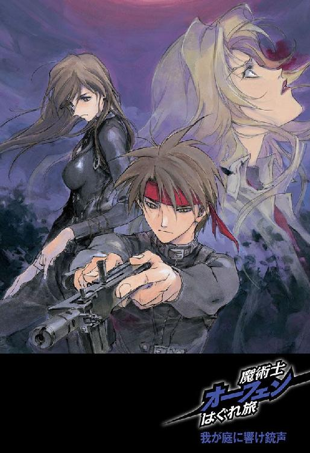
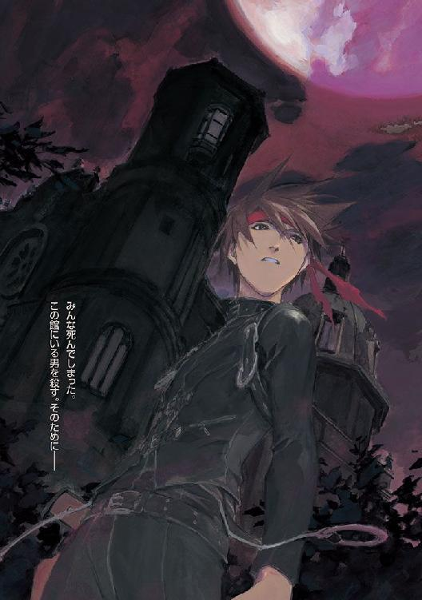
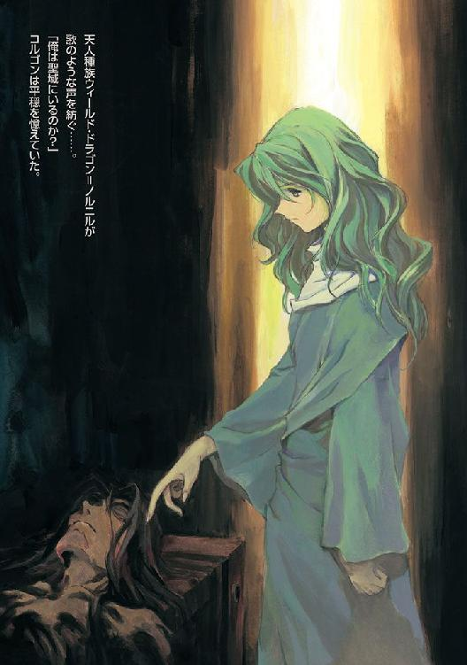
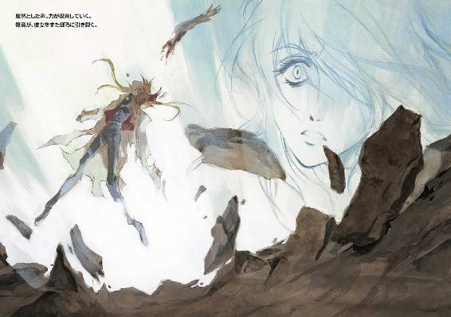
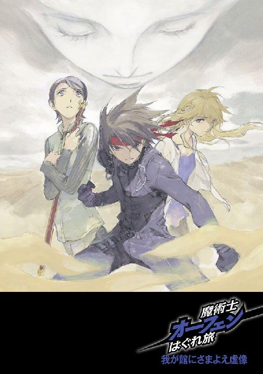
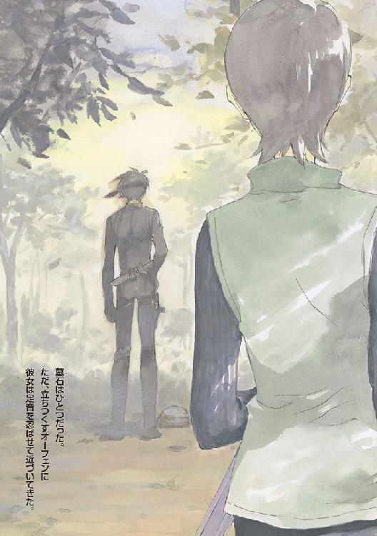
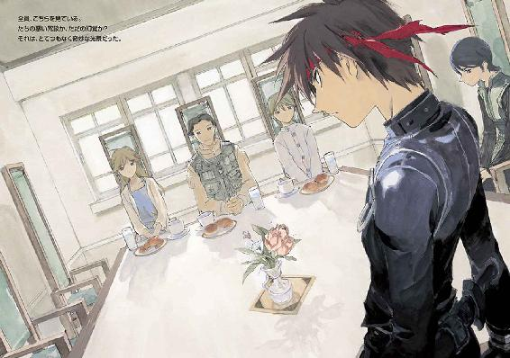
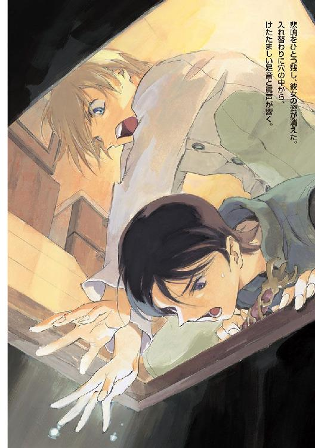
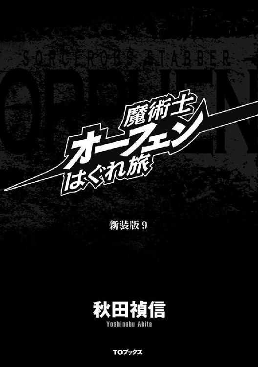
この作品は縦書きでレイアウトされています。
また、ご覧になる機種により、表示の差異が認められることがあります。
一部の漢字が簡略字で表示されていることがあります。
イラスト：草河遊也Ｙｕｕｙａ Ｋｕｓａｋａ
デザイン：ヴェイアＶｅｉａ
「身体が動かないだろう......それは仕方のないことだ。君の身体は今、急速に酸化しつつある。つまり、腐っている」
彼は確かに、動けずにいた。ベッドの上に横たわり、開いたまぶたを下ろすこともできない。部屋は燐光に満ち、ぼんやりと白く煙っていた。あるいはこれは、実際の光ではなく、乾いた眼球の見せる幻なのかもしれないが。
あとは、悪臭だった。耐え難いほどの臭いが、ふさぎようのない鼻孔から入り込んでくる。その苦痛の中には拷問というほどの激しさはなく、さらに最悪の緩慢さだけがじわじわと自分を押し包んでいくのが分かっていた。
まだ意識はある。
彼は微かに、つぶやきを発した。まだすべてが封じられたわけではない。どうしようもない腐臭の中でも、まだ自分は覆い隠されていない。
「生きていることが不思議なのではないか？ 生命を保ったまま、身体だけを腐敗させる毒......あまり趣味の良いものとは言えないが。聖域はそんなものも持っている」
その声は、腐敗臭と同じく、ふさぎようのない鼓膜から入り込んできたものだった。
「現在の君の体重は......あちこち崩れてこぼれ落ちたからね。四十四キログラム。もっと減っていく。死ぬまでにはまだだいぶかかるよ。君のような相手を捕らえておくのに、ほかに方法がなかったわけではない。だが、これを選択したのはわたしだ」
なるほど。
静かに納得する。
そして、言葉によってとどめを刺そうというわけだ──彼は胸のうちでつぶやいた。こちらの意気をくじき、抵抗力を奪って、尋問する。なにを求めている？ 問題はそれだった。なにを聞き出そうというのだ？
「ユイス・コルゴン......これが君の名前かね？ ほかにも名前があるようだ。卓抜した黒魔術士。優秀な戦闘技能者だな。恐らくは大陸でも有数の使い手だ──使い手だった」
わざわざ言い直して、声は続けた。
「それは過去のことだ。再生はできない。このまま、君はもう立ち上がることもできないまま緩やかに死ぬ。助かる方法はある」
沈黙。一呼吸では済まない──長い沈黙。
「だが生憎と、これは尋問ではなく処刑なのだよ。知っての通り、聖域はネットワークを持っている。君からの情報を必要とはしない。取引には応じられない。つまり、君は、死ぬ」
一言ずつ区切って、声はそう断言した。
だが嘘だ。
これもまた静かに納得する。脅しに過ぎない。
（なんと言ったか──）
単語が思い出せないまま、彼はつぶやいた。明らかに思考能力が低下している。脳が腐っているのか──いや、考えるべきではない──なんにしろ、これはこちらの心を折るための手管だ。つまるところ、あのための......単語が思い出せない......
（絶望させるための）
ようやく記憶を取りもどす。彼は苦笑した。徹底して優位性を誇示して、言葉を引き出そうというのだろう。彼らのネットワークが万能でないことは知っている。チャイルドマンの、そしてダミアンのネットワークもまた万能には程遠い。所詮は、誰のためにも制御されていない魔術に過ぎない。結局、誰の役にも立たない。
ダガモシカシタラ。
思考にひびを入れる不協和音を、聞く。
だがもしかしたら......聖域にあるものは、それとは桁が違うのかもしれない......聖域には、人間種族には望むことすらできない魔術の究極があるのだから......
（考えるな）
自分に命じる。体温は上がらない。もとより、身体中が燃えるように熱かった。腐敗する時、肉は熱を発する......
考えるな、と繰り返して、思考の筋を正す。
ドラゴン種族。聖域に存在するもの。人間種族が、大陸の覇権をかけて争うべき最後の敵。確か、領主はそう語った。
（......俺は聖域にいるのか！）
唐突に、悟る。
声は無情に先を続けた。
「あきらめろ、といったところで君は抗うことをやめないだろう......断末魔まで、わたしの言葉を分析して、戦いのチャンスを探るのだろうな。分かっている。君のような男をほかにも何人か知っている。君は戦士だ。君をうらやましく思う。わたしは戦士ではないというのに、戦わなければならない」
その声の主が何者であるのか、それほど無理はなく記憶に残っていた。ぼやけた視界にはその姿はないが、はっきりと思い出せる。聖服の男。アーバンラマで、自分を見張っていた。
職業的な殺し屋。それは間違いない。聖域のエージェントとして使われているのならば、一筋縄でいく相手ではあるまい。裏切りの符丁。ずっと戦ってきた相手。ずっと、彼らに聞きたいことがあった──聞く機会はないとあきらめていたが。お前たちは、なにを裏切っているというのだ？
だが今も、声は出せそうにない。
声は続ける。腐臭の中、涼やかな言葉が続く。
「最接近領の領主。君はその男の守護者だったそうだな。わたしには、なんのことだか分からないが。新参者には冷たいところのようだ、この聖域というのは......」
と、肩をすくめるような、そんな気配。
「その男を殺してこい、と命じられたよ。移動は、彼らが面倒みてくれるそうだ。いろいろと不満もあるが、ドラゴン種族の魔術というのが便利であるのは否定できないな。わたしは散歩にいくのと同じ手間で、その男を殺して帰還できるらしい」
これも策だ。自分に言い聞かせる。はったりに過ぎない。そんなことができるのであれば、とうの昔に領主は死んでいたはずだ。
が、
「またとない好機なんだよ」
こともなげに、男はつぶやく。
「今、大勢の人間が、その領主なる男を殺すために動いているようだよ。わたしはそれに便乗するだけでいい。なるほど。聞いたところによると、君たちはうまく均衡を利用してきたようだ。だが、最小の力で崩すことができるから......均衡というのは危ういのだ」
付け加える。
「もっとも......盤石の正義を求めて、失敗した男というのも知っているがね」
策に過ぎない。こちらに絶望を植え付けて、望むものを手に入れるための。
呪文のように繰り返す。自分の名前。ユイス・エルス・イト・エグム──
気配が変化した。声の調子も変わる。きびすを返したらしい。聞こえにくくなった声が、ぎりぎりに鼓膜にとどいた。
「ここからでは、君は仲間にコンタクトを取れない。助けは来ない。わたしが帰ってくるまでには、君は死んでいる。今生の別れだ。では」
そして、去っていく。
無視して、彼はつぶやき続けた。ユイス・エルス・イト・エグム・エド・コルゴン。いくつもの名を名乗り、必要なことも、必要でないこともしてきた。
策に過ぎない。こちらを絶望させるための。常套手段だ。毒というのも出任せだ。身体の自由を半端に奪って、暗示をかけようとしているだけだ。相手がこちらから、なにを聞き出そうとしているのか。逆に探れ。相手の秘密を引き出せ。常に戦え。敵は策を弄している。ほかになにも有効な手がかりがないという証拠だ。むしろ自分は優位にある。
策......
（どうしようもない愚か者か、俺は！）
馬鹿げている。負けを認めないだけで勝てるのであれば苦労はない。
（認めろ。これは窮地だ）
動けない。現状を回復する手段はない。
領主のことは考える必要はない。領主はキリランシェロを利用するつもりだ。それがうまくいくのであれば、切り抜けられるはずだ。たとえなにと敵対しようと関係がない。鋼の後継を殺すことができるのは、自分しかいない。自分を殺せるのが彼しかいないのと同様に。問題があるとすれば──
思い出した顔があった。いや、顔ではない。小さな肩。震える声。剣術競技者として生きてきた、訓練されたしなやかな筋肉と厳しい眼差し。彼女だ。ダミアンの裏を突いて、ほんの短い警告を送ることはできた。だが彼女は、自分の言葉を聞き入れただろうか？ 彼女にとっては自分は、復讐すべき仇だ。彼女自身を殺害した仇。
常に戦え。
死ぬまで戦う。身体を腐らせ、死につつある今でも。この絶望的な状況であっても。負けることが分かっているとしても。
絶望......絶望？
いや。
まだ意識はある。封じられたわけではない。覆い隠されてはいない。生きている。
まだ終わってはいない。そして、打つ手さえ間違えなければ、最後の勝利者は必ず自分になる。
第一章 一人目の死の予兆
「六人が死ぬ。それが予定だ」
それだけを断定するために、闇の奥から這い出してきたというわけではないだろう──それを信じる根拠があったとも言えない。だが完全に信頼する以外に、選択肢もない。それはそういった存在だった。キエサルヒマ大陸の悪魔。
「はい」
彼はうなずいた。肉体的にという意味ではない。
それが悪魔だとするならば、自分はなんなのだ？ 天使か？ 嗤う。
「この犠牲によって、我々は最も重要なものを手に入れることができる」
「つまり？」
「時間だ」
「先延ばしを？」
「そうだ。その隙に、敵の喉元に突きつける刃を研ぐ。鋭ければ鋭いほどいい」
「確かに今回のこの予定には、危険の要素はありません。ですが、彼らは騙されてくれるでしょうか？」
「騙す必要はない。戸惑わせるだけでいい」
悪魔の声には隙らしい隙もない。完全なる信頼。それを受けるに相応しい声。確かに。
彼は聞き返した。
「戸惑うのは、彼らだけではありますまい？」
「構わない。ネットワークを使用する敵と戦うのであれば、味方もまた敵となる──敵への情報源という形でだ」
「気がかりがあります」
「言ってみろ」
「......未知の要素を感じます。把握している勢力に対しては、すべて手を打ってありますが」
「適宜対応せよ。そのためであれば、限界まで力を使用することを許可する」
「はい」
通信は、そこで途切れた。悪魔との接続が断絶する。
情報の闇の中で、彼はその呼び名を反芻した。悪魔。敵との戦闘が本格化した現在、ネットワークで実名を呼び合うのは危険となる。悪魔。相手がそう名乗ってきた際、自分が驚きを感じたことに、さらに驚嘆した──数十年ぶりの動揺だった。
なにに驚く必要があろう？ そうも思う。こんな一時的な呼び名になど意味はない。名前になど意味はない。
だから自分は名乗らなかった。ネットワークの覇者として、この情報世界の中では彼が名乗る必要などはない。
「......完全なる世界のために」
そのつぶやきもまた、無意味だった。ほんのわずかな波紋を残すだけで、消失していく情報。現実世界において、情報はすべてそうだ。情報は必ず摩耗する。そして消失したものから、このネットワークへと沈殿していく。過去の蓄積。
◆◇◆◇◆
風は乾燥した大地の残骸を飛ばし、塵の混じったまだら模様を空に描いている。開拓業者に見向きもされないその荒野には、ごく静かに浸透していく餓死の気配だけがあった。かつてここがどういった土地柄であったのか。あるいは太古よりこの姿だったのか。だとしたならば砂漠化は大げさとしても、ここが広大な砂場とならなかったのはなぜか。そんな益体もない疑問を解くための英知は、いつだって不足している。
なにもない。死の押し売りがあるわけでもない。死滅という運命は大げさに君臨するわけではなく、ただ普遍的にすべてを見つめている──こちらの手のとどかない場所から。ずっと。
生命は無限には続かない。子孫は途絶える。種は絶滅する。世界は終わる。自然界においては、それが正しい。
「......道案内はできるわ。最接近領という呼び名は初めて聞いたけれど、わたしの行き先もそこなんだと思う。多分ね」
「多分？」
奇妙な言い回しをする姉に、オーフェンは聞き返した。視界には荒野ばかりが広がり、姉の姿はない。彼女は背後にいた。話しかけてくるのならば、どうして前に回り込んでこなかったのか──それは分からないが。なんにしろその表情はうかがえない。
彼は、振り向いた。長い黒髪を風にさらわれて、透明な眼差しでこちらを見据えている姉が、そこにいる。
厳しく口元を引き締めて、彼女は続けてきた。
「わたしがどうしてここにいると思う？」
苦笑する──オーフェンは、かぶりを振った。
「分からないよ。さっき聞いた時は答えなかったよな」
「そうね」
彼女はそれだけつぶやくと、口を閉ざした。
あるいは、最初から話すつもりもなかったのか。レティシャはそのまま数秒、視線もこちらからわずかに外した。
そして、いつも整って崩れない表情をこわばらせる。
「あなたの力が通用しない敵を排除するのがわたしの役割だからよ」
「役割？」
それもまた、分からない言い回しではあった。聞き返す。
「役割って、なんのための役割なんだ」
「誰かが用意したものではないわ。あなたが、自分の役割を自分で見いだしたのと同じようにね」
「なにを言ってるんだ？」
うめく。と、彼女は即座に告げてきた。
「あなたが経験したここ数年の出来事。すべてとは言わないけれどかなりの部分が──わたしの知識の中にある」
「............」
沈黙は、風が吹き消した。いたずら蝋燭の炎のように、一瞬で消え、そして揺れながらもとの大きさへともどる。
言葉はなく、荒野にほんの数秒。
あくまでも、理解できない言い回しを続けるレティシャに、オーフェンは何度か口を開きかけた。そのたった数秒の間に、だがその度に言葉を呑み込む。なにを言っていいのか、なにを言おうとしていたのかすら自分で分からず、喉の奥にどの言葉を封じたのかも思い出せない。
結果、彼女の言葉を待つことになった。顔を変えないまま、レティシャが言ってくる。
「みんな教えてもらったわ。わたしは今、ネットワークの接続下にある。ある程度なら、ネットワークの機能を使うこともできる。コルゴンと......同じ立場ってわけね」
「フォルテの仕業か。スパイってのは、趣味が悪いな」
《塔》で唯一──というより、大陸西部で唯一か──ネットワークを扱う資格を持つ兄弟子の名前をつぶやいて、レティシャを見やる。彼女は苦笑したようだった。それほど表情は変わらなかったが。
「わたしの言葉をあなたがどう解釈しようと、あなたの勝手よ」
「役割って言ったな」
彼女がここに来た理由というのは、もうどうでも良かった──フォルテが彼女を寄越したのであれば、それは彼なりの理由があるからだろう。ついでに言えば、彼女がその指示に従ったのも、彼女なりの理由があるからだろう。それは詮索しても仕方がない。話したくなれば、彼女から話してくれるはずだ。
それよりも、気になることがあった。オーフェンは彼女に一歩近寄ると、風に逆らってうめき声をあげた。
「俺の役割って、なんだ」
「誰かが用意したものなんかじゃないって言ったでしょう。あなたが、自分で決めたはずよ」
「俺がなにを決めたって？」
それは疑問ではなく、ただのつぶやきに過ぎなかった。誰に聞いたところで答えなど返ってくるはずはない。この荒野の光景こそが待ち受ける天然の運命であるのならば、同様に人間の生き様にも特別な役割などはない。
死に方にも意味などはない。それでも感情だけがそれを否定する。
風が吹いた。それまでと同じ強さで。
「......俺の力が通用しない敵？」
オーフェンは、大気の流れに揉まれる自分を見下ろす心地で、小さく聞いた。レティシャは腰に両手を当てて、きっぱりと答えてきた。
「これから出会うほとんど全員よ」
「誰も彼もが敵だって言いたいのか？」
「そうなるわね」
と、彼女は刹那、顔をしかめた。ちらりと、横を向いて──
「あるいは、彼女もね」
「イールギットのことか？」
姉の視線の向きを追って、オーフェンは聞き返した。そちらには、イールギットがいるはずだった。王都に集う最高の黒魔術士たち、《十三使徒》の一員である、イールギット・スィートハート。
レティシャはわずかにあごを動かす程度、かぶりを振ってみせた。
「場合によっては、ってことよ」
「さっぱり意味不明だ。なにを言ってるんだ？」
癇癪を噛みつぶして、うめく。オーフェンは彼女を見据えて、さらに続けた。
「なにか勘違いしてないか？ 俺は、その領主とかいう奴に招かれて、そいつに会いに行くんだ。クリーオウたちのことは気がかりだが、奴らの意図がはっきりしないうちに、そいつらが敵に回ると決めつけるのは危険だろ。コルゴンだって、その領主とかいう奴に協力してるんだぞ？」
「彼には彼の役割があるわ。分からないのは、領主なる人物の役割よ」
「その役割っての、やめてくれないか。なんだか、誰かになにか押しつけられてるみたいで落ち着かない」
こちらの言葉に、姉がまったく表情を変えなかったことに苛立ちながら、告げる。
彼女は特になにを言ってくるわけでもなかったが、承知はしてくれたようだった。言い直してくる。
「大勢の人間が動いているわ。そのすべての集約点にいるのが、その領主を名乗る人間なのよ。それだけの人物が、部外者にはまったく存在を知られずにいるというのも不自然なことで──」
と、なにかに気づいたように、レティシャは言葉を止めた。別の声が割り込んでくる。
「最接近領の領主は、貴族連盟のトップシークレットよ。わたしたちにもその実態はつかめていない。その名前が、少なくとも二十年以上前から囁かれているにもかかわらずね」
見やる。と、崩れかかった岩陰からのぞき込むように、女がひとり姿を見せていた。陽気な造りの輪郭に、冷ややかな影が落ちているのがうかがえる。
彼女はその岩陰から一歩踏み出して、あとを続けた。
「ここにきて《十三使徒》の上層から、その男の実像を明らかにしろと命令が出たのは、貴族連中を無視したまったくの独断よ。貴族連盟がわたしたちの動きを知ったら、ひとりやふたりじゃ済まないくらいのクビが飛ぶでしょうね」
「聞いてたの？」
レティシャが、聞く。出てきた女は──イールギットは、分かりやすいほどに大きく苦笑してみせた。
「気づいてたんでしょ？」
「いいえ。悪いけど眼中にないから」
「あーそー」
と、しばし険悪ににらみ合ってから──気力が続かなかったのか、イールギットは嘆息を漏らして顔を伏せた。
「まあね。あなたの言いたいことは分かるわよ」
「俺にはさっぱり分からん」
蚊帳の外に置かれた気分で、毒づく。
イールギットが再び苦笑を顔に広げた。
「仲間に見捨てられたからといって、わたしはあくまで《十三使徒》であって、あなたたちはそうじゃないってことよ」
「任務を遂行しなけりゃならない？」
「ええ。わたしは最接近領に潜入して、領主を探らないと」
聞いて良いものかどうか──
それについての確信はなかったものの、オーフェンは口を開いた。この質問が、彼女を敵にしてしまいかねないことは自覚していたが、聞かないわけにもいかない。
「......君の任務はそうだとして、シーク・マリスクと、ええと──」
「カコルキスト・イストハン。分かってるわ。彼らの任務は、どうもわたしとは違うみたいね」
あきらめた様子で、ぐったりと、イールギットがうめく。
「彼らは暗殺技能者。それも、とびっきりのね。キリランシェロ君、現役を退いたあなたとは違うわよ」
「別に俺は、現役の暗殺者だったことなんか一度もない」
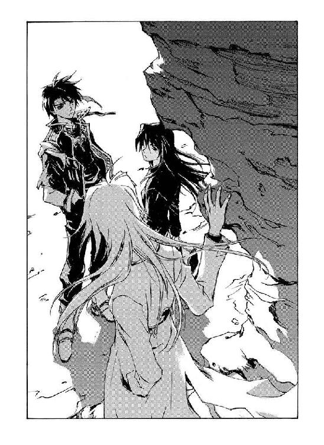
つぶやく。自然と口が突き出た。
が、彼女にはどうでも良いことだったのだろう。そのまま、続けてくる。
「彼らが今まで、そういった任務を請け負っていたなんていう公式な記録はないけど──当たり前ね──、噂だけは囁かれてた。キリランシェロ君にも覚えがあるでしょうけど、暗殺技能者としての戦闘訓練を受けた魔術士になら、ついてまわるお約束の噂よね。信じたくはなかったけど、どうやら否定もできなさそう」
と、レティシャが聞く。
「彼らの任務が暗殺なら、どうしてあなたも同行することになったの？ 足手まといにしかならないでしょ」
彼女をにらみつけてから、イールギットが答えた。
「わたしをこの任務に同行させたのは、マリア先生よ。多分......先生は、知ってたんでしょうね。だからわたしをストッパー役にしようと」
そこで唐突に言葉が途切れる。
彼女がなにを言いかけたのか、そしてどうして言うのをやめたのか。それは容易に知れた。役割。
それを吹っ切るように、彼女は声を大きくした。
「彼らを止めないと」
「コルゴンだ」
「え？」
唐突につぶやいた言葉に、イールギットが声をあげた。レティシャはとうに気づいていたのか、じっとうつむくだけで動きもない。
思い出したことがある。現役の暗殺者......ということならば。
（誰を差し置いても、あいつじゃないか）
オーフェンは繰り返した。
「コルゴンだ。領主のために働いてる──あいつ自身がそんなことを言ってた。だとしたら、危ないのはあのふたりのほうだ。返り討ちにあうぞ」
役割。
自分の声で、自分の心に響く言葉。
それがコルゴンの──キエサルヒマ大陸で紛れもなく最高の暗殺者の、役割。
◆◇◆◇◆
「ひとつ大事なことを忘れている気がする」
それは誰だって、いつだって、なんだってそうだ。声に出さず、胸の内でつぶやく。
あえて答えなかったのは、そもそもその声が、自分に向けて発せられたものではなかったからだ──離れた場所で、どうしてか岩の上にわざわざ仁王立ちして兄弟で話している地人たちを眺めながら、ロッテーシャはぼんやりとよどむ感情を不定型に空へと広げていった。まとまった考えなど浮かばない。人の心が脳にあるのか、心臓にあるのか、かつて哲学者は悩んだものらしい。だがどちらも間違っている。肉体などに心はない。だからといって魂などという不確実で曖昧なものがどこかにあるわけでもない。つまるところ、人には心などないのだ。
そう思う。が、やはり、声に出しはしない。父の形見の剣を緩く抱きかかえて、彼女は嘆息した。人には心などない。この嘆息にも意味などないはずだ......
「大事なことを忘れてる気がするぞ、ドーチン」
返事がなかったことが不服だったのか、その地人は同じことを繰り返した。その岩の下に座っているもうひとりの地人が、ぐったりと声を返す。
「ひとつやふたつじゃないと思うんだけど」
「そんな気もするが、しかし大事なことはひとつだ。そもそも俺たちは、どうしてこんなところにいるのだ？」
どうしてこんなところにいるのだろう。彼らではない。自分はどうしてここにいるのか。
心も持っていないくせに、疑問は尽きなかった。疑問の数ではない。問いの深みが尽きない。足まで......腰まで......胸まで......どこまでも沈み込んで、まだ底がない。だが抜け出すこともできない。疑問は尽きない。
（わたしはどうしてここにいるの？）
決まっている。エドを、自分の元夫を殺すためだ。この手で。この剣で。
（......この剣、で？）
父の形見の剣で。使い方も分からない魔剣で、エドを殺す。
エド。コルゴン。ユイス。
大勢の人間が、それぞれ違う名前でその男のことを呼んでいる。自分の知らない名前で彼のことを。結局のところそれは、自分がいかに、彼のこと知らなかったのかということだ──名前の数だけ、知らない彼がいる。
（そんなことをわざわざ思い知らせなくたっていいじゃない？）
独りごちる。
エド。彼はエド。
と、地人が──ドーチンとかいう弟のほうが、つぶやくのが耳に入った。
「どうしてって、兄さんがあの髪の長い魔術士と約束したんじゃなかったっけ」
「うむ。そうだ。あの借金取りと会うことができれば礼をすると言っていた」
「言ってたね」
「だが礼をもらってない」
「もらってないね」
「......どうしよう」
「いや、なんでそこで弱気なのさ」
そんな会話を聞くともなしに聞きながら、ロッテーシャは違う言葉を思い返していた。風の中に浮かび上がった幻像が。語った言葉。
『自分を守れ！』
それは──
（......わたしを案じてる？ どうして？）
まったく意味が分からない。
まったく意味などないのかもしれない。
だとすれば考えるだけ無駄だ......それは風の音が、たまたまそういった言葉に聞こえただけに過ぎないとも考えられる。心などない。単に、復讐を欲する自分の肉体と、その目標との肉体があるだけ。両者の関係でしかない。その間に交わされた言葉になど意味はない。聞く必要も、考える必要も。
（ない？ 本当に？）
「そんなことはないぞ」
岩の上の地人が、断言する。
弟のほうが、それに答えた。
「でも、向こうはお礼のことなんて、すっかり忘れてるんじゃないかって思うけど」
「遠回しに聞いてみるというのはどうだろう」
「たとえば？」
聞きながら、その声には八分ほどのあきらめが含まれているようだった。
「よこせ」
「いいんじゃないかな」
十分のあきらめ口調で、弟。
自分とは無関係な会話──その一部が、頭の中に反響するのを、ロッテーシャはそれこそ他人事のように聞いていた。
よこせ。それでいい。よこせ......
そうして奪われたなにか。
それが、自分と彼の間に横たわっている。ひとつではない。とても多くのこと、多くのものが。この魔剣も、そのひとつだった。
「そうか？ リハーサルは十分か？ いいか、チャンスは一度きりだぞ。なんとなくそんな気がするからな。この際だ。がっぽりと儲け殺す」
「うまくいくといいね。いやホント。なんていうかホントに」
と。
十分強のあきらめ声──それはつまり泣き声にも聞こえたが──で繰り返す地人に、ロッテーシャは声をかけた。衝動的に、立ち上がりながら。
「あの」
地人たちの反応は鈍かった。自分のことを忘れていたのかもしれない。恐らくきっと、そうなのだろう。驚いたように目をぱちくりして、こちらを向き、
「なんですか？」
かけている眼鏡の位置を直しながら、弟が聞いてくる。なんとはなしに気後れを感じつつ、ロッテーシャはつぶやいた。
「みんなは、どこかしら」
「あっちだと思いますけど」
と、指さした方向を見る。どちらを向いても変わらない荒野。太陽の位置だけが、一定の軌跡を描いてじりじりと変化している。影が変わっても、この風吹く光景には大差ない。だが、向かうべき方向がひとつだけ指し示されているのであれば、こんな土地にも意味はある。
（いえ......意味はない......はずなのだけど......）
締め付ける胸の中から空気を絞り出し、彼女はそれを声にした。
「わたしも、行ってきます」
「そですか」
たったそれだけ。その言葉を背に、歩き出す。
足跡も残らない。誰も自分を見ていない。父は死んだ。エドは去った。自分は......死に損なった。
意味のないこの世界に、まだ生きている。
（こんな虚無感......馬鹿みたい）
自分に毒づいて、彼女は足を速めた。
（復讐は虚しいことだなんて、そんなことない。わたしはやり遂げる）
エドは手強い敵だ。それを思い知って、弱気になっている。それだけのことだ。
からからと、回し車のような音を立てて吹きすさぶ荒れた風に背中を押されながら──彼女は、進み続けた。
◆◇◆◇◆
ちっ......
唇の間から漏れた音は舌打ちではなく、奥歯のこすれた音だった。十数年来──文字通り十数年ずっと、食いしばることを繰り返し、すっかり潰れた奥歯が軋む音。
一瞬の接触に過ぎなかった。しかも不意打ちを仕掛けたのは自分だったというのに。砕けたのは、自分の半身だった。肉体ではない。お守りほどにも役に立たないボディーアーマーの半分が、止め紐を引きちぎって派手に吹き飛んだだけだった。なにを食らったのかは、よくは分からない。だが接触だった。たった一瞬の接触。
それが、爆発物でも使ったように、アーマーを引きちぎった。
（やるね......！）
荒野の地面に靴底をこすりつけて倒れかけた身体を支え、ウィノナはうめいた。防具はどうでもいい。どのみち意味はない。左手に構えた拳銃を握り直し、トリガーガードの外に置いていた指を引き金にかける。
（どこへ行った？）
反動を膝で吸収すると同時に、左右を見回す。敵の姿は視界になかった。気配も感じない。呼吸も聞こえない。大気の流れと鼓動とが一致しない不快感が、うなじを撫でるように神経をつつく。
神経繊維は肉体の内にありながら、外気との接触を敏感に訴えてきていたが、肝心の敵の位置だけは察知できなかった。敵の動きを目で追う。そんな素人のようなことをしなければならないとは！
（つまるところ......この敵とあたしの力の差は、玄人と素人くらいあるってことかね）
動くことはやめた。踏みとどまった姿勢そのままで、再びあたりを探る。
隠れる場所がいくらもあったというわけではない。にもかかわらず、この敵は気配を完全に消した。地面に溶けて沈んだか、空でも飛んで逃げたか──そうとしか思えなかったが。見回せば、崩れかかった岩と、腕の太さほどの地面の亀裂、朽ち木くらいしか目につくものはない。砂の色に染まった風。
見当もつかなかったというわけではなかった。
人がひとり、隠れられる場所というのが確実にある。その隠れ場所ならば、地形を選ばない。凍った湖面の上だろうがどこであろうが、間違いなく身を潜めることができる。地面に溶けて失せるのと同等に。
ウィノナは前方に身を投げ出した。受け身を取って転がり、背後に向けて起きあがる。予想通り、敵は──自分の背後に隠れていた。
視界に人型の黒い影が映ろうとする。刹那。
「────っ!?」
眼球に激痛が走った。左手に衝撃。発砲音──トリガーに指をかけたまま動いたため、拳銃が暴発したのだろう。視界が閉じたため、その弾丸がどこへ飛んでいったのか、それは分からなかった。敵には当たらなかったろう。そうそう都合の良いものではない。敵との距離は数メートルはあった。弾道の安定していないこのディーディーの弾は、零より上の距離で命中を期待できない。
それよりも眼だ。まぶたをこすりたいという誘惑に必死で耐える。自分にとって敵が遠距離にあったということは、敵にとっての自分もそれと同等の遠距離にあったということにほかならない。回転するこちらの動きを見定め、眼球に対して精密な攻撃ができたはずはない。魔術士でなければ、の話だが。呪文の声は聞こえなかった。
顔に涼気を感じていた。皮膚の水分を奪って揮発していくなにかの触感。
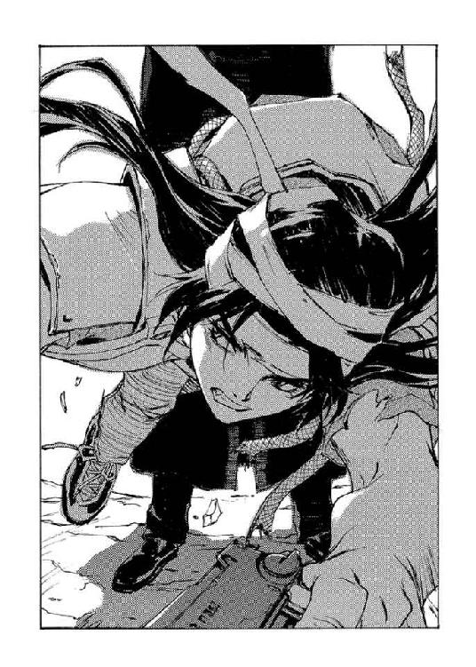
（薬品を......かけられた？）
それならば、ある程度距離をおいていても、目つぶしを狙えるかもしれない。
思い当たる薬品の種類がいくつか、ざっと頭に浮かぶ──が、意味のないことだった。即死性の猛毒かもしれないし、ただの泥水かもしれない。なんにしろ数秒は眼を開けられないことに変わりはない。その事実だけが厳然としてある。気配の読めない敵の前で視界を潰され、そして恐らく数秒のうちに、敵は間違いなく次の攻撃を仕掛けてくる。その現実だけが冷厳としてある。
（殺される）
今度はアーマーではなく、肋骨を爆発させられる。その次は内臓か。その次は背骨か。どのあたりで死ぬだろう。
（でもね）
敵が零距離の接触でこちらの身体を吹き飛ばすことができるのは分かっている。
だがこちらも、零距離ならばありったけの弾丸を撃ち込むことができる。そのうちの一発でも、敵の神経の奥にめり込めば、役目は果たせる。
そのあと生きていられるかどうかは、今さら考えることでもない。
待ち受ける。
ディーディーの内にある、残り五発の弾丸。一発が人の命を容易く奪う、だが千発撃っても見当外れの方向に飛んでいくだけかもしれない不確実な殺人兵器。
整備は万全だった。機械的な暴発はない。弾は撃ち尽くせる。そう自分に言い聞かせる。
待つ一瞬。待ちわびる数瞬間。
それが数秒へと化けて──彼女は、まぶたを開けた。
視界は涙でひどくぼやけていたが、見えないこともなかった。かすみながら網膜に映ったのは、荒野の風景。地獄の一歩手前の死んだ土地。最接近領......
敵の姿はなかった。彼女はただひとりで、そこに立ち尽くしていた。
拳銃を下げる。顔面を手でぬぐう。目を潰したのは、薬品ではなかった。手のひらについた土の塊を見やって、苦笑する。砂をぶつけられただけだ。こちらが目を閉じている間に、敵は逃げた。
「伸るか反るかの賭はしないってか......つまらん手合いさね」
独りごちる。
屈辱とは感じなかった。生き延びたことを認める。ただそれだけに過ぎない。自分が戦っている相手がなにであるかを思えば、それだけに過ぎない。
（逃げたって、どうせ行き先は分かってるんだ。領主様のところまで、まだまだ近くはないし、あたしは追跡をやめやしないよ）
と。
歩を進めようとして、横目で気配をつかむ。敵ではなかった。身構えることなく、ただ足を止める。
そこにいたのは、自分よりやや背の低い、無愛想な男の姿──それが男でも女でもなく、そもそも人間でもなく、そんな存在でしかないことは知識では分かっている。しかしそれでも実在感を持ってそこに在る男の姿には、不自然な部分をあげろと言われても難しかった。
大陸における魔術のハイマスター。最高にして無比の魔術士。ダミアン・ルーウ。彼を見やって、ウィノナは口を開いた。
「......とうとうヤキが回って、あの世に行く日がきたのかい？ この深度まで敵の侵入を許したことはなかったはずだよ」
吐いた言葉には血の味がした。知らない間に、口を切っていたらしい。唾とともに、赤い錆の塊を吐き捨てる。
ダミアンには変化はなかった。まるで空中に腰掛けるようなつま先立ちの奇妙な姿勢で、言ってくる。
「ユイスが呼び出しに応じない」
「さっきも聞いたよ。だから、手順を切り替えたんだろう？ あの嬢ちゃんたちはどうしたのさ」
「今、領主様と話をしている。特に問題はない」
「だったら、こっちも問題なしにして欲しいもんさね」
皮肉って、ウィノナは鼻を鳴らした。両手を広げて、続ける。
「あのゴースト現象は陳腐だったよ。まるで通じやしなかった」
「《十三使徒》め、よくもまあ、あれほどの魔術士を使い捨てる決心をしたものだ」
「日頃、最強の魔術士だなんだとふんぞり返って、こんな時に格下の相手をどうにもできないのが、あんたってわけだ？」
癇癪とともにぶつける。予想の通り、ダミアンはまったく動じなかったが。
その最高の白魔術士は、静かにお定まりの文句を口にした。
「外敵を始末するのはユイスの役割だ」
「領主様をお護りするのが、あたしたちの役割さ。どう違うっての？」
「たとえ、この最接近領に入り込んできたのが魔人プルートーだったとしても、わたしはそれを滅ぼすことができる」
虚栄ではない落ち着いた口調で、白魔術士は続けた。もとより、この男に──いや、この存在に、虚栄などというものは無縁であると、とうに分かってはいたが。
「だがそれをすれば、わたしはほぼ全部のエネルギーを使ってしまう。わたしは決して全力では戦えない。それは白魔術の限界であり、制約だ。わたしが力を使い果たせば、最接近領は無防備になる。アーバンラマの件で、我々は聖域に存在を知られているのだ。冒険はできない」
「なら悠々自適に死に絶えるがいいさ。あんただけね。領主様は護るよ、あたしが」
結局のところ──
本当の意味で、領主を守護するのは本心の知れない黒魔術士でも、得体の知れない白魔術士でもない。自分だけだった。自分だけが、この最接近領において真性の意味で領主に仕えている。
この最接近領に、同志と呼べる仲間もいる。ひとりやふたりではない。だが自分だけなのは変わらない。
「誰が来ようとあたしが殺す。それでいいんだろ？ 今消えた奴の居場所を教えな。追いかける」
「足跡をロストした」
「......あん？」
いい加減に苛立ちは最高潮に達していた──眉間に強くしわを刻んで、うなる。
「馬鹿言ってんじゃないよ？」
「馬鹿を言っているつもりもない。どうやら敵は、ネットワークの監視網を誤摩化す手を知っているらしい」
「あんたがいつか、役に立つ日が来ると良いさね。人手を集めな。トリンキーとライドなら近くにいるはずだろ。それでも足りなきゃ、あの黒魔術士たちに今さら頭下げて頼むんだね」
言い捨てて、歩き出す。気配を捉えられないのであれば、目で追うしかない。同じように、ダミアンがあてにならないのであれば、自分で探すしかない。
◆◇◆◇◆
（魔術士は理想を体現できる）
それは証明されていない歴史──つまりは実証されていない歴史ではあったが、信ずるに足ることだったはずだ。
（現実という現象に負けることのない理想。それを体現できる。魔術という端的な成果から、魔術士はその理想を信じるだけの確証を得たのだと......それを言ったのは）
それを言ったのは、誰だっただろう。彼女には思い出せなかった。自分ではない。教師でもない。自分の知っている誰かではない。イールギットは、あてにならない記憶を探りながら、無言で妥協した。
恐らくは、大昔の魔術士かなにかだろう──大陸魔術士同盟結盟時の演説であれば、いかにももっともらしいと思える。魔術士は理想を体現できる。愚劣な過去とは決別できる。子孫が恥じることのない世界を作ることができる。確かに、演説らしい。出来の良い演説とは言えないが、聴衆は喜んだだろう。
理想に打ち勝つということが、理想をあやふやにしてしまうとは、誰も考えなかったのか？
「こんなの覚えてる？」
彼女は顔を上げて、微笑みかけた。
「いつだったか、山中訓練にあなたが水着持ってきてて──」
「手が留守になってるわよ」
冷ややかな声が返ってくる。
あえて抗弁はせず、イールギットは自分の手元を見下ろした。ずっしりと重い連射式ボウガンが、装弾の途中で手の中にある。
四発が一束になっているカートリッジをレティシャの鞄の中から探り出し、彼女はかぶりを振った。あまりにも愚かしい。
レティシャはこちらに背を向けて、アンダーウェアの上に黙々と黒革の戦闘服を着込んでいるところだった──《塔》では標準装備だが、王都のスクールでは、とうに時代遅れの廃物とされたものだ。なにを持ってきたのかと思えば、わざわざそんなものを運んでいたらしい。確かに耐刃繊維と革を組み合わせた強度は優れもので、各所に武器を隠して携帯できる。だが長距離を移動するには向かないし、長時間着て過ごすにはさらに向かない。それでもそれは、自分も含めて《塔》の魔術士たちが奉じる、一種の偶像だった。
当たり前だがレティシャは、イールギットの分までは持ってきていなかった。服の背中から長い黒髪を引っ張り出して、手早く留め具を留めていく彼女を眺めて、イールギットはつぶやいた。
「あなたが武器を使うなんて知らなかった」
「そりゃ、普段から使うようなものでもないしね」
こともなげにレティシャはそう言ってくると、肩越しにこちらを振り向いた。続ける。
「あなたも使えるものは持っていったほうがいいわよ。かなり余分に持ってきてあるから......持ちきれないものはどうせここで放棄していくんだし」
「わたしは......いいわ」
我ながら驚くほど、弱々しい声が漏れた。カートリッジをボウガンに押し込み、安全装置となるピンを挿すと、それをレティシャに手渡す。
苦笑いは隠せなかった。
「こんなもの、どこで手に入れたの？ まさか武器商人とつきあいがあるわけでもないでしょう？」
「フォルテの交友関係を図にして見せてあげましょうか？ ゆすりだけで食べていけるわよ」
さほど冗談とも思えない口調で、彼女が言ってくる。イールギットは空っぽになった手を見下ろして、ついでに、地面に置かれたレティシャの鞄へと視線を移した。確かに、冗談でもなさそうではある。
戦闘服を着込んだレティシャ・マクレディは、どことなくマリア・フウォンを連想させた──ともに、イールギットが知る限り最も戦闘に特化した黒魔術士。確かにタイプは似ている。外見は似ても似つかないが。マリア教師が若すぎることから、自分と彼女と師とは、奇妙な関係にあった。マリア・フウォンとレティシャ・マクレディは基礎クラスでの先輩と後輩、そして自分とマリア教師とは師弟関係にある。自分とレティシャとは歳もそれほど離れていないのだが。考えてみれば、レティシャとその師、チャイルドマン・パウダーフィールドも、五歳ほどしか違わなかったはずだ。
そのレティシャが、鞄の上にかがみ込んで、黒い紙にくるまれた木製の小箱を──手投げ爆弾のようにも見えたが、まさか──取り出すのを、見下ろす。彼女は次々と、なにかのコントのように鞄から武器を取り出してみせた。鞘に収められた大型のナイフ、肉厚で不格好なパリイング・ダガー、折り畳み式の警棒、ベルトにずらりと収められた数本の投げ短刀は、肉屋の軒先に吊されているソーセージを思わせる。
最後に、細いチェーンを左腕に巻き付けながら、レティシャがふと、目をぱちくりさせたようだった。
「あ、これキリランシェロのだわ」
「え？」
聞き返す。鞄の中に残っていたのは、段ボール製の靴箱だった。
彼女が取り出したそれに、なにげなく手を伸ばす──視線で問いかけると、レティシャは特に止めようとはしなかった。そのまま箱の蓋を取り外す。と。
息が詰まる激痛に、イールギットは悲鳴をあげた。肺を絞ったのは、自分の筋肉だった。目の前が暗くなる。見えたものをそのまま鵜呑みにすれば、それはつまり、ひとつの結論しか導き出さなかった。レティシャ・マクレディ。《塔》の最エリートたる黒魔術士。この女は狂ったのだ！
「これ......あなた！」
それを呼び表す言葉を思い出せず、叫ぶ。が、レティシャは平然とこちらを見返してくるだけだった。狂っているのは、そちらなのだとでも言いたげに。
「《塔》の最機密よ。でもどうせ、発案者は先生だしね」
「わたしは今は《十三使徒》なのよ!? 分かってるの!?」
「〝ヘイルストーム〟──キリランシェロが使い方を忘れてなければいいけど。これの専門訓練を受けたのは、コルゴンとキリランシェロだけだから」
こちらの言葉を無視して、彼女は淡々とそんなことを口にした。冷たい瞳に、かつて数多くの男子生徒が灯るのを期待して叶わなかった、ほのかな熱の塊を宿して。そのまま続けてくる。
「デリケートな武器だから信頼性は低いし、魔術に比べれば威力は劣るけれど、それでも......多分必要になるわ」
騎士は王権による治安構想の中で、ひとつの武器を象徴とした。
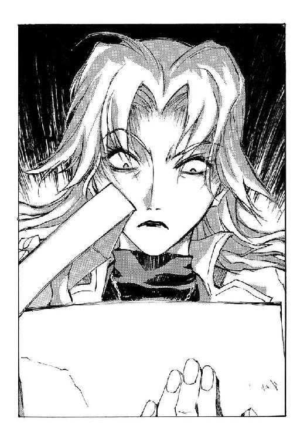
それは平和の理想だった。願わくば、何者もその武器に逆らうことがないようにとの。
拳銃。しかも、ここにあるのは王都で実際に騎士に支給されている旧態依然とした代物とはまったく違う。
（噂だけなら、聞いたことはあったけど......）
実物を目に映して、震えを覚える。《塔》で極秘に、次世代の能力を持った拳銃と、そしてそれのまったく新しい形での運用を開発しているということは、よほど噂にうとい者以外には周知のことだった。外観は従来の拳銃と似ているようで、まったく違う。あるいは共通しているのは殺人への鉄の意志だけだった──引き金を引けば手加減のない死を送り込む明確な機能。そのためだけの装置。
レティシャの手が、そっと蓋を閉じた。
そして静かに、本当に静かに告げてくる。
「あなたもなにか武装したほうがいいわ」
「わたしはいいって──」
刹那。
強烈な力で、突き飛ばされた。いや、胸元を掴んだまま、背後の岩へと押しつけられた──レティシャが立ち上がるのは見えず、彼女の手の動きもまったく把握していなかった。激しく強く、ことさらにじっくりと、この戦闘服の魔術士が発揮する悪魔のような握力に喉を潰されていくのを、イールギットは声も上げられないまま体感した。
押し殺した声音で、レティシャが言ってくる。
「はっきり言っておくわ。あなたは邪魔なの」
こちらの動きを封じて、彼女は鼻が触れるほどに顔を近づけてきた。息遣いまでもが感じられる距離で、あとを続けてくる。
「あなたがいることなんて予想してなかった。あなたは足手まといになる。キリランシェロもわたしも、あなたを気にして死ぬかもしれない」
「なんだか、馬鹿げてるわ」
レティシャがわずかに指をゆるめたことを、こちらにしゃべれという合図だと信じて、イールギットはなんとか声を発した──しわがれた声で、うめく。
「なんなの、この装備は。誰と戦うつもりで用意したのよ──」
「足りやしないわよ」
彼女は即答してきた。
首を絞めている、レティシャの手首を掴み返す。イールギットは相手の目をにらみつけながら、力を入れて押し返した。震える吐息を声にする。
「シークと同じようなことを......言うのね。最接近領の領主。あなた、なにか知ってることがあるんじゃないの!?」
相手は片腕だというのに、こちらは両手でなんとかぎりぎり押し返せるだけ。その事実に歯がみする。
「レティシャ・マクレディ......答えなさい！ あなた、なにが目的なの！」
「あなたには関係のないことよ」
ふっと──唐突に、レティシャが力を抜いたせいで、つんのめる。こちらが転んだことなど気にもとめずに、彼女はあとを続けてきた。
「ここに来たのは私用よ」
「そんなことが通用するとでも思ってるの？」
咳き込むことはなんとか堪えて、イールギットは毒づいた。
レティシャは、軽く首を左右に振ってみせただけだった。髪が揺れるほどの仕草ですらない。
「無理でしょうね。でもどうせ、言ったって信じてもらえない」
「今さら」
「本当に、今さらよ。今までなにもしてこなかったのが。でも──」
そこまで囁いて、レティシャが言葉を切った。悲しく笑い、そして同じことを繰り返す。
「あなたには......関係のないことよ」
終わりだった。聞けない。聞いても無駄だろう。
負けを認める不快感──あるいはもっと別種の虚しさに、ため息をつく。イールギットは胸元を正すと、背筋を伸ばして彼女を見返した。
「どのみち、わたしだって任務があるのよ。別に、あなたたちに守ってくれなんて言わないわ」
「そうね......そうでしょうね」
レティシャはそううなずくと、拳銃の入った靴箱を抱え上げた。ここまで着てきた服と、鞄はここに捨てていくらしい。ナイフや鎖を装備された全身の戦闘服。レティシャ・マクレディの、表情に影を落としたうめき声。聞こえてきたのは、小さなつぶやきだった。
「ひとつ聞いていいかしら」
「なに？」
あまりにも気配が変わったことに、押さえきれない動揺を覚えながら、聞き返す──レティシャの表情からは、こちらを恫喝してきた力がすっかり抜け落ちているように見えた。彼女の視線が......地面を見つめている。
聞き取りづらい声で、彼女は聞いてきた。
「シーク・マリスクと、ええと......」
「カコルキスト・イストハン」
「そのふたりを相手にして、わたしは勝てる？」
「え？」
思わず、間の抜けた声をあげる。二、三度まばたきしても、相手の姿は変わらない。
レティシャがそのまま、続ける。
「二人一組で行動する専門の暗殺技能者を相手にして、わたしは勝てるかしら」
見る限り、彼女は本気で言っているらしい。
慌てて、手を振り上げ──イールギットは口早に叫んだ。
「あのふたりと戦うことになんかならないわよ。そうでしょ？ まさかあいつらと殺し合うことなんて──」
言ってから。
空虚な響きに、胃が音を立てたように思える。
そこまでだった。なにも言えなくなる。レティシャが顔を上げなかったから、ではない──もっともらしいことを言おうとして、自分の声が裏返っていることに気づいたからでもない。気づいたからだった。
勝てるわけがない。
だが。でも。
レティシャ・マクレディは戦うつもりでいる。
魔術士は理想を体現できる。暴力と暗闘の歴史は終わったのだと言葉は告げる。
虚しい言葉は、風に消える。
あとは、これといった会話もなかった。数秒ほど気まずい沈黙と、どちらともなくうなずいただけのやり取りと。
それは納得の合図ではなく、先送りのごまかしに過ぎないとは分かっていた。なんの役にも立たない。その時刻はどうしたところで近づいてくるのだから。
イールギットは緩慢な時の流れに沈み込んで、その視線さえ翻弄され流されるような感覚に、痛覚も鈍くなっていくのを感じていた。似つかわしくもない重武装をした親友の後ろ姿を見ながら、それについていく。こんなことは非常識だと、訴える理性も虚しい。ここは荒野だ──文明からも理性からも見放されたこの土地でなら、誰が殺戮の道具で盛大に遊んだところで不思議はない。
しばらく歩いて、レティシャが足を止める。それにつられて、自分も立ち止まった。顔を上げる。
そこには、戦闘装備に身を固めたキリランシェロがいた。
レティシャのものと同じ──サイズは違うが──戦闘服に身を包んだ、目つきの鋭い暗殺技能者。彼のその格好を、見たことがなかったわけではない。あの頃、彼はまだ少年だった。実験で姉が死亡するという事件で《塔》を出奔し、行方不明になっていたサクセサー・オブ・レザー・エッジ。チャイルドマン・パウダーフィールド教師から、殺人と戦闘の技術を受け継いだ生徒。彼はレティシャほどの重武装をしていたわけではなかった。もっとも、《塔》の戦闘服は各種の暗器を内蔵しているが。はっきりと外から知れる装備としては、鋼鉄製の鞘に収められた短剣だけだった。
彼もまた、無言だった。こちらに視線を合わそうともしない。照れているのかもしれない。事態が事態でもなければ、そう思うところだった。
レティシャが、抱えていた靴箱を彼に手渡した。怪訝そうな顔で、キリランシェロがそれを開ける──はっきりと表情を引きつらせて、彼が顔を上げた。
「......これは？」
「使わずに済むのなら、それに越したことはないけど」
レティシャの返事は、それだけだった。苦笑いを続けて、キリランシェロがうめく──
「道理で、こんなもんが入ってたわけだ」
そう言って彼が掲げてみせたのは、革製のホルスターだった。慎重な手つきで靴箱から拳銃を取り出すと、弾倉を確認してからホルスターにねじ込む。それをそのまま、腰と股に固定する彼を見下ろしながら、レティシャが続けた。
「何年も《塔》の倉庫にほったらかしになったまま、まるっきり整備もされてない代物よ。今は手入れしてる時間なんかないけど、使うならそのつもりでね」
「弾がどこから飛び出すか分かりゃしねぇな」
「予備の弾までは用意できなかったわ。でも......と戦うことになるのなら、必要になるでしょ」
（............？）
なにと戦うことになるというのか──そこだけ、聞き取れなかった。キリランシェロには聞こえたのだろう。特に聞き返しもしなかったようだった。
姉弟の会話に立ち入れないことに苛立ちながら、イールギットは頭をめぐらせた。気配がした。体重の軽い足音の気配。姿を見せたのは、確かなんとかいう名前の少女──確か、ロッテーシャだったか？──だった。奇妙な装飾の剣を抱きかかえるようにして、どこへ向いているとも分かりにくいぼやけた瞳で立っている。
全員そろった。
我知らず、嘆息する。肺から抜けていく空気の冷たさに、イールギットはぞっと身震いしていた。時間が近づいてくる。そうはっきりと感じられる。具体的になにが起こるかは分からないが。それがいつなのかも分からないが。破滅的ななにかが迫ってきているのは分かる。一分前より、一分近づいてきている。十秒前より、十秒近づいてきている。未来になにかが待ち受けている
こんなことは馬鹿げている......非理論的だ......法を無視している......抗議の言葉はいくらでも胸に響いた。冷えた心には、その反響が無価値に通り過ぎていくだけだとしても。
つぶやいたのは、キリランシェロだった──それは不思議なことだと、なぜか思えた。どうして彼が号令するのか。彼は、そして彼の姉も、こんなこととはまったく無縁の人間だったはずだ。自分も。
それでも、それは彼の声だった。
「行こう」
誰もなにも言わず、そして自然と、視線を一方へと向ける。
一歩も歩いてなどいないというのに。最接近領が近づいてくる。それを感じた。
第二章 二人目の死の進行
「まさかとは思うが、奴ら、俺たちのこと忘れてやしないよな」
「うーん」
小一時間も岩の上に仁王立ちしたまま、砂の風に吹かれて埃を積もらせた兄に、ドーチンはどうとでも取れる返事を返した──つまりは、忘れてるに違いないと確信して。というより、そもそも記憶の中にもないのではないかと思える。こちらも同じようにきっぱり忘れてしまえば、それで良いと思うのだが。
それを否定する材料はなにもない。そもそも、自分たちはどうしてこんなところにいるのだ？
（......それは誰にも答えられないような気がするけど）
運命。偶然。腐れ縁。どれも違うように思う。そんな大層なことでもなければ、そんなにくだらないことでもない。疑いなく、今までに何度も、これをやめるチャンスは幾度となくあった──きれいさっぱりあの借金取りとは縁を切り、少なくともここのような荒れ果てた馬鹿広い空き地に置いてきぼりにされる前に、もっと平穏な選択肢を選ぶ道があったはずだ。
それでもその選択の機に、自分たちは──主に兄がだが──常に確実に悪いほうへ悪いほうへと進んできたような気がしてならない。今にしてだからこそ考えられることなのかもしれないが。
と──
「万に一つの可能性として、このマスマテュリアの闘犬、ボルカノ・ボルカン様の存在をうっかりど忘れすることがあり得るとして、だ」
兄が、うめくのが聞こえてくる。
「どうしたらいいだろか」
「そうだね」
ドーチンは、絶望的につぶやいた。
「そもそも、ここからどうやって帰ればいいのかな、ぼくら」
荒野の地平から地平へと、風が吹き抜けていく。
◆◇◆◇◆
拳銃という武器は、昔からあった──その発祥は、貴族内革命時代にまでさかのぼる。人間種族が天人種族の主導を脱し、自分たちで開発した武器として、その殺傷能力には注目が集まった。魔術士たちも当然、着目した。そして軽い落胆とともに出た結論が、実用性に乏しいということだった。
仕組みは単純だった。弾薬は、標的に撃ち込んでダメージを与えるための金属製の弾頭と、その射出のパワー源となる火薬、そして両者を詰め込んだ薬莢で構築されている。これを拳銃本体に装填し、トリガーと連動したハンマーによって弾薬に衝撃を与えて、火薬の爆発力によって弾頭を飛ばす。その弾頭の貫通力と、標的に与える衝撃力は、携行できる武器としては群を抜いたものだった。それまで大陸に流通していた防具のほとんどを貫通でき、そして人体に致命的なダメージを与えることができる。画期的な武器として、貴族連盟は王立治安構想における常備軍の装備に、まさに相応しいものと採用した。そして危険な武器として、騎士団以外の帯銃を禁じた。
魔術士が落胆したのは、その武器の最大の利点──つまり拳銃の破壊力が、魔術の威力にまったく及ばなかったことだった。さらには、火薬を使用する武器には、暴発という宿命的な欠陥がつきまとう。携行できる武器としてそのサイズが自ずと限定される拳銃は、その後改良が加えられてなお、不発率、暴発率が極めて高かった。当時の魔術にも同様に、制御の難という欠点が指摘されてはいたが、それは魔術士同盟結盟後、魔術構成理論が整備されるにつれ、人間種族には不可能とされていた完全制御がそれほど難度の高いものでないことが実証された。それに付随して魔術の威力もさらに格段の進歩を遂げ、魔術士たちはその新兵器についての興味をほぼ失った。
......かに見えた。
それらの落胆を貴族連盟へのフェイクとして、魔術士たちが拳銃という兵器を〝自分たちにとっても〟実用的なものへとするため水面下で研究を重ねたのは、単に興味本位の理由からではなかった。拳銃という武器を貴族連盟に独占させまいとする政治的な意図、拳銃が明らかに対魔術士用として開発されているのではないかという懸念、そして、大陸にもたらされた王立治安構想という名の平和なるものが、決して盤石のものではないというもっともらしい分析によるものだった。
この動きを、貴族連盟が気づかなかったということはあるまい。彼らが黙認したことにもまた理由があっただろう。結局のところ騎士軍を以てしても、大陸魔術士同盟すべてを敵に回して無傷の勝利を得ることはできない。ましてや魔術士狩りの時代以後、貴族連盟は魔術士同盟と提携することの旨みに慣れきっていた。ただでさえ資金と手間のかかる兵器開発を魔術士同盟が代行してくれるのならば、それで貴族たちにどれほどの害があるというのか？ 技術は裏の取引でいくらでもフィードバックできる。貴族連盟にとって、魔術士同盟は取引のしやすい相手だったはずだ。互いに互いの組織に対して負い目があり、貸しがあるという関係。共通の敵も持っている──各地に潜伏するドラゴン信仰者ら、そして密かに、キムラック教会も数十年前までは、無視できない戦力を保有し、貴族連盟をも威圧していた。
こうして拳銃は改良を重ねてきた。安定性を増すために、パーツとギミックを単純化して、整備を簡略にした。威力を増すために、弾頭には比重の重い金属が使用されるようになった。装填される弾数を増すために、輪胴式の弾倉が開発された。それらの技術は公然の秘密として、貴族連盟へと供与された。
だが。
真の機密として、秘匿されている技術もあった。それらは仮に流布すれば、高度に洗練された魔術でさえ対抗できないほどの殺傷力を持つのではないかと、開発者たちをも恐れさせた。それらは具体的な情報こそ厳密に秘されていたものの、噂話としては生徒間にまで広まっていた。特に、その技術が実用のものとなれば、古典的な暗殺技能者などまったく不要になるのではないかと囁く者は多かった。その技術を発案したのは、チャイルドマン・パウダーフィールドという若い教師......
「キリランシェロ？」
呼びかけられ、物思いを中断し、オーフェンはあわてて振り向いた──肩越しに、背後へと首を回して、それほど後方でもなかったとまた急いでもどす。声をかけてきていたのは、並んで歩いているレティシャだった。声の調子からすれば、それが一度目の呼びかけでないことは明白だった。
咳払いして、うめく──
「あ、ああ。なんだよ？」
「急ぎ過ぎよ」
彼女はそれだけ言ってきた。よく分からずに立ち止まってから、ようやく意味を悟る。少し間を空けてイールギットが、さらにロッテーシャが数メートルか、遅れていた。
それを待ちながら小声で、告げる。歩きながらしていた考え事の内容のせいか、腿のホルスターの重みがどうしても気になった。
「俺は、ティッシのペースにあわせていたんだぜ？」
「わたしは、あなたにあわせていたのよ」
呆れたように、彼女が言ってくる。重い連射式ボウガンを肩に抱えて、うんざりと、
「実を言えば、もっと急ぎたいんだけどね......」
「わたしのことは気にしないでください。ついていきますから」
と、ちょうど追いついてきたロッテーシャが気丈に訴える。だが声からも、彼女が過剰に気を張っているのはすぐ知れた──既に息が上がって、額ににじんだ汗に、砂がこびりついているのが見える。
と、その隣から、それよりは多少ましな顔色で、イールギットが声をあげた。
「みんな地平線の向こうまで駆けっこがしたいのなら、止めはしないけど」
あごの下の汗を手で拭って、付け加える。
「......目的地に着くまでにのたれ死ぬかもしれないっていうのは思い浮かばない？」
「もちろん考慮のうちよ。でも先行する暗殺者ふたりに追いつきたいのなら、もっと急がないとね」
険悪に、レティシャが応じる。
ふたりがにらみ合うより先に、ロッテーシャが顔をしかめた──
「あの、わたし、話がよく分からないんですけど......」
「............」
肩すかしに沈黙する全員を、順番に見回して。
オーフェンは、両手を広げた。
「オーケイ。分かった。無理しても意味がない。休息がてら、事情を整理しよう。ティッシ、いいか？」
「......分かったわ」
もとより、彼女も限界だったには違いない──彼女が特別に健脚であるはずはないのだから。苦い顔をしながらもその場に腰を下ろすと、彼女は深々と吐息してみせた。砂のせいで絡まった髪を気にしたのか、指先でつまんでは嘆息の数を増やしている。
その隣に座り込んで、オーフェンはほかのふたりを待った。近くの岩にもたれるイールギットと、すぐ前に膝を曲げて座ったロッテーシャと。ふたりの位置の違いは、話を聞きたいか、そうでないかの差なのだろう。それを意識してというわけではないが、オーフェンはロッテーシャに口火を切った。
「君が別行動を取ってる間に、色々なことがあったんだ。正直、俺も現状を正確に把握してるとは言い難い。ただ、かなり切羽詰まっているんじゃないかとは思う」
「......オーフェンさんのその格好、なんなんですか？」
「あー。ええとだな。これもどこから説明すればいいんだか分からんが」
「暑苦し大賞？」
「いや、そーいったものではない」
口ごもる。と、ロッテーシャは瞳に逡巡を見せてから、おずおずと言ってきた。
「あの。わたし、エドに関係のあることから教えて欲しいんですけど」
「コルゴンは、俺の兄弟子にあたる黒魔術士だ。前にも言ったと思うが、《牙の塔》で、同じ教師に学んだ。こっちの、ティッシにとっては弟弟子になる」
「......エド？」
今度はレティシャが、聞いてくる。
頭を抱えて、オーフェンはかぶりを振った。
「信じてくれとは言いたくないが──俺だって未だに実感ねぇし。彼女、ロッテーシャは、コルゴンと結婚していたんだそうだ」
「はぁ？」
よほど意外だったのか、素っ頓狂な声をあげる姉に──
言ってから気づいて、オーフェンは聞き返した。
「って、さっきは俺の知ってることなら全部知ってるとかいうようなこと言ってなかったか？ ティッシ」
「全部だなんて言ってないわよ。わたしが知ろうともしないことまで教えてくれるわけではないもの......ネットワークは」
イールギットを意識してだろう。小声で答えてくる。
と、改めて彼女はロッテーシャへと視線を転じた。じっと見定めるように凝視して、ぽつりと聞き返す。
「......結婚？」
「はい」
ロッテーシャが、うなずいた。そして、順番というわけでもないだろうが、今度はイールギットが首を突っ込んできた。最初は無関心を貫くつもりだったのだろうが、どうにも我慢できなかったのだろう。
「結婚ん？ ねぇ、コルゴンって、あのコルゴンの話をしてるのよね？」
「ああ」
うなずいてやると、イールギットが天を仰いだ。祈るように、目を閉じる。なにかに打ちのめされたのか、それまでもたれかかっていた岩肌に、さらに深々と身を沈め、
「うっそ。彼？ よりによって彼？ なにかこう、知りたくない事実を知ってしまったって感じ」
「ホントに」
うめくレティシャは、イールギットよりはショックを表へ出さずに済んでいるようだった。もっとも、大差はないが。笑いたいのに笑えない──そんな表情で、顔の半分だけは緩んでいるのに残り半分は引きつっている。あるいは、泣きたいのに泣けないのか。もっと別のものも混ざっているのか。
なんにしろ、きょとんとしているロッテーシャだけを取り残して、魔術士の内輪だけで得も言われぬ緩慢な痛みを共有してから、オーフェンは声をあげた。
「まあつまり、そーゆう奴だったんだ、俺たちにとってあいつは」
「......よく分かるような分からないような感じですけど」
「聞かないでくれ。うまく説明できない。あいつのことは、俺たちにだってよく分からないし、誰もあえて分かろうとしなかった」
一通り言ってから、聞いてみる。彼女を見返して、
「考えてみたら、君のほうがあいつのことをよく知ってるかもな」
「............」
彼女は答えてこなかった。口の端を、わすかに噛んだのがうかがえる。
あまり、そのあたりにかかわらないほうがいいかもしれないと判断して、オーフェンは話題の向きを変えた。
「俺が知ってるのは、あいつが最接近領の領主とかいう奴の下で働いてるってことくらいか。ウィノナも、あのダミアンもだ。俺たちが今向かってるのが、その最接近領。クリーオウとマジクを連れ去ったのがダミアンたちだとしたら......正直、きな臭いのは否定できない。だからまあ、こんな大層な武装までしてるわけなんだが」
「どうしてクリーオウを？」
気にかけたのはその部分だけらしい。聞いてくるロッテーシャに、オーフェンは嘆息した。
「さっぱり分からんさ。ウィノナも、突然姿をくらましちまったからな。そのほんの少し前までは、俺を領主のところに連れて行くのが、あいつの役わ──任務だったはずなんだが」
言葉が喉に引っかかるのを感じて、言い直す。
「ダミアンが、ちらりと漏らしていた。なにか予定が変わったらしい。俺が思うに......」
オーフェンは、イールギットのほうを見やった。告げる。
「《十三使徒》の暗殺技能者が領内に入り込んでくることが、奴らにとってはイレギュラーだったんじゃないか？ それでなにかが狂ったとか」
「こう言ってはなんだけれど──」
イールギットは険しい表情にさらに力みを増して、だが声にはどうしても力を入れられずにうめいてきた。
「件の領主というのは、王都でも極めて深刻に危険視されているの。少なくとも、宮廷魔術士の間ではね。その名を口にするのも問題になるくらいよ。プルートー師すら迂闊に手を出せないほどの戦力を持っていながら、王立治安構想にも組み込まれていない貴族。これがへたに公になれば、貴族連盟の致命的な失策になるわ。それほどの存在なのに、得体が知れない。わけが分からない存在よ。口惜しいけど、逆に相手がわたしたちをそれほど気にしてるとも思えないんだけど」
「それは俺も感じてた。どう考えても、なんていうか......リアリティーがないんだ。領主とかいう奴の話を聞けば聞くほど、そんな奴が実在しているって確信が揺らぐというか」
投げやりに手を振って、続ける。
「まあ、ドラゴン種族と抗争してるってくらいだ。まるっきりの冗談ってわけじゃないんだろうが」
「エドは、そんな人の下で働いているんですか？ その人の命令かなにかで？」
「......それほど、コルゴンのことを知ってるってわけでもないみたいね」
割って入ってきたのは、レティシャだった──自分では、さほど強く言ったつもりでもなかったらしい。会話が途絶えて、視線が自分に集まったことを、なにか意外だったように眉を上げている。
その視線に促されてか、彼女はやや早口で付け加えてきた。確信があったわけではないのだろう。口ごもるように聞き取りづらい。
「彼は、誰の下にもつかないわよ。そうでしょ？」
「......領主の頼みでどうのこうのとは言っていたが、命令とは言っていなかった......と思う」
思い出しながら、オーフェンはつぶやいた。アーバンラマで、ほんの数分話したに過ぎない。コルゴンはこちらの質問になにひとつ満足な答えを返さなかったし、どうと判断できるほどの情報を提供してきたわけでもない。
「まあ、考えたところでなにが分かるってわけでもないんだ。一応分かってるのは、領主とかいう人物がいて、ドラゴン種族と抗争してる。そのエージェントであるウィノナが俺のことをそいつのところへ連れて行こうとしている途中で、いきなり姿を消しちまった。クリーオウとマジクを連れてな。《十三使徒》は領主を危険視していて、とうとう暗殺者まで差し向けた。ダミアンはそれを駆逐しようと、さっきの馬鹿げたゴースト現象を起こしたが、役立たずだった。今、俺たちは最接近領に向かってる」
指折り数えてあげていく。そして、最後に。
「もし最接近領というのと敵対するのであれば、俺たちはコルゴンやダミアンといった連中と戦うことになる。敵対せず協力するのであれば、《十三使徒》の暗殺技能者と対立する。どちらでもない場合、多分......その両方が敵に回る」
「......エドは......でも、その、わたしのことでなんだか」
なにか言いたかったらしい。ロッテーシャが身を乗り出してつぶやきかけた。
が、それも一瞬のことだった。言葉を吐息に化けさせると、すぐに口をつぐむ。彼女は前に進み出てきた分、律儀に後退して、焦点のぼやけたいつもの表情の奥へと引き込んでいった。
「彼に会いたいんです」
「俺だってそうだ。今度こそあいつの首根っこ掴まえて全部説明させる」
「できるの？ そんなこと」
聞いてくるレティシャに、オーフェンはうなずいた。
「あいつ、ティッシのこと苦手にしてただろ」
「わたしがやるの!?」
レティシャの、悲鳴じみた抗議にはあえて答えず──
オーフェンは顔をあげて、その館を見上げた。
「とりあえずそのあたりのことは、そこの屋敷に入ってみれば分かるはずだ」
「そうね」
同意しながら、イールギットも顔をしかめる。
「......ん？」
ふと、奇妙な違和感を覚えて、オーフェンはつぶやいた。
「なにか今、不自然なことが起こらなかったか？」
「不自然って、なにが」
「いや、なにがどうってわけじゃないんだけど」
口の中でぼやきながら、改めてその建物を見やる。
四階はある、古びた館。窓の奥は暗く、外からのぞいても、知れることはたかが知れていた。土台には地面から伸びた蔦が這い上がりかけていたが、壁までは達していない。荒野にひとつ、脈絡もなく建てられた屋敷。
みんな死んでしまった。自分ひとりしかいない。だが、それでも、行くしかない。その館にいる男を殺す。そのために。
「............？」
またも、心の中に疑念が浮かぶ。
見回した。ほんの少し前まで、姉と話していたような気もする。イールギットや、ロッテーシャとも。そんなはずはない──そんなはずは。
足を引きずって、進む。
真夜中、荒野の風に月も霞んでいる。暗がりの深淵に沈むように、黒々とそびえる領主の館へと足を踏み入れて、オーフェンは血の臭いが混じった空気を吸った。
◆◇◆◇◆
対峙した瞬間、その男の吐息を感じたように思えて、指が震えた。
そんなはずはない──距離的な問題ではなく。自分がそんなものを感じるはずがない。ロッテーシャは歯を食いしばると、自分の動揺を否定した。思い浮かんだものがすべて、他人に筒抜けになっているのではないかと、お定まりの不安が胸をよぎる。そんなことがあるはずはないと分かっていながら、妄想を振り払うには確証が足りない。
門下生たちが見ている。生まれ育った道場は、今日に限ってあまりにせまく感じられた。剣において敵を凌駕するということは、相手よりも広い領域を支配するということにほかならない。踏み込める距離、手先の素早さ、判断の速さ。それらを総動員して、支配領域を広げる。支配していない空間に剣先をとどかせることはできない。自分が支配している領域よりも、敵の支配のほうが広大であれば、その位置からの攻撃には対応できない。それを死角という。
技量でいえば互角。体力、身体能力では及ぶべくもない。
だが、何年もこの瞬間を夢見てきた。いや、夢にうなされてきた。寝ても覚めても、この男に勝つ手段を考えてきた。その蓄積がある。彼には、それはあるまい？
剣の重みは感じない。それは手足と同質のものだった。正確には、彼女の全身が、剣を取って初めて真のバランスが保てるように訓練されていた。
ナッシュウォータは快晴だった。だが道場の中にいれば関係ない。突如として道場に殴り込んできたその男をにらみ据えて、ロッテーシャは動揺を忘れようとした。努力は要したが、不可能なことではなかった。
だが、声を出すとそれは割れた。
「わたしにだって自尊心はあるけれど」
歯と歯の先端が、唇の皮に食い込んだ。尖った犬歯が皮膚を食い破ることを止められず、言葉もまた止まらない。
「父が死んで、もうなにも分からなくて──どうしようもなくて。そんなだったから、支えて欲しかった！ 支えて、支え合って、ごまかすのでも、やり過ごすのでもいい......嘘だって構わない。悲しみを忘れられるだけの方便が欲しかった......」
「そうやって依存して、己自身の主にさえなれない。だからお前は馬鹿だというのさ」
「お前は自分のことを分かっていない」
声がかぶった。
重なり合う声が、耳の中に反響し、膨れあがっていく。
「意味がない。剣を下ろせ。俺はそこにいない」
「そういうことだ。その剣は、発動しているんだ」
「人は誰でも、死の予定が決まっているのだそうだ......だがそれは、どのようなものだろうな。たとえば、俺と出会うことでお前が死ぬなら、それは予定された死なのかもしれない」
「忠告は一度だけだ......次は、また殺す」
また。
また殺す。
何度でも。会うたびに、何度でも。
予定上の死が履行される。どこまでも死んでいく。何度でも対峙して、何度でも死んでいく。自分はこの男に会うことをやめることはできない。この男を追うことをやめることはできない。
そして、これからも死んでいく。
剣が揺れた。握りしめた木剣が音を立てることなく、躍る。
無音でそれを制圧するのは、金属色の刃。
刀身は絡むことなくすれ違った。彼女の木剣は、底なしの沼に沈み込むように、どこまでも突き進んだ。前のめりに、なにに触れることもなく。
身体だけが後ろに跳ばされた。冷たい衝撃。痛み。どうしようもない痛み。肌の傷みではない。皮下へ、肉の下へ、さらに奥へと侵入してくる、最悪の痛み。
どうなったのかは分からなかった。ただ、力は入らなかった。誰かの悲鳴を聞いたようにも思う。
床へと落下する途中、なにかに抱きしめられた。それが死神だと悟って、ロッテーシャは眠りについた。
◆◇◆◇◆
「マリア・フウォン教師はわたしに言ったよ。君が生きてもどらなければ、わたしを殺すとね」
それは風の音だった。
（......殺す！）
イールギット・スィートハートは絶叫とともに進み出た。
（殺す......殺す......殺す......）
遠い空の彼方から、連続して聞こえてくる風の音。ひとつが吹けば、もうひとつがさらに高く響く。夜に星が増えるように、ひとつまたひとつと数と強さを増していく。地上にいる哀れな自分にのし掛かり、吹き付けてくる。
暗殺戦闘訓練を受けた魔術士を相手に、自分が勝てるはずはない──レティシャ・マクレディや、あの可哀想なアザリーと喧嘩するのとはわけが違う。敵の首を折ったつもりになっても、その時に自分が死んでいる。それが暗殺戦闘だった。敵より一瞬でも速く敵に触れ、その瞬間に絶息させる。必要となるのは、技術、威力、精密性、戦術、知識、覚悟、偶然......
いくらでもある。その中にひとつ、彼女は付け加えた。どの教本にも載っていないであろう必要性──風だ。この風の音を聞くこと。
吹き荒れる風など存在していない。それは分かっていた。その音を聞く。その音しか聞こえない。意識を閉じて、身体だけは黙々と動き続ける。前進を促すには血液が足りず、感覚が鈍化していくことに身もだえしながら、彼女は叫び続けた。風とともに。存在しない叫びを。
折れた剣を握りしめる。敵から奪った軍刀。重く、扱いづらい武器。魔術士にとっては幼稚と言わざるを得ない原始的な武器──武装しておけと自分に忠告した声を思い出す。それを誰が言ったのかは記憶になかったが。なぜそんなものが必要なのか。魔術士には魔術がある。あらゆる武器に勝る武器がある。それがあればすべてが足りる。それを持っている。
なぜそれに劣る武器を持たねばならないのか。秘密は解明された。これは死への挑戦なのだ。死が目前にあり、魔術を失い、それでもなお敵を倒さなければならない瞬間に必要とされる。死が決しても敵を殺すための。
死にゆく自分。
──それは魔術士の理想とは相反するものだ！
風が吹く。空気の重みを叩きつけてくる風の渦。存在しない風。存在しない叫び声。
「わたしっ......はッ！」
喉から出るはずのない声は、当たり前だが、外気に触れる前にただの咳へと変じた。血だまりが口からこぼれ落ちる。とめどなくあふれ出す。
既に存在していない自分。
死んだのだから、それは当たり前だった。
◆◇◆◇◆
「......未来視の罠、ね。古典的な白魔術」
映像を無視して、レティシャはつぶやいた。
映像──だけではない。五感すべてを圧倒する体感だった。自分自身もまた、その体感を演じさせられる。虚構と分かっていても、それを無視するには最大の自制を必要とした。本来ならば、人間には不可能だろう。それに逆らうのは。
魔術によって作り出された自分の体感を、じっと他人事のように眺め──そして、
「君に通じないのがどういうわけか。不可解だ」
返事がくることもまた予想のうちではあった。たいしたことではない。この敵と戦えるのは自分だけだ。そのことは分かっていた。
自分だけだからこそ、この敵の注意を自分に引きつけておく必要がある。
平静を保っていることを慎重に確認して、彼女は聞き返した。
「そう？」
「だが、まったく通じていないというわけでもなさそうだ。君は今、自分の未来を見ているな？ ただ、それでも君の理性を現在の時制へと引きもどしている別の力がある。力の存在を感じる。わたしにも匹敵するユーザーだ。何者なのだ？ わたしにも姿を見せないとは」
「あなたは勘違いしているようだけど、大陸最強の魔術士はあなたじゃない」
告げる。
思っていたよりは、相手の声もまた冷静だった。
「わたしに見栄はない。肉的な欲求や虚栄とは、とうに隔絶された。その肩書きは事実としてあるだけで、それ故に事実なのだよ」
「なら、新しい事実を教えてあげる。最強の術者の座をかけて、わたしと戦いなさい。これは見栄じゃないわ。度胸よ」
「レティシャ・マクレディ。その、すべてを分かっているかのような振る舞いは、小者のあがきを見るようで悲しくなる」
「それはあなたの領主にでも諌言するといいわ」
「本来、君の力ではわたしの魔術には抗えないはずだ。わたしは君を自由に支配できる」
乗ってきた──
確信して、レティシャは笑みを浮かべた。安っぽい挑発でいい。この男は、そんなものでも見過ごせないだろう。
「でも、それができないから、あなたは動揺してる。あなたの言い回しを借りれば、それは事実としてあって、それ故に事実なのよね？」
「君は罠にかからなかったが、かえってそのために孤立したことを分かっているか？ 君はひとりで全員を助けなければならない。そのためにどういった運命が待ち受けているのか......恐らくはその未来を今、見ているはずだ」
脅しに応じてやる必要はない。レティシャはかぶりを振った。
「あなたが作った幻覚に過ぎないわ」
「違う。時を制することは、わたしにとってはそれほど難しいことではない。時を止めることも、遡ることも、君が思っているほどに困難なことではない。君が空間を制するのに使うのと同じ労力で、わたしは時間を制する」
「これが本当にわたしの未来だとしても、たいしたことじゃない」
「そうかね？ 果たして、本当に、そうかね？ 予言しよう。わたしの予定では、六人が死ぬ。これからの戦いに不要な者は一掃される。君もそのひとりだ」
「わたしに暗示をかけようとしても無駄よ」
「フォルテ・パッキンガムは倒れたよ。まあ、死んだわけではない......わたしの技では、生物を殺すことは困難なのでね。だが意識を閉ざされて、植物状態だ。君にネットワークの力を与えたのは彼なのだろうが、もう彼の助力は期待しないことだ」
「彼に期待することなんてなにもないわ。昔も今も、これからもね」
「未来を使って君を制することができないのであれば、現在時制に実在する暴力を以て殺すよりほかにないな......」
声はそこで途切れた。会話が終わったことを理解したのは、映像が終わったからだった──なにも変わっていない。動いていない。腰を下ろして話をしていた、荒野の一点にそのまま、彼女はいた。
ただ、自分ひとりだけだった。誰もいない。キリランシェロもイールギットも。あの少女も。
初めて、心臓の動きを意識した。背筋に冷たいものが走る。が、
（駄目......違う。わたしがやるべきことは決まってる）
まぶたを閉じて、自分に言い聞かせる。
勝たなければならない。死ぬことも許されない。
死......
六人が死ぬ。
レティシャは胸中で、確認するようにつぶやいた。自分がその予定のひとりに含まれているのであれば、自分以外に、あと五人。
（最接近領の領主のために働く白魔術士......にとって、邪魔者となるのは、わたしと《十三使徒》の三人......）
あとのふたりは誰だ？ ダミアン・ルーウの予定表に名を連ねているのは？
第三章 三人目の死の囁き
「君に頼みたいことがある」
その言葉が唐突であることに、今さら驚きも感じない。オーフェンは振り向いて、つい今まで絶対にそこに居なかったはずの男の姿を視界に入れた。
男、少なくとも男の姿をしていた。実体のない存在に、今さら遺伝子的な差違など見いだしたところでどうにもならないだろうが。肉体を、物理の枷を脱して精神体となった白魔術士──精神士。
立ち止まり、そしてあたりを見回す。白魔術士ダミアン・ルーウを見据えて、オーフェンはつぶやいた。
「......どうして俺ひとりなんだ？」
記憶の混乱があった。どこまでが確かか知れないが、ひどく現実的な夢から覚めたような焦りを感じる。ふと口をつぐみ、ダミアンがなにかを言ってくるより先に、彼はうめいた。
「俺は、どこに向かっていた？」
「君の未来視は封印しておいた。当面、君の精神に傷をつけたくはないのでね」
「未来視？」
聞き慣れない単語を、聞き返す。ダミアンは知らせたくないのか、それともこちらの想像に任せようということか、なんにしろ説明はしてこなかった。そのまま続ける。
「君にだけ話がしたかったので、一時的に支配して転移させた。君だけ突然消えたので、ほかの三人は面食らっただろうが」
「なんで俺だけなんだ？」
聞きながら、自分の格好を確かめる──どこまでが現実でどこまでが夢だったのか、確認するほかの方法が思いつかなかった。いや、いま現在も夢の中なのかもしれない。
（白魔術への対抗訓練もしてる俺を、こんな簡単に支配できるもんなのか？）
苦々しく、オーフェンは自答した。できるのだろう。この白魔術士にならば。桁が違う。
手で触れて調べる。《塔》の戦闘服と戦闘装備。ホルスターの拳銃もある。完全装備と言えた。革と鋼と耐刃繊維の装甲。その内側にあるのは、武器の動力となる無力な人間。
つまらないものでも見るようにこちらを眺めているダミアンを見返して、聞き直す。
「いやそれ以前に、なんのつもりなんだ？ 俺を領主のところに連れて行くんじゃなかったのか？」
「その点に関しては弁解がある。君が《十三使徒》と共闘する姿勢を見せたことで、わたしも躊躇せざるを得なかった」
「同じやっかいごとに巻き込まれたんだ。当然だろ」
「それはウィノナの失態だ。詫びよう。君を保護しきれなかった。わたしは単に、領主様への暗殺者を食い止める必要があっただけだ......それに、君が巻き込まれていると分かった時点で、ゴースト現象は消滅させた」
「さっきは、なにか事態が変わったと言っていたな？」
筋が通っていないわけではない──が、だからといって飲み下せないものもある。打ち消しようもない疑わしさを感じながら、オーフェンは相手からは分からない程度に身構えた。
ダミアンが、構わず答えてくる。
「変わった。敵は思った以上に手強い。そして当方は、切り札であるユイスを見失ったままだ」
「コルゴンを？」
「言っておいたはずなのだがな。ユイスと連絡が取れなくなった。さらにどういう理由かは分からないが、《十三使徒》の暗殺者ふたりも、突如としてネットワークで補足できなくなった」
それは、たいしたことではないように聞こえた。オーフェンは顔をしかめると、
「もともと、ネットワークは万能ではないんだろう？ いつどんな不具合が起こったところで不思議のないものだと、フォルテは言ってたぞ」
「偶然にしては、すべて我々に不利に働き過ぎているように思えるのだが？」
我々、とダミアンは言った──それにこだわるのは無意味だろうと知りつつも、オーフェンは心に引っかかりを覚えていた。まさか、その我々の中に、俺を含めてるんじゃないだろうな？
こちらの心を読んでいるはずの白魔術士は、だが素知らぬ顔で続けてきた。
「このままでは、暗殺者が領主様の元へと到達する可能性がある」
「......どうも忘れてるようだから言っておいてやるが、こちらはクリーオウとマジクをさらわれたまま、説明も聞いてないんだがな？」
「この最接近領で、一番安全な場所が領主様の館だ──」
（......館......）
どういうわけか、その一言が頭の中で、不快に響いた。
が、それについては分からないまま、ダミアンの言葉は続く。
「とりあえず、戦闘力のない者はそこに保護させてもらった」
「こちらに聞かずにか？」
「どうせ言ったところで反対しただろう」
「当たり前だ。が、事後承諾で聞き分けが良くなるとでも思ってんじゃねえだろな」
うなる。ダミアンは顔色を変えもしない。
「君なら、ユイスの代わりをしてくれるのではないかと期待しているのだが」
オーフェンは苦笑して、告げた。
「ふざけてろ。ていのいい人質じゃねえか。アーバンラマの取引もそうだが、人にものを頼むのに、相手の弱みを握っておかなけりゃ気が済まないのか？」
「そうだ」
今度はごまかしもせずに、断言してくる。
嘆息するしかない。間を置いて黙考するふりをして、オーフェンは白魔術士と自分との距離を目算した。殴って意味がないことは分かっているが。そもそも殴れるだろうか。殴れなくともいい。相手の気分を多少でも害することができるのであれば。が、打算が終わる頃には、気持ちも冷めていた。
と、疑問が浮かんだ。どうでもいいと言えばどうでもいいことではあったが。思わず口にする。
「......どうせ保護するなら、どうしてロッテーシャは保護しなかったんだ？」
「うん？」
ダミアンは、気安く首を傾げてみせた。
「無論、その娘も保護するつもりだったのだが。我々も手一杯でね」
なにかが見えた──
ような気もしたのだが。そのダミアンの表情には。
だがそれが本当になにを意味しているのかまでは分からず、オーフェンは顔をしかめた。ただひとつ言えることはある。
（嘘をついている......ひとつか、ふたつ。あるいはもっと）
それを確かめる必要がある。が、この白魔術士自身は手がかりになるまい。
「ということで、引き受けてくれるかな？」
くそくらえだ。
即答しかかった言葉を押しとどめるのに、さほどの理性は必要なかった。もとより、余計な犠牲を出す前にあの《十三使途》を止めるのなら、この最接近領の連中と手を組むのも悪い手ではない。問題は感情だった。
（こいつらを信用できれば......な）
それがないものねだりだとは知りつつも、毒づく。
「選択の余地はないだろ」
オーフェンが告げると、ダミアンは、無造作にある方向を指さした。この荒野では、どちらを向いてもそれほどの差があるわけではないが。
白魔術士が、口を開く。
「この方向に三十分ほど歩くと、ウィノナと合流できるはずだ。ここの地理は彼女に頼れ。もちろん当方のエージェントは彼女だけではない。無用な衝突を避けるためにも、彼女と行動をともにしろ。我々の部下のほとんどは、君と《十三使徒》の魔術士を見分ける方法を知らない」
「......ティッシやイールギットは？」
「別の部下を合流させる」
それで用件は終わりということか。ダミアンは姿を消した。
オーフェンはしばし、話し相手が存在していた空間をにらみつけてから、ダミアンの示した方向に向き直った──なにもない。行く手になにもないただの荒野。
「さて......」
歩き出して、オーフェンは独りごちた。
「分断されて、言いくるめられてる。相手を信用しないことしか、対抗材料がない。くそ、まるっきり子供扱いじゃねぇか」
◆◇◆◇◆
数年間、彼らを観察した結果として得られた結論は、それほど大げさなものではなかった──彼らが優秀な兵士であるということ。
得難い人材ではあった。優秀な事務員、優秀な庭師、優秀な看護人などと同様に。だが、たとえば優秀な魔術士といった連中とは意味が異なる。魔術士の優劣を語る場合、それは技能の高低が問題となる。本質においてはまったく無意味なはずの、ただそれだけが議論される。兵士は違う。彼らの優秀さを論じるのならば、問題になるのは結果だけだ。彼らがどのような能力を持っていようと関係ない。どういった任務を与えられ、そして遂行してきたかどうか。
そういった意味において──ダミアン・ルーウはもう一度記憶の中を検索し直した──、彼らは優秀な兵士だった。これ以上は望めない。
四十歳になるライドは、もうこういった仕事には向かないようにも見える。頭は半分がた禿げ上がっているが、これは年齢のせいだけではない。初めての任務で負った大火傷と、かろうじて生命を維持した大がかりな皮膚移植の結果だった。小太りで、目に見えて動作は鈍い。今も飾り気のない長剣の鞘紐を、不器用に結んでいる。手足が短いため、このサイズの鞘を剣帯につなげば、抜剣できないのは疑いない。結ぶ必要のない鞘紐を一心にもてあそんでいるこの男が、その剣を最短距離で敵の急所に突き立てる術を誰よりも承知している。
外界に対して無関心なライドとは対照的に、若いトリンキーは視線を忙しなく四方八方に移している。確か、二十一か二十二だったか。たった一年間の任期で六十名を越す武装盗賊を殺害し、法廷で極刑を言い渡されたこの派遣警察官を登用したのは領主の一存だった。人を殺すことに飽きたこの若者にとって、それはまずまず申し分のない契約だったといえる。そして、聖域との戦いにおいてすら一瞬たりと恐怖を覚えない兵士というのは、領主としても貴重な手駒だったろう。利害が一致して、そして彼はここにいる。
このふたりの非公式騎士を改めて観察し、ダミアンは先ほどと変わらず納得した。彼らは優秀な兵士だ。彼らは任務を期待通りに遂行する。この命令は彼ら以外には与えられない。彼らにしかできないだろう。
だから彼らを使い捨てる。それ以外の選択はない。
「それで」
こちらの胸中を読みとったということか──だとしてもさほど驚くには値しないが──、トリンキーが、落ち着かない息継ぎをはさみながら声をあげた。
「俺たちの回収は？」
答えは予想していたに違いない。ダミアンも事務的に、決まり切ったことを告げた。
「勘違いするな。聖域との戦争は、もう始まっている。お前らの命など、いちいち保護してられん」
「そりゃそうだ」
笑うトリンキーに、ダミアンは続けた。
「......どうせすぐに、誰が死ぬの誰が生き残るの言っていられなくなる。小競り合いが終われば、次は全面戦争」
一拍おいて、
「それまでの時間稼ぎだ」
「そりゃまた、やる気の出るお言葉だね」
やや、鼻にかかった声音。ライドだった。視線はこちらに向けないまま、鞘紐をいじっている。剣帯に結ぼうというのではなく、ただ紐が邪魔なため、ちょうちょ結びがしたいだけらしい。アルコール依存症に震える指では、そんな単純作業にも数分かかる。
「不服はあるまい？」
ダミアンが告げると、ライドはやはりちょうちょ結びを続けながら──どうしても結び目からすっぽ抜ける輪を、見ているのかいないのか分からない眼差しで見下ろし、続けて聞いてきた。
「ないですわ。だが、奇妙な命令だ。《牙の塔》の魔術士を始末する、と？《十三使徒》ではなく？」
「侵入してきた暗殺者──《十三使徒》の魔術士は、ウィノナのチームが対処する」
「あの娘ひとりで？」
問い返してくるライドは、その件に関する興味も薄いように見えた。が、聞き返してきたということは、気にしていないわけでもないのだろう。
ダミアンは、さほど力も入れずに否定した。
「チームだ」
「あいつは単独でしか動かなかった。今までは」
これは、トリンキーだった。笑っているように上向きに歪んでいる唇を、苦々しく曲げながら、付け加える。
「......あのけったくそわるい殺し屋野郎と同じによう。チームワークってもんを分かってねえんだ、あいつら」
ユイスのことだろう。答えるために、ダミアンは口を開いた──その必要があるというわけではないが、こんな肉体的な仕草を省くと、部下の士気が低下することがある。彼らはこちらの声を、肉声だと思い込んで聞いているのだから。
「ウィノナは新しくスカウトした魔術士と行動をともにしている。彼女と同行している者にはかかわるな。お前たちの存在を知られてもならない」
「そいつにゃ秘密で行動しろと？」
「そうだ」
「俺たちはひとり殺すだけでいい？」
「そうだ」
「あー、あと、最後に」
言いかけてライドは初めて、こちらを向いた。ちょうちょ結びは完成していない。
「この任務が終わったら、飲んでもいいですかね？」
「好きにしろ」
告げて、ダミアンはその場から転移した。
◆◇◆◇◆
ウィノナはすぐに見つかった。三十分かかったとは思えなかったが、恐らく限りなく正確に三十分なのではないか──そう思える。ダミアン・ルーウの声が、望みもしないのに耳に残っていた。
この方向に三十分ほど歩くと......
苦笑いでそれを振り払い、オーフェンはウィノナがこちらに気づくのを待った。彼女はちょうど、こちらが斜め右後ろから近づいているといった位置で、早足で進んでいる。まだそれなりの距離があった。声をかけても、この風の中では気づくかどうか。荒野を吹きすさぶ悲鳴のような気流は、時間を追うごとに強まっていた。
（たとえば、あの派遣警察官だ......）
ウィノナ。大柄な女──というだけではなく、身体的に研ぎ澄まされた非公式騎士。特定の貴族のためだけに働くエージェント。単なる筋肉屋ならどうということはない。が、彼女は自身の力を持てあましてなどいない。むしろ不足を訴えているようにすら見える。格闘試合をすれば、自分が彼女と互角以上に渡り合えるかどうか、それは微妙だと思えた。
派遣警察は、王立治安構想の根幹を支える司法組織だった。都市の自治範囲を越えて活動する。都市外に跋扈する武装盗賊の取り締まり──というより駆逐──は、派遣警察にある対武装盗賊戦闘課が行う。恐らく、まず間違いなく、彼女はそこの出身だろう。どういった変遷を経て、この怪しげな領主とやらの下に収まったのかは分からないが。
屈強の騎士。速度を上げて彼女との距離を詰めながら、オーフェンは静かにイメージを広げた。
（......たとえば彼女を出し抜くカードが、俺の手の中にあるか？）
彼女を取り押さえる。それは可能だろう。不意をつくまでもなく、容易いかもしれない。だがそれで、彼女から必要な情報を聞き出せるかというと、問題は変わってくる。
（殺されても、なにも吐きゃしないだろうな。もともとこのゲームには、俺の勝ちが存在しない。いかさまなんだ）
トリックだらけのテーブルの向こうで、姿すら見せない領主なる人物が笑っている。それを思い浮かべて、オーフェンは鼻を鳴らした。
（いや違う。領主にとって本当の敵は、俺じゃないんだ。俺を打ち負かしたところで、領主には得もない。そいつが敵対してるのは、ドラゴン種族の聖域で、領主とやらはあくまでそのために、俺をなにかの布石にしてるに過ぎない......）
それを見失えば、自分はゲームを続けることすらできなくなってしまう。クリーオウとマジクが敵の手の中にいる。レティシャとイールギットとも分断された。もともとの約束だった、アザリーの情報も手に入れていない。この状態で下りるわけにはいかない。
勝つ方法があるわけがない。自分は手駒に過ぎないのだから。手駒は役割を果たすことしかできない。
（そうか、それで、役割か......くそっ）
レティシャの言葉を思い出し、うめく。
（なるほど。自分で自分の役割を決めて、手駒から抜け出さないと、なにもできないってわけだ。アザリーのことも、クリーオウたちのことも、全部領主に利用されて、お膳立てされちまった）
きっと、クリーオウもマジクも、無事にもどってくるに違いない──自分が手駒として行動を完了させれば。
このトリックには従わざるを得ない。罠だと分かっていても。ほんの小さなものでもいい、なんらかのイレギュラーが起こるまでは。
ウィノナがこちらに気づいて、足を止めた。
彼女は手を挙げて挨拶してくるわけでもなく、ただつまらなそうにこちらを見ているだけだった。半端に防具をつけて、眉間の皮膚だけを険しく引き締めている。待っている時間が惜しいのか、にこりともしない。
ようやく声がとどく距離になって、彼女はぼそりと言ってきた。
「走れないのかい？」
オーフェンは駆けだした。
真に受けて走り始めるとは思っていなかったのだろう。ウィノナはきょとんとまばたきして──そして、不意に気づいて罵声をあげた。だが、その時にはもう腕一本分の距離まで肉薄している。
跳躍し、その勢いに乗せて全身の筋肉をしならせる。突きだした拳は、彼女の顔面に突き刺さった。不意を突かれたウィノナは、為す術もなく後退した。
が、倒れなかった。数歩分つまずいただけで体勢を立て直し、迷わずに反撃してくる。
こちらは既に着地していた。構えは必要としない。通常ならば安全となる距離から、ウィノナは大きく足を振り上げてきた。それは隙のない獣というより、単に丸太が飛んでくる様を連想させる。ただ速度は獣のそれだった。
退いて、それをかわす。ウィノナの次撃の前に飛び出すか、それとももう一瞬待つか。葛藤は必要なく、オーフェンはその場に踏みとどまった。先制を一撃食らって鼻をへこませたウィノナが、さらに一歩踏み込んで拳を突きだしてくる──それは先刻の蹴りとは打って変わって、お手本のようにコンパクトな牽制だった。それでも人ひとりを昏倒させるほどの威力はあっただろう。さらに一歩、オーフェンは後退した。見るからに頑丈そうな拳が、顔面すれすれをかすって通り過ぎていく。
もう一歩退く、その気配だけを見せて、オーフェンは横に跳んだ。最も基本的な体術だった。つられたウィノナが、気配のほうだけを追って踏みだし、異変に気づいて顔色を変えている。
通常ならば、これで終わりだった。敵の視界から体をかわし、死角より密着して致命打を与える。
が。
ウィノナの拳が、それを阻んだ。突き出されてきた彼女の右腕を受け、横に払いながら確認する──彼女はこちらを見ていない。勘だけで攻撃してきたに違いない。こちらの気配を読んで。
（油断してたら、やられてたのは俺か......）
静かにそう認めながら、オーフェンは無感動に、触れている彼女の腕を抱え込んだ。そのまま関節をねじりながら、近いほうの足に蹴りを入れる。木の幹がへし折られるような音を立てて、ウィノナの腰が沈んだ。
関節を極めた状態で彼女を突き倒し、彼は告げた。
「このまま利き腕と永遠にさよならするか、一言二言、俺に本当のことをしゃべるかだ。どっちだ？」
「腕が折れる直前に、ダミアンがあたしを回収する。あんたはダミアンに殺されるだけさね」
「奴は来ない。《十三使徒》にかまけて余力がないはずだ」
それは当てずっぽうだったのだが、ウィノナが歯の間から漏らした苦痛の音を聞くからには、それほど信憑性のないことでもなかったらしい──彼女は顔を地面に押しつけられながら、可能な限りの声で言ってきた。
「腕一本であたしがしゃべるとでも思うのかい？」
「命と引き替えならどうだ？」
「あんたがあたしを殺す？」
予想通りではあったが、彼女は嘲笑じみた声をあげるだけだった。オーフェンは、聞こえないように嘆息した──片手で彼女の腕を保持したまま、空いている手で腰のホルスターから銃を抜きだした。
それを、彼女の顔の横に差し出す。ウィノナの身体が、びくりと震え、彼女がそれを見たことが分かった。
なるたけ淡々と聞こえるように注意しながら、オーフェンは続けた。
「これがなんだか分かるだろう？ 俺が殺せるの殺せないのと、そんなものは関係ない。これはそういう武器だ。震える指が少しトリガーに触れるだけで人の命を奪う。臆病者を殺人者にする。これはそういう武器だ──おっと、そういえばお前も同じものを持ってたな。その左手を下ろせ」
彼女の腰にあるホルスターに、今にも触れようとしていた彼女の左手をにらみつける。
「次に左手を動かしたら左肩を撃ち抜く。それでもまだなにかしようとしたら次は背中だ。内臓のいくつかが壊れる。最後は後頭部を撃つ。脳が弾丸の衝撃に堪える確率はゼロだ。が、俺の質問に答えてくれるのなら、俺も弾を無駄にはしない」
「領主様を撃つつもりかもしれない弾丸なら、どっちにしろ後であたしの身体で受けることになるんだ。今だって大差ないさね」
「そうしたいのならそうしろ。だがどうせ答えるさ──聞くぞ。クリーオウとマジクは無事か？」
しばしの沈黙。ウィノナはゆっくりと答えてきた。
「なにかと思ったら、そんなこと？......無事だよ。危害を加える理由があるかい？」
「そう信じたいんだけどな。次。コルゴンの奴がいないってのはどういうことだ？」
「知らないよ。ユイスは、領主様の部下ってわけじゃないからね。姿をくらますこともあるさな。これが初めてってわけでもないし」
これは即答してきた。彼女の言葉を反芻し──オーフェンは、最後に聞いた。
「《十三使徒》の暗殺者を殺すつもりなのか？」
「......なにを言ってるんだか分からないね。あんた、自分の家の軒先に侵入してきた殺し屋を、無事に帰すのかい？」
「俺にとっちゃ、彼らは暗殺者じゃない」
「仲間かもしれないって？」
皮肉げに言ってくる彼女の腕を解放して、オーフェンは二歩ほど後ろに下がった。ウィノナが反撃してくるかと思ったのだが、彼女は極められていた腕をさすりながら、地面に座り直しただけだった。
拳銃をホルスターにしまいながら、彼は告げた。
「仲間かもしれない。そうだな。領主がまっとうなテーブルにつくまでは、判断のしようがない」
ウィノナはそれには答えず、思い出したように、打たれた鼻をつまんでほぐしていた。鼻血は出ていない。渾身で食らわせた一撃だったのだが、それほど効いてもいないようだった──あるいは、効いてもいないと見せかけるため、彼女がひたすら苦心しているのかもしれない。
時間をかけてから、ようやく彼女は言ってきた。わずかに身体の向きを変えて、左腕を死角に隠している。拳銃を持つ左手を。
「そんなことを宣言するのなら、あたしを解放すべきじゃなかったね。あんた、暗殺者になるつもりかい？」
「そのつもりもない。《十三使徒》にそれをやらせるつもりもない」
オーフェンは、肩をすくめた。
「領主に接近する最後の関門がダミアンなら、それに対抗する手段は俺にはないしな」
「......本当に？」
ほんのちらりと──彼女の瞳の色が変化したようにも思えた。それがわずかにのぞいた本音なのか、新たな嘘なのかは知りようがないが。
なんにしろ、苦笑するしかなかった。
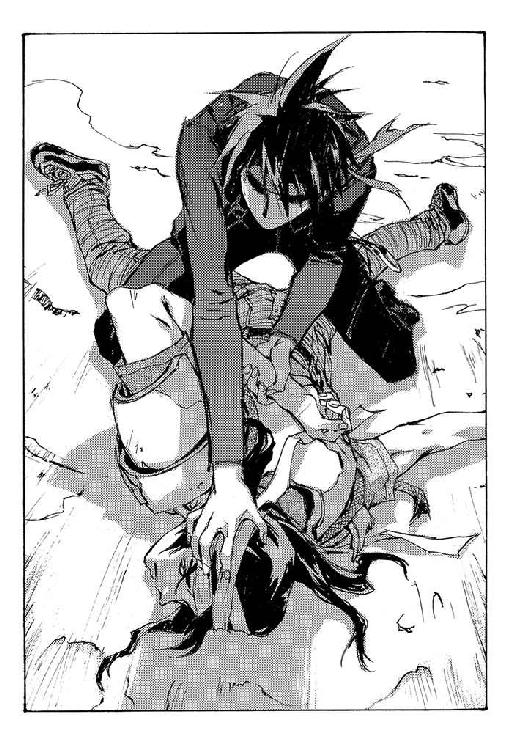
「幽霊だぜ？ 既に死んでるものをどうやって殺す？」
「ユイスは──」
彼女は、声のトーンを大きく落とした。薄い笑みが、頬の上を滑り落ちていく。
「ユイスは、あたしらの仲間内では、ダミアンと最も多く関わってる。実はその方法を探してるんじゃないかと......そうも思えたよ」
それは、意外な話ではあった。見せかけではない驚きを感じながら、聞き返す。
「あんたたちは、一枚岩なんだと思ってたけどな」
「そんな組織はありゃしないさ」
彼女はそう言うと、立ち上がった。視線が下方から、わずかに上へと移る。服の土埃を払うこともせずに、ウィノナはあとを続けてきた。
「別に、隠しゃしないよ。ダミアンは、どうもおかしい。仲間はみんなそう言ってる。あたしもそう思ってる。きっと......領主様も、そう思ってるはずさね」
「ならどうして放置してるんだ？」
聞く。答えは予想していたが、その通りのことをウィノナはあっさり認めた。
「戦力として有効この上ないからさ。いや、気分悪いけど、不可欠だと認めざるを得ないね。聖域と戦うのなら」
「この会話、多分ダミアンに聞かれてるぜ？」
「だとしても、あの男は気にしやしないさ。どうせあたしらには、ダミアンを殺る手段はないんだから」
いかさまのゲーム──
これはいかさまのゲームだ。
オーフェンは、ウィノナを見ながら胸中でつぶやいた。
彼女が素直に質問に答えることなど、最初から期待していなかった。だが、嘘だと分かって聞くのであれば、嘘も情報になる。
思った以上の情報が得られた。少なくとも、ウィノナはこちらから取引を持ち出すことができる相手だと分かった。手駒であることをやめた時、それは役に立つかもしれない。
いかさまのゲーム。ゲームであることが終わった時──
『この呪文が完成した時、なにが起こるんだろうな？』
ふと記憶に蘇った、コルゴンの言葉を聞きながら。
オーフェンは、口を開いた。他人事のように自動的に、言葉がこぼれる。
「とりあえず、《十三使徒》の暗殺者を捕らえることには協力する。だがいつまで協力するかは保証しない」
「虫の良い話さね？」
「たまには、こっちに有利な条件があったっていいはずだろ」
それだけ告げて、彼は見渡す限りの荒野を見回した。いかさまのゲーム盤。対戦相手は、キングの位置さえ明らかにしていない。
第四章 四人目の死の計略
「思ったより無防備だな」
「......そうですね」
そんな短いやりとりをして、暗殺者たちは数秒の時間を無駄にした。ひとりが死体にかがみ込み、しばらく検分してから立ち上がる。頭を剃り上げたその暗殺者は、その遺体に最後の一瞥を投げた。
取り立ててなにがあったというわけでもない。死んで、動かない男というだけのことだ。標的である、最接近領の領主──その守護者。
もうひとり、近くの岩に腰掛けてぼんやりと風に吹かれていた若い暗殺者が、軽い調子で声をあげた。
「こんな簡単なことなら、もっと早くに行動を起こしても良かったかも？ プルートー師も、クラベ師も、変なところで慎重だから」
その声に、剃髪の男が答える。抑揚を抑えた、冷たい声音。
「これまでに、彼らの放った斥候がほとんど生きて帰ってこなかったことを考えると、そうも言えないな」
「そりゃ、雇い入れたごろつきや、流れの殺し屋じゃあ、そんなところでしょう」
「中には、わたしより優れた技能者もいたさ」
男はそれだけ言うと、若いほうへと向き直った。付け加えるように、言葉を続ける。
「カコルキスト・イストハン。お前よりもな」
子供じみた仕草で岩から飛び降りて、言われたほうは笑ってみせた。カコルキストと呼ばれた若い暗殺者は、手ぶらの両腕をすくめるように広げて、
「そうは思いませんね。プルートー師は俗物です──大事なものは最後まで取っておく。手遅れになるくらい最後まで。今まで使い捨てられた者が、ぼくらより先に使い捨てられたのは、その程度の価値だったからでしょう？ 今回も、彼はマリア・フウォンをメンバーから外しました」
「笑えんな」
「ぼくは生きて帰るつもりですよ？ 領主だかなんだかを始末して、無事に脱出して、王都にもどる。暴君に、文句のひとつも言ってやらないと気がすみません」
冗談のように、だが冗談ともつかない口調で、カコルキストがつぶやく。
シーク・マリスクは、その生徒をじっと見つめて──そして、言いかけた言葉を呑み込んだ。
「......つまらんことは考えるな。お前は集中力に欠ける」
死に向かって集中する、暗殺者の眼差しで、男が告げた。
「そろそろ日が暮れる。朝までに領主を見つけ、殺害する。それより時間をかければ、我々の体力が保たん」
「そのあと脱出することを考えると、真夜中までには仕事を済ませたいですね？」
生徒のその提案には、シークは答えなかった。
◆◇◆◇◆
「ホントか嘘か分からない話でもしてやろうか？」
ウィノナが唐突に、そんなことを言ってきたのは、意外ではあった──彼女はそれまで小一時間、ろくに話しかけてくることもなかったのだから。オーフェンは、彼女が発した言葉をいくつか思い出してみた。こっちだ。そっちじゃない。進みな。黙れ。
それに比べれば、愛想のある言葉ではあった。怪訝に思いながら、向き直る。
「あん？」
聞き返す。と、彼女が続けてきた。
「どうして領主様が、こんな荒れ地にお住まいになってるのか」
「興味ないな」
そっけなく、告げる。だがウィノナは構わずにあとを続けた。どうでもいい。話したかったのだろう。
「領主様は、人類の守護神なんだよ」
「そうかい」
担がれただけだった。ややうんざりしながら、ウィノナに視線をやる──
と。オーフェンは足を止めた。彼女は真顔だった。
ウィノナは立ち止まらなかった。歩き続けながら、
「あんたは、領主様のことをもっとよく知るべきだよ。ドラゴン種族と戦える人間は、ひとりでも多く仲間に欲しいさ。あんたが領主様のことを理解して、そして領主様と話をすれば、きっとその気になる」
自分を追い抜いていく彼女をしばらく見送って、オーフェンも歩みを再開した。さきほどから周囲の風景は変わらないが、ウィノナにとっては慣れた庭なのか。迷いもせずに進んでいる。
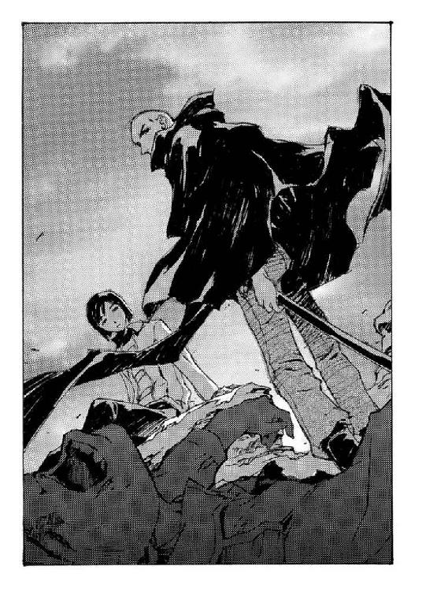
「その守護神が、聖域と戦う理由はなんだ？ ドラゴン種族と人間種族が対立したことは一度もないはずだぞ」
もう、興味がないとは言えなかった──領主の情報であれば、なんであれ欲しい。オーフェンが聞くと、ウィノナはそれがお気に入りの話題だとばかりに即答してきた。
「魔術士狩りは？」
「魔術士とドラゴン種族は対立したが、そのほかの人間種族はドラゴン種族の側についたか、あるいは傍観した」
「その時代から、ドラゴン種族は聖域に隠遁して、外界とは没交渉になった。これは控えめに言っても、緩やかな絶交状態じゃないかい？ 領主様は聖域が、外界を裏切りつつあるとお考えなのさ」
自信たっぷりに言ってくるウィノナに、オーフェンは顔をしかめた。
「やぶ蛇かもしれないだろう？」
「そうかい？ なら、ドッペル・イクスの存在をどう考えるのさ。聖域は外界に手下を送り込んで、あちこち暗躍させている。言っとくけれど、ヘルパートなんてのは、その一部に過ぎないよ」
ピッチを上げて、彼女に追いつく。並んでも、彼女は速度を落としたりはしなかったが、無理に速めもしなかった。
あのレッド・ドラゴンのことを思い出すと、今でも背中に痛みを感じるような気がする──自分があのドラゴン種族を倒したというが、最後の数瞬は実感がなかった。なんにしろ、いつまでも覚えていたいような記憶ではない。オーフェンは、静かに告げた。
「どっちが先かなんて水掛け論になるんじゃないだろうな」
「ドッペル・イクスは百年以上昔から、外界で好き勝手やってきたんだよ。理由はいまだに分からないけど、そうだね......主目的は略奪」
「略奪？」
突拍子もない単語に驚いて、うめく。
ウィノナは──こちらから一本取ったということでか、気分良さそうに続けた。
「ナッシュウォータで、あんたも見ただろ？ たかだか剣一本のために、何人も殺した」
「まあ......確かに意味の分からない事件だったな。ロッテーシャの剣には、なにかあるのかとも思ったんだが」
あの件に関しては、考えても分かるはずがないと、考えることをやめていた。ウィノナが、大柄な肩をすくめてみせる。
「なにもないさ。少なくとも、ユイスが調べた限りではなんでもなかった──ちょっとばかり便利なだけの、ただの剣だよ。だから奪われても良かったんだ。特にあのヘルパートが動いてるってんで、本来なら関わりたくはなかったしね。無駄に戦力を奪われるわけにはいかないから」
「......じゃあなんでコルゴンが半年もかけて剣を守ってたんだ？」
「あいつの希望さね。あいつ、あの剣を欲しがってた。それに、あたしたちとしても、悪い話じゃなかった──どうせレッド・ドラゴンに対抗できるのはユイスしかいなかったし、あいつひとりでヘルパートを倒してくれるんなら悪くない。それに、まあ、あいつには別の任務もあったのさ」
「任務？」
それが気になったのは、まるで彼女が、コルゴンを領主の配下であるかのように言っていると聞こえたからだった──が、ウィノナは別の意味に取ったらしい。にやりと笑ってみせると、
「細かい任務についてまでは明かせるわけがないさね。聞きたきゃ、忠誠を誓って、領主様ご本人から聞きな」
結局は、そこに行き着くらしい。聞こえよがしに嘆息して、オーフェンは告げた。
「なるほど。ホントか嘘か分からない話だ」
「あんたも嫌みな奴だね」
冷めたように、きょとんと、ウィノナ。
「性分だよ」
本当のことを話さない人間ほど、相手に嘘を許さないものだ──そんなことを考えていると、彼女は牽制するように言ってきた。
「誰も、知らない間に領主様に恩義を受けてるのさ。領主様だけが聖域と戦ってる。魔術士同盟も貴族連盟も、ドラゴン種族からは逃げるだけだろ」
「俺も、本当か嘘か分からない話を聞かせてやる」
半眼で彼女を見やり、オーフェンはうめいた。
「......俺の先生もな、ドッペル・イクスと呼ばれていたらしい。大昔にな」
「うん？」
意味が分からなかったのだろう──無理もないが。
そのあたりの説明などしても仕方ないし、意味があったとしても、するつもりもなかった。プライベートなことに過ぎない。彼女の理解を置き去りにして、オーフェンは視線を外した。
「だから俺は、その言葉の意味のほうが気にかかる。裏切りの符丁。聖域のエージェントが、聖域のために働いているっていうのなら、どう考えてもこの呼び名はおかしいんじゃないか？」
「たいした問題だとは思えないね」
あっさりと言ってくるウィノナに、鼻で笑う音を聞かせる。思いつくまま、オーフェンは言った。
「狂信者は、疑問を疑問と思わない。信じるに足るものがあるってんなら、それは幸せなことだがな」
「......あたしが？」
彼女の声が、一気に険悪に変じる。当たり前のことではあっただろうが。
なにも変わらない地面を踏みしめて、そこにつま先をとどめる理由などはない。それでも自然と足を止めて、オーフェンはウィノナと対峙していた。次第に盛り上がっていく彼女の肩の筋肉を眺めながら、口を開く。
「聖域と小競り合いをして有頂天になってるのが領主って奴なら、俺はそいつが信用できない」
「領主様のお考えは──」
と、叫びかけた彼女を制して、オーフェンは続けた。
「アーバンラマは壊滅しかかったぞ」
「でも、あたしたちはドラゴン種族を制した！ あれは大きな勝利だったさ」
「俺がヘルパートを潰して、クリーオウがライアンを止めた。お前らがなにをしたってんだ？」
口早に囁く。ウィノナの沈黙が長引いて、ふと、風に紛れてこちらの声がとどかなかったと危ぶんだ頃、ようやく彼女は言ってきた。
「......領主様にはお考えがあるのさ。あんただって、領主様に会えば分かる」
「分からねぇだろうな。俺が領主を認めない、一番の理由を教えてやろうか──」
自分より身体の大きい相手の胸ぐらを掴み上げるのは、我ながら滑稽ですらあった──が、感情の沸騰がそれを無視した。ふつふつと、抑えのきかないものが喉の奥に詰まるのを感じながら、声を強める。
「お前らは、クリーオウにライアンを殺させたんだ！」
「そんなことで──」
しゃべる途中で、ウィノナが転倒した。いや、彼女がこちらの手から逃れようとする瞬間に突き倒した。
彼女が起きあがるのに先んじて、彼女の膝を踏みつける。立てないウィノナを見下ろして、オーフェンは告げた。
「領主には会ってやる。こっちにもたっぷりと言いたいことがあるからな。だが、こいつは忠告だ。俺を洗脳しようとするな。ムカつくだけだ」
「......分かったよ」
苦渋に満ちた声で、ウィノナがつぶやくのを聞いて、オーフェンは足をどけた。
彼女が立ち上がるまで、気持ちを落ち着かせる時間はそれなりにあった。相手にあわせて視線の角度を変えながら、待つ。
顔を上げる一瞬間、ウィノナが動作を止めたように見えた。と、こちらを向いて言ってくる。
「ダミアンから連絡がきた。近くに、あの娘がいるよ。早急に確保しろ、だってさ」
「娘？」
「ロッテーシャだよ」
◆◇◆◇◆
納得できる理由さえあれば、永遠に目が覚めなくとも構わない。というわけではなかったが......
なぜ自分が倒れているのか思い出せずに、ロッテーシャは目を開いた。顔についた砂を落として──うつ伏せだったのだ──、あたりを見回す。頭の中に巣くった実体のない疼きを追い出すため深呼吸して、思い出そうとする。なにを思い出したいのかも記憶にはなかったが。
たとえそれが悪夢だったとしても、夢のことを気にするのはくだらない。彼女は自分に毒づいた。悪い夢など見飽きている。
起きあがって、つまずいた。見下ろすと、剣がある。父の形見の魔剣。フリークダイアモンド。
剣を身体の下に敷いて倒れていたせいだろう。腰から胸まで、直線に痛む跡があった。痣にでもなっているのかと服の下をのぞくが、痕跡はない。痛みだけが残っている。
（......違う......？）
ふと、思いつくものがあった。その痛みの跡は、なにか別のものを意味していたようにも感じられる。根拠があったわけではないが。覚えがあった。痛みだけ。目に見える跡はない......
「......嫌な偶然」
ようやく思い出して、うめく。次第に退いていくその痛感は、かつてエドに斬られた傷痕をなぞっていた。
記憶に蘇ると、苦痛もまたぶり返したようだった。唇を噛んで、剣を拾い上げる。
別のことを考えるべきだ。理性の声に従って、彼女は独りごちた。
「どうして、わたしひとりなのかしら」
誰も答えてはこない。誰もいないのだから。
少なくとも見える範囲には、人影も気配もなかった。魔術士たちの姿はどこにもない。彼女らと別れの挨拶をした覚えもなく、ただ唐突に、そこに倒れていた。
なにかに殴り倒されたのかしら？ 腑に落ちない思いを抱えて、顔をしかめる。昏倒させられて、そのショックで襲われた記憶を失った人の話というのを、聞いたことがあった。自分が暴力の悪意にさらされたという現実を認めたくないがために、その記憶を封鎖してしまうのだと。それを語ったのは父だったろうか......
苦々しく、笑みを浮かべる。暴力の悪意に堪えきれず？──自分がそんなにうぶだろうか。元夫に殺されて、死にきれなかった女だ。
（強くなるのに必要なのは）
ロッテーシャは、静かにつぶやいた。強くなるのに必要なのは、こんな時にいちいち慌てないことだろう。理解に努め、推測し、解決する。
ひとりになったのは、好都合だと考えるべきだ。くわしいことまでは分からないが、あの魔術士たちは、全員エドと旧知の仲らしい。自分がエドを殺そうとした時に、敵に回る可能性は高い。
魔剣を握りしめて、覚悟を固める。
エドもまた、魔術士だった。それを理解しなければならない。彼にはいくつもの名前があり、それぞれ違う役割を演じてきた。ユイス......コルゴン......エド。優秀な魔術士だったらしい。もとより、剣でも敵わない。道場時代でも、彼と互角に渡り合えたのは──すぐに病に伏せたため、短い期間ではあったが──父だけだった。ほかの練習生の手前、エドはたびたび彼女にも三本に一本は取らせてくれることはあったが。これは、それほど珍しいことでもない。彼女自身も、練習生に自信をつけさせるため、勝敗に含まれない一本を譲るくらいのことはよくしていた。なんにしろ、彼に勝てたことはない。
普通にかかっても勝てない。だが、この魔剣の使い方が分かったとしたら......？
（なんとかなるかもしれない）
ビードゥー・クリューブスターの魔剣。父はこの剣で、数十人からなる武装盗賊を一網打尽にしたこともある。少なくとも、噂ではそう聞いた。魔術を越える武器になり得るのかもしれない。エドに勝てる望みがあるとしたら、これしかない。
（でも......どうすればいいのかしら）
見当もつかない。アーバンラマでは一度だけ、この剣を鞘から抜くことには成功した。いや、鞘から抜いたと言うべきなのかどうかは分からないが。だが結局、どうして使えば良いのか理解できたわけではない。
剣を構える。意識を集中して、念じる──念じるべき呪文が思いつくわけでもないが。剣に変化を求めるが、なにも起こらないまま数秒が過ぎた。
嘆息して、剣先を下ろす。エドと対峙してからこれだけ時間をかけていたら、とうに殺されている。
と。
剣を使おうとして視線を上げたせいで、見えたものがあった。広がる荒野に比べれば、文字通り砂粒のようなちっぽけな黒い点にしか過ぎなかったが──見覚えのある生物が、離れた地面にぽつんと腰を下ろしている。
後ろ暗いところを見つかったような心地で、心臓が跳ねるのを彼女は感じた。その生物にではなく、それが連想させる別の人物の名前を叫んで、駆け寄る。
（クリーオウ？）
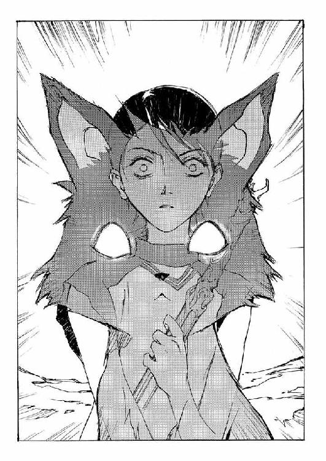
それほどの距離ではなかった。突風も、その小さな生き物のことまでは構っていられないとでもいうように、まったく風に揺れることもなく、それはいた。漆黒の毛並みの、子犬のようにも見える。緑色に輝く瞳を、ただ一方向に向けたまま、微動だにしていなかった。
それは奇妙な仕草だった。そっくりの人形か剥製のように、ぴくりとも動かない。触れられるほど近寄っても、こちらに顔を向けもしない。ロッテーシャは剣を抱えたまま、怪訝な思いで手を差し伸べた。
「......どうしたの？」
動物に話しかけるのは馬鹿馬鹿しいような気もしたのだが、確かクリーオウはたびたびこの犬と会話していた。
だが、その生物──確か、レキとかいう名前だったか──は動きを見せなかった。聞こえなかったのかと、咳払いしながら彼女は、レキの真正面に出ようと移動した。
向き直る。緑色の瞳が一対、こちらを見据えていた。
「ねえ、クリーオウはどこに──」
爆発音が聞こえて、なにも見えなくなった。
◆◇◆◇◆
「......おんや？」
気の抜けたような、ウィノナの声──
それに倣ったわけではないが、オーフェンも目をぱちくりさせた。巨大な爆発跡が、地面に描かれている。その縁に立っていたのは、抜き身の剣をぶら下げたロッテーシャだった。
それは単に、予告されていたことに過ぎなかった。ロッテーシャがいる。だからここに来た。彼女は目を見開いたまま棒立ちになって、こちらに気づきもしない。立ったまま気絶しているのかもしれない。だが、ウィノナが声をあげたのは、そんなことが理由ではなかったろう。
なにもない空間──すぐ目の前の空間に手を差し伸べて、ウィノナが不思議そうにつぶやくのが聞こえてきた。
「通り抜けられないよ？」
戯言だとも聞こえた。彼女が手をかざしているところには、なにもない。
いや、少なくとも彼女自身には、そう思えただろう。が、オーフェンには見えたものがあった。
（魔術の構成......か？）
理解はできない。自分にすら読みとれない構成を編める魔術士は、大陸にはほとんどいないとも言えるし、いくらでもいるとも言える。
つまりは、人間種族にはほぼ存在しない。しかし人間種族を問題外にした魔術が多数、大陸にはある。それがドラゴン種族の魔術だった。
耳障りな、低い羽虫の音のようなものが鼓膜を揺さぶっていた。その音に重なるように、空間に魔術構成が描画されている。これは魔術士にしか見ることはできない。極端に複雑で、緻密で、広大な。ドラゴン種族の造った魔術に間違いなかった。その魔術によってもたらされた効果が、その空間への侵入を拒んでいる。空間の中心に、ロッテーシャがいた。
ロッテーシャが右手に持っている剣──白刃をさらした直刀。彼女の父親の愛刀だったという、魔剣だった。ウィールド・ドラゴン種族が造り出したという魔術の遺物。起動する方法の分からなかったその剣が、発動している。
そのあたりのからくりは、ウィノナにも見当がついたのだろう。こちらに視線をくれながら、特になにを聞いてくるでもない。オーフェンも手を差し伸べて、彼女が押しもどされた空間に指先を触れた。弾力のある空気の壁の感触と、皮膚に弾ける、静電気じみた軽い衝撃。手で押せば押すだけ押し返される。
無言のままオーフェンは、鞘から短剣を引き出した。切っ先で、見えない壁をつつく。結果は指と同じだった。
ナイフをしまい込み、つぶやく。
「......レッド・ドラゴンが、一度使ってたな。あの剣」
「破れるかい？ あの嬢ちゃんは放心状態のようだけど」
聞き返してくるウィノナに、オーフェンはかぶりを振った。
「天人種族が、使用者を守る意図で造り出した魔術だとしたら、中にいる人間を殺すつもりでもないと破れないだろうな」
こんな時に、防護を無視するような切り札がないわけでもない。が、それは文字通り内部にいる標的の無事を保証できる類のものではなかった。
刹那。
それまであたりに充満していた羽虫の音が途切れた。砂を流すようなノイズの入った音の流れが、ロッテーシャのほうへと収束していき──そして、構成が失せた。支えを失ったのか、結界の中心にいた少女が倒れる。
「ロッテーシャ？」
オーフェンは駆け寄ったが、大事はなかったらしい。近づく前に、ロッテーシャは表情を惚けさせながら、砂地の上で身を起こした。もとより気を失っていたわけではなかったのだろう。なにかを振り払うように首を回して、こちらを向く。
「オーフェン......さん。わたし」
ゆっくりとうめく彼女に、オーフェンは聞き返した。
「なにがあったんだ？」
「あの......レキが......」
彼女はそこまで言って、思考が続かなくなったのか口をつぐんだ。ふと、ウィノナに気づいて、ロッテーシャが声をあげる。
「あ......！」
少女の顔に浮かんだのは、恐怖だった──ように見えた。瞬間、なにを感じたのか座ったまま後ずさりし、剣を強く抱きかかえる。剣は、いつの間にか、鞘に納刀されていた。だが、そこでようやく、恐怖を覚える意味がないことに気づいたのだろう。目をぱちくりさせると、またかぶりを振ってみせた。
「あの......ごめんなさい。わたし、混乱してるみたいです......」
「レキがどうしたって？」
聞きながら、彼女の近くにかがみ込む。見る限り、確かに彼女は錯乱しているようだった。すぐ近くにある、爆発跡を考えれば、突発的ななにかがあったのは間違いないところだろうが。
ロッテーシャはいくつか呼吸を繰り返すと、次第に落ち着きを取りもどしていった。黙ったまま突っ立っているウィノナのほうをちらりと見やってから、
「いたんです。ここに......レキちゃん」
「ここに？」
訝しく思いながら、オーフェンはウィノナへと視線を投げた。非公式騎士が腕組みして、きょとんと眉を上げる。
「変だわね。いっしょに領主様のところへ連れて行ったはずなんだけど」
「レキがいたってことは、クリーオウもいっしょにいたのか？」
再びロッテーシャに向き直り、聞く。彼女は剣を抱いたまま、首を左右に振ってみせた。
「いえ。いませんでした。多分ですけど......あの子に近づいたら、いきなり目の前が真っ白になって」
と、震える声でうめきながら、すぐ近くの爆発跡を示す。
そして──
「分かったんです！」
唐突にロッテーシャが、声を張り上げた。驚いて、反射的に半歩下がろうとしたところを、追いすがるように彼女が腕を掴まえてくる。唾が飛ぶことにも構わずに、彼女はまくし立てた。
「分かったんです──この剣の使い方が！ わたしのことを守ってくれたんです！」
「うわっ──たっ──いいから、落ち着け。落ち着け！」
彼女を押しのけて、オーフェンは彼女の剣を示した。
「剣が守ってくれたってのは、それほど珍しいこっちゃねえんだ。天人種族の魔術は、たいてい使用者を自動的に守るから」
「そんなんじゃないんです。本当に！ 剣が勝手に抜けて、その時、声が聞こえて──」
押しのけた分を近寄ってきて──その強さは、先ほどの見えない壁と同じく、ロッテーシャがさらに声の調子を上げる。
それでもあきらめず後退しながら、オーフェンは一言だけつぶやき返した。
「......声？」
「そうです！ 父さんの声と──あと」
そこで、彼女の突進が止まった。すっと身体を退き、こちらが下がった分とあわせて、唐突に彼女と距離が広がる。
その距離を隔てて、小さくなったロッテーシャの声は、ひどく聞き取りづらくなっていた。
「あと......エドが」
「うん？」
これを聞き返したのは、ウィノナだった。だがロッテーシャは彼女の存在を無視して、独り言でもつぶやくように、のろのろとあとを続けた。
「剣を手放すなって」
さらに、顔を上げて、
「......それと、あと、誰かに頼れって。守ってもらえって」
「誰だよ。誰かって」
オーフェンが聞くと、彼女は自信の欠けた表情で答えてきた。
「聞いたことがあるようなないような名前で......長ったらしい、なんか嫌みな感じの。伯爵モドキって風味で、でもどことなく貧乏そうな」
「どんな？」
「確か、キリランシェロとかいう」
「そいつには頼るな」
半眼でオーフェンが告げると、その頭を飛び越えるような形で、背後からウィノナが声をあげた。
「幻聴でしょ。ヤバいって時に、意味不明の声が聞こえるなんてのは、よく聞く話だわね？」
「............」
意気が乗っていたところに水を差され、ロッテーシャが黙り込む。
それを見ながら、オーフェンは胸中で独りごちた。
（幻聴？ ただの？）
ロッテーシャは、キリランシェロと言った。はっきりと、間違いなく。
（だったら、なんで彼女がその名前を知ってるんだ？）
自分が名乗った記憶はなかった。が、レティシャかイールギットあたりが、彼女の前で自分のことをそう呼んだこともあったかもしれない。クリーオウが面白がって話したのかもしれない。ロッテーシャははっきりとその名前と彼とを結びつけてはいなかったようだが、どこか記憶の底に残っていたというのもあり得ない話ではないだろう。
「聞こえたんです......」
口の中で、未練がましくうめいているロッテーシャに手を貸して立ち上がらせてやりながら、オーフェンはその魔剣に注視していた。彼女の勢いに押されて論点を見失いかけたが、分からないことはそれだけではない。
（レキがいた？ ここに？ クリーオウとは別に？）
理由は考えないでおくとしても。
それは、クリーオウの無事を保証する要素がひとつ失われたことを意味していた。
ぞっと──皮膚と肉とが触れるあたりから、寒気がにじみだすのを感じながら、そのことを考える。これもなにかの、いかさまなのか？ それとも、ただのアクシデントなのか？ とまれ、ミスできる許容範囲が狭まったことには違いない。
爆発跡を見やって、オーフェンはつぶやいた。背後のウィノナの顔は見ずに。
「レキが、ロッテーシャを攻撃したってわけじゃないだろう。多分これは、空間転移の余波だ。レキがどっちを向いていたか覚えているか？」
ロッテーシャに、聞く。彼女はしばらくわたわたと手を振り回して記憶を探ってから、一方向を指した。
「最後に、わたしのほうを見ていたはずですから......あっちだと思います」
そちらを見やる。荒野に地平の果てがうかがえた。その地表と空の狭間に、黒い陰が混じっている。ディープ・ドラゴン種族の使う魔術の媒体が視線だといえ、地平線まで一気に転移できたはずはないだろうが、少なくとも分かる範囲にレキの姿はなかった。遥か行く手の陰。日が落ちかかり、空の暗さがその陰影に溶け込みつつある。
「あれは......？」
と、オーフェンが言い切るまでもなく、ウィノナが言ってきた。
「お察しの通り、《フェンリルの森》さ。ここは最接近領の西端だよ。ドラゴン種族の聖域へと接する地点......ま、そうは言っても歩いていけば森まで三日かかるだろうけどね」
◆◇◆◇◆
「見つけたぞ！ 暗殺者だ！」
その声を聞いて、彼女が感じたのは歓喜だった──が、それが筋違いだと気づく程度の理性も残っていた。その叫びが示す暗殺者とは、自分のことかもしれないのだ。少なくとも、彼らは自分とシークらを見分けてなどいないだろう。
だが、それでも、同じ叫びが繰り返されるのを聞き、そしてそれが自分に近づくのではなく遠のいていると分かって、イールギット・スィートハートは自分の歓喜が正しかったと安堵した。追っ手がかかっているのはシークとカコルキストで、このすぐ近くにいるということなる。
まぶたを開いても闇が晴れないことに、ぎょっとした。その闇が、夜が近づきつつあるための暗がりであると理解するまでに数瞬か、数秒か。どうしてこんなところで自分が寝ていたのか。茂みの中にいたせいで、身体のあちこちにひっかき傷ができている。茂みの中......？
記憶がない。それは珍しいことでもない。ただ、今までこうして記憶を失った時には、そうなる以前のことを推測するだけの材料がたいてい転がっていた。酒瓶や、嘔吐物で汚れたスーツ──コンパ用にしつらえたもの──、数人が折り重なっていびきをかいている友人の部屋、無人の酒場で無愛想に明細書を突きつけてくる店主等。
だが、今はなにもなかった。脳が頭蓋の容積以上に肥大して圧迫される不快感や、釘を何本も刺されたような苦痛もない。なにもない。昼からの記憶を失った自分だけが、そこにいる。
足音が響いていた。倒れたまま、耳を地面に押しつけている。なにやらわめきながら、複数の人間が走り回っている。口々に、暗殺者の発見を叫んで。
（起きないと──！）
それは、衝動だった。衝動は意志の力だった。考えている場合ではない。なにもしないで倒れているわけにはいかない。
起き上がろうとして、頭のすぐ上にある枝に引っかかる。拘束するように身体の上で網を張る茂みに、彼女は舌打ちした。奇妙なことではあった──直前になにが起こったのか、事情はどうあれ、ここに倒れ込んだのなら、枝が下敷きになっているのが正しいはずだ。だというのに、自分の身体の下には地面しかない。これでは、自分がまるで地下から生えたか、突然ここに現れたみたいではないか？ あるいは、誰かが彼女のことをここに隠したような。
彼女を押しつぶそうとしている茂みは思いのほか鬱蒼と濃く、重く感じられた。それを無理やり、上腕を振り回して押しのける。音が立つのも、この際構ってはいられない。思いつくままに罵りながら、イールギットは身体を返した。ようやく呼吸する心地になって、ため息をつく。
手のとどかない高みから、黒い影が自分を見下ろしてきていた。
悲鳴をあげる寸前で、喉を閉じた。その影は人間ではないと自分に言い聞かせ、自制を保つ。
彼女が見上げていたのは、屋根だった。大きな屋敷。その花壇の植え込みに、自分は倒れている。
分かってみれば、たいしたことではなかった。花壇から這い出し、立ち上がる。服をはたいて埃を落とす。花壇の湿った土の中に埋もれていたため、大部分の汚れは落とせそうにない。下着にまで染み通る、不快な湿気に辟易しながら、彼女は訝った。荒れ地にいたはずだ。自分はあの乾き切った荒野にいた。
見回すと、その屋敷を取り囲むようにして、そこはちょっとした庭園になっていた。よほどの手間と根気と財産をつぎ込んでも、なかなかこれほどの庭は造れまい──ましてや、荒れ果てた土地の上には。天人種族は、地形や気候をも塗り替えるような大規模な魔術を使ったというが。
騒ぎは、遠ざかっていた。緑の多い庭園に、日暮れの近づいた暗がり。隠密に行動するには、都合の良い条件ではある。追っ手より先にシークたちを見つけ、説得し、その場で投降させるのだ。それしかない。まだ彼らが相手に被害を与えていなければ、まさかその場で私刑ということもないだろう。もしそうなるのなら、今度は相手も説得しなければならないが。
（暗殺なんて......馬鹿げてる）
動悸が、速まるのを自覚した。
（暴力なんて馬鹿げてる。太古の混沌期じゃあるまいし。わたしたちは無法者なんかじゃないんだから）
追っ手が遠ざかっていった方向に見当をつけて、向き直る。小走りに、足音を立てないよう苦心しながら、彼女は歩き出した。実際には、靴底と地面とが、こすれて咳き込むような音を立てているのは分かっていたが。
（キリランシェロ君のようには、いかないか）
彼は普通に歩いているように見せながら、望む時には、気軽に無音で歩く。
そのコツを、何度も尋ねたことがあった──昔のことだ。彼はダンスのステップでも披露するように簡単に、ローブの裾を上げて足下を見せてくれた。
歩くのに余計な力を入れなければいいんだよ。強すぎれば音が出るし、弱すぎれば転んじゃうよね。ちょうと良い感じで歩けばいいんだ。疲れずに済むよ。忍び足で肩がこるなんて人はね、実は余計に音を立てているんだ......
自分は忍び足で肩がこる手合いに違いない。苦笑して、彼女は進んだ。
そして、何歩目かに足音が消えた。
奇妙な感触に、足を止める──なにか柔らかいものを踏んだため、音が消えたのだ。見下ろす。黒い塊に、つま先がめり込んでいた。
庭園の通路を塞ぐように、大の字になって寝ころんでいる男の、髪の毛。それを踏んでいた。彼女の靴の先が、毛髪を引きちぎるほど踏み込んでいるにもかかわらず、男は痛みを感じていない様子だった。身体は仰向けで、頭だけはうつ伏せだった。
彼女は、その場に転んだ。そのままどう悶えようと、靴が、その男の髪の毛から抜けない。なにかの呪いであるかのように──実際には、単に足がすくんでいるせいだと分かってはいたが。
（そんな──こんな、こんな！）
叫ぶ。
男が死亡していることは、確かめるまでもなかった。折れ曲がっているのは頚椎だけではない。よく見れば、身体全体がどこか歪になっていた。腹が不自然に膨れあがっているのは、内臓の位置が変化しているからか。猛烈な力にさらされて、完全に絶命している。
もう、殺しが始まっている。
（駄目なの......？ 遅かった）
絶望的に、彼女はうめき声をあげた。そして、聞こえてきた悲鳴に身を縮ませた。
目の前が暗くなる。
「シィィィィク！」
自分自身の声がほとばしるのを聞く。声帯を震わせて、彼女は起き上がった。騒ぎが起こってるほうへと、もう足音など気にせずに走り出す。
「カコルキスト！ 馬鹿！ あなたたち！ 裏切り者──」
支離滅裂に、叫ぶ。
駄目だった。それを思い知って、あとは叫ぶしかない。
彼らは暗殺者だ。ゴミのように人を殺し続ける。
いくつもの死体をまたぎ越えて、彼女は走り続けた。ここの屋敷の使用人か、用心棒か。武装したそれらの男たち、女たちは、いずれも身体を破壊されて倒れていた。殺害ではなく、破壊。無駄なまでに強力なパワーで、肉体を潰され、ねじ切られている。
人間業ではない。人間を越えた者にしか、こんなことはできない。
超人たる、魔術士の特権。
（でもそんなのは、魔術の在るべき使い方じゃない！）
鼻をすする──我知らず、泣きわめいていた。
「ぶっ殺してやる！ あなたたち、もう、言い訳することなんて──」
地面が揺れた。
自分のめまいのせいではなく、激しい音を立てて純粋に地面が揺れた。同時に、走っていたすぐ近くの木立の間から、人間の身体がひとつ飛び出してくる。
骨格の砕けた人体は、ぼろ雑巾のようだった。手足をぶらつかせながら、こちらへと飛んでくるその死体を、イールギットは横殴りに振り払った。木立を、にらみつける。
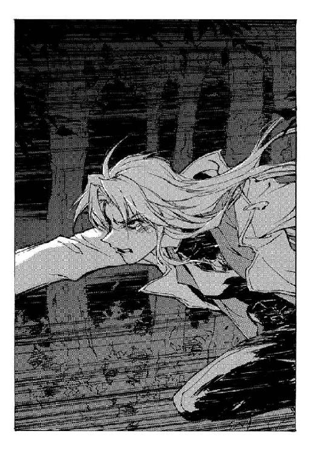
「そこにいるのね......！」
怒りに染まった怨嗟を、そのまま口から漏らす。
「出てきなさい。シーク？ それともカコルキスト？」
答えはない。夕闇に陰った黒の森が、しんと構えるだけ。
イールギットは両手を突き出し、身構えた。最大級の魔術の構成を編み上げながら、続ける。
「宮廷魔術士の誇りどころか、人間の常識もなくしてしまったようね──それとも、もともとなかったの？ わたしが決着をつけてあげる。後悔する気持ちがあるのなら、せめて素直に死になさい」
返答がないまま、時間が過ぎた。その間に、構成が完成する。強力な破壊の設計図を造り上げ、感じるのは恍惚だった。力の恍惚。魔術士ならば誰でも感じる。強大な力を得て、それを制御することに責を負うのが魔術士だった。その宿命からは逃れられない。
「あなたたちは道を間違ったのね。誰かの命令だなんて言わないでよ。魔術士は自分で自分を律することを誓ったんだから」
暴発寸前の構成に包まれて、彼女は声を荒らげた。庭園はいまだに沈黙している。
「わたしにできないとでも思ってるの!? あなたたちみたいに、魔術で人を虐殺するのに嫌悪がないわけじゃないけど、でも──」
（......魔術で？）
ふと、気づいた。
彼らが魔術を使っていたのならば──どうして、呪文が聞こえてこなかったのか。構成の一端でものぞかなかったのか。
魔術でないのならば。
そんなことが、あり得るのか。
慌てて、イールギットは振り向いた。先ほど、自分がはね除けた哀れな遺体が転がっている。胴体の真ん中から均等の位置で手足が砕け、不気味な人形のポーズで事切れている。顎が折れているため、顔面は人だと判別がつかないほどに変形していた。
（魔術じゃないなんて......あり得ない。こんなの、人間の力でできるわけが）
編み上げた緻密な構成が、動揺に負けて消え失せた。すり抜けていく力を、維持できない。そして──
木立から、なにかが飛び出してきた。
死体ではない。もっと鋭く、強く、速い、黒い影。
丸め込むように肩を縮めた姿勢で、それは瞬時に彼女に肉薄した。
とっさに反撃できたのは、日頃の戦闘訓練の賜物だった──相手に近い、左拳を突き出す。それは黒い人影の中心に吸い込まれ、手応えを残した。
（勝った──）
自分の間違いは、すぐ分かった。
敵を打ったと思えた左手は、相手にしっかりと受け止められていただけだった。抱え込まれ、引こうにも抜けない。捕まれている場所から、激しく一瞬、波打つような衝撃が伝わってくる。
視界が回転した。横でも縦でもなく、不規則に。つまりは、投げ飛ばされたらしい。
重力を失い、背中から、木の幹に叩きつけられる。背骨が折れなかったのは幸運だった。打ち付けられ、跳ね飛ばされ、転げ落ちて、地面をなめる。歯の根本が顎にめり込むと思えるほどに歯を食いしばって、彼女は顔を上げた。敵の追撃に備えて、構えを取ろうとし──それができないと悟る。
もとより、敵の姿はもうなくなっていた。気配も、なにも、どこにもない。彼女はひとりでそこにへたり込んでいた。
「あはは」
彼女は、乾いた笑いを唇から漏らした。身体が動かない。
すぐ足下に、肩からちぎれて落ちた自分の左腕が横たわっているのを見下ろして、目の奥から涙がこぼれ落ちた。それが痛みのせいだということを、神経が脳に伝える許容量を超えてしまったためにかえって感じることのできない激痛の中で悟り、イールギットは悲鳴をあげた。
第五章 五人目の死の瞬間
無意味な門ではあった。
門しかない──庭園は柵に囲まれているわけでもなく、荒野の中の箱庭のように、作り物の自然を主張していた。柵も壁もなければ、門を作る意味もない。だが門はそこにあった。門柱に挟まれた鉄扉。錆ひとつない平面の扉を縁取る、蛇の図案。
いや、無意味ではない。レティシャは思い直して、苦笑した。この門は皮肉なのだ。神々に対する皮肉。世界の現状に対する皮肉。この庭園は、蛇の中庭。だがそれを囲むものはなにもない。それを示すためだけの、蛇の門。
（こんな皮肉のためだけに......よっぽど暇を持てあましてるんでしょうね）
連射式ボウガンから安全装置のピンを抜いて、彼女は独りごちた。酔狂者の皮肉に付き合っても仕方ない。
この庭園の奥に、領主がいる。
（わたしはここまで侵入したわよ。ほうっておいていいの？ ダミアン・ルーウ）
胸のうちで問いかける。まだ余裕があるというのなら、向こうがこちらを無視できなくなるまで進むしかない。
静けさは、不快だった。庭園の奥に、館が見える。もうすっかり日は暮れ、闇夜に影を浮かばせるだけの館。窓に灯りもない。見張りの数ダースは想像していたのだが、庭園は無人のごとく静まり返っていた。
あるいは。
ボウガンを構え、まぶたを細めてあたりを見回す。
（......本当に無人なのかもね）
シークと、あと、あのなんとかいう若い魔術士が既に到着して、戦闘を開始している可能性はある。もっともその場合には既に、ふたりともダミアンに倒されているだろう。自業自得ともいえる──本音を言えば、よく知りもしない暗殺者のことなど案じていられるような余裕はどこにもなかった。
慎重に、レティシャは庭園に足を踏み入れた。
ダミアン・ルーウは、現実に実在する力で以て彼女を殺すと予告した──自分では手出ししないということだろう。本当に追いつめられるまでは。つまりは、彼の部下が全滅か、全滅に近い状態になるまでは。
領主の配下の非公式騎士たちがどれくらいいるのかは分からないが、それをすべて倒さなければならない。
（手加減できそうにはないわね）
手元の、ボウガンへと視線を落とす。ダーツほどの大きさの矢を、四本連続して射出する武器だが、それほどの殺傷力があるわけではない。威嚇と牽制には丁度良いが、逆にいえばその程度のものだ。
魔術抜きでは突破できまい──陰鬱に、彼女はそれを認めた。死人も出るかもしれない。自分は人殺しになる。
大義などで殺人はできない。できるとすれば、それは真性のテロリストでしかない。自分は違う......違うと思いたい。レティシャは、うめいた。狂った独善の大義など認めないというのなら、そのほかに、他人の生命を踏みにじってまで、貫かなければならないことなどあるのだろうか。
（ある。わたしはそのために来た）
自分に、言い聞かせる。いや、
（ない......でも、わたしは来るしかなかった）
自答は数秒ごとに逆転を繰り返した。ぐるぐると巡る。
吐き気はとめどなく、気道の奥から押し上げられてくる。殺人。それも、明らかに圧倒的な力を持った魔術士が、そうでない者を殺すのであれば、それは最悪の犯罪だ。抵抗できない者を、力によって押し込めるのであれば。
強さとはなにか。
どう在れば、強いといえるのか。
他者を圧倒して無視できることか。
他人を抑圧して自らが自由であることか。
強さを示すには、それをしなければならない。だが、本当にそうしてそれを最後まで貫いたとして、自分以外のすべてを圧殺して君臨するようなものが、そんなものが強さであるはずはない。
強さとは、強いということはいったいなんなのか。単に人から強いと言われることが強さの証明なら、最強という呼称を持っている者など、いくらでもいるというのに......自分も含めて。
レティシャは左腕だけで、自分の身体を抱いた──呼吸の音が大きくなる。静めなければ駄目だ。自分に言い聞かせる。
ついでに、思考することも禁じることにした。
今は集中する必要がある。こんな考え事をしていてはいけない。
思考を締め出して、単調な警戒に浸る。レティシャは視線とボウガンの狙いを、同じ速度で巡らせた。暗い庭園。音もなく、果てしなく人気のない舞台。
風だけが鳴り響いていた。星空を背後にした巨大な楽器のように。庭園の中に入ると、それも遠ざかる。床を布でこするのにも似た、かん高くかすれた風の声。寒気を誘う不愉快な呼び声を無視して、彼女は警戒に努めた。
気配は感じない。静まり返った庭を、味わうようにゆっくりと......じっくりと進む。
最初の死体を、そこで見つけた。
道に横たわって、手足を四方に広げている。生死は確認するまでもなかった。武装している。領主の部下のひとりだろう。断末魔に、苦痛はなかったに違いない──頭部がなくなっていた。手には剣を握ったまま、死後の世界があるのなら、いまだそこで自分の死を認められずに、今際の際に対峙した敵と戦っているつもりでいるのかもしれない。
（死後の世界なんてない）
自分の冷静な声が、妄想を戒めた。
そんなものはない。この兵士は、人間から物体へと変わっただけで、そこになにかの大いなる違いを認めようとするのは、人間という動物が生きる上で学習した、迷信の強さにほかならない。投げられた石と落ちている石に大差がないように、生前のこの兵士と、今の兵士にもたいした違いはない。自分と、自分が見下ろすこの死体とにも大差はない。
だがそれもまた、気分の悪い妄想だ──
（戦闘が起こったのは、かなり前のことね）
思いを振り払い、多少でも現実を把握しようと、彼女は独りごちた。死体に近づく気にはなれなかったが、夜目にでも、その犠牲者の血が凝固して、吐き気を促すどす黒い色に変色しているのが見て取れる。
（躊躇もなく殺してる。事故でもなんでもない。本物の暗殺者の仕業、ってわけね。気配がないからって安心できない......）
頭を剃髪した宮廷魔術士──いや、宮廷魔術士に飼われている暗殺技能者と呼ぶべきか。あのシーク・マリスクの顔を思い出して、彼女は嘆息した。もし彼らがまだ生きていて、自分と出くわしたなら、無視しても良い相手なのかどうか。現時点では、あの暗殺者たちと自分は敵対していない。むしろ共闘さえできる可能性もある。彼らの目的は、領主の暗殺。自分の目的は、それとは多少異なるものの、重なる部分も多い。
いや。
彼女は否定した。領主を殺されてはならない。その男には、まだ役割がある。退場させなければならないのは別の男だ。
（それに......）
胸中で、付け加える。
浮かんできたのは、イールギットの顔だった。衝撃を受けた、やるせない表情を浮かべている、哀れな彼女。残酷な役割を彼女に与えたマリア・フウォンに、少なからぬ怒りを感じながら、レティシャはうめいた。マリア教師にも選択肢はなかったのだろうが。
（イールギットがシークを止めようと立ちはだかった時、彼女が殺されない保証なんてどこにもない──いえ、きっと殺される。誰も守ってあげられない）
その前に、自分があの暗殺者たちを無力化できれば、イールギットは生きて帰れるかもしれない。
頭上から飛び降りてきた人影が、その勢いで、彼女の右手のボウガンをはたき落とした。同時、両拳をいっしょに突きだしてくる奇妙な構えで、こちらの胸を殴りつける。
為す術もなく後退させられ、背中が木の幹にぶつかったところで止まる。ようやく攻撃を受けたことを自覚して、敵の姿を見定めようとした時には、背後から伸びてきた白刃が自分を捕らえていた。軍刀の刃が、喉元に触れている。
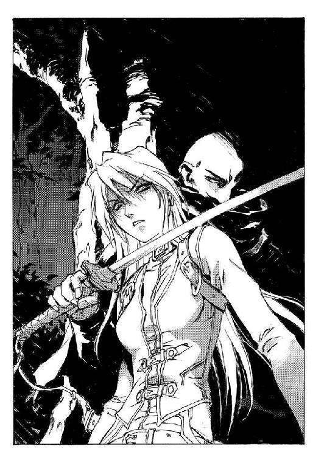
木から飛び降りた猿そのものの格好で、だらんと両手を垂らして中腰になっている、あのなんとかいう若い暗殺者が、真正面からこちらを見ていた。ならば、背後から刃を突きつけてきているのが誰なのかというのも、考えるまでもなかった。冷静な、シークの声が耳元に吹き込まれてくるのを、じっと聞く。
「さて......レティシャ・マクレディ」
暗殺者の顔は見えずとも、首に触れる刃がそれを代理していた。
「いろいろと問いたいことがあるが、その前に言っておくことにしよう。君が我々を殺すのは無理だ」
◆◇◆◇◆
風の音が聴覚を奪っていた。
鼓膜の上にねじ込まれた、騒々しい空気の奔流。
なにも聞こえない。聞こえるのは耳の内側から聞こえてくる声だけだった──自分の声。
こんなことは、理想に反している。
すべて間違っている。
起こるはずのないことが起こっている。
間違いを正すために、やらなければならないことがある。
風の中で。
闇を彷徨う。
彼女は自分の声にだけ、心を傾けた。それは心安らぐ、美しい理想を語っていた。
◆◇◆◇◆
「問いその一だ。君は我々の敵か？」
暗殺者の問いかけは、闇の深さに相応な気配を潜ませていた。前面と背後に分かれて隙なくこちらを見据えているふたりの男。突きつけられた刃。そして問いかけ。すべてがそろえば暗闇にひとつの結末を形作る。
レティシャが迷ったのは、その問いの内容にではなかった──躊躇う必要がなかったわけではないが。慎重に、息を吸う。その呼吸の音が引き金となり、結末が襲いかかってくるかもしれない。
否──
（違う）
彼女は、跳ね上がりそうになっていた心臓に、冷えた血液が注がれるのを感じていた。この死はない。皮肉とともに、確信が浮上してくる。ダミアン・ルーウの死の幻影が見せたのは、この死に方ではない。自分はまだ、ここでは死なない。
「あなたたちがわたしの敵ならね」
口から滑り出た言葉を、自分で反芻する。暗殺者たちはその返答を奇妙とは思わなかったようだった。確かに、ありきたりな返事だとはいえる。
そして、ありきたりなやり取りが続いた。
「......では問いその二だ。我々は君の敵か？」
「あなたたちの役割によるわ」
「想像はついているのだろう」
シーク・マリスクの声が耳元に、そして鋭利な刃が頸動脈の数ミリ上に。きわどい接触に、皮膚が粟立つのを感じながら、レティシャは自分が動くことのできる範囲を胸中で目算した──刃の猶予。つまり数ミリのみ。それ以上を動けば、シークはこちらを殺すだろう。
もうひとり。正面の、若い暗殺者。いかにもの隙を見せつけて、両手を垂らしてこちらを見ている。にやけるわけでもなく、威嚇してくるわけでもない、無関心な眼差し。だが決して、こちらの手のとどくところまでは近寄ってこない。そしてシークを振り解いたとしても、一瞬でこちらを捕らえられる間合いからは離れようとはしない。無論、視線は一度たりと外れない。
レティシャは、ゆっくりと喉を膨らませた。
「最接近領の領主を暗殺するのが、あなたたちの任務？ 東部じゃ、いまだに時代錯誤な戦争ごっこが流行りみたいね」
「君が思うほどに、これは異常なことだというわけではないのだがね。まあ、どう考えようと君の勝手だ」
背後の暗殺者は、期待していたほど動揺することもなく、当たり前のように言ってくるだけだった。
「それで、レティシャ・マクレディ。問いをはぐらかすのは傲慢なことだ。そして、生命を軽んじて投げ出すのは、思慮のない態度だ」
「あなたたちがそれを言うの？」
皮肉に胃がよじれそうになるのを感じながら──うめく。
シークの微笑が、触れている刃を伝わって感じられた。いや、苦笑いして、柄を握り直したのか。
「わたしにもわたしなりの倫理観というものがあるよ」
「なら、問いに答えてあげる。その倫理観とやらで、わたしを納得させることができるのなら、あなたたちを倒すのは遠慮しておいてあげるわよ」
「この状況で、我々に勝てると？」
聞き返された声に、レティシャは相反するふたつの答えを胸中で返していた──不可能。可能。どちらも本当であり、どちらも嘘だった。この束縛を解く方法など、まったく思いつかない。それでも、拘束を打ち破る方法は存在している。
だが、今はそれをしたくない。
（ダミアンと対決する時までは......）
自分の手の内を知られたくはない。あの白魔術士は、間違いなく今も自分を監視しているはずだ。
「こんな時にはね」
レティシャは、笑みを含んだ声でつぶやいた。
「どこからともなく助けが入るもんじゃないかしら」
「この庭園に、生きている人間は我々しかいない」
とりつくしまもなく、あっさりとシークが言ってくる。
「君が魔術の構成を組もうとしても、その前にわたしの剣が君の喉に穴を開ける。いいかね？ 君に脱出する手はない。我々にも、それほど余裕があるわけではない。いつまでもこうして問答するくらいならば、同胞も殺す」
「だから、協力しろっていうの？」
「黙過するだけで構わない。我々に敵対するな。我々も、君と戦って犠牲を出したくはない。君の目的がなにかは知らないが、干渉しないで済むのであれば、自然の成り行きには従うべきだ」
会話しながら──
（刃の下に、腕を差し込む）
取るべき手順を、レティシャは脳に刻み込んだ。
（この体勢じゃあ、剣で腕一本斬り落とすことはできない。腕で刃を止めているうちに、最大の構成を編んで、正面の敵を消す。その後に、接近戦でシーク・マリスクを制する）
いくつかの問題はあった。うまくいっても腕一本を犠牲にすることになる。魔術で暗殺者をひとり倒せるのかどうかは分からない。しかもその間に、シークが背後からこちらを攻撃してくれば、生き延びられる可能性は低い。
が、考えられる手はこれしかない。
（こんな馬鹿げた戦い方をするのは、キリランシェロだけでしょうにね──）
だが、弟ならば、これを成功させるだろう。どれだけの被害を受けようと、前後の暗殺者を倒すだろう。
自分にもそれができるかどうかは未知数だが、賭けるしかなかった。ダミアンの予言に頼って覚悟を決めるのは、どう考えてもしゃくに障ったが──
首と刃の間に、左腕を差し込んだ。同時に魔術構成を編み上げるべく、意識を集中する。連鎖する自壊。防御物を間にはさもうと、その障害ごと標的を破壊する、大規模な構成。絶対に防げない。
刹那──
「シィィィィク！」
叫びが。
彼女の編み上げた構成を覆い隠すように、響き渡った。それはあながち比喩でもなく、その叫びとともに拡大する魔術の構成が、レティシャの構成を圧倒する。押し流される自分の構成を捨てて、レティシャはその新たな構成を見定めた。暗殺者たちのものではない。その叫びも、彼らのものではない。
単純な構成だった。そして明解な構成だった。小賢しい理屈も遠回しな伏線も必要としない。暗殺者たちを──そして自分をも──存在の根本まで抹消する、巨大な力の錯乱。
純白の輝きが膨れあがった。いや、輝きなどと儚いものではなく、空間をその色に染め上げる痛烈な一撃だった。
間に合うことを祈りながら、叫ぶ。自壊連鎖を取りやめて、新たに編み上げた構成にすがり、
「──異界よっ！」
すべての感覚が消え失せる。
実在との接点を失い、質量、方向、座標のすべてから離脱する。ひらたく言えば、この世から消え失せる。あらゆる物理的な影響から逃れる究極の防御ではあるが、この状態を長く維持することはできない。
恐らく数秒ほどで、現世へと帰還した。感覚が回復するための、猛烈なブラックアウトに耐えながら、レティシャは目を見開いた。消失する瞬間にいた場所から、一歩たりと動いてはいない──存在を失うのだから動けるはずがない──が、自分以外のすべては一変していた。あたりの地面がえぐれ、炎上している。暗殺者たちの姿もなかった。今の爆発で消し飛んだか、あるいはなんらかの方法で防御して退避したのか。
庭園が燃えていた。全体の広さからすればほんの一部だろうが、その中心に立ってみれば、その炎熱は伝説の火薬の庭の惨状をも思い起こさせる。火炎の中、酸素不足にあえぎながら、レティシャは叫んだ。
「......イールギット!?」
炎を割って──自らが造り出した魔術の炎の中に踏み込んで現れたのは、彼女だった。なにがあったのか、服を血染めにして。左肩の傷が、一番ひどいようだった。生命を損じるのには十分に事足りるほどの出血で、それでも彼女は立って歩いている。右手で左肩を押さえ、だらりと垂れ下がった腕が力無く揺れていた。
血と泥で固められた髪が、ひとかたまりになって身体に貼り付いている。その中心にある顔は、笑っていた。口だけが、けたたましく笑っていた。
傷で錯乱している。
いや──
（狂ってる......）
イールギットの形相を、血にまみれた安らかな鬼面を見て、レティシャはつぶやいた。
警戒は働いていた。全神経が、危険を訴えてきている。すくむ腰に力が入らない。白魔術士の忌々しい声が、決して鮮やかにではなく陰鬱に、蘇った。
君はひとりで全員を助けなければならない。そのためにどういった運命が待ち受けているのか......
（彼女は死ぬ。もう死んでる）
楔を打ち込むがごとく、囁く。
（ダミアン・ルーウの攻撃は始まってる。逆らわなければ、わたしは陥れられる！）
イールギットを救う方法はない。彼女を救おうとすれば、自分も死ぬだろう。
その発想が、自分のものだとは信じられなかった。いや、本当に自分の発想ではないのかもしれない。ダミアン・ルーウに対抗できる力を得るための代償として、それはあり得ることではあった。ダミアンが、彼女の身体を支配できない代わりに、この身体は自分のものでもない。その自分ではない支配者がわめいている。迷うな。戦えと。
（戦い......戦い。戦い？ これが戦い？）
その戦いとは、つまるところ、死にかかった友人を殺すことなのだ。
信じたくないほどに残酷な発想のもと、彼女は、行動を起こそうとしていた。考える時間はなかった。自分は燃えさかる森の中にいる。魔術の炎は一分とかからずに消えるだろうが、炎上する木々はそのままだろう。どのみち、酸素を得られないこの炎のただ中で、一分だろうと半日だろうと、じっとしていられないことに違いはない。
煙に揺れる視界が、こちらの姿を見つけようといるイールギットを捉えている。
イールギットは笑っている。あとどれほどの時間、彼女は生きているのか。それは分からないが、決して長くはないその寿命を使って、道連れを増やそうとでもしているのか。それも分からない。
心に浮かんだ構成は、自分が受けた魔術に負けず劣らず、単純なものだった。そして強力なものだった。正気を失ったイールギットには、防ぐことはできまい。彼女のとどめを、自分が刺すことになる。
息を吸う。煙の混じった、苦い呼気。苦い唾液。苦い舌がうねって、喉の奥へと引っ込んでいくような、苦い錯覚。
「光よ！」
構成が完成する。こちらを見て笑っていたイールギットの表情が、驚愕に強ばり──
魔術は発動しなかった。構成が消え失せ、魔術として具現しかかっていた魔力が行き場を失い、その衝撃に転倒する。転んだ拍子に口に入った泥を吐き出して、レティシャは起き上がった。手のひらで汗をぬぐう。炎の中、肌が焼かれる激痛と、また別種の痛みとに叫ぶ。
「イールギット！」
地面に押しつけたまま握りしめた拳が、焦げた泥を掴んだ。熱い。
「生きてるの!? 正気なの!? 返事をして──」
「レティシャ」
耳障りな哄笑をやめて、イールギットが叫び返してきた。左肩を押さえたまま、ふらりと頭をこちらへ巡らせて、
「気をつけて......ふたりとも、まだ生きてる！」
ふたり。どのふたりのことか。
それを理解するのに、数瞬の躊躇があった。
その躊躇の間に、容赦なく現実が割り込んでくる。その不快感に、悶える。
「轟け」
厳然とした声が、なにかを命じた。
命令は、現実への強制力を持っていた。魔術の構成とともに放たれた呪文。迎撃するだけの時間はあったはずだったが──
レティシャは動けずに、その構成を見上げた。煙にむせて、声が出せない。できるのは、その構成を見て取って理解することだけだった。力が収束していく。重傷のイールギットへと。
爆音が、イールギットをずたぼろに引き裂く。縦に跳ねて、地面に打ち付けられてからまた空へ放り上げられるイールギットの姿は、場合が場合であれば滑稽ですらあった。かろうじて身体に貼り付いていた彼女の左腕が、身体からすっぽ抜けて別個に飛んでいく。
狂っていたのか。正気だったのか。それを確かめる余裕すらなく、イールギットの身体は地面に落ちて、そして動かなくなった。
そのことが、なによりも理不尽に思えた──確かめられなかったことが。
（分かりそうなもんじゃない......？）
顔を見て、会話をかわせば十分だろう。友人の正気を見定めるのに、それで足りないとは思えない。だが、確かめられなかった。
レティシャは顔を上げた。魔術によってもたらされた爆風が、炎の勢いを自分から遠ざけているうちに、立ち上がる。
木々の間から、暗殺者が、シーク・マリスクが姿を見せたところだった。折れた剣──最初の熱衝撃波から逃れる際、破損したのだろう──を握った右手を、突きだしたまま歩みだしてくる。
駆け出しながら、拳を固めた。レティシャは真っ直ぐに暗殺者の正面に駆け寄ると、こちらを向いた男を蹴りつけた。コンパクトに振り上げた脚で、男の右腕を打ち払う。剣が、暗殺者の手から抜けて落ちる。相手の顔に、驚きはなかった。
倒されることすら予想していたように、蹴られ続ける間もシークは沈着冷静だった。彼が反撃できないうちに、レティシャは蹴り脚を下ろさず、敵の右腿、下腹と順番にブーツの爪先を突き刺した。最後、衝撃に屈んだ暗殺者の胸元を蹴り上げる。
仰向けに倒れたシークの顔面を踏み砕いて、レティシャはそのまま振り返りもせず、庭園の森の中に逃げ込んだ。最初の爆発でここまで飛ばされていたらしい、連射式ボウガンを拾い上げ、木々の間を縫って走る速度を上げていく。
大声をあげることはしなかった。が、冷静を取り繕うつもりもなかった。
怒り狂って、レティシャは走り続けた。庭園の奥、領主の館に向かって。
（ダミアン・ルーウ──）
震える息が、呪詛となって吐き出されるのを自分で聞く。
（出てきなさい。わたしの前に出てきなさい！）
叫びながら、それが叶わないのは分かっていた。
白魔術士の手管は読めた。
こちらの隙をついてキリランシェロを遠ざけ、彼の見えない場所で、自分と暗殺者たちが潰し合い潰れ合うのを傍観する。そして、勝ち残った者を始末して偽装し、すべてを収める。
彼らが、レティシャを邪魔者として排除したい反面、最終的にキリランシェロの協力を必要としていることを考えれば、確かに良い手だ──つまりは、レティシャが死んでも、それを暗殺者の仕業にできればキリランシェロの反発を招かずに済む。疑念を抱きながらも、キリランシェロは納得せざるを得ないだろう。まだ彼らの手の内には、クリーオウやマジクのような人質がいる。
敵にとって、この計画にはリスクがない。
ただひとつ、本当に領主が暗殺されてしまいかねないことを除いては。
（そして、もうひとつ）
彼女は、胸中でつぶやいた。暗殺者と、イールギットと、自分。生き残るのがレティシャであった場合、ダミアンはどうしても、彼女と直接対決しなければならなくなる。
逆に言えば、ダミアンの手駒がなくなるまで勝ち続けなければ、白魔術士と相対することはできない。
この庭園にいる、領主の兵士たちは全滅したとシークが言っていた。それが本当なら、残るは、暗殺者のもう片割れ──あのなんとかいう若い男だけだった。相棒を倒されたというのに、周囲に彼の気配はない。領主の館に向かっているに違いない。それを追って、レティシャも足を速めた。
◆◇◆◇◆
「レティシャ・マクレディ。やはり、君が我々を殺すのは無理だ」
シークはそうつぶやくと、ゆっくりと上体を起こした。打たれた箇所に触れて負傷の具合を確かめながら、独りごちる。
「死亡を確認もせずに行ってしまうようではな」
落とした軍刀を探そうと見回したのは、ただの感傷に過ぎなかった──刀身の砕けた剣を見つけたところで、持っていく意味はない。視線が、こちらに向けられた切っ先に触れた時、彼は動きを止めた。
それを奇跡だとは思わなかった。自分とて、彼女の死亡を確認などしなかったのだから。人の生き死にとはそんなものだ──暗い淵の水底にある石の形を、手探りで調べるのにも似ている。確かめるまでは理解できない。確かめたと思っても裏切られることがある。腕一本を失い、魔術の直撃を受けて壊れた身体で、不安定に立っているイールギットを見つけても、ただそれだけのことだった。彼の軍刀を構えて、こちらに向かってこようとしている。足取りを見る限り、十年待っていたとしても、たどり着くことはなさそうではあったが。それもまた裏切るかもしれない。
シークは口を開いた。
「マリア・フウォン教師はわたしに言ったよ。君が生きてもどらなければ、わたしを殺すとね」
一呼吸はさんで、続ける。
「だから、できればせめて君だけでも生きて帰って欲しかった。そう思う」
静かだった。森を焼いていた炎も消えて、こんな時に必ず無駄口を入れてくる生徒もここにはいない。
「さて......わたしも行くよ。カコルキストかわたし、どちらかが目的を達する。レティシャ・マクレディも、ふたりいるわけではないからね」
振り返り、彼は庭園の奥を目指して歩き出した。まだこちらに向かって進んでこようとしているイールギットの死亡を確認するつもりにはなれなかった。
◆◇◆◇◆
「光よ！」
白光が虚空を貫く。
空間を歪ませる障壁に激突し、それが爆発する。感じる震えが、その振動なのか、それとも身体の震えか。判断がつかずに、レティシャはただ寒気を感じていた。
熱衝撃波は容易く木々を薙ぎ払い、視界を開いた。輝きと炎とが、闇夜を燃え上がらせる。
にわかには、信じられないことではあった──が、驚くほどのことでもなかった。そのひとつの事実を、彼女は胸に刻み込んだ。
（......わたしと互角の術者！）
魔術士とは、魔術を扱える人種のことだ。様々な者がいて、得意とするものも異なる。そして、その扱う魔術の威力にも個人差があり、癖がある。
およそ、その力の総量において、自分に匹敵する魔術士など、《塔》にもそうそういなかった。教師のような化け物連中を除けば、妹であるアザリーか、同教室のコルゴンくらいのものだったろう。
真正面から撃ち合えば、自分だけが力負けすることなどまずあり得ない。その自負があった。その相手が、チャイルドマン・パウダーフィールド教師であろうと、マリア・フウォンであろうと、王都の魔人プルートーであろうと。
その渾身の魔術を真っ向から弾き返し、暗殺者は炎に照らされた明るみから、木々の陰、さらに深く視線のとどかない闇へと姿を消していった。
（東部の魔術士にも......いるってわけね。こんなのが）
どうしても名前を思い出せないその若い暗殺者の、せめて顔だけでも記憶しておこうと思いながら、その姿を追う。
右手でボウガンを構えたまま、左腕を掲げる。暗殺者が姿を消したその陰に、もう一度確かめるように、彼女は叫んだ。
「光よ！」
光熱波が標的を襲い、そこにあるものをなんであれ焼き尽くそうと、猛り狂う。人体を構成する物質など、容易く灰にする熱量。確実な死をもたらす。だが、そうはならないだろうという確信も、レティシャにはあった。
「撃て！」
聞こえてきたのは、高らかな呪文だった。同じく膨れあがった真っ白の光の渦が、彼女の放った魔術とぶつかり合って爆音を立てる。
ふたつの魔術が効果を無駄にして、炎だけを残して消えた。
爆風に吹かれて、ボウガンを突き出す──
炎と熱とが、さらに深く闇をえぐったはずだったが、その奥に暗殺者の姿はなかった。こちらを無視して進むつもりか、それとも罠を張っているのか。
強大すぎる魔術には、難点もある。強ければ強いほど極端に制御が難しくなっていく。力が同じならば、その使い方で勝敗は決まる。彼女はそれを胸に刻み込んだ。そして舌打ちした。自分に、キリランシェロほどにまで卓抜した制御力があれば、問題はないのだろうが。ないものねだりをしても仕方がない。
力押しが通用しない相手。かといって、変化を工夫するだけの制御力は自分にはない。
（魔術は使えない......）
接近して、制するよりほかになかった。
駆け出そうとする。
と──
タイミングを合わせたように、声が響いた。
「踊れ」
構成の展開は迅速だった。空間を圧倒し、周囲を埋め尽くす。
発動までのタイムラグを、レティシャは覚悟のために使った──それと、防御のための魔術の構成を編み上げるのと。
「壁よ！」
叫ぶ。
衝撃波の踊る気配が、彼女の造り出した壁の向こう、空間を断絶した暗闇の向こうに連続して鳴り響くのが分かった。壁が消える。同時に、レティシャは飛び出した。ボウガンを構え、姿勢を低くして間合いを縮める。
暗殺者が立っていたはずの木立の間。そこに飛び込むが、敵の姿はなかった。が、気配を感じる。
（右......）
総合的な勘でしかないが、それは確信だった。彼女が振り向くと、また声が聞こえてくる。
「砕けろ」
「壁よ！」
ふたつの魔術の構成が衝突し、ともに消えた。なにも残らず、闇と夜風が通り過ぎる。
「なっ......!?」
レティシャは無言で硬直した。敵が放った構成を読み解く時間はなく、最も効果がありそうな構成で対抗したのだが、どうやら相手はそれを見越していたらしい。暗殺者が放ったのは、こちらの構成を砕く構成だった──攻撃するのではなく、こちらの防御を消すための魔術を造り上げたらしい。
となれば、次は。
（攻撃してくる──！）
レティシャは身構えて、歯を食いしばった。構成の編成には集中力を要する。続けざまに構成を編むこともできないわけではないが、確実性を損なう。自分の構成力では不可能だろう。
だがそれは、相手も同じはずだった。
消えた壁の向こうから、暗殺者ののっぺりした顔が飛び込んでくるのが見えた。一気に距離を詰めて、接近戦を挑むつもりか。それならば、望むところだった──ボウガンの引き金を引き絞って、それに応じる。
小刻みにボウガンが震え、矢を四本射出した。なだらかに空を引き裂いて、標的へと突き進んでいく。暗殺者は全速力で走りながら、器用に身を翻してそれをかわした。信じがたい動きではあったが、それは予想のうちでもあった。連射式ボウガンの台尻からフックを引き出して、レティシャは相手が接近してくるのを待った。待ったというほどの時間でもない。半秒か、一秒もなかったろう。だが長く感じられた。
暗殺者が突然転んだ──ように見えた。まるで前転するように頭から地面に転がり、そして、逆立ちの姿勢になるところで、地面を掴んでいる両腕を突きだした。伸び上がった足が、顔面に向かってくる。
奇襲ではあったが、見えていればどうというほどのものでもない。レティシャは体さばきしてかわすと、暗殺者が地面に突いている腕を蹴り払った。
そして、足首を掴まれた。
（............っ!?）
最初から、それが狙いだったのだろう。気がつけば暗殺者は寝ころんだまま、こちらの右足首をしっかりと抱え込んでいた。いつの間に取り出したのか、彼の左手に、細い短剣が現れている。男の表情に変化はなかった。のっぺりとした無表情で、その短剣の刃を垂直に、こちらのふくらはぎに突き立てる。
微かに痛みが走ったが、戦闘服に救われた。暗殺者の剣が黒革の表面を滑り、多少の傷は受けたかもしれなかったが、それだけだった。力任せに、足を引き抜く。そのまま、かかとで敵の身体を蹴り抜こうと狙ったが、暗殺者はまた身体を回転させると、すぐにとどかないところへと逃げていった。三歩ほど離れた場所で、素早く立ち上がり、こちらを向く──同時ではなく、それより速かったろう。手の中のナイフを投げつけてきた。追撃しようとしていたこちらの鼻先をかすめて、刃の銀光が通り過ぎていく。
レティシャは相手を見据えたまま、ボウガンのフックを、手近な木の枝に引っかけた──訝しげに、暗殺者が顔をしかめるのが見えたが、もともとこのフックはそのためのものだった。枝に引っかけられたボウガンに体重をかけて、思い切り引く。と、フックと連動した弦が巻き上げられ、新しいカートリッジがセットされる乾いた音が響いた。
これがどういった武器であるか、悟ったのだろう。暗殺者は身軽にその場を飛び退いて、その射程から逃れようと間を空けた。が、遅い。レティシャはボウガンを構えると、標的を狙って矢を放った。四本の矢は暗殺者の身体をかすめ、一本だけが、脇腹に突き刺さった。小さな悲鳴があがる。暗殺者は無造作にその矢を引き抜くと、それを地面に捨てた。
捨て鉢になったのか、彼はそのまま再び飛び込んできた。ボウガンの中にはまだ予備のカートリッジが残っているが、さすがに再び弦を引く時間はない──レティシャはボウガンをその場に投げ捨てると、構えを取った。手傷を負った相手と格闘ならば、負ける要素はないと思えた。暗殺者が両手を広げて、襲いかかってくる。
拳を固めて突きかかってくる相手から、一歩飛び退いて間合いを広げ、レティシャは低めに蹴りを放った。水平より下に、敵の腿を狙って爪先を飛ばす。男の身体に、ブーツの先端が突き刺さった。バランスを崩して、暗殺者が転倒する。
いや、よろけただけで、彼は踏みとどまったらしい。が、隙は隙だった。続けて踏み込むと、レティシャは勢いをつけて右足を振り上げた。胴に折り畳むほどに足を上げると、そのまま、体勢を崩して低くなった敵の首筋を狙って、かかとから振り下ろす。
直撃すれば首が折れていただろうが、暗殺者はぎりぎりで受け身を取ってかわしてみせた──が、それでも肩口を足がかすめて、引きずり倒される形で彼は倒れた。
これで終わり。つぶやく間もなく、レティシャは倒れた暗殺者の腹を思い切り踏みつけた。敵の肉と骨が歪んで、決定的に壊れる不快な感触がブーツ越しに伝わってくる。そして、痛み。
（......痛み？）
激痛だった。頬が引きつる。暗殺者は地面に寝転がったまま、こちらの足を抱え込んでいた。既視感にも似た、軽い驚きと、もうひとつ、レティシャは驚愕にうめいた。
暗殺者の手の中には、ボウガンの矢が一本、握られていた。恐らく、先ほど彼に突き刺さったものだろう。暗殺者はそれを、抱え込んでいるレティシャの足の、先ほどナイフを刺そうとしたまったく同じ場所に深々と突き立てていた。
（矢を......捨てたふりをして持っていた!?）
罵って、飛び退く。足から感覚が失せていく。筋肉を支配する感覚が失せて、痛みだけが伝わってきていた。
暗殺者が──踏みつぶされた脇腹を抱えて、立ち上がるのが見えた。向こうのほうが重傷なのは間違いないが。レティシャはうめいた。足が動こうとしない。ボウガンは、地面に転がっている。
「治しなよ」
唐突に、暗殺者が言ってくる。レティシャは苦笑して、口を開いた。
「......その隙に、飛びかかってくるんでしょう？」
「とても長い足だ。とても、長い足だね。あなたの足」
そのつぶやきも、唐突だった。暗殺者は、悪ふざけをしているふうでもなく、血のにじむ腹を手で押さえたまま、淡々とこちらを見つめてきている。
「............？」
疑問符を浮かべて、レティシャは顔をしかめた。暗殺者があとを続けた。
「......気になってるんだけどね」
と、息をつく──ボウガンで撃たれ、そして踏み抜かれた脇腹は、確かに重傷なのだろう。暗闇の中で、もう息をひそめることもできず、荒い深呼吸を繰り返している。だがそれでも声だけは冷静なまま、彼は続けてきた。
「レティシャ・マクレディ。名門《牙の塔》の誇る魔術士のひとり。紛れもなく最強のバトル・アスリーテス」
「アスリート」
「バトル・アスリート。ぼくの敵う相手とも思えない」
彼は存外にあっさりと、言い直しに応じてくれた。それが、自分でも可笑しかったのか、そんな笑いを浮かべて、
「──というのに、なかなかどうして、なんとか互角に渡り合えそうだ。なんでだろう」
「............」
「さっきから足しか使わないね。よほど性格がおおざっぱなのか、それともぼくを侮ってるのかと思ったけど、そうでもなさそうだ。ひょっとして......手を使えない理由でもあるのかな」
ぎょっとして、レティシャは思わず左手を後ろに回した──もうそれほどはっきりと傷痕が残っていたわけでもなく、近づいて観察しなければ分からなかっただろうが。はっきりと、それは下策だった。舌打ちする。挑発に乗ってしまった。
だが。
隠してから、その馬鹿馬鹿しさに気づく。レティシャは左手を、彼によく見えるように掲げてみせた。
拳を握ろうとする。が、曲がったのは、四本の指だけだった。小指だけは震えながら、動こうとしない。
「からかってるわけじゃないわよ。古傷......ってほど古くはないけれど。治りきらなかった。それだけよ」
「なるほど」
「右手は使えるわ」
「片手じゃ戦闘はできないね。なるほど。妙に武器に頼ったりして、変だと思ったんだ」
しゃべるごとに、暗殺者の容態は悪化しているように見えた──顔面も蒼白になっているというのに、見開かれた目は血走っている。
だが状態が悪くなっていくのは、こちらも同じだった。矢が突き刺さったままの右足が、震えを大きくしているのが分かっていた。
レティシャは、左手を下げて、聞いてみた。
「キリランシェロのことは知らなかったのに、わたしのことは知ってるみたいね」
「知ってるよ。ぼくより強い魔術士のことは、みんな知ってる。あなたの弟のこともね......そりゃそうだ。ぼくはひょっとしたら、あなたたちの暗殺を命じられることもあったかもしれないんだ」
そこまでだった。暗殺者の身体が、がくんとひざまずいた。力つきたのか、腹を押さえたまま両膝をついて、呼吸をさらに荒らげる。
「なんで......出しゃばってきたの......かな？ あなたは、こんな荒事をするようなタイプじゃない......と思うんだ」
今際の際の繰り言に、答える価値があったのかどうかといえば、それははっきりと否だった──が、レティシャは暗殺者を見下ろすと、かぶりを振った。
哀れを感じたのではない、と自分に言い聞かせる。それがなんであるのか分からないまま、彼女は告げた。
「......呼び声が......ね。ある夜よ。突然目が覚めて、わたしを呼んだのよ」
「まるで......わけが分からないね。そんな理由で......邪魔されたんじゃ、さ」
「あなたが殺した人たちも、そう思ったでしょうね」
と、言ってから、死に逝く者に無用の鞭を打ってしまったことにレティシャは軽い後悔を覚えたが、暗殺者はかえって気に入ったようだった。笑いだし、横隔膜の痙攣に短い悲鳴をあげてから、言ってくる。
「そりゃあ......そうだね。そりゃそうだね」
ヒステリックな笑いの発作の後、暗殺者は急に、声の調子を落とした。
「どうせなら......シーク師も......止めてくれないかな。あなたを攪乱してから、別行動で任務を遂行するって......言ってた。あなたが止めてくれれば、捕虜になるくらいで......済むかも。ぼくもね」
「彼なら既に──」
言いかけたレティシャを、暗殺者は引きつった笑みで制した。
「倒したと思ってるかもしれないけど......無理だよ。彼は領主のところに向かってるさ」
「あなたたちを断罪する資格なんてわたしにはないわ。けれど、あなたたちを助ける義務もないわよ」
冷たく、告げる。暗殺者は、また笑った。いや泣いたのかもしれない。
「そりゃそうだけど......きついな」
「第一、領主の兵をさんざん殺したんでしょう？ 今さら捕虜になんかなったところで、私刑の餌食になるだけで」
「殺してない」
低いつぶやきだった。聞き取れないほどの。
目をぱちくりさせて、耳をすます──と、彼はもう一度繰り返してきた。
「ぼくらは殺してない......奇妙だ......とても奇妙なんだ。ぼくらが殺すまでもなく......みんな死んでた。ぼくらが来た時には、既に」
「そんなこと、信じるとでも思ってるの？」
「あなたは......ぼくを断罪しないんだろう？ だから......言ってるんだよ。信じなくても......いい。聞いてくれれば」
暗殺者は脂汗の量を増やして、口早に囁いた。嘘を言っているように見えたわけではない。が、レティシャは顔をしかめた──
（なにを言っているの？ 彼は）
わけが分からずにいるうちに、暗殺者は続けた。言葉とともに、ぐらぐらと身体を揺らしながら。
「イールギットも......ぼくらがここに来た時には......死にかけていた。治療しようとしたけど、どうしようもなかった......彼女は錯乱していたようだし、近づくこともできなかった」
暗殺者が顔を上げた。が、既に焦点が合っていない。
「ぼくらは......ひょっとしたら、あなたがやったんじゃないかって思ってた......ここの兵士を皆殺しに。でも、その手じゃ、できたはずがない......ね。いや、そんなことは問題じゃないな。シークが言ってた。みんな、素手での一撃で殺されてる......って。人間業じゃ、ない......まるで......ドラゴン種族の......」
「誰か......ほかに暗殺者がいるっていうの？」
聞き返す。いまだ名前を思い出せない、この眼前の男はなんとかうなずいてみせた。
刹那。
土と靴底がこすれる、足音が耳に入った。
背筋に、冷たいものが走る──暗殺者に告げられたことが、すべて脳にあふれて命令の洪水を起こしたようだった。身体が動かない。もとより、負傷した足は動かせない。身動きできないうちに、視界は二度、変化した。
まず見えたのは、暗殺者の背後に、人間がひとり、ふらっと現れたことだった。剣を構えた、中年の兵士。それが剣を一閃して、若い暗殺者の首を切り落とした。
そして、視界全体が激しく振動して、なにも見えなくなった。地面を転げ回っている──それは分かっていた。背中から、一撃。強烈な衝撃を受けて、吹き飛ばされた。ようやく回転が止まり、地面に倒れたまま顔を上げると、そこに拳銃を手にした年若い兵士がひとり、立っているのが見えた。銃口から細い硝煙が伸びている。レティシャは背中に手を回した。べったりと、血がついている。撃たれた、と短く理解した。見下ろすと、戦闘服の腹部に小さな丸い穴が開いている。弾丸が背中から腹に貫通したのだろう。
現れたふたりの兵士たちに、見覚えはなかった。が、ここの私兵であることは疑いなかった。剣を抱えたほうが、小さくつぶやくのが聞こえてきた──
「......これで、酒が飲めるな」
レティシャは、絶叫した。同時に勝手に編み出された魔術の構成が、世界に具現した。拳銃を持ったまま、棒立ちになっていた若い兵士の身体が、なんの前触れもなく圧壊する──あるいは身体の内側から、何者かの手によって折り畳まれるようにして、人の形をしていたものが、呆気なくつまらない肉塊へと変じた。突如として圧力を強めた空気に押しつぶされ、血を飛び散らせることすらなくこの世から抹消される。
もうひとりの兵士が、なにかを毒づいたかもしれない。だがレティシャは聞いていなかった。身体は動こうとしなかったが、顔だけをそちらに向ける。剣を振り上げ、こちらに突進してこようとしているその男へ、彼女はさらに激しく叫び声をあげた。
意味のある叫びなどではなかった。悲鳴にしか聞こえなかったろう。が、その声は魔術の構成を伴っていた。
男の身体が、炎に呑み込まれた。熱衝撃波の渦に、溶けて消える。
それでも終わらない絶叫を耳に──レティシャは、頭を支えていた首から力を抜いた。どさり、と地面に倒れ込む。動けなかった。声も出せない。
（死ぬ......）
レティシャはつぶやいた。夜空が見える。傷口から盛大に血液があふれ出ていく感触に、おののく。
（死ぬの......？ わたしは）
「わたしは君を癒せるがね。どうする？ レティシャ・マクレディ」
聞こえてきた声に、レティシャは考えを止めた。
見上げる夜空。そして、こちらを見下ろすように、男がひとりそこに顔をのぞかせていた。
ダミアン・ルーウ。レティシャは、微笑した──ついに。出てきた。
呼吸はとどまらず、疲れ切った肺をいつまでも収縮させた。だがそれが、どこまでも苦痛であろうと、止まるよりはましなのだということも分かっていた。止まれば、もう二度と動かせない。
レティシャはまぶたを開いたが、視界がかすんでいくのをとどめる役には立たなかった。指一本、動かせない。身体から体液が減っていく。肺が酸素をいくら取り入れようとしても、それを全身に運ぶだけの血液が血管に残っていない。
死が間近に近づいている。それは分かっていたが、レティシャは笑いをこらえることができなかった──ダミアン・ルーウの顔が見える。手のとどくところにいる。
彼は余裕たっぷりに、続けてきた。
「いまだに君の目的が分からない。それを聞くまでは、癒すわけにはいかないな......分かるだろう？」
「わ、た、し、の、目的、は」
一句一句を区切って、レティシャは声をあげた。止まろうとしなかった呼吸が、そこで途切れる。
ダミアンの顔が、少し近づいたように思えた。屈んだのだろう。
（死んだと思ってる？）
レティシャは、声に出さずにつぶやいた。背中に回していた左手で──ベルトの後ろ腰に留めてある鞘から、パリイング・ダガーを引き抜いた。競技用のもので、実用性はあまりない武器だが、受け流し用のハンドガードがちょうど手首を固定してくれるため、指の不自由な左手でも保持できる。
上体を跳ね上げ、剣先を放つ。肉厚の刃が、ダミアンの口の中に突き刺さった。白魔術士は、避けようともしなかった。脳に達するところまで刃が突き込まれてからようやく、彼は仰け反って驚愕の表情を見せた。
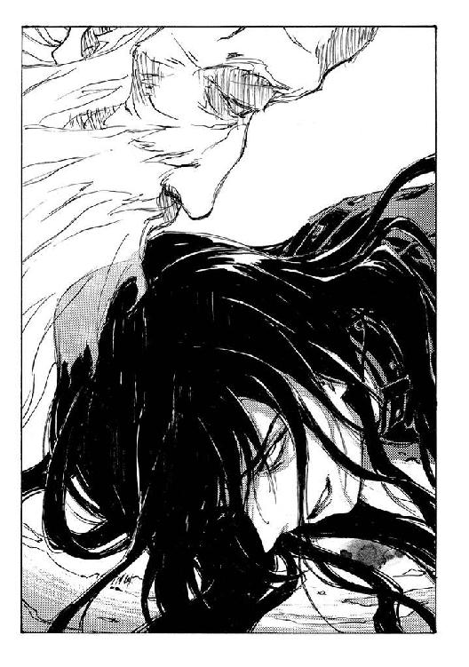
第六章 六人目の死の結果
「この庭は？」
オーフェンは腕組みして、門を見上げた。鉄製の、蛇の門。ウィノナが答えてくる。
「この奥に、領主様のお屋敷があるのさ」
聞かなくとも分かるようなことではあったが。
それはあえて言わず、オーフェンは視線を門からウィノナへ、そしてもうひとり──ロッテーシャへと移した。
「大丈夫か？」
かなりの距離を歩いた。レキがいたという西端から、数時間はかかっている。が、いつもならばついてくる体力などなかったはずのロッテーシャは、目を潤ませて、常になく興奮している様子だった。疲れがないわけではないだろうが、それを感じていないのか。剣を抱き、息を弾ませ、頬を紅潮させている。
「ええ」
彼女は、意気込んで進み出てきた。
「ここに、エドがいるんですか？」
「いないって言ってんだろ」
無愛想な声音で答えたのは、ウィノナだった。拳銃の輪銅式弾倉を外して、弾丸を確かめながら、
「聞いた端から忘れてんのかい？」
「あなたには聞いてません」
きっぱりと、ロッテーシャが告げる。
必要以上に激しく音を立て、ウィノナが弾倉をフレームの定位置に押し込んだ。瞳をぐるりと移動させ、横目で剣士の少女をにらみやると、皮肉げにうめく。
「急に態度がでかくなったじゃないさ？」
「あなたは、なんだか不愉快なんです。前から、ずっと」
「剣が使えるようになったとかで、安全だとか思ってんのかい？」
銃口を──
ロッテーシャに向けるほど愚かではないらしい。ウィノナはホルスターにそれを収め、挑戦的な仕草で鼻を鳴らした。
逆に、それを無視できるほどには老練ではなく、ロッテーシャが声の調子を何段階か上げる。
「父の剣です。使うからには、父と同じようにうまく使います」
「そんなくだらない棒っきれでユイスを殺せると思うのなら、試してみりゃいいさね──」
「うるせぇ。黙ってろ」
横から静かに、オーフェンは告げた。
目つきを鋭くして、ウィノナがこちらをにらんでくる──同時に、勝ち誇った笑みを浮かべるロッテーシャにも、オーフェンは続けた。
「ロッテーシャ、君もだ。本当に聞いた端から忘れてんのか。アーバンラマで言わなかったか？ コルゴンに通用する力が欲しいなら、この空気を覚えておけってな」
「え？」
きょとんとする彼女に、冷たく視線を投げる。
オーフェンは、戦闘服の首もとを直しながら、深呼吸した。視界の闇がいっそう深まり、そして、薄くなる。
「ウィノナ。領主は、身近に護衛を置いていないのか？」
「なわけないだろ。ここにゃ、何人も配置されてる」
「全員死んでるぞ」
気配ではない。臭いというわけでもない──
が、暗い庭園の森の奥を見据えて、オーフェンは断言した。
「そうかい」
さほど感動もなく、ウィノナがつぶやくのが聞こえてきた。そのまま、淡白にあとを続ける。
「......ぐるりと見回って、残るはここしかないってんで来たんだ。そりゃ、暗殺者は当然、あたしらより先行してここにたどり着いているはずさね？」
「最初から、ここに来れば良かったんじゃないですか？」
まだ続きを引きずっているのか、とげとげしくロッテーシャが声をあげた。ふん、と一笑して、ウィノナが答える。
「暗殺者相手に守りを固めるのは大馬鹿者さ。見つけだして、こちらから狩るんだよ」
「関係ない。逃げるしかない」
「え？」
口をはさんだオーフェンに、ウィノナが聞き返してきた。肩をすくめて、オーフェンは続けた。
「本気で暗殺者に狙われたなら、守っても攻めても無駄だ。逃げるしかない。暗殺者なんていくらでも代わりがいるが、狙われた者の命はひとつだけだからな」
「領主様は逃げやしないさ。あの方は」
「なら、死ぬだけだ。俺の知ったこっちゃないが、クリーオウたちに害が及んだ時には」
そこまで告げて、言葉が途切れた。それを、躊躇と思ったのか、ウィノナが、にやりとする──
「及んだ時には、なにをするってんだい？」
本当に、なにをするのだろう。
オーフェンは声なくつぶやき、そして嘆息にして漏らした。
（気に入らない人間を皆殺しにでもするか？）
物騒なことを考えながら、自分の感情が動かないことに、虚無感を覚える。この戦闘服のせいか、とも思えた──《牙の塔》の戦闘装備。これは一種のマインドセットだった。装備は目的を明確にし、そして意志を固定する。レティシャがわざわざ自分の分までこんなものを持ってきた理由が、なんとはなしに知れる気がした。
（ティッシはなにかを覚悟していた）
最後に見た姉の様子を思い出しながら、つぶやく。
（俺にも、なにかを決めろと言っているようだった......こんな拳銃まで持ってきて促すってことは、戦えと言いたいんだろう）
だが、その戦う相手とはなんなのか。彼女は言わなかった。
当面は、《十三使徒》の暗殺者を止めなければならない。
が、人の気配がない庭園の闇をのぞき込んで、オーフェンはうめいた。
「......もうとっくに、終わってるんじゃないのか？ どうにも、ひとりやふたりの死体じゃないって感じだぞ」
「ダミアンからの連絡がない。まだ終わってないってことさ」
自信たっぷりに言ってくるウィノナに、顔をしかめる。装備をいくつか確かめて、オーフェンは聞き返した。
「こっちから確認を取ることはできないのか？」
「向こうにその気があればね。さっき、声が聞こえてきたようにも思ったけど、なにかを伝えてくる前に途切れたよ。空耳と区別しにくいのが最大の欠点だと、あたしは思うね」
冗談なのかと一瞬思ったが、ウィノナの表情を見る限り、それは本気のようだった。
が、それならばそれでいい。オーフェンはつぶやいた。
「お前らはここに残れ」
「ざけてんじゃないよ。領主様をお守りするのが、あたしの役目さ」
凄むウィノナに、肩をすくめる。
「なら勝手にしろ。俺はひとりで行動する。暗殺者相手に足手まといは欲しくない。アーバンラマで懲りたんでね」
「わたしは──」
困ったように声をあげてきたロッテーシャに、オーフェンは向き直った。みなまで言わせず、告げる。
「好きにしろよ。ついて来たところで、コルゴンはいないぞ。いたら、こんなところまで敵を侵入させやしないさ」
装備に問題はないようだった──未メンテナンスの拳銃は論外としても。すべてが一ないし零挙動で取り出せる位置にある。
シーク・マリスクの顔を思い浮かべた。それほど知っているわけでもない。《十三使徒》に所属するほどの魔術士、かつ暗殺技能者となれば、《塔》を出てからブランクのある自分より数段上の相手であることは間違いない。もうひとり、なんとかいう名前の生徒も、わざわざこんな場所に連れてくるからにはそれと同等以上の術者だろう。が、不思議と恐れは感じなかった。
（......なんだろうな。怖くない。）
ふと、違う顔が浮かんできた。ヘルパート。レッド・ドラゴン種族の暗殺者。アーバンラマで滅ぼした相手。自分が戦わざるを得なかった相手の中では、最強の存在だったはずだった。が、これももう怖くはない。炎の中に溶けて消えたあの形相に、哀れすら覚える。
（なんだろう）
直面している事態とはまったく関係のない疑問を浮かべ、オーフェンは庭園の闇を見やった。暗い静寂が、答えを誘ってたたずんでいる。
◆◇◆◇◆
シーク・マリスクはその館を見上げて、場違いな感慨を覚えていた。
数々の間者がここに至ろうとし、あるいはたどり着いたのかもしれないが、帰ってはこなかった。それはプルートー師には、不愉快なことであったに違いない。壮年に熟し、最近では自らを魔法使いとすら称する、人知を越えた黒魔術士の長。最接近領の領主は、彼にとって唯一の、そして最大最後の敵であったはずだ。ついに決戦を決意して、差し向けた暗殺者が、自分となる。
チャイルドマン・パウダーフィールド教師ならば、どうしただろう。愚にもつかない思いを、シークは噛みしめた。プルートーはあの若い暗殺者を歯牙にもかけないだろうが、一部は、力では互角と見る者もいる。あの《牙の塔》の暗殺者が最接近領の領主と戦うつもりになったならば、どうしただろう。やはり自分の生徒、たとえばサクセサー・オブ・レザー・エッジを遣わせるだろうか。
（......もし、キリランシェロ君がここに来た理由というのがそれだとしたら、辻褄は合う......かな）
だが、違うと思えた。
チャイルドマンという魔術士と面識はない。が、聞く噂ならばいくらでもある。キムラックに単身潜入して、教主を暗殺しようとしたとか、それは噂の尾鰭としても、どうしただろう──彼ならば、この最接近領にも自ら単独で乗り込んだだろうか？ それもまた、あり得ないことのように思える。
（恐らく彼ならば、手を出さないのではないかな）
彼はこの最接近領の領主とは、戦わない。
そう感じる根拠は、薄弱なものだった。聞く限り、チャイルドマンは《牙の塔》最高執行部には逆らわなかったという。逆らっても無駄なものがあるということを知っているのだ。いくら刃向かったとしても、動かせないものがあると。
今、標的が存在するであろう館の前にいて、なおシークは懐疑的だった。この暗殺は成功しない。領主は殺せない。心静かに、そう感じてしまう。成功を期待する高揚もなにもなく、自分はこの館の扉を開け、それと同時に落胆しながら死を迎え入れるような、そんな妄想だけが心を支配している。
（カコルキストは......どうなった？ レティシャ・マクレディに挑んだか？ とすれば、うまくいけば捕虜になれるな。彼女は敵を殺しはしないだろう......いや、どうかな？）
分からない。ただ、空耳とは思えない声が、耳の奥にわき上がった。王都にて、怒り狂ったプルートー師が、第二の刺客を指名する。
それはマリア・フウォンだろうか？ その想像は面白かった。
だが彼は笑わなかった。館の扉に手をかけた。庭園の見張りはみな死んでいた。館の中にも、庭と同じく死の臭いが濃く漂っていることを、彼は悟っていた。呼吸がつかえ、剃髪した頭に汗がにじむのを感じた。
◆◇◆◇◆
庭園は静かだった。
闇に彩られた静けさは、ただの静寂とは微妙に違う──それは音ではなく、色でもなく、肌で感じるものだった。
オーフェンは特に気にせず、その闇の中を進んだ。緩慢な警戒が働いているが、それも無駄なことかもしれなかった。歩く先に次々と、死体が現れる。
（......なんなんだ？ これは）
すべて、領主の配下と思しき人間だった。庭園を守っていたのだろう。それが不自然だったわけではない。異常は、その死体の状態にあった。
足を止めて、頭を粉砕された男を見下ろす。即死で疑いない。首ごとねじれて、歪んだ顎が笑った形で固まっている。
（どんなことをすれば、こんな死体になるんだ？ 魔術じゃない。力が一部に集中し過ぎてる）
楔を打ち込んであるようなものだった。一瞬一点に集中した破壊力だけが、この結果をもたらす。魔術のように、有り余る力を叩きつけるものとは違った。
（ドラゴン種族......？ それも違う、か。ものすごく大口径の拳銃......ってわけでもない。どの死体も、傷がひとつしかない。必ず一撃で殺されてる）
拳銃は、そこまで確実性のある武器ではない。百発百中で急所に撃ち込むことなどできるはずがない。
と。
「ふがいない連中だとでも思ってんのかい？」
聞こえてきた声に、オーフェンは振り向いた。唐突に聞こえてきたという声ではない。庭園の入り口から、ウィノナは同道していた──オーフェンは苦笑すると、彼女に告げた。
「俺はひとりで行くっつっただろ」
「行き先が同じなだけさ。あたしも、領主様をお守りしに行くんだから」
不機嫌そうに唇を突きだして、ウィノナ。オーフェンは頭をかいて、うめいた。
「だったら俺といっしょに立ち止まることはないだろ」
「うっるさいね。足手まといってのは、ロッテーシャのことだろ。あたしじゃない」
彼女は手を振って、そう言い切った。
実際、ロッテーシャは庭園の入り口からついてはこなかった。ひとりで置いていかれることに不平が出るかとも思っていたのだが、そういったこともなかった。剣を抱いたまま、それで構わないとあっさりうなずいた彼女の顔を思い出して、嘆息する。
大差はないさ、と言いかけて、口をつぐんだ──口論しても実りはない。オーフェンは死体を示した。
「この死体を見て、思うことはあるか？」
「もう領主様の役には立たないね」
「もう少し考えろよ。こんな死体、見たことあるか？」
こちらが言いたいことをようやく察したのか、ウィノナは顎に手を当てて黙り込んだ。それほど長い時間ではなかったが、怒りに焦った狂信者ではなく、優秀な兵士の顔にもどる。
しばらくして、彼女が口を開いた。
「......王都にね。とんでもなく高いところを飛ぶ鳥と、運の悪い馬鹿がいてさ」
「うん？」
聞き返す。と、彼女は考え深げな表情を崩して、あとを続けた。
「なにを考えたんだか、ある日、鳥が空から石を落っことした。大したことない石っころだよ。ちょうどその下を、運の悪い馬鹿が歩いててね。それを思い出した」
「意外と外れてないかもな」
オーフェンはうめいて、また歩き出した。ついてきながら、ウィノナが聞いてくる。
「なに言ってんだい？ まさか鳥がやったことだとか言わないだろうね」
「少なくとも、それと同じ威力を持った武器だ。魔術じゃない──こんな精度の高い魔術はあり得ない。《十三使徒》が、なにかこんな新兵器とかを使ったってな可能性があると思うか？」
「聞いたことないね。つまりは、ないってことさ」
「じゃあそれこそ、鳥がやったってことになるな」
破れかぶれにオーフェンはうめくと、足を速めた。庭園の奥に、大きな屋敷の影が見える
（《十三使徒》とは違う......もしなにか特別な武器でもあるのなら、イールギットが教えてくれそうなもんだ）
と、視界が開けた。
そこは、森が焼き払われた跡だった。広範囲にわたって、木々が一方向に向かって薙ぎ倒されている。これは魔術の仕業だ──と、疑問もなくつぶやく。
そして。
はっと気づいて、オーフェンは声をあげた。倒れている人影に、見覚えがある。
「イールギット！」
駆け寄る。
焦げた土は、踏み出すたびに不安定にブーツをくるぶしのあたりまで呑み込んだ。その焦土に突っ伏すように、イールギットが倒れている。重傷──というより、死体にしか見えなかった。腕が一本なくなっている。近くに、剣が落ちていた。刀身の半ばで折れているが、これにも見覚えがあった。シークの持っていた剣だった。
抱き起こして、彼女の顔と髪から、土を払いのける。信じられないことだったが、彼女には息があった。ひどい火傷を負っている。魔術で癒せるような状態ではなかった。が、それでも構成を思い浮かべ、展開しかかった右手に、そっと、イールギットが触れてきた。焼けこげた彼女の指先を、ぞっと見つめる。彼女は震えていた。
「どうしたんだ......なにがあった？」
見当はついていたのだが、聞く。
もはや視力があるとも思えない彼女の瞳が、こちらを向いた。それまで彼女もまた、自分の指先を見ていたらしい。咳き込んでから、彼女は言ってきた。
「暗殺者......」
「すまない。聞くべきじゃなかった。しゃべるんじゃない」
彼女の声には、破れた肺から空気が漏れる、笛のような音が混じっていた。一言を発するのも苦痛だったろう。イールギットを黙らせるつもりで、手で口をふさぐ。
が、彼女の手がまた伸びてくると、こちらを振り払った。喘ぎながら、続けてくる。
「みんな......みんな死んだ！ きっと死んだわ......レティシャも。カコルキストも」
「やめるんだ──」
唇を噛んで、うめく。彼女はやめようとしなかった。抱きかかえられたまま、身を乗り出すように胸を突きだして、わめき続ける。
「わたしももう死んでるわ！ だから、わたしにも呼び声が聞こえた......今も聞こえてる。死んでるはずのわたしが、こうして話しているのは」
と、そこまで言ってなにか考え事でもするように、黙する。あるいは、なにか彼女にしか聞こえない声を聞いているようにも見えた。
「あなたに言葉を伝えるため──あなたにも伝えるため！」
「落ち着け。錯乱しているぞ」
「キリランシェロ君......これは伝言よ。今は忘れてもいい。でも、必要な時に思い出して」
掴まれた腕。彼女にまだ、握力が残っていることが不思議だった。こちらをとどめて、言い聞かせるだけの握力。
イールギットの言葉を、聞くしかなかった。急速に死につつある彼女を見下ろして。
「あなたの家族が待ってる......三人がそろうのは、十四日後！」
彼女が強く、咳き込んだ。吐血するほどの血は残っていなかったのかもしれないが、内臓が傷ついているのは外から見ても分かる。イールギットの息は、はっきりと血の臭いを漂わせていた。
「これは予言ではなく伝言......忘れないで。あなたが望まなければ、これは叶わない。聖域で......待ってる人がいる......」
聖域で待っている。
十四日後。
言葉に出さず、その言葉を繰り返す。一瞬、意識が遠いところを彷徨うのを感じて、オーフェンは目を閉じかけた。が、やめた。彼女の眼差しが、ずっと見つめられることを望んでいるように思えてならない。
イールギットが言葉を止めた。発作的な呼吸も、突如として衰える。
最後に──それが最後なのだと、はっきりと分かった──、彼女は口を開いた。それまでとはまた違う、か細い声音で、言ってくる。
「もっと言いたいことがあったんだけど、もう言えないの」
事切れた彼女を、オーフェンは地面に横たえた。彼女に触れていた自分の手を見下ろすと、血の跡もついていない。生乾きの、彼女の血の感触が残っているだけだった。
いつの間にか、背後に近寄ってきていたウィノナが、つぶやくのが聞こえてきた。
「墓を作ってる時間はないよ」
殴ろうと思ったが、それはやめた。やつあたりにしかなりそうにない。
その気配を感じたか感じなかったか、彼女は続けて言ってきた。
「まさか、こんなので泣き出したりゃしないだろね？ 死体ならほかにもごろごろ転がってるよ。今さらなんだってのさ」
オーフェンは立ち上がったが、振り返らなかった。イールギットの死に顔を見下ろして、そして次いで、折れたシークの剣を見やる。
「彼女を殺したのは《十三使徒》だ。これまでの死体と手口が違うな」
「ふうん？」
ウィノナは、さほどの興味を示さなかった。横目で見やると、領主の館のほうを気にしている。頭にあるのは、主人の安全のことだけらしい。
急かすように、彼女が聞いてくる。
「どうするんだい？」
「やるべきことは変わらないさ。この馬鹿げたことをやめさせる」
オーフェンは答えると、同じく、遠くにそびえる領主の館を見上げた。
館は庭以上に、静まりかえっていた。中から漏れる光のひとつもない。これだけ大きく、古い建物ならば、軋み音のひとつもありそうなものだったが、それもなかった。夜の影がそのまま立ち上がったように、そこにある。
扉は、開いていた。もう二度と閉まることはない。直さない限り。
根こそぎ吹き飛ばされていた。大がかりな爆発物でも使ったように──だが、焦げた跡も、なにもない。ばらばらに砕けた扉の破片が、あたりに散らばっている。最も大きい破片はふたつだった。
ひとつには、シークの右半身が。もうひとつには、左半身が貼り付いていた。
自分自身の血を接着剤のようにして、ふたつに裂かれた暗殺者が、そこにいた。
「こいつは──」
ウィノナの声すら、さすがに怯えを含んで震えていた。拳銃を取り出し、それを手の中で構え、いや、その手つきは杖にすがるようでもあったが。
「鳥の仕業じゃないね」
オーフェンは答えずに、館の中をにらみやった。扉の中。そこは玄関のホールになっている。
誰もいない。気配もない。足を引きずるようにして、中に入る。
数歩歩いて、オーフェンはくるりときびすを返した。外を向く。扉は、内側から真っ直ぐに吹き飛んでいた。死体となったシークと、冷や汗を浮かべたウィノナと、真正面に向き合って。
オーフェンは、足下を見やった。足跡がある。木製の床をめり込ませている、ふたつの足跡。
その足跡に自分の足を合わせて、オーフェンは拳を固めた。軽く、構える。
「......なにやってんだよ」
聞いてくるウィノナに、オーフェンは小さくつぶやいた。
「ここに、こうして構えていた奴が、シーク・マリスクをそこまで吹っ飛ばした。一撃で、身体を粉々にするほどの威力でだ。ほかの兵士を殺ったのもこいつだ」
「なに言ってんのか、分かってんのかい？」
馬鹿にするように、ウィノナが声をあげた──ずかずかと、館に入ってくると、拳銃を持っていない右手を振り回してあとを続ける。
「まさかあんた、これが素手でぶん殴った結果だって言うんじゃないだろうね」
「さあな。だが威力だけだったら、魔術のほうが上だ。戦えない相手ってわけじゃない」
ただし、恐らく同じことを考えたであろう《十三使徒》の暗殺者が手も足も出ずに殺された。その事実はあえて言わず、断言する。
足跡にはまっていた足を抜き出して、わきに退く。館の、天井を振り仰いで、オーフェンは続けた。
「ンなことより、クリーオウだ。ここにいるっつってたな？ なにが安全な場所だ」
「領主様が、あの子たちは保護するとおっしゃったんだ。無事さ」
「てめぇの寝室にまで敵に踏み込まれてるんじゃねぇか！」
苦い口調でうめくウィノナに、毒づく。館の中に、それと分かる生き残りの気配はない。腹の底に、嫌な冷たさを覚えて、オーフェンは額を押さえた──クリーオウなら。マジクなら。真っ先に飛び出して、真っ先に殺されるのではないかと思えてならない。ロッテーシャの言う通り、レキがここにいないのであれば......
「ふたりは館のどこにいるんだ！」
つかみかかるように、ウィノナに問いただす。と、彼女は後ずさりしながら答えてきた。
「そんなことは知らないさ。あたしゃ、ふたりをここまで運んできただけだ。ただ......領主様のお部屋は、四階だ。領主様はふたりに話をされたがっていたようだったから、そこにいるかも」
「ちッ！」
舌打ちして、館の奥へ走る。広い屋敷ではあったが、階段を見つけるのは苦ではなかった。死体が転がっているということもない。乱闘の痕跡もない──玄関の扉以外は。ただ呼吸を阻害するほどの静けさが、邸内に濃縮されていた。
階段を、駆け上がる。あとをついてくるウィノナには構わず、それらしい扉を蹴り開けた。彼女の罵声を背に、部屋に突入する。
真っ暗な部屋に、窓の外から、月明かりがまぶしく差し込んできていた。真昼とはいえないまでも、それに近い明るさではあった。部屋の中心に、真っ黒な、ずんぐりとした人影がひとつ、立っているのが見える。
その足下に、中年の男が倒れていた。痩身、だろう。胸が陥没して、血だまりの中に沈み込んでいる死体の原型がどうであったかなど、想像しても詮無いことではあったが。岩の下敷きにでもなったように、胸と腹が潰されている。傷と呼ぶのも馬鹿馬鹿しいほどの巨大な傷は、背中まで貫通すらしているのではないかと思えた。飛び出しかけた眼球が、白目をむいている。喉と舌が、すべて口からはみ出していた。
「領主......様！」
ウィノナが、声をあげた。さすがに、悲鳴ではなかった。怒りの叫びをあげて、先行していたこちらを押しのけ、部屋の中にいる黒い人影へと突進していく。
人影は、それほど動かなかった。体格でいえば、ウィノナのほうが大きかったろう──が、つかみかかっていく彼女に軽く触れると、そのまま無造作に、背後へと放り投げた。背後の、窓へと。
派手な音を立てて、ガラスが砕けた。輝くガラス片と、窓枠とを突き破って、ウィノナの身体が四階の窓から飛び出していく。そのまま、落下して消えた。
オーフェンは動かないまま、残った人影を見据えていた。最初に見た姿勢から、腕一本分しか変わっていない。黒ずくめの格好は、闇に溶けずに、不思議と区別できた。やはり黒い帽子を目深にかぶっている。なにか、宗教関係の衣にも見える。聖服。
低い......ぼそりとした声音で、その聖服の男がしゃべり出した。
「ネットワークには欠点がある。ひとつに集中すると、ほかが極端におろそかになる──許容量以上の情報を、人間が扱うことの、自然な欠陥だな」
なにを言い出しているんだ？ にわかに動きを速めた心臓を抱えて、オーフェンは独りごちた。男は抑揚なくあとを続ける。
「つまりは、陰謀家には向かないということさ」
そこまで言って、顔を上げた。特になにがあるというわけでもない、普通の男の顔。それがつぶやく。
「ふむ......やはり、その男が領主なのだな。とりあえず、見つけた者はすべて殺そうと思っていた。それが確実だろう」
男が言ったのは、足下に転がっている、潰れた死体のことらしかった。
（これが......最接近領の領主？）
見下ろして、うめく。死んでいる。どうしようもなく死んでいる。
部屋の中に、死体はそれだけだった。どこかの家具から金髪の端でものぞいていないかと、自暴自棄になってオーフェンは見回した。刹那。
横に跳んだ。そのぎりぎりの視界を、躍るような動作で大きく腕を振り下ろして──聖服の男が通り過ぎていく。すんでの所でその一撃をかわし、オーフェンは身体が流されないうちに、足の裏を床に叩きつけた。身体が止まる。迎撃の体勢を作り、敵を視界に収める。
（......拳法......か！）
なんの小細工もない。
新兵器もない。
ただの素手の一撃。
それだけで、あの大量の死体の山を築いてきたのだ。
（ふざけんな......こんなことが、あるわけがない）
歯ぎしりして、つぶやく。
すぐに追撃が来るものと思っていたが、男はそこで、ぴたりと動きを止めた。こちらを見て、気楽に告げてくる。
「君も邪拳を使う、か。悪くない。たいした技量だ。だが、付け焼き刃だな」
「......なんだと？」
息が荒くなっていることを悟られまいと、声をひそめたが──無駄だろうとオーフェンにも思えた。対峙しただけで、自分自身が知ってる以上のことを敵に知られてしまったような。ぞっとする確信が、身体を支配する。
強ばった拳の先で、聖服の男はこともなげにつぶやいてみせた。
「君の技には含蓄がない。そう言ったのだ。」
「くっ......」
真正面に見据えていた相手の身体が、爆発するように膨れあがった。
それは錯覚だった──分かっていたが。相手が突進してくると分かってから、接触するまで、まったく間がなかった。敵の拳が自分に触れる。それは避けられない。身体は反射的に、防御しようと両腕を突き出そうとしていた。が、それを躊躇しようとする動きもあった。
死体を思い出す。防げない。この敵の拳は。
身をよじった。完全にかわせないことは分かっていた。それでもなんとかバランスを崩して、この拳の威力を少しでもそらさなければ、この部屋に転がっている死体を哀れむこともできない。
身体をかすめたものがあった。大した接触ではなかったはずだ──戦闘服の表面に、軽くこすれたに過ぎない。
だが内臓が破裂するような衝撃が、身体を吹き飛ばした。
なにもできない。逆らわずに、部屋の壁に激突する。そこが窓でなかったのは幸運だった。いや、四階の窓から放り出されたほうが、あるいは生きのびるチャンスはあったのかもしれない。痛みに喘ぎつつ、壁から離れて向き直る。聖服の男はそこにまた構えていた。
体術では対抗できない。
認めるしかなかった。
面白がるように、男が言ってくる──
「崩しの拳だ──勘がいいな。これを避けられる者がいるとは思わなかった」
（最小の動きで衝撃を伝える打撃法......そんなとこか。そんなに珍しいもんじゃない。威力が桁外れだが）
食らえば、もう動けまい。
いや、生きていられないかもしれない。
修練だけで、これほどの力が得られるものなのか──魔術の助けもなしに。
（魔術......）
その単語を噛みしめて、オーフェンは意識をまとめた。相手は魔術士でもない、ただの人間。しかし魔術を使わなければ対抗できない。しかも、生半可なものでは通用しそうになかった。
が、魔術の構成を編もうとしたその一瞬前に、耳に滑り込んできた男の言葉が、それを制止した。
「君は魔術士なのだな？」
《塔》の戦闘服を着ているのだから、それを悟られたとしても不思議ではなかった。が、そんなこととは関係なく、こちらの心を読まれたようにも感じられる。オーフェンがなにも言えず、造り上げようと思っていた構成を意識から消散させている間に、男は言葉を続けた。
「そう。君がわたしを倒すには魔術しかない。だが、できるかな？ 相手に予想されている攻撃を繰り出せる胆力と機知が、君にあるかどうかだ」
そしてきっと、それをやろうとしてシークは死んだのだ。暗殺者の死に様が頭をちらついた。それでもシークには、この聖服の男への対抗手段が魔術しかなかった。
自分には、ほかにもある。
オーフェンは、そっと、腰のホルスターに手を添えた。相手はまだ気づいていないようだが。一瞬で終わりをもたらす、武器。
（何年も整備されてない拳銃だ......撃てるか？ 暴発する可能性のほうが高い）
それでも、このまま戦うよりは、成算がある。
（......本当に？）
自分に問いかける。どうしてもホルスターから手を離せないまま、オーフェンは敵を見据えた。すぐにかかってこられれば、どうしようもなかったろう。が、男は明らかに、この拳の勝負に面白みを感じつつあるようだった。それが何故か、予想はついた。恐らく、この男の攻撃を二度までもかわした人間など、ほとんどいなかっただろう。聖服の男の目には、好奇の光があった。
相手はこちらの目になにを見たのか──笑みを作ろうとしていた口の端から、すっと力を抜いたようだった。
淡白な無表情へともどって、告げてくる。
「君は、絶望していないのかね？ まだなにか、作戦を持っているようだ」
どこかで聞いたような言葉だった。
やはり、こちらがなにも言えずにいるうちに、続けてくる。
「もう神はいない。人類が、それを知ったのはいつからだろう」
男は、聖印のような仕草を見せた。それは、足下の死体を無視して切られた聖印だった。
「途方もない昔から、薄々とは感づいていたのかもしれない。それとも、つい昨日のことかもしれない。気づいていながら、まだ未練を捨て切れていないところを考えると、本当の意味でそれを理解する日は来ていないとも言える。だからわたしは、意地になって唱えるよ。何度でも。暇さえあればね。もう、神は、いない」
芝居がかった口調で、一言ずつ区切って、そうつぶやく。
唐突に男は、両手を広げて身体を開いた。それは隙にも見えた。が、打ち込んで勝てると思えない。
「善行を積んでも、それを評価して報いてくれる父はいないのだ。悪を罰する約束はないのだ。この世界にはね。とても......無慈悲だ。どうしてそれが堪えられる？ 神はいないのだ。ドラゴン種族は神というものを、くだらん化け物にしてしまった。いや、それ以前に、神などというものを解き明かしてしまった。もうこの世界に幻想は望めないのだ。もうこの人生で隣人を愛することなどできないのだ」
男の声がつぶやきから朗唱へと高まり、そして、
「では、神を失って、人は自立したか？ それもできない。人は今でも祈っている。だが、その祈りを聞く神がいないことも知っている。どこまでもつきまとう。この、知らぬ間に神によって補われ、その不足を知るや絶望し果てる人の心というものが──」
叫びへと変じるほんの一瞬前に、男はそこで言葉を止めた。忘我状態から我に返ったように、ふっと冷静になって、こちらを見つめる。
「ライアンは死ぬ時になにを語った？ 見当はつく」
（ライアンの......仲間か）
オーフェンは、独りごちた。聖域のエージェント。ドッペル・イクス。
聖域に抗争を仕掛けた最接近領の領主が、聖域の手によって殺された。つまりはただそれだけのことだ。大したことではない。
が、オーフェンはうめくようにして、聞いた。
「金髪の、娘と......その弟みたいなガキを殺したか？ この屋敷にいたはずだ」
「さあな。覚えていない」
男は、動揺もなく答えてきた。
「だが、この館に生きている人間は残っていない。我々ふたりだけだ」
「そうかい」
その答えは、どうとでも解釈できた。
クリーオウとマジクは殺されたかもしれない。だが、この男がここに来る前に館を出られたかもしれない。
どちらとも言えない。だが確かめるには、自分がここで殺されるわけにはいかない。
オーフェンは、ホルスターから手を離した。拳銃では駄目だ。もっと確実な方法でなければ。
（なにがある......？）
頬を伝って、汗が流れ落ちた。
そして。
「......ほう」
男の目に、好奇がもどった。眉を上げ、感心したようにうなり声をあげてくる。
「拳で決着をつけるつもりか？」
こちらの構えを見て、聖服の男は自分も構えを取ってみせた。
「わたしの挑発に乗せられたという目ではないな。君は戦士か？......いや違うな。わたしと同じか。戦士とは、違う」
「さっきからごたごたと。アホか」
オーフェンは、それだけ吐き捨てた。
聖服の男が、眉を上げる。
「......わたしの言うことが間違っているかね？」
「いんや。正しいね。だからアホだっつってんだよ」
わけが分からないといった眼差しでこちらを見る聖服の男に、オーフェンは笑いかけた。構える。
大仰と思える構えを、彼は取った。腰を落とし、足を前後に開き、右肩を引く。一本の線をイメージする──自らと、相手を結ぶ一線。それは足下から始まり、腰を、肩を通り、拳の先端から敵の身体の中心へと貫いていく。在るべき力の通り道だった。
この敵が、このたった一晩で何十人となく殺すため、貫き通してきた、力。それと同質の力。自分にも同じことはできる。特に疑いもせず、オーフェンはそれを信じた。たった一撃で人を殺す。造作ない。
それは、チャイルドマンから学んだことだった。自分はチャイルドマンと同じことをする。倒せない敵はない。
その直線を見つめながら、オーフェンはつぶやいた。
これは、クリーオウから聞いたことだった。
「神はいない」
静かに、認める。
「人は自立しない」
冷たく、受け入れる。
「だが絶望しない」
そして唇を閉ざすと、拳を固めて、オーフェンは激しく、踏み出しの音を立てた。
◆◇◆◇◆
傾いた頭が──
さらに低く、横に、折れた。口蓋の奥に突き刺さったバリイング・ダガーが、ともに動く。地面の一番低い位置からそれを見上げ、レティシャは笑みを消した。一撃を与えた。深い一撃を。震える左手を、右手で押さえ込む。その白魔術士の口の中、本来ならば収まりきらないところに、短剣が入り込んでいた。顎の上、柔らかい肉を引き裂いて刃が滑り込む感触を、まだ覚えている。
嘔吐はしなかった。その時になって、今さらそれがどうしたのかという声も聞こえていた──意識の中で、自分が発した声。ただでさえ、馬鹿馬鹿しいほど大量の死体が並べられた夜。
地面にうずくまった、首のない暗殺者の死体。それを目の端に捉えて、レティシャは苦く笑った。彼を笑えない。自分のやっていること、これこそ暗殺だった。
ダミアン・ルーウはゆっくりと、仰け反るように倒れようとし......
そして、顔を空に向けたところで動きを止めた。
地面に、短剣が落ちるのを、レティシャは見つめた。白魔術士が顔を上げ、こちらを向く
彼は無傷だった。
「こんなもので、わたしを傷つけることはできない」
「ナイフは虚を突いただけ」
レティシャは素早く囁いた。そして、その場に身を起こした。痺れを伴った激痛が身体中を支配していたが、それを無視して立ち上がる。皮の内にあるのは、肉でも骨でもなく、ただ痛みを感じる神経だけ。震えながら、白魔術士と対峙する。
が、自分でも不思議なほど、声は滑らかに喉から漏れた。
「あなたがわたしを恐れた一瞬の隙を利用して、あなたの能力を封じさせてもらったわ。その一部をね」
ダミアンは、動じていないように見えた。
「それは精神支配だ。できるはずがない。君の言っていることは荒唐無稽だ。ルールに反する......」
「いかさまを仕掛けてきたのは、そちらでしょう」
それだけ告げて、レティシャは戦闘服の隠しポケットに手を入れた。
史上、最も長く存在している精神士──強大化し過ぎた白魔術士。ダミアン・ルーウ、無敵の存在。彼が、その鉄壁の表皮に、ほんのわずかな亀裂をのぞかせる。笑みだった。ただの笑みではない。なにかを捨てた、驚愕の笑み。
「結局、君の目的というのは、わたしを滅ぼすことなのか」
意外そうに、ぼやく。
「意味が分からんな......わたしを排除して、君の益になることがあるのか？ 心が読めれば楽なのだが」
レティシャは無言のまま、隠しポケットに入れてあった小さな木箱をふたつ、取り出した。燃える庭園を動き回り、いまだにこれが無事だったのは、ちょっとした幸運ではあった。強く握り、木箱の一部に亀裂を入れる。
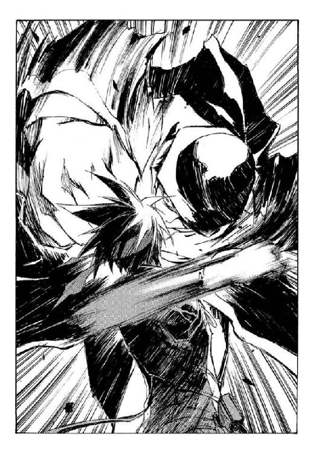
彼女はそれを白魔術士の足下に投げつけた。そして、叫ぶ。
「光よ！」
ダミアンが、邪魔をしないであろうことは、疑っていなかった。彼は無視するだろう。熱衝撃波が轟音を上げて白魔術士を包み込み、そして投げつけた爆薬が熱を浴びて爆発しても。
効果は思った以上だった。激しい衝撃の渦が炎と混ざり合い、複雑な絵を見せる。聴覚を失っても不思議はない爆音が消えて、ダミアン・ルーウの物静かな声音がまだ聞こえたのは、それが肉声ではなかったからだろう。
「こんなことが通用するのであれば」
静かに静かに......告げてくる。
「わたしはプルートーにすら勝てないよ」
その声は確信に満ちていた。まだこちらを侮っている──そう感じて、レティシャは笑った。
意表を突かれた相手の、呆気にとられた顔が見られないのは残念ですらあった。彼女はその頃には既に、視線のとどかないところにいた。空間転移が始まり、物理的な接点は失われている。
だが恐らく、まだ思念は通じる距離だろう。彼女はつぶやいた。
「どうでもいいわ。あとは退くだけだから。あなたは、わたしを殺すまでは力を取りもどせない。これからは、嫌でもわたしの挑戦を受け続けるしかない......ならわたしも、今わざわざ傷ついた状態で戦う必要はないものね」
「レティシャ・マクレディ......」
白魔術士の声から、困惑が感じられた。
「転移しただと......どういうことだ。それは人間の限界を超えた力だ。精神士にしか許されない力だ。君は何者だ？ よほど強力な白魔術士の助力を得ているはずだ。だが、わたしに互する魔術士などいないのだ！ どういうことだ。なにがしたいのだ？」
「ダミアン・ルーウ。あなたがやったのと同じことよ」
短剣を突き刺すのと同じ心地で、レティシャはつぶやいた。鋭く告げる。
「ネットワークに触れる者は、少なければ少ないほどいい。でも、最後に残る覇者はあなたじゃない」
不慣れな空間転移に手間取っていたが、それもそろそろ終わりに近づいていた。完全に接点が途切れる最後の一瞬に、ダミアン・ルーウの叫び声がこちらへととどいてくる。それが悲鳴じみた恐慌の気配を見せていたことに、レティシャ──と、もうひとり──は満足した。
「分かった......分かったぞ！ 君を守護する力の正体が分かった」
叫ぶ、ダミアンの声。
「貴様か！ 天魔の魔女！」
レティシャはその場から消失した。
◆◇◆◇◆
腐臭に満ちた部屋で、コルゴンは自らが死ぬ瞬間までの時を、心静かにカウントしていた。数字が大きくなっていくことだけしか、時の進みを感じることはできず、動けないまま、ただ緩慢に溶けていく。自分の身体が腐り落ちていく、信じがたい無感覚の中、数え続ける。
数字がいくつまで増えたか。それは分からなかった。まともに数を数えることもできないほどに、脳が劣化したか。淡々と、そんなことを思う。感情らしい感情は、しばらく前に失せた──脳のその部分が欠損したからだ、と彼はやはり静かに、判断を下していた。
認識はもはや失われていた。もはや、自分がひとかけらの肉片でしかないことを悟ったのが、その時だった。頭蓋骨の中にある、ちっぽけな肉の塊。それが自分であって、自分はそこから出ていくことができない。手足が残っていたとしても動かすことはできず、なんの価値もない。神経は真っ先に破壊されたらしい。
そのうち、数字も理解できなくなった。
数字の代わりに浮かんできたのは、単語だった。数字と単語の区別がつかなくなっているのかもしれない。名前。様々な名前が浮かんでは消える。だがそれも、意味が分からなかった。名前のうち、いくつかは、なにかを思い出すことを彼に強要しようと働きかけてきたが──無駄だった。なにも残さずに消えていく。
安らぎとは、つまり、これなのだ......
思考力を失い、そんな概念も思いつけたはずはないのだが、コルゴンはそうつぶやいた。頭蓋骨の中に押し込められること。これに勝る安息などはない。自分はただ、数えるだけでいい。
「汝を癒そう」
声が聞こえたが、それを理解できたかどうか、自分でも分からなかった。ただ、味わっていた安らぎに違うものが混じって、煩わしく感じたことだけは自覚した。
この平穏を壊す言葉が、続く。
「汝を害する毒。我には癒すことができる。慈悲を受けるか？」
女の声だった。見上げる。
そこには、女がいた。緑色の髪。緑色の瞳の。
聖域。そんな言葉が蘇った。俺は聖域にいるのか......だから安らいでいたのだ。だからこのままで良かったのだ。
その女──緑色の瞳の女は、唇に緩やかな曲線を浮かべて、歌のような声を紡いだ。
「我は、汝を受け入れよう。汝が、我らを受け入れるのであれば......聖域の誘いを受けるのであれば」
天人種族。
ウィールド・ドラゴン＝ノルニル。
彼女らの魔術に、造れないものはない。偉大な創造の技を伝えるというドラゴン種族。人間種族に文明と英知を授けた。確かに、どのような毒だろうと、彼女らは癒すだろう。すべてを癒すだろう。ここは聖域。彼女らがここにいて、不思議はない。
と。
不意に、問いかける声を聞いた──どうして見える？ とうに視力は失っていたはずなのに、どうして見える？
そこまでだった。コルゴンは跳ね起きると、その女を突き飛ばした。驚愕の表情を浮かべる間もなくバランスを崩した彼女の背後に回ると、女の尖った顎に右腕を引っかけるようにして、締め上げる。そのまま、固定した。女は動けない──動脈までは絞めていないため気を失うことはないだろうが、呼吸はできないはずだ。コルゴンは静かに告げた。
「......癒せ。ただし、慈悲は要らない。死にたくなければ癒せ」
腐臭は失せていた。そんなものを嗅ぎ取っていたことも嘘だったように。今は、押さえつけている女の体臭しかない。
「そ、そんなものは、ない」
気道を潰された状態で、女は、なんとかそれだけうめき声をあげた。意外なことでもなかった──もとより、絞める腕にその程度の余裕を残しておいたというだけのことだった。が、返事は期待していたものとは違う。
「そうか」
ならば用はない。コルゴンは腕に力を入れようとした。首を折れば、数秒で人間は死ぬ。天人種族も同じようにいくかどうかは知らないが、大差はないだろうと思えた。ひとりにさほどの手間をかけるわけにはいかない。身体が動くうちに、毒を癒せる相手を見つけなければならない。
首の骨が外れようという一瞬前に、女はさらに声をあげた──これは、意外なことだった。
「ち──違う！ 汝に投与されたのは、ただの麻酔で」
「............」
コルゴンは沈黙して、とりあえず腕から力を抜いた。舌打ちする。そんなことではないかと、予想していた。というのに、籠絡される寸前だった。
やつあたりも兼ねて、険悪につぶやく。
「やはり、はったりか。俺に暗示をかけていたな？ さっきの男は脅し。お前が懐柔役か？ 俺からなにを聞き出すつもりだった」
「悪魔......」
女の声には焦りがあった。急に間近となった死への恐怖だとすれば、それは奇妙なことでもなかったが、それとは違うものも感じられる──
まぶたを半分、下ろす。女の感じている恐怖が、自分のことだけではないと悟って、コルゴンは怪訝に顔をしかめた。女は、なにか別のことを恐れている。その恐れとともに、震える声で吐き出した。
「キエサルヒマ大陸の悪魔」
「なんのことだ？」
聞き返す。と、女は口早にあとを続けた。
「魔王崇拝者、アルマゲスト──お前たちは、領主と呼んでいる。あれは、とうに死んでいなければならなかった男だ！」
「............？」
もう既に、首を絞めてはいなかったのだが、女はいまだにあごを上げたまま、引きつった浅い呼吸を繰り返していた。
「新たな聖域外戦力を遣わした──ジャック・フリズビーは牽制の役には立つだろうが、失敗するだろう。ダミアン・ルーウがいる限り、領主は殺せぬ！ 大陸のために、言え！ あれを滅ぼす方法を！」
若い女だった。少なくとも、最初の印象では、そう思えた。不老の天人種族としても不自然ではないほどに。
だが一言ごとに、その女は年老いていくようにも見えた。取り繕っていた無表情が崩れ去ると、今ではもう、中年といっても差し支えない。
それだけではなかった。コルゴンは、彼女が頭を振るたびに、女の瞳の色が変化するのに気づいて、さっと手を伸ばした。女の顔に貼り付いていた、薄い膜のようなものを剥ぎ取る。見てみると、それは黄色がかった透明なフィルムだった。それを取り上げて、改めて見やると、女の瞳が青色に変じている。
もう一度、それを目の前に持ってきて通すと、女の瞳が緑色に見えた。
フィルムを握りつぶし、コルゴンはうめいた。
「その髪も染めたものか。天人種族ではないな。どういうことだ」
女は──その頃にはもう、騒いではいなかった。
首筋を押さえて険しい表情で、静かに告げてくる。
「二百年が経った」
またさらに二百年、それを待とうかという気配で、沈黙をはさむ。が、気配だけを残して数秒ほどで、女は再開した。
「聖域にはもはや力が残っていないと、汝らは、とうに気づいていたのではないか？」
そして彼女は嘲るように、醜い笑みを浮かべてみせた。
「六人が死ぬはずだった」
「はい」
「予定通りに進めて欲しかったのだがな」
「レティシャ・マクレディの死亡を確定できなかったことは、わたしも無念です。あれはわたしのアキレス腱になります」
「もうひとり。こちらは、つまらないミスだ」
「......魔剣に護られました」
「予想して然るべきだったのではないか？」
「あの娘が魔剣を使用することをですか？ わたしは、使用できないと予測していました」
「単に、それだけのことか？」
「はい」
「............」
「ですが、予定は狂ったものの、大勢に影響はありません。そして、ひとつ判明したことがあります。お分かりでしょうが」
「ふむ？」
「天魔の魔女が、キエサルヒマ大陸に帰還しつつあります」
◆◇◆◇◆
「君が死ななかったのは、たまたまわたしがいたからだということは分かって欲しいな」
戦闘服を着たままで、朝日を浴びる。
奇妙な感覚ではあった──自分が生きていることにも違和感がある。だがこうして、領主の館の一室で、ベッドに寝そべり、窓から外を見ている。そして皮肉を聞いている。
オーフェンは乾いた心地で、つぶやいた。
「......分かってるさ」
部屋にいるのは、自分ともうひとり、嫌みな笑みを浮かべたダミアン・ルーウ──あとは剣を抱いたまま部屋の隅に控えているロッテーシャと、別のベッドで寝息を立てているウィノナだった。自分と同じく、ほぼ即死状態からダミアンに癒されて、ろくに身動きもできないほど衰弱している。
アーバンラマでこの白魔術士に癒された時には、すぐに動き回れるようになったのだが、今回はそうはいかないようだった。もっとも、この状況では、安静でいられるほうがありがたいともいえる。
陰鬱に、沈んでいく。鼻歌でも歌おうか──そうすれば、ダミアンは嫌がるだろうと、ただそれだけの気持ちで歌いかけた歌を阻むように、白魔術士がさらに言ってきた。
「どうして勝てなかった？ わたしには理解できない。あれはただの男だろう。魔術士でもない。君はかろうじて生きていたが、死んでいてもおかしくなかった」
「どうしてかって？」
オーフェンは、鼻で笑った。
「そんなものがいるとは思わなかった。想像すらしていなかった。だが、いたんだ」
「なにを言っている？」
存外に、この白魔術士は頭が鈍い。胸中でうめきながら、オーフェンは手を振ってやった。
「チャイルドマンでも敵わない暗殺者。それがあれさ。ただそれだけのことなんだろう」
大したことではない。今まで生きてきた確信の中で、大きなものが崩れたが。そんなことは大したことではない。
声に出さずに繰り返したのは、ダミアンにではなく、自分に言い聞かせるためだった。そしてダミアンには、別のことを問いただした。
「それで、クリーオウは？ マジクは？」
すました顔で突っ立っているダミアンをにらみやって、聞く。
「ティッシはどうした。無事なのか？」
白魔術士は、すぐには答えてこなかった。なにかを考え込むような様子があったわけでもない。ただ時間をかけて、言ってきた。
「君の姉は死んだ。《十三使徒》の暗殺者と相打ちの形になったようだ」
「俺はイールギットしか見ていないぞ」
「遺体が残らない死に様もある」
今度は、即答だった。
叫びだそうとしたが──それだけで身体に激痛が走って、断念せざるを得ない。オーフェンはうめき声をしばらく漏らしてから、ベッドの上でかぶりを振った。
「くそっ──たれが！」
「まさか、聖域の暗殺者まで入り込んできているとは感知できなかった。ネットワークの弱点については、そうだな。その聖服の男とやらが言った通りだ」
当たり前のように言ってくるダミアンの口調は、かんに触った。が動けない。シーツに爪を立てて、罵声を繰り返す。
「のんきに言えたことか！」
「失敗の経験は、以後に活かそう」
「これから？ どうするってんだ。領主は死んだんだろ。まさか、それも生き返らせたなんて言わねぇだろうな？」
いかなダミアン・ルーウでも、死者は蘇生できない。
が。
特にどうということもない無表情で──精神士は、言ってきた。
「それについてだが。我が領主様が、これからお会いになるそうだ。起立したまえ。いや、無理か？」
「......なに？」
聞き返して、すぐに。
部屋の、扉が開いた。顔の向きを変える。
そこから、クリーオウとマジクが。
そのふたりに先導されるような形で、ひとりの男が。
姿を見せた。
◆◇◆◇◆
もうそろそろ、完全に忘れ去られた頃なのではないかと、ドーチンには思えた。それを待っていたというわけでもないのだが、腰を上げる。
「行こうよ、兄さん。多分ぼくら、向こうから来たんだと思うんだよね......」
丸一日待てば、十分だった。その間、岩場の上でずっと風に吹かれて砂まみれになった兄が、ゆっくりとうなずく。
「まあ、それもそうだな」
なにを思っていたのか分からない、あるいはなにも考えていなかったのであろうことなら容易に想像のつくもっともらしいしかめ面で、兄がうなずいてみせた。
「考えてみたんだが」
「うん」
「多分、親父もそろそろ死にそうなんではなかろーか」
「かもね」
「とりあえず、帰るとしよう」
「そだね」
それだけ話して、来た道を振り返る。と──
ドーチンは、動きを止めた。
つい先ほどまで大地を包んでいた、闇。もう朝日に押しやられ、幕を上げた、夜。
その闇夜よりも遥かに黒々とした漆黒の影が、そこに見えた。
ひとつやふたつではない。
見ている間に、音もなく増えていく。
なにもない、つまらないこの荒れ地を、まるでなにかを包囲するようにずらりと並んで、どこまでも増えていく。
「兄さん......」
「うむ」
兄は、あくまで気楽だった。
「こんなでっかい犬は初めて見た。いや、そうでもないな。何度か見たか？」
実際、何度か見たことはあった。それがなにか、ドーチンは覚えていた。
身の丈数メートルはある、黒き狼。緑色の眼が輝いている。
数え切れないほどの、ディープ・ドラゴン＝フェンリルの大群が──
一頭、また一頭と数を増し、荒野の遥か遠方まで、ぐるりと取り囲んでいくのを、彼らは呆然と見つめ続けた。
えー。前巻に引き続き、連続になってしまって本当に面目ないというか、情けないことこの上ないのですけれど。この本の発売延期に関しては非常に申し訳なく思っております。
次こそはきちんと......と思うのですが、こうなると信じてくださいと言うことも虚しく、またぼく自身も確信を持って保証できかねるというのが偽らざるところです。無論、今後については編集部とも相談をし、こういったことが繰り返されないよう対策なども考えているのですが、それがうまくいくかどうか、叶うならば今後もつき合っていただければ僥倖に存じます。
以下のあとがきに関しては、発売延期が決定される前に書かれたものであることをご了承ください。ここに書かせていただいた謝罪とともに、全面的に書き直そうかとも思ったのですが、そうするとひどく陰気なものになってしまいそうですし、それは読者の方々が望むこととは思えないので......
最後にもう一度、本当に申し訳ありませんでした。
◆◇◆◇◆
この本が出るまでには、Ｐ90の多弾数マガジンは発売されているんでしょうか。日々そんなことばっかり考えて生きてます。秋田です。
このあとがき、出先のファミレスで書いてるんですが、隣のテーブルにいるアベックの片割れが、「わたしモー娘。の◯◯に似てるよね」とか「藤原紀香に似てるでしょ」とか言い出しました。あまつさえ男、同意してます。でも似てません。秋田です。
関東は先日から梅雨入り。気がつけば、外は雨が降り出しているようで。こうして、窓の中から雨の街を眺めるのも悪くはない気分です。ていうか傘持ってきてません。秋田です。
帰れないので、さっきから店でねばってます。持ってきた藤沢周平はとっくに読み終わりました。仕方ないので原稿書いてます。夕方の混み合う時間帯なもんで、お店の人の視線もステキに冷ややか。秋田です。
そういえばこの前、知人の結婚式に呼んでいただきまして。そこで「ライスシャワーの代わりにおにぎりとか投げつけたほうが絶対に面白いよね」と発言したところ、「異常者」「失せろ」「なにか嫌なことでもあったんですか？」等々の心温まる返事を頂きました。秋田です。
でも、飛来する無数のおにぎりに対し、新郎新婦が完璧な回避性能と機動性を見せつけてくれれば、両家のご両親も安心するのではないでしょうか。いや、いいんです同情はやめてください。秋田です。
結婚式といえば、この原稿書いてる時点では、まだ六月なんですね。この頃月日の経つのが早いような、遅いような、不思議な感じです。なんとか元気に生きてます。秋田です。
雨が弱くなってきました。そろそろ帰ろうかなと思うわけです。秋田です。
でも調子に乗って書き始めたものの、このあとがきってオチがつきそうにないなと、ちょっと後悔し始めてます。秋田です。
外を見ると、向かいの牛丼屋の軒下で、雨宿りしてる人を発見。多分彼も、ご飯食べてる間に雨が降り出して傘もないのだけどやっぱりお腹一杯だしもう一度別のお店に入って時間を潰すというわけにもいかず困り果てて空を眺めかといって雨に濡れて帰る気にもならなくてこのまま待っていればひょっとしたら憧れのあの人が偶然通りかかっていっしょの傘に入っていかないかと誘ってくれるかもしれないと淡い期待を抱きつつもなにも起こらないまま雨は降り続きいつしかその雨は涙へと変わり、といったミニストーリーなど想像してみました。秋田です。
ふと見ると、隣のテーブルには藤原紀香に似ている（似てません）アベックはもうおらず、今度は編集部のＫさんにそっくりな人が、すげぇ美人を連れて飯食ってます。でも人違いだろうな。秋田です。
ファミレスって、見てるといろんな人が来ていろんな人が去っていって（まあファミレスに限ったことでもないけれど）。見ていて退屈しないので結構好きです。なんとなく執筆がはかどるので、ここで仕事すること多いです。でもお店に迷惑かけると悪いから、いつもは深夜に来ます。この前領収証くださいって頼んだら「お宛名は秋田様でよろしいですね？」と聞かれてしまいました。すっかり顔覚えられてしまったみたいでちょっと困った感じ。秋田です。
日が長くなったとはいえ、外も暗くなってきました。夜の雨。この時間になると、子供の頃カックラ◯ン大放送でよく誰かが歌っていた十九時の町（うろ覚えだけど、確かこんな曲名）の最初のフレーズが頭に浮かびます。あれって誰が歌ってたんでしたっけ。どうしても思い出せません。秋田です。
ていうか今の読者さんは、カッ◯ラキン大放送とか、ナオコおばあちゃんの縁側日記とか、カマキリ拳法とか知ってるはずないんですよね。言ってる自分もかなり記憶が怪しいので間違ってるかもしれません。秋田です。
というところで、そろそろ帰ろうかと思います。牛丼屋の彼は、まだ憧れの人を待つつもりみたいですけど。ぼくは濡れて帰ります。秋田です。
てなわけで、今回もお付き合いいただき、ありがとうございました。また次の巻末でお会いいたしましょう。ではでは～。秋田でした。
二〇〇一年六月──
秋 田 禎 信
わたしはドラゴン種族というものを考えてみる......
それはかつて、世界で最も繁栄した種族たちだった。力ある六種。彼らは常世界法則を意のままとする技術──魔術を見出し、そして結果として世界を崩壊させた。
彼らはなぜ、魔術を必要としたのだろう？ 他人事として見れば、彼らは力を増大させる必要などなかったはずだ......しかも彼らは魔術を、六種族が奇跡的に和合した時代に共同で造り出した。互いに争い競い合っていた時代ではなく。
平和に満ち足り、満足しているはずの時代に、彼らは魔術を必要とした。
それはなぜなのだろうと、わたしは考える。
彼らは魔術を力として、武器としてではなく......もっと別のものとして欲したのではなかろうかと。わたしは考える。
どうでもいいことなのではないか。腹心は......ダミアンはそう告げる。だがわたしは考え続けている。
それが重要だと思えるから──いやそれは嘘だ。実をいえばわたしも、この疑問を解くことが戦いの命運を決するとは思っていない。重要事だとは思っていない。
そのうえで考えている。戦いについてはもう既に勝利を手中にしつつあるのだから、その方面について、わたしが考える必要はない。だから別のことを考えている。
ドラゴン種族。
ウォー・ドラゴン＝スレイプニル。
ウィールド・ドラゴン＝ノルニル。
ディープ・ドラゴン＝フェンリル。
フェアリー・ドラゴン＝ヴァルキリー。
レッド・ドラゴン＝バーサーカー。
ミスト・ドラゴン＝トロール。
この六種族。
魔術を生み出し、それを使う六種族。
常世界法則とは世界を構成する根本の法則だった。彼らはそれを、生体的な力で操る技術を開発した。その魔力を放出するためにはなんらかの合図──媒体を必要とし、その媒体の及ぶ範囲でしか魔術は発揮されない。行使された魔術は強大で、彼らは事実上、無敵の力を得ていた。
魔術を持ったその六種族は、明らかなる霊長種となったのだ。世界に在るすべての生物の頂点となった。魔術を持たない生物はドラゴン種族の力には決して及ぶことがない。彼らは世界を、六種族だけで分かち合ったようなものだった。
彼らは世界を支配したのだ。魔術を生み出した、その一瞬だけ。
魔術と同時にこの世に生まれたものがあった。彼らは魔術を手に入れると同時に、魔術では決して抗えない天敵をも生み出してしまったのだ。そして瞬きもしない間に天下を失うこととなった。常世界法則の擬人化という最悪の厄災を引き起こしてしまった。本来なら意志などあるはずもなかったすべての法則が、生物として現れた。真の意味での、絶対の頂点......
ドラゴン種族は、それを神々の現出と呼んだ。
どうして、そんなものを神だと思ったのか。わたしはまずそれを疑問に思う。
恐らくその現出した神が、自らを神と名乗ったのだろう──それが最も、道理が通じそうに思える。
常世界法則としての神は、全知全能にして零知零能。現出した神は、そのどちらでもなくなった。彼らは万能ではないが、万能よりほんの少し劣るだけの力を持っていた。伝説を素直に信じるならば、神々は本能的にドラゴン種族を敵と見なしたのだろう。即座に敵対した。
わたしはこれをひとつの鍵だと感じる。なぜ、神々はドラゴン種族を滅ぼそうとしたのだろう。これは不自然なはずなのだ。
神々が生物として具現化したのならば、生命に対する執着と感謝があるべきだった。自らが生物として現れたのは、ドラゴン種族のおかげではないか？ それがたとえ、彼らの愚かさ故の過ちだったとしても。
よそから見れば、神々がドラゴン種族と戦う理由はなかったはずだ。
現出した神が生物ならば、死を恐れるはずではないか。せっかく得た肉体を自ら放棄し、もとの無存在へと還るというのは、彼らにとっては自殺と同意ではないか？ 生まれてしまったことは仕方ないと、あきらめながら生きるしかない──それが生物というものではないか。そうでないものは、果たして生物と言えるのか。それこそ、法則に反しているではないか？
どうして現出した神々は、ドラゴン種族を滅ぼそうとしたのだ。どうして無にもどろうとしたのか。そんな些事には構わずに、生を謳歌すれば良かったではないか？
ひょっとして......ドラゴン種族が......先に......現出した神々を殺そうとしたのではないか......
わたしは、そう感じることがある。
それが、ドラゴン種族と現出した神々との対立の発端なのだとしたら──
今度は、これが疑問となる。ドラゴン種族は、どうしてそんな無謀な戦いを始めたのだ？ 勝てないと、分かっていたはずだ。
想像することはできる。そしてもとの疑問にもどることになる。
ドラゴン種族はなぜ、魔術を求めたのか。
彼らはなにを求めたのだろう？ 既に満たされていた彼ら種族が求めるものとはなんだったのだろう。
わたしの推論はこうだ。
彼らは絶対的な愛情を求めたのだ......自らを祝福された種族として、高次のものから寵愛の保証を得たかったのだ。恋人たちが結婚を求めるように。たった一枚の書面で愛なるものの保証を求めるように。
ドラゴン種族が神に愛されているのならば、世界は彼らに魔術という力を与えてくれるはずだと。ドラゴン種族たちは寵愛の具体的な証拠として、魔術を求めた......それがあれば、神々が彼ら種族を特別に愛しているのだと、信じられる。
そう考えた。
魔術を手に入れた結果として、彼らは神々というものを召還してしまった。それは求めたものとは違うものだった。
つまり......現れたのは、高次のものを否定する結果だった。
神々は現れたが、それは彼らの期待した神ではなかった。
彼らが本当に信じたかった神というものの姿を、神々は裏切った。
愛を求めたのに、それを裏切られた。
ドラゴン種族は、愛なるものの背信を認めたくなかったのか。
それは、ありそうなことだと思える。あの強靭な種族にとってさえも。
結局のところ、この問いに答えは出ない......
真実を知る者は、大陸にはいない。いや、いるのかもしれないが、ネットワークでも探り出すことができないほどに、彼らは嘘を塗り重ねてきた。彼ら......聖域の住人たち、彼ら当人ですら、自分の語ったどの言葉が嘘でどの言葉が真実なのか。分かっていないということは大いにあり得る。
あるいは、大陸の外にならば当事者がいる。現出した神々は問いに答えてくれるだろうか？ 仮に答えてくれるものとしても、その時には、大陸の滅亡が決することとなる。
それに換える価値がある答えでもあるまい。
だが、これらのつまらない疑問。
誰も気にしない、無数の疑問。
考える価値もない、答えを見出したところで報いもない、無益な疑問。
答える者は誰なのだろう。
答えるべき相手は誰なのだろう。
わたしは、考えてみる──すべての疑問を、解を、受け継ぐ者。
後継者は、誰だ？
第一章 虚像の墓
その墓標の下に死体はない。自分で作った墓なのだから、それは分かっていた。遺体はどこなのか──それを探そうという気にはなれなかった。
消えてなくなってしまったのだろう。そう思うしかない。静かな庭園の中で、オーフェンは墓標、いや、とりあえずそう見立てて彼が置いた、大きな丸石を見下ろしていた。
我ながら、馬鹿馬鹿しいほどに稚拙な墓ではある。彼は皮肉に顔を歪めた。
（ペットの墓じゃなかろうにさ）
むかむかと胸に溜まる、なま暖かい嘆息を吐き出して続ける。
（ちゃんとしたのは......こんな胸くそ悪い場所に作るのもしゃくだしな。そのうち、タフレムにでも、改めて建てるから、さ）
あるいは──
顔を上げて思う頃には、彼は皮肉を追い払っていた。無表情に、つぶやく。
（......もう王都に、用意してあるのかもしれないか）
彼女は《十三使徒》として、この地に送り込まれた。その上司らが最初から彼女らの帰還を絶望視していたとしても不思議はない。それでもなお強行するだけの理由が──
（あったと言いたいんだろう。くそ）
墓石はひとつだった。それが彼女の墓標だと知れる印もなければ、それを証す遺体もない。この庭園で死んだ人間は彼女ひとりというわけではない。彼女の仲間だけに限っても、あとふたり。《十三使徒》の暗殺技能者らが命を落としている。彼らの墓標は作らなかった。いくつかの理由はあったのだが、結局のところ、そんな義理はないからだと、彼は自分で結論づけた。
そこで考えることをやめておげば、余計なことを思わずに済む──
「なにをしてるんですか？」
その問いは、背後から近づいてきた少女の発したものだった。
驚かすつもりでもあったのか？ それを聞く気にはならなかったが、本当にそのつもりがあったのかもしれない。一振りの剣を大儀そうに抱きかかえたその少女は、足音を忍ばせたままさらに近寄ってきた。線の細い、そして色も薄い娘。脆弱そうに見えるというわけではない。それどころか、彼女の歩き方には隙のない運動神経の良さもうかがえた。
「ロッテーシャか」
彼女の名前を、オーフェンは口から漏らした。
ナッシュウォータの剣術道場の娘──ロッテーシャは、笑うでもなく真面目な顔で聞いてきた。
「誰だと思いました？」
「いや別に」
同じ年頃の別の少女を想像していたとは言わなかった。視線を落とし墓石を見下ろす。
「じゃあ俺も聞くが、なにをしてると思ったんだ？」
「立っていますね」
ロッテーシャはごまかさず答えてきた。剣を抱いたまま回り込んでさらに訊ねてくる。
「ほかには......なにもしていないように見えます」
「なら、そうなんだろ」
投げやりにオーフェンは告げると、振り向いた。視線は彼女を通り越し、もっと背後の大きな影へと──この庭園の木々に宿る影が、もつれて組み上がったかのようなその屋敷を眺めて、息をつく。
「......あの中は、落ち着かなくてな」
「わたしも」
疲れた声で、ロッテーシャもつぶやいてくる。
屋敷に、外から知れるような特異な部分があったというわけではない。
それでも長く観察すればそれが見つかるのではないか──我知れずそんなことを思い浮かべて、オーフェンはその屋敷を見つめていた。
間が長くなっていた。それを気まずく思ってだろう。ロッテーシャが、トーンを間違えた不自然な声音で話しかけてきた。
「その服、着替えないんですか？」
彼女が言ったのは、彼が着ている革製の戦闘服のことだった。全身をくまなく、というわけでもないがかなりの範囲で保護し、各所に武器も隠している。言うまでもなく着心地については劣悪で、運動性は損なわないものの長期間着込んでいれば身体のほうが悲鳴をあげる。身体を洗う際などには脱ぐしかないわけだが、再び着るのにも時間がかかった。総じて、実用的な装備とも言えない。
自分でも理解しがたい心地で、オーフェンはつぶやいた。自然と苦笑が出る。
「......なんとなく、まだ着ておかないとならないような気がしてな。着慣れた服は、もうどこだか分からないような場所に置き去りだし」
「別に、ここで出してもらった服でいいじゃないですか」
言う彼女は、その通り真新しい服に着替えていた。仕立ては良いが動きやすそうな、つまるところは作業服のようなものだろう。屋敷と並べて見てみると、使用人といった風情ではある。
それと同じものを着るのか──と、ふと想像してオーフェンは頭をかいた。なにもできずにこんな場所に誘導され、そして使用人の格好をする自分。こだわるべきところではないのかもしれないが、それでもそれを皮肉と感じるうちは受け入れられそうにはない。
「油断したくないんだよ」
曖昧に告げると、ロッテーシャが感情的に反応してみせた。引っかかったように眉を上げると、強い調子で聞いてくる。
「わたしが油断してるって言うんですか？」
「......別に当てこするつもりはないよ。言葉のあやだ。気を悪くしたなら謝る」
「エドに会いたいんです」
彼女は唐突に、話の向きを変えた。オーフェンは目をぱちくりし、動きを止めてロッテーシャを見やった。なにも言えずにいるうちにその少女は細い目の内になにかを見せた。それは単純に考えれば瞳だった。もう少し黒い、澱みだと思うこともできる。不定形の。いずれ、なにに変じるとも知れない。
彼女はこちらを見ずに、言ってきた。
「昨日の夜、エドはここにいないと言いましたよね？ どこにいるのか知っているんですか？」
「さあな」
オーフェンは静かに否定した。ロッテーシャが、不快そうに顔をしかめるのが見える。
「とぼけるんですか？」
「どうして俺が知ってると思うんだ？」
「それは......」
彼女は言いよどんでから、きっぱりと言ってきた。
「あなたにしか聞けないからです」
「それで俺が都合良く知っているとしたら、君はきっとよっぽど幸運の星の下に生まれついてるってことなんだろうな。ダミアンに聞けよ。なにか知ってるとしたら、奴以外にいないだろ」
ぼやいて、オーフェンはきびすを返した。聞き返してくるでも、ついてくるでもない彼女を残して、彼は屋敷の周りをゆっくりと歩き出した。
庭園は、先入観さえなければ快適な場所だと思うこともできた。こんな辺鄙な土地で、そう簡単にこれだけの植木を維持できるはずはないのだが。それとも、この土地の主──領主とやらの配下には、腕の良い庭師も含まれているのか。考えてみれば、それほど馬鹿馬鹿しい連想ではないのかもしれない。この庭がそれほど大事なものならば、庭師は必須の人材だろう。
だが、どうでもいいことではあった。
と──
「あの！」
駆け寄ってきたロッテーシャが、横を追い抜いていった。こちらを向いて立ち止まり、行く手をふさぐ。
「ひょっとして......お墓を作ってたんですか？」
突然話題を変えたと思えば、そんなことだった──軽く唇を噛んで、オーフェンは否定した。
「そんな大層なもんじゃない」
が、彼女はしつこく食い下がってくる。
「だとしたら、ごめんなさい。邪魔をしてしまって」
「別に邪魔じゃなかった」
「気を遣わなくて良いんですよ。つらいでしょうし......」
（だったら、てめぇが気を遣えってんだよ）
罵りかけて、それを呑み込む。善意の迷惑というのは、扱いが厄介だった。自然と険しくなる表情をなんとか隠そうと視線をそらすが、ロッテーシャはそれこそこちらの遠慮と見たらしい。言葉を止めるつもりはないようだった。
「わたしも、身内を亡くしましたから......いえ、病死ですけど、でも理不尽なものだって思いました。父は、この剣と道場をわたしに遺して──」
「ああ、そのへんのことは聞いたよ」
聞き流しながらも、あまり邪険にできずにオーフェンは相づちを打った。目の前にいるこの少女がどうだというわけではない──胸中で言い訳して、虚しい感情を噛みしめる。善意の迷惑。正義感の強かったイールギット。久しぶりに再会した昨日の彼女ではなく、五年前の彼女の様を思い出して、オーフェンは奥歯を軋ませた。守れなかった。自分はなにもできなかった。
せめて、彼女を悼みたかった。だから......
（......静かにしててくれよ、頼むから）
きつく告げる心持ちにはなれない。冷たくあしらうこともできず彼は、ロッテーシャの止め処ないおしゃべりが通過するのを待った。
「──それで、お姉さんだったんですよね？ あまり......その、似てるとは、あ、いえ、ごめんなさい」
（要は、話し相手がいなくて退屈なんだろう、君は）
と、彼女が言っていた言葉をようやく頭に入れて、はたと疑問を浮かべる。
（......お姉さん？）
《塔》時代のイールギットは、たまに出てきては気の利いたところを見せてくれる相手ではあったが、姉ほど図々しくはなかった。ロッテーシャがなにを言っているのか分かりかねて、視線で疑問を返す。が、ロッテーシャはそんな合図に限って散漫に見逃すと、自分の言葉だけをまた続けた。
「少し話しただけですけど、とても知的な人だと思いました。ああいう方には憧れます」
「............」
それは葬儀の席で死者を悼む常套句程度のお世辞に過ぎなかったのだろうが──
「あっ」
オーフェンは声をあげて、立ち止まった。ロッテーシャの言っている意味が、ようやく理解できた。彼女の誤解、そして自分の誤解を。
「............？」
ロッテーシャは怪訝そうに、こちらを見ている。オーフェンは苦笑もせず、怒るわけでもなく、ただ平坦に──無感動に胸中でつぶやいていた。
（......彼女は、ティッシが死んだってことを言ってるのか）
とどまったままそこで思考も止まり、ひとけのない庭園の中で、彼は口を半開きにしたまま立ち尽くした。
屋敷の正面玄関には、破壊された痕跡のひとつも残ってはいなかった。死体と同様ダミアンが、破壊された事実を消してしまったということなのだろう。重いノブを回して、扉を引き開ける。屋敷の内側は、ひんやりとした暗がりに満ちていた。
水槽の中に踏み入れるように、その涼気へと潜る。ロビーにも、埃ひとつ落ちていない。踏み割られた床板も、どの部分が破損していたのか見分けがつかなくなっていた。
その涼気を、腐った水のように感じたのは......屋敷の中に、人の気配を感じなかったせいかもしれない。死骸の浮かぶ水槽と同じ空気が、そこにあった。
（つい昨日のことなんだ......ここで人が死んだのは）
庭園に散らばった、無数の死体。
あれは、この最接近領の人口ほぼすべてだったのではないか──無人の静寂に固まったこの邸内の気に触れると、それもあながち的外れだとは思えなくなってくる。数十人、あるいはそれより上の桁だったかもしれない。そのすべてが一夜で惨殺された。
その、手触りなのだ──オーフェンは声に出さず、つぶやいた。死霊などという曖昧なものではなく。死が満ちたという事実が、凍えた指先でもって首筋を撫でてくる。振り払うこともできない。逃げ出すこともできない。
ロッテーシャは、まだついてきていた。ほかに知り合いのいないこの場所で、居所がないのは自分だけではないということなのだろうと、オーフェンはようやく気づいた。
彼女が聞いてくる。
「......結局、昨日の騒ぎというのはなんだったんですか？」
彼女の声に親しみはなくとも、少なくとも空気の冷たさよりはましだった。オーフェンはちらりとだけ彼女に視線をやると口を開いた。
「ここは最接近領の領主とかいう貴族の屋敷だ。領主なる人物は、ドラゴン種族の生き残りと抗争をしている。その殺し屋が、一夜にしてこの領地を破壊させた」
「殺し屋......」
実感を伴わないロッテーシャのつぶやきに、オーフェンは肩をすくめた。
「コルゴンがいれば、防げたかもしれないな」
「でもその殺し屋というのは、魔術士ではない普通の人なんでしょう？」
不思議そうに、彼女が声をあげた。
「あの......ダミアンとかいう人が言っていたじゃないですか。どうして防げなかったのかって。わたしにはよく分からないです」
と──
ロッテーシャが微妙な一拍を置いたことに、オーフェンは気づいていた。素知らぬ顔で待っている間に、彼女があとを続ける。
「......普通の人でも、魔術士に勝てる方法があるってことですか？」
（それが聞きたかったのか）
小さく嘆息して、オーフェンは答えた。
「魔術が使える状況だったら、そりゃ俺の勝ちだっただろうさ」
「使えない状況だったんですか？」
「屋内でいきなり接近していた上、部屋の中のどこかにクリーオウなりマジクが隠れている可能性もあった。迂闊なことはできないさ。さらには、敵のあの技量だ......《十三使徒》の暗殺者が正面から殺されてるのを見せられた以上、同じことをやれば同じ結果になるのは目に見えていた」
ちょうど、今立っている場所だった。
オーフェンはロビーの床から、背後の扉までを視線で追った──そこに、暗殺者シーク・マリスクは倒れていた。
それを思い出すと同時に、死の手が首筋から背中へとおぞましく広がってくるのを感じる。戦闘服の内側で鳥肌を立てた腕をさすりながら、オーフェンはかぶりを振った。
「魔術ってのは、言うほど便利な武器じゃないんだ。ちょっとした制限から使えなくなることも多い。接近して効果を発揮できる魔術の構成ってのも、いくつか研究してはみたけどな。やはりいざって時に有効かというと、問題が...」
そこで途切れたのは、ロッテーシャが聞いていないということに気づいたからだった。彼女はなにかに気づいたように、ロビーの正面、階段の上を見上げている。オーフェンもならって顔を向けると、踊り場からこちらを見下ろしてきている人影があった。
最接近領の領主。彼がにっこりと品の良い笑顔で、こちらを見ていた。朝の挨拶というところだろう。軽く会釈すると、そのまま奥へと引っ込んでいく。
「............」
見送って、オーフェンは特に言葉を発しなかった。ロッテーシャも黙して、死よりも静かな生の静寂が屋敷に満ちた。
記憶に残っていたのは、もっと悲惨な形相だった。
それが、その領主なる男の落ち度だったというわけではない──たとえば貴族ならば、統治する対象である民間人に危惧を抱かせるだけで重大な過失と見なされるとしても。王立治安構想において、貴族連盟は全大陸民に安心を保証した。宣言にいわく、大陸における人間種族は生活を保障される。自然死を迎える権利を得ている。
あらゆる宣言と同じく、貴族連盟の宣言もまた理想的なものだった。そしてあらゆる理想と同じく、王立治安構想の理想もまた現実に照らし合わせれば齟齬があった。
昨夜、この庭園に死体が散らばり、自分も死にかけた。二階の窓から庭を見下ろして、オーフェンはかぶりを振った──窓から周囲を警戒でもするふりをして。部屋のすぐ下に、自分で置いた墓石がある。偶然ではなく、自分の手近に置いておきたかった。皮肉を思いついて、つぶやく。
（......死体が消え失せたのは、現実を理想に近づける手管かもな）
死体がなければその惨劇はなかったことになる、というわけだった。
出来の良い冗談だとは思わなかったが、それでも振り切るように窓から離れて、オーフェンは自分に与えられた部屋の中を見回した。
客室だった。少なくとも、招かれてこんな土地にまで出向いたなりの待遇ではある。天蓋つきのベッドだというわけではなく、また、それを欲していたわけでもなかったが、オーフェンは弾力のあるマットの上に腰を下ろした。身体にはまだ疲労が染みついていた。ベッドの軋み音と、柔らかい羽根布団の感触とが眠気を誘う。
欲望を振り切って、彼は両手で顔を覆った。一息つく。昨日の記憶がまざまざと蘇ってくる。
「......領主」
彼は小さくつぶやいた。昨夜見た顔。
部屋に踏み込んだ時に見た、領主なる男の顔。それは紛れもなく悲惨な形相だった。だがそれを落ち度とするのは気の毒だっただろう。それは、どうしようもない形相だったからだ──
死因は尋常ならざる打撃による致命傷。内蔵のほとんどを一撃で叩きつぶされ、喉と舌を口から吐き出して倒れていた。明かりのない部屋で月光のみにて映し出されていた死に顔は、はっきり見えたはずもないのだが、記憶に焼き付いて離れなかった。
（どうしてだ？）
そしてまた、疑問も頭から離れない。
（......あれは死んでいた。どう見ても死んでいたんだ）
庭園に転がっていた、領主の私兵たちの死体。誰ひとりとして疑う余地もないほど破壊され、死んでいた。それと同じ、領主もまた昨夜死んでいた。
（なのに、どうして今朝は生きているんだ？）
あまりにも呑み込みようのない疑問に、息を震わせる。オーフェンは顔を埋めている手のひらに力を入れた。手袋の中で、指の節がこすれる。昨日のことを、思い出せる範囲で細大漏らさず記憶に蘇らせようと、彼はうめいた。
領主を殺害した殺し屋に、オーフェン自身もまた倒された──一命を取り留めたのは、領主配下の白魔術士ダミアンに助けられたおかげだった。意識を取りもどしたのは今朝のことで、その時には領主が生き返っていた。
（ダミアン・ルーウには、人を生き返らせるほどの力がある......？ そんな馬鹿なことがあるか、くそっ）
顔を上げる。
（まだ人違いだってほうが腑に落ちる。死に顔しか見てないわけだしな。影武者、死んだふり、幻覚、すべては俺の見てた夢......ほかにどんなトリックがあり得る？）
ノックの音が聞こえた。
またもや考え事を邪魔されて、だからというわけではないが、見当はついていた。無視していると、扉の向こうから声が聞こえてくる。
「あの......オーフェンさん」
（なんなんだ）
オーフェンは立ち上がると、扉のノブに手をかけて鍵を外した。簡単な鍵でしかない──魔術士でなくとも心得があれば外せるだろうし、もとよりダミアン相手には無駄でしかなかったろう。
それでも鍵をかけておいたのは、邪魔をされたくなかったからだが。
（考えてみれば、内側から鍵なんてかけたら居留守も使えねぇじゃねえか）
鍵をかければ部屋にいるのを主張することになり、鍵をかけていなければ扉を開けられて結局ばれてしまう。どちらにしても同じことだった。自分の愚かさを呪って、扉を開ける。
開いたドアの陰に隠れるようにして、そこにいたのはやはりロッテーシャだった。なんとか邪険にならないよう努力して──ぎりぎりの努力だったが──オーフェンは、彼女に問いかけた。
「......まだなにか用が？」
「まだっていうか、オーフェンさん、結局わたしの聞いたこと答えてくれてないじゃないですか」
「聞いたこと？」
思い出せずに、彼は聞き返した。
と、ロッテーシャはさりげなく隙をついて部屋に入ってきた。相変わらず剣を抱えたままで、しばらく黙り込む。やがて彼女は言ってきた。
「エドは、どうしてここにいないんですか？」
それは、先ほどの問いと同じようで、まったく違う問いだった──そのことはあえて言わず、オーフェンは聞き返した。
「というと？」
「ここにいるって聞いていたから、ここに来たんです。なのに、ここにはいないって。どうしてなんです？」
「コルゴンの奴に用事があって、うまく見つけられたことなんて一度もなかったような気がするよ」
投げやりにつぶやくと、オーフェンは部屋を横切って、彼女から最も離れた壁に背を預けた。
ロッテーシャの顔を見やると、彼女は怒りか落胆か、どちらとも取れない複雑な表情で身を乗り出してきた。実際、彼女自身にもどちらか分かっていなかったのかもしれない。鼻の詰まった声音で抗弁してくる。
「でも、あなたが」
「待ってくれ。一応言っておくが、俺は君の案内人じゃないんだ。君は勝手についてきた。俺は俺の用事で手一杯だし──」
と、言いかけてから躊躇する。
オーフェンは息を吸い直すと、改めて口を開いた。乾いた唇が、嫌な味を舌に残しているのを感じながら、
「コルゴンは、キリランシェロとかいう奴に頼れと......そう君に言ったんだっけ？」
「え？ ええ......」
ロッテーシャには、彼がどうしてそんなことを言い出したのか理解できなかったようだった。怪訝そうに目をぱちくりさせている。
「............」
長くは沈黙しなかった。意識したのは、自分でなければどう考えるだろうかということだった──たとえば、コルゴンなら。
（そもそもあいつは、どういうつもりなんだ......？）
誰もが自分の意図を隠したまま、厄介事だけをこちらに押しつけてくる。コルゴン、ウィノナ、ダミアン、最接近領の領主。そして、レティシャも。
そう考えれば、眼前で剣を抱き顔を険しくしているこの少女は、まだしも正直だと言えた。少なくとも嘘がうまくないという程度には。
（結局のところ、協力者は必要なんだ）
観念の為所かもしれなかった。
「分かった。協力しよう」
気の進まないまま、オーフェンはつぶやいた。
だがそれすら、ロッテーシャには意外だったらしい──なにを言ったところで意外と取るのかもしれない。驚き混じりに、彼女が聞き返してくる。
「協力？」
「協力は協力だ。ほかに意味なんかない。俺たちの目的が一致しているとは言い難いが、それでも同じ方向を向いてはいるんだ。つまり、ここの連中から本当のことを聞き出したい。奴らの正体を暴きたいと言い換えてもいい」
オーフェンはゆっくりと、言葉を選んだ。
「状況を整理しよう。既に話したこともあるかもしれないが聞いててくれ。全体の枠組みはこうだ──この大陸は、ドラゴン種族によって支配されている。だが実質上、大陸を統治しているのは人間種族だ。ドラゴン種族は聖域と呼ばれる場所に隠遁して、俺たちに姿を見せることもない」
ロッテーシャがうなずくのを待ってから、オーフェンはさらに続けた。
「貴族連盟は建前上、ドラゴン種族からその権利を引き継いで大陸を統治していることになっている。そして実際、そうなっている。だがそれでも、ドラゴン種族がなにかの気まぐれだかなんだかで聖域から出てくれば......人間種族はどうあがいたところで再びその支配下にもどるしかない。貴族連盟の真意なんてもんはさすがに分からないが、彼らが聖域と対立するのは自然なことだと思う。その抗争の担い手がこの館の主、最接近領の領主なんだろう。それが今のところ、彼ら自身が自称している自分たちの役割で、ここまでは昨日も話したよな？ ウィノナの説明を素直に信じれば、そういうことになる」
「わたし、あの人は嫌いです」
吐き捨てるように、ロッテーシャがつぶやいた。
と、不躾な態度を自覚したのか、恥じ入るように目を伏せて、
「......いえ、あの人もわたしのこと嫌ってるんだと思います。なんていうか、ものすごく蔑んで見られているみたいで苛々するんです」
「領主のために働いているということでは、コルゴンとウィノナは同志だ。君がコルゴンと対立するなら、そんなもんじゃないか？」
「そうでしょうか......」
落ち込んだというわけではないだろうが、彼女は沈痛な顔を見せた。
オーフェンは、壁にもたれた背中の位置を直すふりをして、彼女から目をそらした。たいした時間ではなかったが、その間にロッテーシャは気を取り直してくれたらしい。彼女に再び聞く態勢ができたところで、オーフェンは説明を続けた。
「ドラゴン種族は、聖域の外で活動する役割を持ったエージェントを用意しているらしい。人間種族や、ドラゴン種族のな。それをドッペル・イクス──ひらたく言えば、〝裏切り者〟って意味だが──と呼ぶんだそうだ」
「ライアンも......そのひとりだったんですよね？」
おずおずとつぶやく彼女を、手を振って制止する。
「ああ、君の魔剣を手に入れようとしていたらしいが、コルゴンがそれを邪魔していたらしい。コルゴンはコルゴンで、その剣を欲しがっていた」
それを聞いてロッテーシャの表情が曇るのに気づきながら、オーフェンは無視して先を急いだ。
「だがそれは領主の頼みでもあったんだ。ドッペル・イクスを遊撃する暗殺者のような立場にいたんだろうな、コルゴンは」
「だったら、わたしに言えば良かったんです。全部説明してくれれば──」
「どうなった？ 聞く耳あったか？」
聞き返すと、彼女は口をつぐんだ。口惜しそうにきつく剣を抱く指先が、白くなっているのが見える。
オーフェンは、肩をすくめた。
「まあ、それでも相談すべきだっただろうとは思うけどな──道場を襲ったりするよりは遥かにましだ。アーバンラマで会った時にそのことを問いつめてみたが、要領を得なかった。あいつにはあいつなりの考えがあったんだろうと言いたいとこだが、あいつに関しては、まるっきりなんの考えもなかったんだとしても驚きはしないね。だてに迷惑来訪者なんてふたつ名がついていたわけじゃない。他人が傷つくことに対して罪悪感がないんだ。人格としては最低最悪だが、それでも本当に人に危害を加えるようなことはしない奴だと思ってたんだけどな......」
ロッテーシャの──迷惑来訪者の元妻の──反応を期待していたのだが、彼女はなにも言ってこなかった。氷像のようにも見える白い手で、剣の鞘を握りつぶそうとしている。それは見た目よりも遥かに冷えた指先ではないかと思えた。
触れる気にはなれない手。
オーフェンは話題を変えた。
「......アーバンラマまで巻き込んだ騒動の結果、ライアンは死んだ。ライアンの仲間もだ。だがむしろ俺たちにとっての問題は、その中で最接近領の領主なる人物に目をつけられたことなんだろうと思う」
それはなぜなのか。ロッテーシャは視線でそれを問いかけてきていたが、オーフェンは気づかないふりをした。説明しようとすれば長くなり過ぎる。
アーバンラマでウィノナが持ち出してきた交換条件によれば、領主は大陸を飛び出したアザリーの行方を追っているらしい。その手がかりとして、彼を必要としていると言っていた。アザリーの行方を探す手段のないオーフェンにとっても、その利害は一致してしまっている。断れない取引だったのだ。
そのあたりについては言葉を濁して、オーフェンは続けた。
「で、俺たちはこの最接近領に誘導された......領主は俺に取引を申し出たんだ。その取引は、俺にとっても有益なものだった。プライベートなことだけどな。君もついてきた。コルゴンに会うために」
「......はい」
「一連の出来事は、突発的なものだったとはいえある程度は領主の思惑通りに動いていたはずだ。だが予定外のことも起こったんだ。つまり途中でもうひとつ別の勢力が絡んできたおかげで、この最接近領の組織は壊滅しちまった」
「あなたのお姉さん？」
聞いてくるロッテーシャに、かぶりを振って否定する。オーフェンは言い直した。
「ティッシは違う。もうひとりいただろう？ 君は会ってないが、彼女のほかにさらに仲間がふたりいた。宮廷魔術士《十三使徒》ってのは話したよな？」
「ええ......」
「最高ランクの黒魔術士だ。貴族連盟の下で働いている。本来なら領主と共闘する立場なんだろうが、彼らも彼らで、思惑があったんだろう。領主を暗殺するために彼女らを送り込んだ」
と......
ふと黙り込んで、オーフェンはつぶやいた。自問するように。
「......ティッシはなにをしに来たんだ......？ 結局なにも教えてくれなかった......」
また黙考しそうになるところを、話し相手の視線で我に返る。
ごまかすわけではなかったが、口早になってオーフェンは続けた。
「同時に、またドッペル・イクスも最接近領に入ってきていた。コルゴンの奴が行方をくらましたこともあって、戦力を欠いた領主の手勢は全滅しちまったんだ。《十三使徒》も全員死亡した......とまあ、これが現状だ」
自分自身、まだ分からないことも多かったが。
それでも理解している範囲で語れば、そんなところだった。決定的な部分は、手がかりもないに等しい。
「あのぅ......」
そのことは、彼女も察したのだろう。わずかに不満そうな気配を含んだロッテーシャの声を聞いて、オーフェンは覚悟を決めた──わざわざ語ることを避けていた質問を、彼女が投げてくるのは分かっていた。
若い剣の道場主は、こんな時だけ、いかにも剣士らしい隙のない視線を見せていた。
「クリーオウと......マジク君はどうしたんですか？ そもそも、どうしていっしょにいないんです？」
この部屋のどこかに隠れているのかとでも言いたげに、あたりを見回してから、
「今朝、顔を見たっきりじゃないですか」
「............」
答えられずにいると、彼女はさらに詰め寄ってきた。
「またわたしが知らない間に、なにかあったんですか？」
「いや」
嫌な味が混ざるのを意識しながら吐き出す言葉は、自分でも苛立たしく感じられるほど歯切れが悪かった。オーフェンは鼻の頭をこすって、手の甲で表情を隠した。
「なにもない......俺も、今朝回復して、領主といっしょに部屋に入ってきたあのふたりを見て以来、見てない。話もしてない」
「どうして」
「君も見てたろ。顔を見せたと思ったら、挨拶だけして当然のような顔で領主といっしょに退室しちまった。それが気に入らない」
ロッテーシャが、きょとんとしてみせた。
「......無愛想だったから怒ってるってことですか？」
「違う」
苦笑して、相応しい言葉を探す。天井を見上げて、オーフェンは告げた。
だが頭に浮かんでいたのは、足下にぽっかりと開いた落とし穴だった。
「なにか、でっかい罠にはまっちまってるような気がするんだ。俺たち全員が」
「でも、話を聞いている限りだと、領主って人はわたしたちに危害なんて加えないみたいじゃないですか。見た感じも、良い人っぽかったですし。むしろ貴族なら、市民を守るのが仕事で......人を襲うのは、そのドッペルとかいう人たちなんでしょう？」
「問題はコルゴンだ」
その名前を出すと、彼女は息を詰めるようにして言葉を止めた。腕組みしたままオーフェンは、彼女を見据えた。
彼女の言っていることはもっともだった。現状では、領主の──そしてその配下の連中の──取っている行動は、気にくわない部分が目につくものの、自分たちにとって益になっている。白魔術士ダミアンには、二度までも生命を救われた。この地に至るまで降りかかってきた災難はすべてイレギュラーで、しかもすべてが領主配下の者以外の手によって仕掛けられたものだった。
領主を警戒するのは筋違いといえる。
が。
オーフェンは繰り返した。
「コルゴンがな。アーバンラマで言ったんだ。領主はいい奴だ。できれば協力してやってくれってな」
「エドが......？」
「信頼する気にならねぇだろ？」
冗談で言っているつもりはなかった。ロッテーシャも同じことを考えたらしい──目に浮かんだ困惑の光で知れた。
うなずいて、オーフェンは続けた。
「警戒の要あり。そんなとこだ。だがチャンスでもある」
「チャンス？」
「ここまで忍耐ばかり試された。相手の有利なゲーム盤で、自分の駒も持てずにひたすら相手の手番だけを見せつけられたんだ。とうとう相手の懐を捕らえられた──そして同時に、相手の懐に食いついたとも言える」
「どっちなんですか？」
素直に聞いてくる彼女に、オーフェンは無理やりににやりとしてみせた。
「どちらかさ。いずれ分かる」
そのことはそれで終わりにして、彼は腕組みを解いた。壁から身を起こし、
「協力しようってのは、こういうことだ──分からないことが多すぎて、俺ひとりじゃ手に余る。あてにできる相手が、君以外には誰もいないんだ」
「わたしに、なにかできますか？」
「一番の不安はクリーオウとマジクだ。あのふたりの様子を探って欲しい。白魔術士は精神支配で人格をも掌握できる。魔術のことは分からなくても、ふたりが正気かどうかくらいなら、何週間かいっしょにいた君なら分かるだろ？」
「......わたしもその支配とかいうのにかけられたりしたら？」
「そうしたら、ダミアン・ルーウが敵だとはっきりする。洗脳されてるのがふたりだろうと三人だろうと大差ない」
それを聞いて、ロッテーシャは多少ならず衝撃を受けたようだった。眉間にしわを寄せて、口を尖らせる。その仕草はクリーオウに似ていなくもなかった──彼女らが同世代の少女なのだということを今さら理解して、オーフェンは苦笑した。意外だと思ってしまったのだ。
ロッテーシャは非難するように言ってきた。
「ひどいじゃないですか。そんなのが協力ですか？」
「敵の姿を手のとどくところに引きずり出さなけりゃ、戦うこともできないんだ。仕方ないだろ？ 敵であることが分かりさえすれば、俺がなんとかするさ。それに──」
と、口ごもる。
言葉が続かなかったふうを装って、オーフェンはそのまま笑みを浮かべた。
（それに......どちらかと言えば、先に狙われるのは俺だろうさ）
「俺たちは手が足りないんだ。増やせるあてがあるのかどうかも分からない。悪いが呑んでくれ。その剣、使えるようになったんだろう？」
彼女の抱く剣──魔剣を示して、告げる。
ロッテーシャは曖昧にうなずいただけだった。それはお世辞にも自信たっぷりとは見えなかったものの、オーフェンはぎりぎり自分を納得させて小さく付け加えた。
「ティッシもいないしな」
と──
「あのう」
申し訳なさそうにまばたきしてから、彼女が声をあげてきた。
「ごめんなさい。こんなことを言うべきではないって分かっているんですけど」
「............？」
不思議に思いながら見やると、ロッテーシャはさらに一呼吸おいてあとを続けた。
「お姉さんが亡くなられたっていうのに、随分と冷静なんですね」
彼女がなにを言っているのか、しばらく理解できなかった。
しばらく思考を止めていたらしい。ふと気がつくと、彼女のいる位置が変わっていた。こちらを気遣うように、近づいてきている。
オーフェンは手をあげて、それを制した。かぶりを振って告げる。
「そうだな......自分でも不思議だよ。いや」
違うということは分かっていた。思いつくままに、言葉だけを紡ぐ。
「そうでもないな。なんとなく分かるような気もする。つまりは──ティッシが死んだなんて、どうしても信じられないんだ。俺は」
「でも......」
言いかける彼女をさらに制止して、オーフェンはきっぱりと首を横に振った。
「いくら否定しても無駄だ。俺は信じない」
戦闘服の内側で拳を握り、それを壁に押し当てる。
力を込めずとも、古びた壁面が軋み音を立てた。言葉よりも強く、その物音がロッテーシャを沈黙させる。
思い出したのは、今もまだ耳に残っている苦痛に満ちた声だった。イールギットの末期の言葉。彼女はそれを、伝言と言った。
十四日後──いや、一日経ったから残り十三日か──、聖域にて家族三人がそろう。
それは意味不明の言葉だった。単に死に際の彼女が錯乱しただけかもしれない。が、オーフェンはそう思っていなかった。
（伝言だ......イールギットは嘘をついたことなんかない。家族が三人そろうと言っていた。家族......）
自分にとって、家族と呼べる者たち。その中にレティシャが含まれていないはずがない。
その時、彼女が、自分が、どんな状態なのかは分からない──が、それを確かめるまでは彼女が死んだと考えるつもりもなかった。
だが、そもそもそれは誰の伝言なのだ？
オーフェンは拳を下ろすと、静まり返った室内から目を離して窓の外を見やった。
陽は昇りきって、誰がどう抗弁しようと、一日の始まりを否定できない時刻になったことを示していた。
第二章 虚像の人
氷に閉ざされたマスマテュリアを思い出したのは、当然のことだったかもしれない。
ドーチンはその光景を眺めて、自分にそうつぶやいた。
なにもない荒野。白っぽい砂嵐が吹き荒れるその広い不毛の地は、懐かしいマスマテュリアの氷原を連想せずにはいられない。その細かい粉塵の靄の中、巨大な影がいくつもそびえている。地上に、これほど巨大な生物はいくつかしか考えられない。それはひとつの種別にまとめられていた。ドラゴン種族。マスマテュリアに無数に転がっているドラゴン種族は目の前にいるものとは種類が違ったが、巨大さは同等だった。
見ている間にも次々と虚空から姿を現すその黒い巨大生物たちは、巨体を別とすれば漆黒の狼の姿をしていた。吹き荒れる風がドラゴンらの毛並みに触れて、不平じみた不協和音を奏でる──にもかかわらず、その狼たちは身動きしても物音ひとつ立てずにいた。その身動きすらも、ほとんどなかった。なにもない空間から前触れもなくそこに現れ、まるで絵画のようにそこを占領し、まばたきもせずそこにとどまる。
それは、ディープ・ドラゴンとして広く知られる生物だった。大陸では、ミスト・ドラゴンと並んで最悪の危険をばらまくと噂される。
それらの数は既に、眼前の荒野を埋め尽くすほどにもなりつつあった。百や二百などという次元ではない。見回しても、周囲はすべて漆黒の毛並みにふさがれている。そのさなかで呆然と立ち尽くし、ドーチンはただの一言だけで、すべての心情を吐露することに成功した。
「......もう駄目だ」
その場にがっくりとくずおれると、ドーチンは地についた両手で乾いた砂を掴み取った。どうしようもない。今までもわけの分からない危険に巻き込まれることは何度もあったが、これほどではなかった。
「ん？ どーしたドーチン。なにかまずいことでもあったか？」
と、兄の声を聞いてそちらを見ると、地面に横倒れになったボルカンが腕組みしながら平然とした顔で言ってきたところだった。
「まあ、俺様はこうしていきなり現れたでっかい犬の前脚に身体ごと思いっきり踏みつけられて身動き取れないわけだが、それほど困ってないぞ」
「......いや、なんか心の底からすごいって思ったよ今。兄さんのこと」
ドーチンはぼやくと、身につけている毛皮のマントを身体に引きつけた。それがなんの役に立つというわけでもないが、それでもこれでどこかに隠れられるというのなら、そうしたいところだった。
兄は巨大なディープ・ドラゴンに踏みつけられたまま──というより動きようがないのだろうが──、意外と平気そうにあとを続ける。
「しかしまあ、あれだな。このでっかい犬どもはどこから現れたのだ？ なんかこー、あれだぞ。犬なら犬らしく現れる前にまず吠えて欲しかったぞ」
「犬じゃないよ、兄さん。これはディープ・ドラゴン種族だよ。見たことあるでしょ？」
「それは犬の一種か？ デカイヌクロビカリと名付けようと思っていたところなのだが。こっちのほうが良いと思わんか？」
「じゃなくて。ていうか名付けなくていいから」
ドーチンは軽く頭を押さえてから、めまいを振り払うために目を閉じた。なんとか起きあがる気力を回復させてから、また口を開く。
「ものすごく危険な生き物なんだ......本当にものすごく」
「危険か」
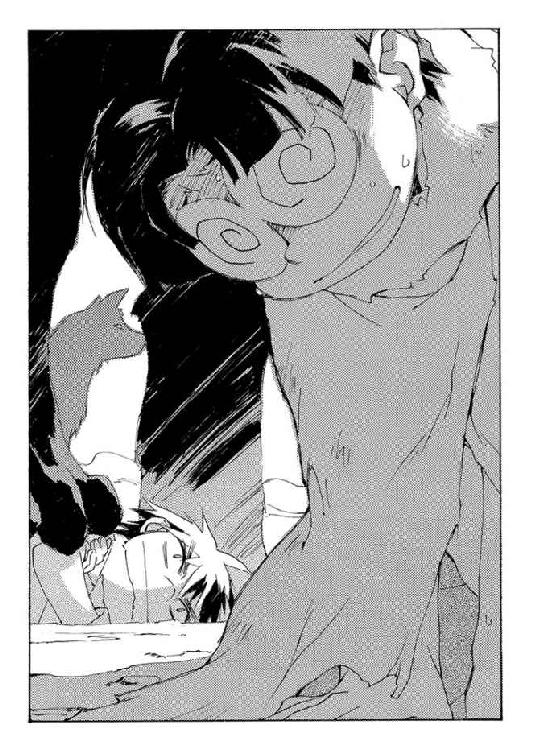
いまいち実感できないのか──兄は他人事のようにつぶやいてから、はっと目を輝かせて言い直してきた。
「危険だと!? このマスマテュリアのミスター不世出、ボルカノ・ボルカンが危険な状態にあるということかっ!?」
「うん多分。まあそんな感じきっと」
投げやりに同意すると、兄は数秒間沈黙し、今度は慎重に聞いてきた。
「......この犬はどれくらい危険なんだ？ ひょっとしてトンガリカジリネコくらい危険なのか？」
「いや、まずその生き物がなんなのか教えてよ」
「むう。無知な輩はこれだから困り果てる。しかし、俺様が危険なことになっていたとは、てんで思いつかなんだ。まさしく、ばったり出くわし殺されるところだった」
「そんなに長く心配しなくても良いと思うよ。ぼくの知ってる限りでは、ディープ・ドラゴン種族に出会ったら、残りの人生はあと何秒とか、そういう話らしいから......」
あたりを囲む巨大な狼を適当に示して、絶望的にうめきを漏らす。それが万分の一でも兄に伝わることを期待していたわけではないが。
果たしてボルカンは、はっきりと理解したようにうなずいてみせた。横倒しになっているので、横向きに。
「それは結構困るぞ。あとで保健所に抗議すべきだと俺は思う」
「そうだね。してもいいと思う」
ただし、そのチャンスがあればの話ではある。
胸中で付け加えて、ドーチンは一番近くにいるドラゴンの顔を見上げた──それはつまり、兄を踏みつけている狼ということだが。
あと、ほんの数秒の命。それを、自分を殺す生き物を見つめることに費やそう。心に決めて、ドーチンは眼球の奥に涙が沸き出すのを感じていた。眺めれば眺めるほど、美しい生き物だった。尖った鼻先は荘厳に天を指している。鮮やかに輝く緑色の瞳は、遥か遠くの地平を見つめているようだった。どのドラゴンもまた、同じ方向を見つめている。
（なんで、あんなほうを見ているんだろう......なにもないのに）
それとも、なにかがあるのだろうか？ 自分には見えないなにかが。
覚悟を決めても、疑問は浮かんだ。不思議に思ったことに対して答えが得られないまま死ぬのは嫌だというそれだけの理由で、ドーチンは慌ててドラゴンらの眺める方向に視線を転じた。答えを見つけるならば急いだほうが良かった。残り何秒の猶予なのかも分からないが。
解答を求めて、遠くを見やる──眼鏡越しに眺める地平には、やはりなにもなかった。どこを向いても同じ風景の荒野があるに過ぎない。
強いて言えば......
ドーチンは、自信なく自答した。
（あの方向は......あの借金取りとかが進んでいった方向なんじゃないかな？）
そう思って眺めていくと、ドラゴンたちが完全に一方向を向いているのではないということが分かってきた。そもそもずらりと並んだドラゴンたちは、適当に現れてそのまま突っ立っているというわけでもないらしい。方向ではなく一点を眺めるように、同心円上に展開している。
（なにか......なにか一点を、包囲してるんだ）
その先になにがあるのかは分からないが、ドーチンはさらに目を凝らした。なにも変わらない。
が──
変化は、見ていない方向で起こった。異変は最初に、聴覚に侵入した。背後から、凄まじい不協和音が鳴り響く。
「うぎ......!?」
耳を押さえる間もなく、鼓膜に突き刺さるような、ねじくれた金属音が響き渡った。薄いガラスが砕ける音......断末魔の悲鳴じみた音......ただひたすらに立て続けに起こる打撃の音......聞き分けようもない騒音の渦が、限りなく一瞬に近い短時間で爆発する。
振り向くと、音もなく──ドラゴンたちがその場からいなくなっていた。飛び退いたのか、もっと別の移動方法を使ってか、もといた場所から何メートルも退避している。狼の群は、異変の生じたその空間を凝視しているようだった。聴覚の次にその異変を捉えたのは、視覚だった。
続きがあるとも思えなかった。その出来事に触れられるとも思わない。臭いもなく、味覚は論外だろう。そこにあったのは、思いつく限りの色を球状に圧縮したような、奇怪な模様だった。それに質量があるとは見えなかった。ただ空間に、不気味な模様が描かれている。
言うまでもなく、見たことのない代物だった。周りにいるドラゴンたちも驚いているのかそれは分からないが。はっきりしているのは、飛び退いたドラゴンから解放された兄が、今度はその球体に押しつぶされそうになっているということだった。
いや、球体ではない......
球体からこぼれ落ちた、むやみに長い足にだった。黒の革の服に包まれた足。次いで現れたのは腰、腕、背中、髪。
長い黒髪が現れた時、球体が消えた。そこに、長身の女がひとり残る。
その女はその場に膝を突いた──わざとではないのだろうが、膝頭が踏まれている兄の顔面をこそぎとる。兄が悲鳴らしい悲鳴をあげる間もなく、女が苦痛に満ちたうめき声をあげた。
「転......移に、こんな時間がかかって。何時間......かかったの？」
なにかに文句を言っているらしいが、よくは分からない。
「まったく......昔から、手際が悪いのよ......あなたは......」
ぶつぶつと続けて──
女は突然、顔を上げた。怪物じみたばらばらの黒髪が不気味に顔へとかかっている。
「あなたたち......良かった。まだいたの......ね」
怪我をしているようだった。下腹のあたりを両腕で押さえている。黴の臭いが混じった砂の風に、生々しい血臭が溶け合った。見るからにひどい有様だったが、その女はまだ死ぬつもりはないらしい。
「この近くに......わたしの荷物が......置いてあるはず。あのバッグ......持ってきて......衰弱して......栄養剤が......」
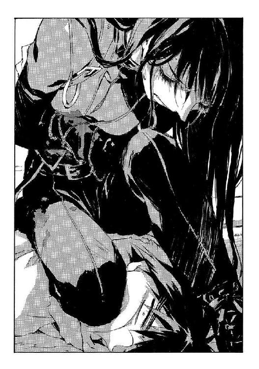
そして、そのまま昏倒した。
その女の名前は覚えていない──が、この寂れた荒野まで彼らを連れてきた、髪の長い黒魔術士だった。
◆◇◆◇◆
領主。
──という呼び名に相応しいと言えるほど、その屋敷がむやみに広大なものだったというわけではない。十数部屋あるレティシャ・マクレディの持ち家と、同じ程度のものだったろう。それでもかなりの広さではあるが。
迷うほどではなかった。古い絹の絨毯に無粋な黒革のブーツの跡をつけながら、オーフェンはその内装を見て取った。昨夜入り込んだ時には夜間だったせいか、闇と影の印象しか残っていない。こうして日中に見れば、暗がりのひとつひとつに感じていた圧迫感と殺気の痕跡もない。
天井の高さ、廊下の幅、ひとつひとつの間尺が標準より大きいのかもしれない。中で運動会ができる──というほどでなくとも、
（学芸会程度ならできる、か）
ひとつひとつの調度は質もよく、年代物であるように見えた。廊下の突き当たりに置いてある一抱えほどの壺の縁に指を触れさせてから、オーフェンはその指先をまじまじと見つめた。壺の価値など分かるわけもない。作られた年代を特定できるような知識があるわけでもない。
廊下の隅、階段の手すり、窓枠のすり減り具合......次々と観察していく。使い込まれているのは間違いなかった。急ごしらえで作られた屋敷というわけではないらしい。
（古い......な。結構古い屋敷だ。こんな開拓業者も入ってないような辺鄙な場所に。この最接近領とかいう土地は、かなり昔からあったってことか？）
聖域との抗争。そんな理由でもなければ、このような荒野に屋敷を構える理由はないように思えた。
「さて。この館が、かつては聖域との友好を求めて建てられたものだと言ったら、君は信じるかな？」
深い男の声が、古びた通路に広がった。
傷んだ壁板は声を反響させはしなかった。うっすらと埃の染みた絨毯も。
いや。
オーフェンは、否定した。肉声ではないから、こだまが起こるわけがない。顔を上げると、通路の曲がり角からひとりの男が姿を見せたところだった。その男に別段変わったところはない。立ち居振る舞いにも、不自然なところは見受けられなかった。ほくそ笑むように、口の端を上げている。
その男はそのまま続けた。
「大使の仮住まいとして建てられたのだ。フェンリルの森のほとりに。本来はね。だが森林は衰退し、遠のいた。この館の役割が変わり、そしてここが最接近領と呼ばれるようになったのは、それほど大昔というわけではないのだよ」
「あんたにとってはな」
「わたしを不老不死かなにかだと勘違いしているね？ わたしは......君が思っているほど長く現世にとどまってはいない」
語りながら男は、前に出てきた。緩やかに腕を振って、我が身を示すと、
「わたしが肉体を捨てたのは、百年も昔ではない。ほんの数年前でもない。その間のどこかさ。興味があれば、そのあたりのことについて話しても良いが？」
「いらねぇよ」
オーフェンは即答すると、相手に向き直る動作をしながら、さりげなく半歩後退した。とはいえこちらの心を読める──と主張している──相手に、警戒を隠す意味はないかもしれない。
白魔術士ダミアンを前にして、オーフェンはつぶやいた。
「だいぶ調子がもどってきた。礼を言っておく」
「うん？ 怪我を治してやったことかな？ それは礼だけで済ませて欲しくない。領主様が君を必要としているというので、わたしは役割に従ったまでだ。領主様の厚意を無駄にして欲しくはない」
（厚意ね）
皮肉を言葉ににじませて、毒づく。
「呼ばれて来たんだ。だが領主とやら、挨拶して通り過ぎるばかりで、ろくに話もさせてもらえない」
「君が避けているのではないかと思っているのだが」
「話をさせてもらえるってのは、俺が相手の胸ぐらを掴んだ状態でってことだ」
「......それは敵愾心かね？」
言われて、オーフェンは肩をすくめた。
「着いて早々、とんでもない虐殺を見せつけられたんだ。少しくらい慎重になったって罰は当たらんだろ」
と、相手に攻撃的な視線を投げて付け加える。
「ついでに言えば、あんたらの部隊は全滅しちまったわけだ。コルゴンもいない。聖域に対抗する──実際今までできてたかどうかも知らないが──それだけの力が、まだ領主に残っているのか？」
「全滅したわけではない。優秀な部下を大勢失った被害が小さいものだったとは言わないが」
見た限りでは、ダミアンの様子に動揺はなかった。もっとも、肉体を捨てて精神体になった白魔術士が、多少言葉を吐きかけられた程度で表に変化を見せるわけでもないのだろう。
ダミアンは紳士然とした態度を崩さず、余裕を含んだ口調であとを続けてきた。
「幸い、領主様は無事だった。それだけで最接近領は維持できる。そういうものだ」
そう言ってからこちらが言葉をはさむより早く、白魔術士はふと思いついたようにつぶやく。探るような目つきで、
「なにかを探していたのかね？」
屋敷をうろついていたことを咎めているようにも聞こえたが──オーフェンはそれを非難ではなく単なる質問だと受け取ることにして先に進めた。
「最初は、死体を探そうと思った」
「ほう？」
それほど興味もなく返事するダミアンに、即座に続ける。
「なぜ死体を消したんだ」
「............？」
無言で、理解できなかったゼスチャーか、白魔術士が自分のあごを撫でる。オーフェンはそれを見ながら声を低くして続けた。
「昨日の死体だよ。今朝起きたら、騒ぎなんて起こってなかったみたいに跡形もなく消えていた。あんたが片づけたんだろう？」
「残しておいたほうが良かったかね？」
「こんな時に、そんなことに気を遣うあんたでもないだろうと思ったのさ。もしかして、死体を調べられたらまずいことでもあったんじゃないのか？」
オーフェンは指折り数えて立てた指を二本、相手に突きつけた。聞く。
「シークとイールギットの死体は見た......もうひとりの魔術士と、ティッシは？」
「《十三使徒》は全員死亡した」
涼しく告げてくるダミアンに、オーフェンは声を上擦らせた。
「ティッシは！」
「彼女も......死んだよ。ほかの者と同じ死に様だった。あまりに悲惨でね。君が見なかったというのは幸運だった」
「ティッシは死んでない」
断定する。
が、ダミアンは哀れむようにこちらを見て言ってきた。
「どうしてそう思う」
「まさか、否定されるとは思わなかったな。あんたこそ、第六感の塊みたいなもんだろうに」
「なるほど。肉親の死を認めないという精神の防御行動はとりあえずは有効なものだ」
（くそっ）
胸中で罵って──といって、表に出さなかったわけでもなく、オーフェンは毒づいた。否定する材料がなにもないのも確かだった。レティシャは実際に姿を消しているのだから。死んだという以外にその理由が思いつくわけでもない。
実際、ダミアンが正しいのではないか。自分は意固地になって姉の死を認めまいとしているだけなのか。そんなことを考えそうになり、それこそそこから逃げ出すようにオーフェンは別のことを口にした。
「......ウィノナは？」
聞く。
ダミアンはすぐに答えてきた。
「兵士の詰め所に移した。いつまでも領主様の館に置いておくわけにもいかんだろう」
「暗殺者に狙われた直後だぜ？ 護衛を遠ざける意味があるとは思えないけどな。ここの兵士で生き残ったのは、彼女だけなんじゃないのか」
怪訝に思って、オーフェンは告げた。あの男──数十人を一夜にして殺害した黒服の男は、聖域はその気になればいつでも手勢を好きな場所に移送できると言っていた。その実際の真偽はともかく、可能性の低い話だと断じる根拠もない。
ほかならぬダミアンが、それを甘く見ているわけでもあるまい。そう思っていたのだが、白魔術士は思いのほか気楽に構えているように見えた。些末なことを指摘されたというふうに微笑すると、こちらを示して言ってくる。
「護衛ならば君がいる。君ならばドラゴン種族が相手でもひけを取らない」
「俺は引き受けた覚えはない」
きっぱりと告げるが、ダミアンは退かなかった。
「ならば引き受けたまえ。領主様よりお話を賜れば、その気になるだろう」
（取引に自信があるってのか。アザリーの行方のほかに、別のカードも持ってるってことか？）
それはいずれ、領主と対決して確かめるしかない。
だがそれよりも先に、確かめておきたいことがいくつかあった。オーフェンは切り捨てるように手振りで否定した。
「覚えておくさ。兵士の詰め所ってのは、どこにあるんだ？」
聞いてみると、ダミアンはあっさりと答えてくれた。廊下の窓外へとあごをしゃくったのは、普段の紳士ぶった態度には似つかわしくなかった。だがその眼差しに感情的なものが宿ったというわけでもない。
「館の裏手だ。林の陰に隠れている。平屋だから、目につきにくいかもしれない」
そして次に浮かべた笑みは、勝ち誇っているようだった。
「兵士宿舎へ行くのかね？ ちょうど良かったよ」
「............？」
「領主様もそちらにいらっしゃると思う。まさか挨拶を避けたりはしないだろうね？」
オーフェンは答えず、礼も言わないまま屋敷の玄関へと向かった。
兵士宿舎と呼ばれているらしいその建物は、教えられた通り、館の裏手にあった。ダミアン・ルーウが嘘をついていると思っていたわけでもないが、それでも期待を裏切られた心地にオーフェンは舌打ちした──なにかつまらない嘘でもつけばいいんだ。と、胸中で独りごちる。そうすれば、少なくともダミアンが嘘つきであることを確信できる。
（いや......なにか嘘をついているのは間違いないんだ）
自分が疑り深いわけではない。いや、疑り深いのかもしれない──相手が嘘をついているのは分かっているというのに、それを確信できずに疑っている。なにも信じることができていない。
考えをまとめられないうちに目的の建物を見つけてしまったことは、余計に苛立ちを募らせた。大勢が詰める宿舎だからだろう。それなりの大きさがある。広さだけでいえば、領主の屋敷などより遥かに大きなものだった。明らかに屋敷より新しいが、施工が粗末なせいか、ほころびはこちらのほうが遥かに多い。
出入り口が屋敷に向いているのは、なにかがあった時まず屋敷に殺到できるようにということか。
昨夜の惨劇の舞台にならなかったからか、それとも、なったのだが庭園のほかの箇所と同じくダミアンに修復されたのか、目立った破壊跡も見あたらなかった。せいぜいが、ひびの入った窓に貼られた隙間埋めのテープや、壁の虫食い穴に詰められたぼろ布の塊程度のものしかない。屋根は汚れていた。屋敷もそうだったが、掃除の手が行き届いてはいないらしい。それは昨日の騒ぎで使用人が死亡したとかそういった次元のことではなく、長らく放置されていたようにうかがえた。
実際、ここの領主は生活にさほどの秩序を求めていないのかもしれない。それは貴族らしくないといえばらしくなかったが──逆にそれは自分が、貴族という言葉の印象に勝手な思い込みを持っていただけとも言えた。貴族内革命以前ならばともかく、現代の貴族などというのがそういったものだとしても驚くほどではないのだろう。
適当に自分を納得させて、オーフェンは詰め所の入り口に近寄った。中からは人の気配も感じられない。ウィノナも重傷だったが、ダミアンが妙な差別でもしていない限りは、自分同様そろそろ動けるようになっているはずだった。彼女と話す必要がある。
できれば、領主をうまく避けて。
自分自身がどういった根拠でその優先順位をつけているのか。その自覚もなかったが、オーフェンは入り口の扉に手をかけた。鍵はかかっていない。引くだけで、抵抗もなく開く。釘が蝶番に引っかかったような、不快な物音が立ったのを別とすれば。
廊下にいきなりバケツが横倒しになっていた。その上にぞんざいに被せられた雑巾が乾いてその形に固まっているところを見ると、それが定位置であるらしい。もとはモップだったらしい棒も近くに立てかけてあったが、先端が折れて肝心の部分は見あたらない。靴の泥落としもなく、靴跡を描く砂の塊が点々と奥に続いていた。どれも派遣警察官の──つまりは対武装盗賊戦闘課の連中の──愛用するスパイクの跡に見えたが、そうでないものも混じっている。
間取りは分からないが、難解な造りをした建物ではない。廊下を奥に進んで一番最初にある扉が予想通り、詰め所だか待機所だかであるらしい。数人が詰められる広さの事務部屋に、大きなテーブルがひとつ。椅子はばらばらに置いてあるだけだった。ファイルキャビネットはそれほど大きくはないものが一個設えてあるだけで、さほど使われた形跡もない。確かに想像してみれば、ここで書類仕事が煩雑になるのというのは考えにくいことだった。壁には勤務表が貼りだしてあるが、日付は数か月前のもので──もしかしたら数年前のものかもしれない。警察官は、警察官らしい場所でしか働けない。そんなことを誰かが言っていたのを思い出して、オーフェンは苦笑した。彼らは、結局のところ自分の働く場所を警官らしくしておかないと落ち着かないのだろう。特定の貴族の下で働く非公式騎士も、派遣警察官には違いない。
この最接近領に集められた非公式騎士たちが、主に対武装盗賊戦闘課から引き抜かれているのであろうことはほぼ間違いがないところのようだった。都市から離れて生活する武装盗賊の取り締まりは、派遣警察の業務では最上位の優先事項となっている。武装盗賊にも、様々なものがある。革命を宿願とした政治犯から、農村のパン配達を襲うガキ大将の集団まで。派遣警察対武装盗賊戦闘課の警察官らは、有事には騎士軍に編入されることすらある半軍人たちだった。
警察官と軍職員の最大の違いは、敵に対する姿勢だった。犯人を死亡させれば殺人罪に問われる警察官とは違って、軍人にとっては敵を生かすことは事後に禍根を残すことにほかならない。対武装盗賊戦闘課の派遣警察官は、その中間の立場にいた。場合によっては、実際に戦争に参加することのない軍などより遥かに過酷な任務に就いているとも言える。彼らは戦闘のプロフェッショナルだった。
ウィノナを思い出し、つぶやく。
彼女が優れた警察官だとは思わない──彼女の話によれば、そもそもそれほど長く警察業務に就いていたというわけでもないらしい。彼女は戦闘のプロというより、戦闘そのもののプロといったほうが近いだろう。敵を腕力でねじ伏せることに特化し、それ以上でもそれ以下でもない。
詰め所の内部を進んでいく。頑丈そうな扉に目を引かれてプレートを確かめると、装備室と記してあった。続いてロッカールームがあり、訓練場があり、食堂がある。脱衣所と浴場もあったが、水タンクにはそれほどの備蓄はないようだった。
（ウィノナは優れた格闘者だ。少なくとも技量ならトップクラスだろう）
そういった意味合いでは、ロッテーシャに似ている──剣術競技者のあの少女も、自分の土俵の中でなら誰にも負けない技を持っているに違いない。それが実戦で通用するかどうかというのは、つまりその土俵を本来の広さより拡げることができるかどうかだ。
ロッテーシャにはまだ分からないかもしれない。だが、ウィノナはきっと分かっているのだろう。
自覚していて、それができるかどうかというのはまた別次元の問題だった。オーフェン自身、それができているという自信はなかった。どれだけ実践しているつもりでいても、手のとどく範囲の外に......死角がある。
その死角から、敵の手がこちらにとどくようならば──その時は負ける。
昨夜の痛みを再び感じたような心地で、オーフェンは胸のあたりを手でさすった。傷もダメージも残ってはいなかったが、手触りが安心を与えてくれるわけではなかった。
当たり前だが、宿舎内は静まりかえっていた。誰もいない。内部の造りから考えて、ここにはやはり常時、数十人の兵士が詰めていたはずだった。
それがすべて殺されたということか。
そして......
オーフェンは、つぶやいた。
（殺されて......殺されたままになっている）
それは本来ならば、馬鹿げた理屈だった。考えるまでもないことだった。殺されて、殺されたままになっていないわけがない。
だが領主は生きている。
（もしダミアンに、領主を生き返らせることができるのなら......殺された兵隊も生き返らせればいいんだ。そうしない理由はない。辻褄があわない）
どう考えても奇妙だった。
奥に進むにつれて、宿舎の散らかり具合もひどくなっていく。やがて、目当ての部屋を見つけてオーフェンは足を止めた。
私室。
といっても、一部屋に数名の寝床を敷き詰めただけの、そんな代物だった──《牙の塔》の学生寮を思い出すが、それより遥かに扱いは悪い。三段のパイプベットはただでさえ手狭だが、どの寝台もその容積の半分以上を雑多な荷物で埋められている。あちこちに積み重ねられた古雑誌、古新聞の類は、娯楽に乏しいこんな場所では紙面を指でぼろぼろに削り崩されるほど読み返されても、なお使い捨てられることがないらしい。
一部屋目には誰もいなかった。二部屋目、三部屋目とのぞいていくが、どの部屋にも鍵はかかっていない。開けっ放しで閉じた形跡のない扉もたびたび見受けられた。何部屋目か数えるのをやめた頃、話し声が聞こえてきた。
「............」
オーフェンは舌打ちして、立ち止まった。会話は内容までは聞き取れないものの、声には聞き覚えがあった。ひとりは探している相手──ウィノナだった。もうひとりは、男の声だった。
領主。
もう一度舌打ちしようと思ったが、物音を立てたくなかった。足音を殺して、手近な部屋の中に入る。扉は閉めずにおいた。屋敷の客室でやったことと同じ間違いをするつもりはない。扉の陰に、身を潜める。
（......会話を聞いておいたほうがいいのか？）
意識せずに耳をそばだてて、そう考える。
が、すぐにあきらめた。内容を理解できるほど近づけば、領主はともかくウィノナには感づかれるに違いない。
（どうせたいしたことを話してるわけでもないだろう）
重要なことならば、誰にも聞かれる心配のない場所──屋敷には領主の執務室もなんでもある──に彼女を呼びだして話すに違いない。こんな、誰が隠れているとも知れない宿舎ではなく。会話の調子、なんとはなしに感じ取れる感情の含みから、負傷したウィノナへの見舞いの類ではないかと思えた。
（部下思いの領主......そして感激する部下。まあ、そんなところか）
それこそ、そのうちに拍手でも混じってくるのではないかというウィノナの声を聞き流しながら、オーフェンはつぶやいた。
そして、
（優れた格闘者だ......トップクラスの）
ウィノナに関する評価を、再び胸に刻む。
いや、それは自然と浮かび上がってきたものだった。上司に恵まれたことを感謝する彼女の感極まった歓声──それを聞いて。
（要領さえ悪くなけりゃ、優れた警官にもなっていただろうさ。まあ、そいつが良いことなのかどうかはさておいて。ほかに居場所がないってわけじゃあない。もっと割の良い仕事だっていくらでもある。彼女自信がことさら素直で騙されやすいってわけでもないだろう。それが）
どうして、ここまで領主なる人物に心酔できる？
答えの出ない問いは、暇つぶしの役に立ってくれた。聞こえてきたのは静寂だった──唐突に訪れた無音が、騒音となって聞こえてくるように錯覚させる。オーフェンは顔を上げて、そのかわりに影に沈み込むように身を縮めた。
領主とウィノナの会見は終わったようだった。扉が閉まる音が振動となって床を伝わってくる。そして、ゆっくりと慎ましく床を踏みしめる音。その足音は、ウィノナの体格から発せられるものではあり得なかった。
物陰から視線だけ抜け出して、オーフェンは廊下を見やった。人影が映る。
軽い歩き方だ。そう感じる。気取りもなく、ただ身体を前に移すためだけの足取り。着ているものも、どうということもない──屋外でも動きやすそうな軽装の上着とズボン。真っ先に連想したのは、森林レンジャーの格好だった。実際には、派遣警察官らの標準装備から武装をすべて取り払ったものが近いのだろう。人目を気にしないのであれば、丈夫で、肌のほとんどすべてを砂や虫から守ることができ、ついでに、数日は洗濯せずとも通気性を保てる。つまりはそんな服装だった。
なにも持っていない。身体の横に下げられた指先には、中性的に尖った爪が目立つ。その男は立ち止まらなかったため、観察できたのも一瞬のことでしかない。しかも不自然な角度から見上げた状態では、人相をはっきり見ることができたとも言い難い。だがオーフェンは、網膜に映ったものが必要以上に記憶に残るのを奇妙に感じた。風貌に目立った特徴があるわけではない。だが、印象には残った。全体的に造作は細い。昨夜見た口の間から舌を盛り上がらせた断末魔の表情と比べれば、どうしたところで無個性な顔に見えただろうが。穏やかな半円を描く眉。しわのない眉間。年齢は、四十歳代なのではないかと思えた。もっとも、コルゴンの言葉を思い出すに──彼と旧友と呼び合っているとなれば、もう少し歳が近いこともあり得る。
領主は通り過ぎざま、こちらに気づいたのかどうか、視線をこちらに向けたようでもあり、そんなことはまったくなかったようでもあった。思った以上に顔が印象に残ったのも、領主がこちらを向いたせいかもしれない。ただの錯覚かもしれない。断言できることがなにもない......
その男が通り過ぎ、足音も聞こえなくなってから、オーフェンは身を起こした。領主が建物から出ていったことは間違いなかった。聞いた覚えのある、釘と蝶番の競演する騒音が耳に入る。扉が閉ざされて、宿舎には再び静寂が訪れた。
近くにまだいるはずのウィノナが物音ひとつ立てていないことに、オーフェンは奇妙な不安を覚えて苦笑いを浮かべた。これで彼女の部屋に行くと、死体がひとつ転がっている可能性はある。その場合、領主は敵だろうか？ 味方だろうか？
（安易なことばかり考えてるな、俺は）
苦笑の元は、それだった。隠れていた部屋から通路に出て、先を見やる。物音らしい物音が聞こえてこない理由は、さらに安易なことではあった。領主がいたと思しき部屋の扉は閉じたままになっていた。仮にウィノナが鼻歌を歌っていたとしても聞こえはしなかっただろう。
領主が閉じた扉なら、ウィノナが開けることはないのではないか、とオーフェンは皮肉半分につぶやいた。餓死するまでそこにいるかもしれない。もしくは、領主が扉を開けに来てくれるまで。
自分が開けると怒るだろうか？ そんなことを本気で危惧するでもないが、オーフェンは唯一閉じている扉の前で足を止めると軽くノックした。がたん、と、座っていたものから腰を滑り落とすような音──あるいは、緊張の一瞬を終えてくつろごうとしていたところでその緊張の根元が舞いもどってきて驚愕するような音。どちらでも大差はなかったが、彼女がそれ以上慌てる前に、オーフェンは声をあげた。
「......俺だ。ウィノナ、いるか？」
扉の向こうが透視できるわけではなかったが、なにか変化があったとすれば、その変化は露骨だった。
「なんだい？」
失望の混じった声が聞こえてくる。扉越しのため、くぐもって不機嫌そうではあった。違う理由かもしれないが。
それは気にしないことにして、オーフェンは続けた。
「用件を言う前に、扉を開けてもいいか？」
「ここは上等な個室ってわけじゃないしね。あんた、ここの部屋の同居人たちより遥かに行儀がいいよ」
それは許可であると受け取って、オーフェンは扉を開けた。中は、ほかの部屋と変わらない──パイプ製の三段ベッドと、詰め込まれた荷物と。なによりも大きい荷物が、部屋の真ん中に陣取っているウィノナだった。
せまい部屋の中にいるせいだろう。彼女はなおさら大柄に見えた。自分の姉たちも長身だったが、このウィノナに比べればまだ華奢に見えただろう。憮然としたウィノナを見て、オーフェンは《塔》時代の兄弟子のことを思い出していた。フォルテ・バッキンガムとこの彼女を力比べさせたら、きわどい勝負になりそうだった。
「気分は？」
相手も同じことを訊ねたそうだったが、オーフェンは先んじて聞いてみた。ウィノナが、にやりとしてみせる。
「ガタガタだよ。でも動けるさ。十分にね」
友好的なものではない。肉食獣の威嚇の笑みだった。彼女がまだベッドで寝ていたというのに、こちらが歩いて訪ねてきたことでプライドをつついてしまったのだろう。
譲歩して、オーフェンはうなずいた。
「たいしたもんだ──俺より重傷だったはずだけどな」
「おべっかを使いにわざわざ来たのかい？」
見抜かれている。だがとぼけて、彼はかぶりを振った。
「......聞きたいことがあって探していた」
「まあ待ちな。言い慣れないことを言ってやるからさ。ええと......よくやってくれた、でいいかい？」
「うん？」
理解できずに、聞き返す。
と、彼女は照れるように鼻の頭をこすってみせた。
「あんたが領主様を守ってくれたんだってね？ あの黒い服の男からさ」
「............」
否定か肯定か──彼女の間違いを指摘することが損か得か、とっさに考えたのはそれだった。が、結論を待たずにオーフェンはきょとんとつぶやいていた。
「なにか勘違いしてないか？ 俺はなにもしてないぞ」
担がれている心地で、うめく。だがウィノナは頑固に言ってきた。
「たった今まで、領主様がいらしていた。わざわざこんなむさ苦しいところにね。で、あんたは信用できる人間だっておっしゃってたよ」
「なるほど。信用くださって、お言葉をおかけくださって、それで無料で使ってくださいやがるってわけか？」
冗談で言ったつもりだったのだが、ウィノナの表情が強ばるのがはっきりと見て取れた。
とりあえずはまだその〝信頼〟とやらが勝ってくれたらしい──彼女は汚れを拭き取るように視線を外して間合いを整えると、再び向き直って言ってきた。
「それで？」
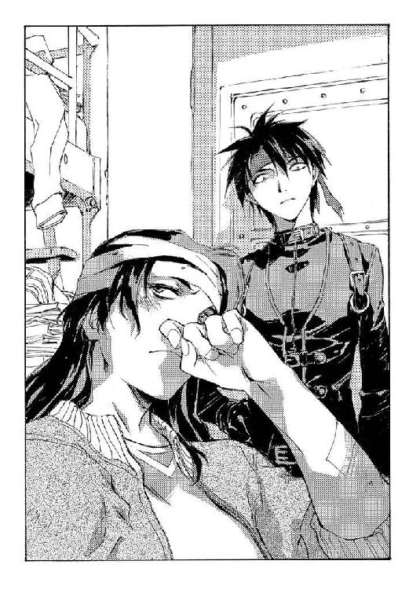
用向きを訊ねてくる。彼女が見えにくい位置で拳を握っていることは無視して、オーフェンはつぶやいた。
「俺には確信がない。君にそれがあるかどうか聞きたくてな」
「確信？」
「昨日のことさ。昨日のこと、なにもかも......出来事だけは頭の中に入っていても、どれもこれもあやふやではっきりしない」
一気に告げて、彼女の反応を待つ。
沈黙をはさむと、自分の言ったことこそあやふやで意味不明だということが分かってきた──自分で気づいたというより、聞き手の表情を見てそう思えたということだが。オーフェンは咳払いして、言い直した。
「あれが領主だったという確信はあるか？」
「なにを言ってるんだい？」
やはり理解しない彼女に、やつあたりだと承知しつつも口調を尖らせてオーフェンはあとを続けた。
「昨日だ。領主の部屋で、死んでいる領主を見ただろう。君が叫んで、あの黒い服の男に突っ込んでいったから、俺もあの死体が領主だと思った」
暗い執務室──
倒れている死体──
月明かりの窓。そしてそこにシルエットを映す黒い服の男。
それらを記憶の中に反芻して、オーフェンはまぶたを半分下ろした。彼女に聞く。
「あれが領主の死体だったと、今でも断言できるか？」
彼女は、あっさりと即答してきた。
「しないさ」
「......なぜ」
こともなげな彼女の口調に、多少の驚きを隠せずつぶやく。彼女はそのまま、同じことを繰り返してきた。
「逆のことなら断言できるよ」
「だから、なぜ」
「なぜって」
今度こそ、ウィノナはこちらをとんでもない馬鹿者だと評価を下したようだった──哀れむように目つきを和らげると、言葉までゆっくり言ってくる。
「領主様は生きておられる。あたしの見間違いだったんだろうさ」
それは、正論といえば正論だった。反論することも馬鹿馬鹿しいほどの。実際、自分も同じことを考えていたのだから──あれはトリックなのだろうと。
それでも疑わしく、オーフェンは訊ねた。
「見間違いで殺し屋に突進したあげく、窓から放り投げられたってのか？」
「あの時は勘違いしちまったんだから仕方ない。あたしの浅慮だったんだよ。落ち着いて考えてみればだ、領主様が、あんな無様な殺され方をするわけがないじゃないさ？」
彼女はあくまで、確信たっぷりだった。座っているスツール──彼女が身動きするたびにがたがたと音を立てるそれの上で身体をわずかに揺らしながら、
「あたしの鍛錬が足りなかったんだ......領主様はお許しくださったけどね」
（正気で言ってるのか？）
声には出さずに聞き返して、オーフェンは顔をしかめた。だが、
（いや、彼女のほうが正しい......か？）
死人が生き返ったと騒いでいる自分のほうが、どうかしているのかもしれない。それについては自信を持てなかった。
こちらを見ている派遣警察官の目を見つめ返す。彼女の瞳には曇りもなく、迷いも戸惑いもない。ただひとつの重要な確信を持っている。
自分はそれをうらやんでいるのか──居心地の悪さは首筋をかくことでごまかして、オーフェンはそれでも消すことのできない疑問を口にした。どうしたところで、領主の行動には理解できない部分が残っている。
「なんの意味があるんだ」
「なにって？」
また同じように聞き返してくるウィノナに、オーフェンは告げた。
「殺されたふりなんていうトリックが使えるんなら、領主が一番奥にいる意味がどこにあるんだ。真っ先に殺されていれば──一番最初に殺されたふりをしてみせれば、部下は誰ひとりとして死なせずに済んだだろう」
そしてまた、彼女からもたらされたのは迷わない即答だった。
「馬鹿かい？ 真っ先に殺される場所に領主様がいたら、相手が疑うじゃないさ」
「だったら最後から二番目でも三番目でもいい。なんでよりによって、部下を全員殺された後でなければ辿り着けない場所に隠れてたんだ。それじゃあわざわざ──」
生け贄を多くして、事態を大きくするようなものだ。
言いかけた言葉が喉の奥にあるうちに、彼女の言ったことがこちらを遮った。
「天意さ」
「............？」
吐けなかった息を声にせず逃しながら、オーフェンは視線だけで問い返した。彼女は腰掛けている椅子を音を立てて引きずり、座る位置を変えた。そして、
「領主様がこうと思ったことなら、それは天意なのさ。騎士がそれに従えなかったら、領主様はどうやって物事を治める？」
答えでもなんでもない。オーフェンは、歯がみしてうめいた。
「そんなことは、イールギットにはまったく無関係だった」
「そいつは領主様を殺すために入り込んできた暗殺者だろ」
「彼女は違った」
告げる。だが。
いくら言ったところで、ウィノナは退かなかった──肩をすくめて、あたりを示す。彼女がなにを指さしたのか、一瞬分からなかったが、しばらくしてオーフェンは理解した。本来なら、この部屋で寝起きしていたはずの仲間が使っていた、空きのベッド。彼女の示さんとしているものは明白だった。昨夜死んだのはひとりだけではない。
彼女はベッドの隙間──居心地よく眠るのには不十分としか思えないその空間を順々に見やってから、言ってきた。
「それを見分けることをあたしたちに要求するのは筋違いさね？ いいかい、あの女は紛れもない《十三使徒》で、暗殺者を仲間として、許可なく領地に入ってきた。それに、領主様がおっしゃっていたよ──《十三使徒》を殺したのはあの黒服のドッペル・イクスだってね」
認めたくはなかったが、その言い分は正当なものと言わざるを得なかった。聞こえよがしに鼻で笑い、オーフェンは彼女に指先を向けた。
「君自身も死にかけたんだぞ」
「ヤバいとこだったよ。でも領主様は報いてくださった」
「報いた？ 今のご大層な表敬訪問がか？」
「茶化して欲しくないね。領主様が死んで、あたしが生き残っていた──それが最悪の事態だとするなら」
と、自分の胸に手を当てて、彼女は陶酔するように瞳を潤ませた。
「あたしがなんとか生き延びて、領主様もご無事だった。こいつは最高のことさね。あたしは報われてる」
「そのために何十人も──」
なおも食い下がろうとすると、ウィノナの表情が一変した。椅子を蹴って立ち上がり、腕を真横に振って叫んでくる。
「くどいよ！ あたしたちは戦争やってるんだ！ 犠牲なんて覚悟のうえなんだよ！」
「なら次は死ねよ。あの黒い服の男がもう一度来たら。そんなものが戦争だっていうのならな。ガキの喧嘩だ」
間をおかず、オーフェンはそう告げた。
ウィノナの体重から解放されたスツールが、床に倒れる音が響いた。その物音にすべてを奪われたかのように、場が静まり返る。
やがて、彼女が小さくつぶやいた......不敵な視線をこちらに投げて。
「来ないさ」
「ん？」
理解できなかったのは彼女のつぶやきそのものではなく、自信に満ちたその眼差しだった。でまかせやはったりではないその表情を変えないまま、その非公式騎士は先を続けてきた。
「どうして来るんだよ......考えてもみな。奴らは、領主様が死んだと思ってるんだ。少なくとも、しばらくは来ない」
「そう長くは保たないさ。聖域はネットワークを使える。ごまかせるとして、ほんの数日だろう。数時間かもしれない」
オーフェンは口早に告げた。だがそれこそ待ち受けていたように、ウィノナがさらに眼の光を強める。
「だったら今度は、あたしがそいつを仕留めれば済むことさね」
彼女が真剣にそれを言っていることを察して──
なにも言わず、オーフェンは部屋をあとにした。呆れたわけではなかったが、語るべき言葉を思いつけなかった。逃げるような心地で早足になる。
（ほんの数日。ほんの数時間、か......）
ウィノナの罵声が追いかけてくるかと思っていたのだが、背後からはなにも聞こえてこなかった。だが彼も、既に彼女を意識してはいなかった──通路をあともどりしながら、考えていたのは違う人物のことだった。
（また来るのは、あの男......か？ 聖服の男）
もう残っていないはずの傷が、また一度痛みをぶり返した。
第三章 虚像の敵
目の前に、あの黒い服の男がいる。黒いフェルト製の帽子の下から、ぬるりとした鱗のような眼でこちらを見ている。
月が出ている。窓の外から青い明かりが差してきている。嵐雲のような暗い夜空。だが雨音のノイズを期待しても、静寂の綿が耳を覆ってなにも聞こえない。指先にまとわりつくのは、刺々しく冷えた空気。氷の池で溺れるように、その中をかき分ける。
その男は太い肩をこちらに向けて、構えを取っている。オーフェンは対峙しながら同じ構えを取った。相手は動かない。こちらも動かない。呼吸を整え、互いに相手を待っている。
ブーツの中で、足の指の位置を変える。体重の分配をミリ単位で調節しながら、最善の場所を探す。自然と、体勢は低くなっていった。筋肉によって骨を引き絞るのは、弓のそれに似ている。
呼吸を練る。それを吐き出すタイミングを求めて、視線が巡った。
敵の技は見切っている。
崩しの拳──そう言っていた。最小の動きで最大の威力を発揮する打撃法を、聖服の男はそう呼んでいたようだった。その発想自体は、およそ一般的なものに過ぎなかった。拳の技術論には必ず登場するものだと言っていい。それは基礎であり、究極の技でもあった。最高の理想は、まったく動かずに致命的な破壊力を導き出すこと。一歩も動かず触れすらもせず、敵を吹き飛ばし勝利する。だがそれは究極の空想であり、駄法螺だった。
だから現実の技術は、その空想の一歩手前、いや何千歩も手前で完成を見せる。オーフェンは拳を固めて、それをイメージした。彼が身につけた打撃法──寸打もその一種ではある。敵に密着し、その状態から打撃タイミングを導き出す。全身の力を数センチ距離の打撃に注ぎ込んで、カウンターの要領で敵の内蔵にダメージを直撃させる。それは命中すれば、一撃で敵を無力化することもできた。
そう。拳によって一撃で相手を倒すことはできる。
が。
眼前の男を見据えて、オーフェンは疑問を浮かべた。
（そのたった一撃で、頭蓋骨を砕く、全身を粉々に吹き飛ばす、四肢を両断する......この男の破壊力は人間としておかしい）
あり得ないことだった。仮に筋力と修練がそれを可能にしたとして、体格がついてこられるはずがない。頭蓋骨を砕けば、それよりも柔らかい拳もまた砕けるのだ。
（なにか秘密があるはずなんだ......魔術か？）
超人の特権たる、魔術。
人間の魔術では不可能でも、たとえば天人種族の魔術文字ならば隠して携帯できる。男が聖域の寄越した殺し屋であれば、魔術の武器を持っていたとして不自然なことではない。実際、ライアン・スプーンは都市を潰すほどの武器を持ち歩いていた。
踏み出す。その踏み込みだけで力尽きても構わない思いで、オーフェンは全身を跳ねさせた。跳躍が距離を縮め、一瞬地面から離れた足が再び地面に吸い付くと同時、相手の急所に拳を突き込む。男は動かなかった。表情を変えることもないまま、イメージの中からその姿を消した......
館の裏手にある木の陰で、オーフェンは拳を突き出した格好のまま、ため息をついた。イメージトレーニングを試みようとしても、敵の技の正体が知れなければなにも考えられない。
見上げると、太陽の位置は最も高いところからわずかに傾いていた。風は肌寒い。秋風は、噴き出した汗を冷やすだけだった。
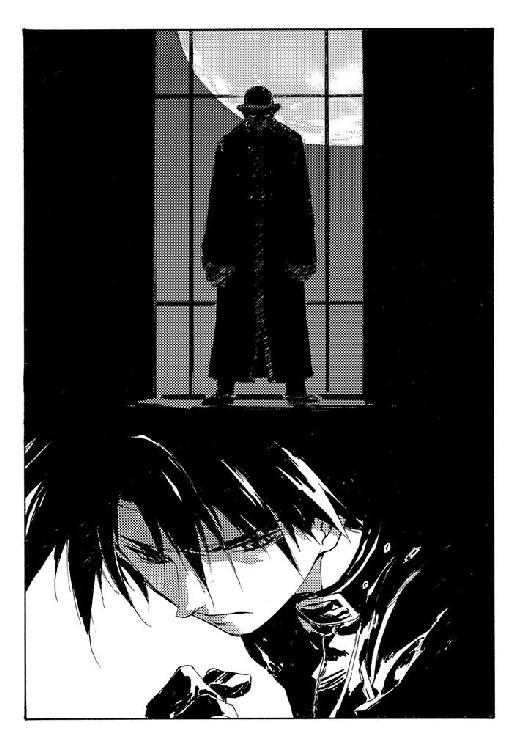
（ティッシなら......あの男を倒せるか？）
想像の中に再びあの男の姿を再現しながら、訊ねる。彼女の技と身体能力ならば、聖服の男の攻撃をかわすことは可能か？
無理だろう──結論はすんなりと胸を通過した。技術も体力も上回る相手に、レティシャはなにもできない。正攻法で戦う限り、あの男には勝てない。
（コルゴンは？）
彼ならば、どんな手を使うだろうか。およそ正攻法には縁のない男だ。敵のタイミングを外し、敵の予期せぬ致命打を放つ。それならば、すくなくとも勝率が零になることはない。もっとも──
（......あの男も、同じレベルの奇襲で対抗してくる......だろうな）
実際には、同じレベルということもあるまいと思えた。聖服の男のたたずまい、言動を思い出してうめく。つまるところあの男は、ひたすらに無手の技を練ってきた拳法家なのだ。少なくともそれに関しては、こちらより頭ひとつ上だと考えざるを得ない。
頭ひとつ上──
その言葉につられて浮かんできた顔があった。つぶやく。
（先生なら......チャイルドマン・パウダーフィールドなら？）
いや。
思い直す。オーフェンはかぶりを振った。聖服の男に勝つ方法ならあるのだ──考えるまでもなく。なんの苦もなく勝てる方法はある。魔術を使えば、それで勝てる。魔術を使って戦える状況さえ用意できれば、それで勝てる。
（問題は、相手もそれを分かってるってことか）
《十三使徒》の暗殺者すら為す術もなくあの男に敗れたことを考えれば、それは言うほど容易なことではないのだろう。だが最も成算は高い。
そして、もうひとつ──
腿のホルスターに収められた拳銃に軽く触れて、オーフェンは嘆息した。分解整備をしておいたほうが良いかもしれない。場合によっては必要となる。
（魔術でも、技でも倒せない相手を無効化する武器......か）
グリップに指を巻き付けて、軽い金属製の拳銃を引き抜いた。革製のホルスターから、鯉口のように銃をひねるだけで抜き取ることができる。
〝ヘイルストーム〟
それは、そう名付けられていた。銃匠の虚栄心か、ちょっとした遊びだろう。刻みつけられた銘は、はっきりと読める。出所を示すような刻印はない。これは《牙の塔》が極秘に研究した武器だった。従来の拳銃とは一線を画したコンセプトを持った最新兵器。騎士のように左手ではなく、右手で保持する。
右手で持ち上げ、そのグリップに左手を添えるのが正規のポジションだった。できる限り自然な体勢で構えることが望ましい。腕一本だけでは、命中精度を得られるようなバランスは保てないのが人間の身体だ──銃、右肩、左肩の三点でようやく安定する。利き目に合わせて照準を取るための構えである。
従来の騎士用拳銃とこのヘイルストームは、ちょうど、弓とボウガンのような関係といえた。つまり、数メートルという長距離から狙って当てることを可能にしたのである。命中率は旧式拳銃とは比較にならない。発射構造の中で螺旋状の回転を与えられた弾丸は、かなり直進に近い軌道で飛行する。弾丸の回転は、貫通力と殺傷力の増加というおまけももたらした。つまりこの拳銃を使用すれば、離れた距離から有無を言わさず敵を仕留めることができる。
命中精度や威力という点では魔力に及ばなくとも、高度な精神集中と構成の展開、そして呪文の発生という難解な手順を踏まなければならない魔術とは違って、拳銃は訓練次第では一秒に満たない時間で照準、射撃をこなすことができる。《牙の塔》がこれを危険視して極秘のものとしたのは、拳銃による狙撃術が本格的に実用化した場合、それへの対抗手段がなかったからだった。
実際にはもちろん、問題も残っていた──この最新式の戦闘機械はあまりにも構造が複雑過ぎた。生産が極めて難しく、コストも莫大なものとなる。機械的な故障の多さは言うにおよばず、整備も簡便なものとは言えない。連続で射撃すれば衝撃で機巧が歪み、照準が狂う。そもそも狙撃術はどれほどの訓練をしたところで完璧なものにはなりにくい。距離をおけば、やはり命中精度は下がるのだ。ましてや動く標的に弾丸を命中させることは至難である。そして、動かない標的などいない。
（技術屋が考える欠点は、そんなところなんだろうけどな）
拳銃を再びホルスターにもどして、オーフェンは独りごちた。恐らく、発明者たちが思いもしなかったような問題点が、この武器にはある。
（手加減ができない武器だ。標的を殺さずに済むかどうか、運頼みしかない）
つぶやきながら、視線を上げる。
当てずっぽうではあったが、顔を向けた方向にはフェンリルの森が──そしてドラゴン種族の聖域があるはずだった。
と。
かの地よりも遥か手前、というよりほとんど眼前に、少女が立っていた。屋敷から出てきて、こちらに向かってくるところだったのだろう。彼が視線を向けたので、そこで足を止めている。
「クリーオウ」
金髪の少女の名前を、オーフェンはつぶやいた。呼びかけたつもりだった。が、相手の耳にとどいたかどうか、自信はない。彼女は屋敷のほうを指さして口を開いた。
「食事。用意できたって領主様が」
それだけを言うと、さっさと背を向けて立ち去っていった。
「......ああ。分かった」
彼女が聞こえない距離まで離れてから返事したのは、特にわざとというわけではなかった。
食堂には昼食が並べられていた。コーンスープとパン程度の簡単なものだが、出来合いのものを持ち出しただけでないことはテーブルクロスの上に広がる芳香で知れる。屋敷を歩き回っている時には気づかなかったが、厨房でまともに調理されたものらしい。テーブルには、この領内で生き残っている人数より多くの椅子が用意されている。だが食事は人数分だった。
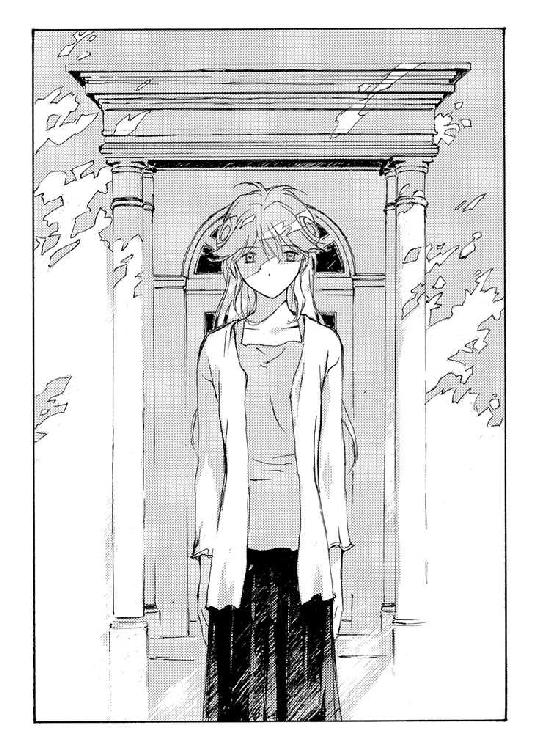
長いテーブルの上には花まで活けてある。最も遠い席──ホストの位置に、領主がいた。こちらを見るでもなく、口元に薄い笑みを張り付けてじっとしている。その両脇に、真新しい服に着替えたふたりがいた。クリーオウと、マジク。表情からはなにも察しようのない涼しい顔で、やはりどこを見るでもなく神妙にしていた。
そこから、やや離れてロッテーシャ。
ダミアンとウィノナの席はないようだった。
「......誰が作ったんだ？」
残っている席──誰が配置したものかは知らないが、領主の向かいとなる、最も入り口に近い席につきながら、オーフェンはつぶやいた。屋敷には、使用人も残ってはいないはずだった。まさか、領主が手ずからパンを焼いたわけでもあるまいが。
わざわざ聞いてみたのは、マジクが焼いたのかもしれないと思ったからだった。が、返事はなかった。ロッテーシャが気遣わしげな視線をこちらに投げてきている。もうひとり、顔の向きを変えたのは領主だった。
その領主が答えるか、と思った刹那だった。声は別方向から聞こえてきた。
「わたしだ、と言ったら驚くか？」
振り向くと、入り口から音もなく入ってきたのはダミアン・ルーウだった。オーフェンはさほど興味なく、椅子に座った。
「あんたの分を作り忘れてるようだぜ？」
「わたしの分？ わたしに必要なのは、もう少し違うものだよ」
ダミアンは笑いを含んだ声でそう言うと、その入り口から一歩入ったところで立ち止まったようだった。つまりは、彼の背後に。そこで食事を見物するつもりらしい。
と、オーフェンは聞きとがめた。
「......あんたが作った？」
振り向いて、うめく。と、ダミアンは気楽な様子で答えてきた。
「君は〝ゴースト〟現象に詳しいようだったが」
「死んだ使用人のゴーストを使って、作らせた？」
「そういうことだ。食物に罪はない。嫌がらずに食べて欲しいものだな」
反論することに意味はないと思えた。ついでに実際、空腹でもある──オーフェンはおとなしく食事に向かい合い、そして改めて全員を見回した。
全員、こちらを見ている。領主、クリーオウ、マジクの視線がすべて同じものに見えるのはどうしてか。皮肉をこめて、オーフェンは領主に尖った笑みを投げ返した。
ロッテーシャはひとり離れた場所に座っている心細さからか、落ち着かない様子でテーブルクロスの端を丸めては伸ばしている。ちらりと足下をのぞくと、彼女はこんな場所にまで剣を持ち込んできているようだった──もっとも、戦闘服のままの自分に言えたことではないが。ダミアンは動かない。
口火を切ったのは、領主だった。
「みなが信じるものがなにか、それは知らない」
と、祈る仕草で手を動かしてから、優しく言い添える。
「わたしが信じるもののために、この食事がある。君たちの信じるもののために、この食事がある。すべて等しく感謝してそれぞれの流儀で食する」
そこまで聞いてからオーフェンは、ようやくそれが食前の祈りの言葉だったと気づいた。ぽかんとしている間に、さらに唖然とすることが起こる。クリーオウとマジクが、静かに唱和したのだ。
「感謝します」
（......なんなんだ、いったい）
あとは無言のまま、食事は進んだ。オーフェンもスープにひたしたパンを二個ほど胃に収めると、ほかの誰も食べ終わらないうちに席を立った。
不作法に驚いたのは、ロッテーシャくらいなものだった──領主も誰も、顔を上げすらしない。が、振り向くとダミアンが先ほどから位置を変えずにそこにいた。道をふさぐように。
「せっかちだな」
白魔術士の声に、非難の響きはなかった。オーフェンはダミアンの丸い瞳を見たまま嘘をついた。
「あと少しで悟りが開けそうでね。俺があの聖服の男を倒せるようにならないと、あんたも困るんだろう？」
「ジャック・フリズビー。余人には〝悪霊〟と呼ばれている」
言ってきたのは──
ダミアンではなく背後からの声だった。よく通る、はっきりとした肉声。大げさな抑揚もないが、か細さを感じるわけでもない。
肩越しに振り向いた。遠くテーブルの向こうにいる人物に視線を注ぐ。
ごく一般的な天候の話でもしているように、領主はあとを続けた。
「言うまでもないだろうが、職業的な暗殺者だよ。ドッペル・イクスとしての活動は昨日が初めてのことだ」
「随分と確信たっぷりに言うんだな。相手が名乗ったわけでもなさそうだが」
「もちろんわたしが調べたわけではない。ダミアンは実に手早く調べものをしてくれる。そしてそれを、わたしの手柄のようにしてくれる」
領主は食事を終えていたが席を立つつもりはないようだった。穏やかな態度を崩さないまま、こちらを見返してきている。
「ジャック・フリズビーは強力な暗殺者だ。わたしも危うく殺されるところだった。わたしの不手際で大勢の犠牲が出たことについては、悔やんでも悔やみきれるものではない」
「クリーオウ」
オーフェンは話している相手を無視して、その傍らにいる少女に向き直った。彼女は聞いているのかいないのか、黙々とパンをちぎっては口に運んでいる。
その横顔に、彼は続けた。
「レキはどうしたんだ？ ここから随分離れた場所で、ロッテーシャがレキを見たと言っていた。レキは、フェンリルの森に向かっているようだった」
彼女はこちらを向いた。口を開きかけたが──途中でやめてまた視線をそらした。
もとより返答を期待していたわけではない。オーフェンはそのままマジクのほうを向くと、
「マジク。昨日はどこにいたんだ？」
金髪の少年はパンにもスープにも手をつけず、ずっと顔を伏せていた。足の間に手を挟んで動こうともしない。
オーフェンは嘆息した。
「答えられねぇよな。精神支配されてたんじゃ」
がたん──
と、音を立てて立ち上がったのはロッテーシャだった。剣を引きずるようにして椅子から下がる。彼女は警戒じみた視線をこちらに投げてきている。なにかを言いたげではあったが、構わずにオーフェンは続けた。
「はっきりしたな。お前たちは敵だ」
領主を見つめながら、殺気は背後のダミアンへと集めている。ダミアンは強大な敵には違いない。正面の領主が何者かは分からないが、少なくとも風体からは戦闘訓練などを受けた様子はうかがえなかった。それを人質に取った形になる。
（......こいつが影武者だか替え玉だか、偽者でなければの話だけどな）
胸中で付け加えて、オーフェンはいつでも魔術を放てるよう意識の裏に構成を思い浮かべた。
「オーフェンさん」
呼びかけてきたロッテーシャを手で制して、オーフェンは敵の反応に意識を集中した。領主を見つめる目つきをさらに厳しいものにして続ける。
「なにを考えている？ お前らの行動は怪しいところだらけだ。顔合わせひとつ、含みなしにはできないんじゃねぇか。いったい──」
「精神支配？」
とは、領主のつぶやきだった。苦笑のひとつも浮かべてはいない。真顔で領主なる男は聞き返してきた。
「どういう意味かね？」
「どうもこうも──」
「オーフェンさん！」
ロッテーシャが、さらに強く叫んでくる。横やりに腹を立てて彼女を見やると、ロッテーシャは渋い表情で言葉を吐いた。
「わたし、言われた通りにふたりに会って話をしたんです。そしたら......」
と、クリーオウのほうへと向き直り、かぶりを振る。
「違うんです」
「いつもと違うんだろ？ 見れば分かる」
どうでもいいことを繰り返す彼女に苛立ちながら、オーフェンは告げた。が、ロッテーシャはさらにはげしく首を振ってみせた。
「そうじゃなくて、違うんです！」
ロッテーシャの叫びに促されるように、クリーオウが席を立った。
見たくもなかった──親しい友人が精神支配されているのは思った以上に自分を動揺させる──が、無視するわけにもいかずオーフェンはそのクリーオウの視線を受け止めた。彼女は胸のあたりを押さえて、弱々しく言ってきた。
「あの......オーフェン。ごめんね。でもわたし、話しにくくて」
「小細工をするな！」
クリーオウにではなく、ダミアンへ叫ぶ。白魔術士はもう背後にいなかった。注意していたつもりだったのだが、いつの間にか消えている。
すっと、なんの前触れもなくダミアンは領主の横へと移動していた。対決の兆候を感じて守るべき対象のもとへと移ったということか。
（上等だ......）
オーフェンはまとめかけていた構成を別のものにした──あまり強力な魔術を放てばクリーオウらも傷つきかねない。精神支配されているということはマジクが敵に回ることも考えられた。それが脅威というわけではないにせよ、ただでさえ厄介な敵を前にして傷つけることのできない敵がもうひとり増えるのは面倒なことには違いない。
ロッテーシャがどの程度あてにできるのか。それを意識しかけたが、すぐにやめた。次になにをするのか分からないところはクリーオウと同じだが、ロッテーシャの場合にはそれが致命的なことにしかならないと思える。おまけに、魔剣の効果がプラスになるのかマイナスになるのか分からない。
考える時間も沈黙も長続きはしなかった。もうひとつ、椅子の脚が床にこすれる音がしたかと思うと、マジクが立ち上がっている。
「オーフェンさん、落ち着いて──」
（オーフェンさん？）
マジクの発した自分の呼び名が変わっている。そのことに怪訝な眼差しを投げると、マジクは慌てて言い直してきた。
「ああ、いや、そうじゃなくて......お師様......」
「............」
精神支配の副作用だとしても、それはお粗末だった──ことにダミアンのような白魔術士の仕業であるとするならば。なにかがおかしい。気づいてオーフェンは、改めてクリーオウを見やった。彼女は不安そうな表情を変えてはいない。心の底からこちらを気遣うように、今まで見たこともないほどの愁眉を見せている。
（なんだ......？ 俺は間違っている......？）
クリーオウが口を開いた。長い金髪が揺れたのは、彼女が肩を落としたからだった。
「オーフェン......わたしね。この領主様と話をしたの」
「それで？」
言いようのない不安が胸に広がるのを感じて、オーフェンは顔をしかめた。クリーオウが嘆息するのが見えた。やるせなく、力無く。
「領主様が、わたしと取引しようって」
「取引......」
愚かしく相手の言葉を繰り返しながらオーフェンは、領主の顔をにらみつけた。当の本人は涼しく裏表のない──ように見える──澄まし顔で座っている。置かれた食器の前で行儀良く、恥じるところなどないがごとく。
クリーオウは言葉を詰まらせていたが、かすれ声とともにあとを続けてきた。
「わたしの間違いを直してくれるって」
「間違い？ 直す？」
これはわざと繰り返した。クリーオウがうなずいてみせる。
「あの......正確にはね、領主様はレキと取引をしたの。だからレキがいないの」
「なにを取引したんだ？」
彼女に話させておくといつまでも要点にたどり着かないのはいつものことだが、それにしてもいつになく歯切れの悪いクリーオウを、オーフェンは促した。不安は胸に広がるだけではなく、身体の外まで膨張して今は部屋中を押し包んでいるようにも思えてくる。
その重々しい空気の中に、少女の声は聞き取れないほど小さく響いた。
「ライアンが死んだことを......なかったことにしてくれるって」
「......はっ」
長引きそうだった沈黙に押しつぶされる前に、オーフェンは嘲笑をあげた。
「生き返らせるってのか？」
今度もまたクリーオウにではなく領主に向けて嘲る。不安は瞬時にどうしようもないむかつきに化けた。
だが、領主はたたずまいを崩すことなく否定してきた。
「まさか。ただ、彼女に贖罪の機会を用意してあげようと言ったのだ」
「贖罪だと？」
「ライアン・キルマークドをドッペル・イクスとしてあのような魔道に陥れた者たちを、放ってはおけないだろう？」
もう一度、椅子が鳴った──が、残ったひとりである領主が立ち上がったというわけではない。クリーオウが椅子の背にもたれながらくずおれるのを見て、オーフェンは息を詰まらせた。彼女は質素な木の背もたれに爪を立てて、金切り声をあげた。
「わたし！......わたし、もうレキに頼ったりしないって......レキにつらいことさせないって思ってたのに。でも、レキは行っちゃった......止めたけど行っちゃった。多分、わたしが心の底でそう望んだのが伝わっちゃったのよ！」
「クリーオウ──」
呼びかけてオーフェンは、一歩を踏みだそうとした。が、それよりも早くロッテーシャがクリーオウのもとに駆け寄って肩に手をかける。近寄りそこねた彼の前で、クリーオウはすがるようにロッテーシャの手に腕を回した。ロッテーシャが、非難するようにこちらをにらみつけてくる。
後ろ暗く息を呑んで、オーフェンはマジクへと視線を移した。彼のほうは取り乱してはいなかった。ただ丸い瞳に似つかわしくない暗い影を落としていた。
「......ぼくは、お師様のところでこれ以上練習しても、もう上達はしないでしょう？」
「なんだって？」
素っ頓狂なことを言い出した生徒に、仰天してうめく。マジクはそのまま、あとを続けた。
「お師様は、もう十分だって言ったじゃないですか。でもぼくは結局それでも役立たずで──」
「マジク」
「彼は、とても優れた魔術士だとわたしには感じられた。才能がある。時間をかけて訓練すればユイスのような使い手になれる」
落ち着いた様子で口を挟む領主に、オーフェンは叫んだ。
「なれない！」
コルゴンは特殊な魔術士だった。才能ひとつでは手に入れることのできない力と、そしてなにより、余人には追求しても追いつかない決定的な強さを持った魔術士だった。その秘密がなんなのか誰も知らない。が、オーフェンにもかろうじて理解できると思える事柄がひとつだけあった──
（あれは取捨選択の強さだ。不必要ななにかを捨てて必要なものを得る。その見切りだ。他人を殺して自分を生かす。そんなもの手に入れられるわけがない。マジクに......）
だがそれを説明しようと思うと言葉が見つからなかった。口ごもっているうちにマジクと目が合う。生徒の表情に浮かんだものを見て、オーフェンは自分のミスを悟った。大きくしくじった。悟った時にはもう遅い、そういった類の失態。
はっきりと失望の色を目に浮かべて、マジクが言ってくる。
「お師様の教えてくれたことが無駄だったなんて思いません。でも、ぼくはお師様のようにはなれないから......」
「それで、なにになるってんだ。領主の兵隊か？」
正面にいる男を指さして、オーフェンは罵り声をあげた。
「そいつはもうすぐ死ぬんだ！ 聖域が──」
「ジャック・フリズビーなら、君が防いでくれるのだろう？」
面白がるように言ってきたのは、ダミアンだった。オーフェンは皮肉を返す余裕もなく即答した。
「お前らを守るためにやるわけじゃない。それに、それを防いだからなんだっていうんだ!?」
テーブルを蹴飛ばし、オーフェンはさらに声を荒らげた。
「お前たちのやっていることはただの小細工だ。ドラゴン種族が本気になったら手も足も出ないくせに、こそこそ隠れて相手を挑発してるだけだ。お前たちは負ける喧嘩をやっているんだ！ なら他人を巻き込むな！」
「わたしがあのディープ・ドラゴンに、どのような取引を申し出たと思うね？」
「対等な取引とやらか。いよいよもって怪しいもんだけどな」
告げる。が、領主は皮肉だけ聞こえなかったように無視すると、さらに落ち着いた声音で言ってきた。ロッテーシャに取りすがって泣いているクリーオウの背中に、ほんの一瞥だけ投げかけて、
「君の言う小細工ではある。それは認める。だがわたしはこの戦争に勝つつもりでいるのだよ。犠牲は避けられない。それも認める。」
と、遠くを見やるように目を細めてみせた。
「勝たなければならないのだ。聖域が今、なにを考えているのか......三百年間のきわどい安定を経て訪れた破局的な変化に際して、どんな計画が始まるか。わたしはそれを予見していた。だからわたしは、今日まで戦ってきた」
「予言者だとでも言いたいのか」
「いや、せいぜいが予想屋だな。だがね、知っての通りドッペル・イクスには人間種族の者も含まれている。中には聖域を裏切る意志を持っている者もいた。わたしはそういった者とも接触した。そして、いずれ来るであろう大陸の再破局に対して、聖域がどういった対策を予定しているのかも推測できた」
領主は言葉をまったく切らずにあとを続けた。
「君はわたしが犠牲者を選別することを許さないのだろうが、わたしにも言い分はある。人間種族全体の問題として聖域と抗争するわけにはいかない......それではそれこそ人類の滅亡にもつながりかねない。だから少数の犠牲で戦うため、この最接近領がわたしに与えられたのだ。貴族連盟の指示で」
今さら気づいたが、先ほどテーブルを蹴飛ばした際、どのスープも中身をテーブルにこぼしていた──領主のそれも同様だった。彼はそれを押しのけると、唐突に思いがけない名前を口にした。
「チャイルドマン・パウダーフィールドも、聖域と戦うために君たちを鍛え上げた。そうではないかね？ 彼と共闘できれば良かったのだが......」
「............」
オーフェンは沈黙して、呼吸を整えた。魔術で戦う気は既に失せていた──そんなものは通用しない。はっきりとそれを理解する。ダミアン・ルーウが横に控えていることも問題ではない。領主に魔術士と戦うだけのスキルがあるかどうかも関係ない。
そこにいる敵には確信があった。望む限り存在し続ける意志と、そのための手段と。まさか、その意志が故に昨夜も死から蘇ったというわけではないだろうが......
「......あんたの信じるものってのはなんだ。最接近領の領主」
半眼で、オーフェンは訊ねた。感情はどれほど煮えたっていようと心は冷たかった。
思い出していたのは祈りの言葉だった。領主の唱えた祈り。
わたしが信じるもののために、この食事がある──
君たちの信じるもののために、この食事がある──
領主は堂々と答えてくる。
「そういえば、まだ名乗っていなかったかもしれない。アルマゲスト。尊大な名前と思うかもしれないが、わたしの名前だ。わたしが信じているのは」
と、あたりを示して、声を響かせる。
「人間と、その友人たち......そのためならば、命など惜しくはないと思っている」
「よくできた冗談だな」
話している相手の死に顔を思い出して、オーフェンはつぶやいた。
あとは静寂だった。クリーオウの低い嗚咽も収まって、泣き疲れた子供のように静かにしている。マジクはうつむき加減に立ち尽くすだけだった。ダミアンはもとより音を立てるような身体の構造をしていない。しごく真面目な面持ちの領主とにらみ合うだけで、オーフェンにも言葉を紡ぐ余裕がなかった。
そして、刹那。爆発が起こって屋敷に振動が走っても、ほんの半秒ほどはその沈黙は続いた。
第四章 虚像の庭
爆発は決して規模の小さいものではなかった──いや、屋敷が半壊したのではないかと思えるほどの衝撃と轟音が響いてきている。揺れる床に足を取られてオーフェンは、つまずきながら爆発の方向を探った。
「本館ではないな」
聞こえてきた領主のつぶやきを肯定するのはしゃくだったが、その通りのようだった。爆発は、館を直接破壊したものではない。外で起こったものだった。それも、かなり近い場所の。
（......この屋敷の近くにあって、破壊する価値のあるもの......）
考えるほどのことでもなく、オーフェンは閃いた。
（兵士宿舎か！）
ウィノナはまだそこにいるはずだった。ウィノナが爆発を起こしたというのでなければ、侵入者がまず生き残りの兵隊を狙ったということになる。
見ると既にダミアンは姿を消していた。領主は窓の外を気遣わしげに見つめている。その眼差しは、部下を案じているように見えた。
彼になにかを言われるより先に──助けを乞われれば拒絶せざるを得ないだろう──、オーフェンは食堂から飛び出した。玄関ロビーよりも厨房の勝手口から出るほうが早いと察して、そちらに向かう。外に出ると木立の向こう側に砂埃が立っているのが見えた。宿舎が炎上しているということはないようだが、かなり大きな被害を受けたらしい。
（ドッペル・イクスが......もう来たのか？）
オーフェンは息を呑んで、あたりの気配を探った。黒服の男のプレッシャーを思い出して肌がひりひりと反応するが、この手口はどう考えてもあの男のものではない。
（魔術か？ まるで誘い出すために、わざわざ大げさな騒ぎを起こしたみたいだ）
ウィノナひとりを狙うにしては破壊の規模が大きすぎた。魔術士ならば、もう少しうまい手もあったはずではある。
陽動の可能性もある。それを思いついて、オーフェンは出てきた屋敷へと振り返った。領主はともかく、クリーオウとマジクの守り手がいない。ロッテーシャにそれを期待するしかない。本来なら侵入者をダミアンに任せて自分が守るべきなのだろうが、本能がそれを拒んだ。あの白魔術士を信用するつもりなどさらさらなかった。
林を抜けるのに手間はない。視界に入ってきた宿舎は壊滅状態だった。さほど離れてもいない距離から粉砕されている。
見るとそこに人影があった。腕組みして、破壊された宿舎を眺めている。ダミアン・ルーウだった。
「......来たのか」
それが意外だとでも言いたげな口調ではある。白魔術士はこちらを見もせずに聞いてきた。
「どう思う？」
「単純に考えてドッペル・イクスの第二陣だろう」
「可能性は低い」
断言するダミアンに疑わしい視線を投げると、彼はすぐさまあとを続けてきた。
「だが、あり得ないとも言わない。彼らはまだ領主様のご無事を知らないはずだ。わたしがネットワークを封鎖している。とはいえもちろん不備ということは起こり得る」
「どっちなんだ」
「《十三使徒》の別働隊というのはどうだ？ この破壊跡には、黒魔術士による仕業の痕跡を感じる」
「それこそ可能性は低いだろう。プルートーは馬鹿じゃないんだ──少なくともなにを考えてるのか分からない聖域よりはな」
オーフェンは早口にまくし立てて、そして、ふと眉根を寄せた。
（じゃあ本当に......誰なんだ？）
白魔術士を見やると、ダミアンは静かにつぶやいたところだった。
「君はもどれ。これは陽動だ」
（なんだ？）
これにも違和感を覚えて、口を開く。
「あんたがもどればいいだろう──領主を守るのが役目なんじゃないのか？」
「探索ならば、わたしのほうが向いている」
ダミアンの言っていることにも態度にも、不自然な点を見出すことができたわけではない。が、オーフェンはダミアン自身に対するものとはさらに別の不信感を募らせながらなおも反駁を試みた。
「昨日は役立たずだったじゃねぇか」
「君もだろう」
「............」
沈黙したのは図星だったからではない──ということもなかったが。オーフェンは胸中で訝った。具体的な証拠はなにもないが、不可解なものが腹の中でねじれている。
（なんだ？......こいつ、急に余裕をなくしてないか？ なにを隠している？）
無論、ダミアンの外観に変化などない。
感じたものに根拠を与えられないまま、オーフェンは相手を見やった。ダミアンは自分をこの場から追い払おうとしている。
「ドッペル・イクスでも《十三使徒》でもないとすれば、じゃあ誰なんだ」
オーフェンが聞くと、白魔術士は即答した。
「そのどちらかである可能性が高い」
「さっきと言っていることが違うぞ」
「......わたしとて、意見を変えることはある」
「いい加減にしろ。お得意のネットワークで分からねぇのか」
勢い込んで詰め寄る。
ダミアンは、否定の仕草で言ってきた。
「現在、わたしは聖域から情報を隠蔽することに全精力を注いでいる状態だ。昨日以上に余力がない」
目をそらす、発汗する、息遣いが変わる──といった肉体的な変化を期待しながら白魔術士の返答を待ち受けていたのだが、もとよりそれを望むことが無駄であることも分かっていた。思い通りにならない苛立ちにほぞを噛んで、オーフェンはうめいた。
彼がさらに問いを投げるより先に、ダミアンは重ねて告げてきた。
「君はもどれ。状況は非常に危険だ。わたしはウィノナを見つけて、しかるのち侵入者を撃退する」
「............」
頭の中で、その申し出の妥当性を計算して──
オーフェンは答えないまま、駆け出した。屋敷に向かってではない。破壊された宿舎を迂回しつつ、庭園を探索するように走り出す。
制止してこなかったダミアンをあとに置いて、オーフェンは自分でも分からないものを探し始めた。
◆◇◆◇◆
走り去る黒魔術士を見送りながら、ダミアン・ルーウは自分の手のひらをその男の後背に重ねた。視界から隠したところでその存在が消えてなくなるわけではない。そもそも自分に視覚などないことを思い出して、苦笑する。人間らしい感覚。まだ肉を持って生きていた頃の余分な遺産。
胸に浮かぶはずのない不安感を覚えて、意志の力でそれをかき消す。面倒なことではあった。すべては昨夜のイレギュラーから起こった、ほんの些細な計算違いに過ぎない。だが綻びは大いに好ましくない。今は時期が微妙だった。
（あれだけ傷を受けて......もう力を回復させたというのか......天魔の魔女。いや、魔女たち......化け物めが）
間違いなかった。あの女どもが来たのだ。
レティシャ・マクレディのあの負傷をもう治癒させたというのならば、確かに天魔の魔女は彼に対抗しうる力を持っている可能性はある。正規の訓練も受けていないような白魔術士──奔放に我流で伸びただけの素人が、である。
この爆発は弟を誘い出すためのものだろう。鋼の後継は、すべての予定の中にあってはさほど重要な要素というわけではない。ことに、天魔の魔女が自力でアイルマンカー結界内に帰還しつつあるというのなら。魔女の弟の存在は、魔女に対する交渉材料以上の意味はなかった。魔女がはっきりとこちらと敵対する意志を見せた今、鋼の後継は取るに足らない存在に過ぎない。
それでも、会わせるわけにはいかなかった。
（聖域の手にかかって失われたユイスの穴を埋められるのは、あのキリランシェロしかいない......）
昨夜、魔女の存在を看破できずに取り逃がしたことの苦渋を思い起こし、ダミアンは手のひらを拳に固めた。領主の立てた計画はイレギュラーを見つけるたびに修正されていく。その修正速度は場合によっては時間の速度をも超える。自分はそれに従えば良い。領主にしかできないことと、彼にしかできないこと。その遂行に対して、天魔の魔女の横やりは唐突に致命的な破綻を突きつけてきた。
ダミアン・ルーウの抹殺という破綻を。
（ネットワークを使うことはできない......いまだ聖域は領主様の暗殺が成功したものと錯覚している。いや少なくとも成功するはずのないものが成功してしまって戸惑っている。わたしがネットワークの締め付けを緩めれば、必要以上に早く彼らの混乱を治めてしまうことになりかねない）
ネットワークを使用せず、決定力を持つ手駒のひとつもない状態で、一個の魔術士として敵と戦わなければならない。
襲撃者が天魔の魔女ならば領主に危険はない。守尾を留守にして全力を使うことを、領主も咎めはしないだろう。
（厳しい......が、まさか負けはせんよ。たかだか成り行きで精神体になったばかりの小娘ごときに）
拳をどけると、もうそこに黒魔術士の後ろ姿は残っていなかった。ダミアンは姿を消し、鋼の後継より先に敵を探し当てるべく、探索を開始した。
◆◇◆◇◆
破壊された建物があげる炎の音以外にはこれといって耳に入ってくるものもなく、庭園は静まり返っていた──物音らしい物音も声らしい声も聞こえてはこない。オーフェンは走りながら、そもそも自分がなにを探しているのか、それを探していた。
（......ドッペル・イクス？）
それが最も自然な推測だった。聖域からの刺客ならば、この最接近領に侵入して建物を破壊しておかしいことはない。
が、それならば逃げる必要もない。一気呵成に目的の領主まで攻め進めればいい。
（既に一回攻めてるんだから、こちらの戦力は分かってるはずなんだ。様子見することもない。昨日の時点でさえ、聖服の男は迷うことなく領主を狙った）
襲撃者がドッペル・イクスであることを完全に否定するほどの根拠でもないが、確かに腑に落ちないところではある。
（......《十三使徒》？）
それもあり得ないことではない。王都の魔人プルートーはたびたびこの地へ斥候を放っているとイールギットも言っていた。
だが、シーク・マリスクを失っているのだ。宮廷魔術士の人材も底なしではない。暗殺者シークは間違いなくトップクラスの魔術士だったはずだ──同じレベルの暗殺者をそう簡単に用意できるものでもない。
（暗殺目的でこの領内に人を放っていることを、貴族連盟に知られればまずいという話だった。立て続けにやれるもんでもないだろう。それに、いくらなんでも王都の連中がシークの失敗をもう知っているというのは変だ）
推測はここで途切れてしまう。襲撃者がそれ以外のなにかであるとすれば、いったいなんだというのか。
（ダミアン・ルーウは、この襲撃者と俺を会わせたくない......？）
先ほどの会話には、その感触があった。
これにも確たる根拠があったわけではない。ダミアンが彼に領主のもとにもどるように指示してきたことに、疑いようもない齟齬があったと言い切る自信もなかった。
それでもこれは、彼ら──領主と白魔術士の演出するこのすべての舞台に参加して初めて見いだした隙だった。初めて、彼らの指示を裏切り出し抜くことが可能な場面だった。この襲撃者に会う。
それで、少なくともダミアンが動揺するのならば。
結果なにが起こるのかは分からないが、いかさまのゲームから抜け出す手がかりになってくれる。
（だが──どこだ？ 誰なんだ？）
はやる気持ちを抑えながら、オーフェンは走る速度だけは上げていった。物陰を見つけるたびにその奥へ踏み込み、死角をひとつずつ潰していく。
やがて、突然に出くわしたのは長身の人影だった。
「うわっ！」
向こうにとってもまたいきなりだったのだろう──罵声に近い調子で叫んでくるのが聞こえた。左手の拳銃をこちらに向けることすらしてきた。
「ウィノナか」
オーフェンは敵意のないことを手を挙げて示すと、見つけた相手の名前を呼んだ。彼女もまた、大げさに息をついて言ってくる。
「なんだ......さっきの攻撃、あんたじゃないだろうね？」
「宿舎の爆発か？ いや、俺もあれを聞いて飛び出してきたんだ。無事だったのか」
聞くと、ウィノナはいったん疑わしげにこちらを眺めてから、その視線を外して肩をすくめてみせた。あたりを警戒しながら、
「なんか嫌な感じがしてね。ちょうど建物を出たところで呪文みたいな声が聞こえて、それで屋根ごとねぐらがぶっ飛んじまったのさ。気配を頼りに追いかけたけど、だいぶ前に見失っちまったよ。怪我で勘が鈍っちまったかね」
「呪文......じゃあ、魔術士か。それもドラゴン種族じゃないな」
確かめるように、オーフェンは訊ねた。彼女がうなずく。
「だろうね。聞き覚えのあるような声だったけど......あたしもぼーっとしててはっきりしなかった」
それがよほど悔しかったのか、ウィノナは左手の拳銃を余裕なく握り直した。ほかには武器らしい武器も持っていない。着ているものも部屋着だった。もっとも、最初に出会った際に着ていたものとそれほど差はないが。
彼女の緊張には気づかないふりをして、オーフェンは質問を続けた。
「ほかに、分かったことは？」
「なにもない。相手が手強いってことだけさね」
「ダミアンは、頼りにできないらしい」
それとなく告げる。彼女は鼻で笑ってみせた──軽くではなく盛大に。
「いつだってそうさ。特に大事な時には必ずね」
「ネットワークが使えないんだそうだ......君の言った通り領主の生存を聖域から隠すのに、力の大半を割いているらしい。あと、もうひとつ」
「うん？」
上の空といった様子であたりを見回すウィノナに、囁くように声を抑えてオーフェンはつぶやいた。
「断言はできないがダミアンはなにかを隠している。この襲撃者に対して、なにか含むところがあると見た」
「............」
「昨日、奴を排除したいと言っていたな？」
沈黙するウィノナの横顔を観察するのは、慎重にコインを積み重ねるような心地だった。賭け金は考えて決めなければならない。
相手の答えを待っていたが、彼女は無言のまま立ち去ろうとした──ように見えた。だが踏み出しかねて立ち止まり、振り返って小さく言ってくる。かすれるような小さな声音で。
「......時期が悪いさ。状況が変わっちまった。現状じゃ領主様の守り手はあたししかいない。領主様にはダミアンが必要だよ」
「当面は、ということか？」
「ひどく難しい話さね。たった一夜で、こんな......」
「また状況が変わるまでに、なにかの伏線くらい用意しておいたほうがいいだろう？」
口ごもる彼女に、オーフェンは告げた。
ウィノナが、ゆっくりと──本当にゆっくりと聞いてくる。
「あんた、なにを言いたいんだい？」
「自分でも分からない。だが、ものすごく重要なことかもしれない。取るに足らないことかもしれない」
「あたしになにをさせたい？」
問いかけてくる彼女の口調からは既に戸惑いが消えている。オーフェンは、うなずいて続けた。
「もし今、ダミアンがあんたに命令を出すとしたら、どんなことを言うと思う？」
「......侵入者を発見して抹殺しろ、てとこじゃない？」
「それに逆らえとは言わない。ただ、遂行する前に一呼吸おいて欲しい。飛びつく前によく考えるんだ。その侵入者が何者で、なにを目的としているのか」
「それで、なにが得られるのさ」
「分からないと言ったろ。襲撃者が単に領主の暗殺を目的としているのなら──手口を考えるとそうは思えないんだが──、君の好きにしていい。ただ、違う目的を持っているようならそれを確かめてくれ。ひょっとしたらダミアンを震え上がらせるようななにかを持っているかもしれない」
「あんた、まるで扇動家だね」
ウィノナは苦笑をひとつ残すと、今度こそ早足で去っていった。襲撃者を探して木々の間に消える。
彼女がはっきりとした返事をよこしてこなかったのは、ダミアンの聞き耳を警戒してのことかそれとも単に呆れたからか、それは判断しかねた。
いや──と、オーフェンは胸中でうなずいた。
（脈はあったな）
もとより、ウィノナが完全な協力者になってくれることを期待していたわけではない。彼自身が領主に対する態度を明確に決めない限りは、それは不可能だろう。それを考えれば彼女の返事は上等のものだった。そう考えて、満足しておく。
オーフェンもあたりを見回し、なんのヒントも与えてくれない沈黙の庭園を探ろうとした。扇動家とは、よくできた言い回しだった。自分はウィノナになにも与えていない。それで彼女を都合よく利用しようとしている。
（......まずは敵の姿を目の前に引きずり出すことだ。そうすれば戦える）
と言ったところで、はっきりした敵などというものは、この世にいないのだろう。たとえばウィノナにしてみれば、自分は敵だ──が、彼女は彼とは敵対できない。そう仕向けたのはほかでもない、彼女の周囲にいるすべての人間だ。領主、ダミアン、コルゴン、そして彼自身も。
だが考えてみれば、誰と誰に対しても同じようなことが言えるのだ。
それでも戦おうと思うのならば、敵かどうか分からないものをはっきり敵と決めつけなければならない。敵として存在してもいない虚像を、目の前に引っぱり出さなければならない。
（因業ってのは、こういうのを言うのかね）
余計な考え事で時間を無駄にしたことに自嘲して、オーフェンは再び駆け出した。
◆◇◆◇◆
領主様にはダミアンが必要だ。
それは自分の言ったことではあったのだが、いやらしいほどにしつこく彼女の胃を締め付けた。プライドではない──それほど安っぽくはないつもりだった──それを責めるのは、己の無力だった。
（まったく......余計な力を持っている連中ってのはみんな、領主様に災いしてばかりじゃないか！）
毒づいてウィノナは足を止めた。あがった呼吸を整えながら、汗で湿ったシャツの裾をめくって秋の冷気を入れる。それは一時的には心地よかったが、脂肪の少ない彼女の身体には毒であるとも分かっていた。
拳銃──ディーディーを構えて彼女は、木々の一本一本まで把握しているこの庭園の地図を思い浮かべた。侵入者は宿舎を破壊したのち、完璧に姿を消している。これは土地に不慣れな者の仕業だとは思えなかった。
もしくは、姿を消す能力を持っているかだ。ドラゴン種族と抗争していると、そんなことも気にしなければならない。ウィノナはうんざりと息を吐き出した。領主に仕えるために、自分はできるだけのことはすべてやってきたつもりだった。多くを望むつもりはないが、こんな時に敵を一網打尽にできるくらいの報いがあったとしても良さそうなものではないか？
（参ったね。弱気になってるよ）
彼女はつぶやくと、妄想を振り払った。
（生まれながらに人知を超えた力を持ってるような、惰弱な魔術士どもとは違うんだ......奴らは、あたしのようにはなれない。そうさ。楽な報酬は求めない）
毎日のトレーニング。加えて普段歩く際にも常に爪先立ちを意識してバランス感覚を養う。何度もヤスリで削って皮膚を硬くした拳は、今では木板を割っても血豆ひとつできない。それらの訓練は無論今でも欠かすことなく続いているうえ、繰り返される実戦で生死をさまようことにも慣れた。
ここが普通だ。ここにいないのは堕落した奴らだ──派遣警察官らの訓練標語を唱えて、彼女は笑みを浮かべた。あのサドの教官どもを何度殺してやろうと思ったことか。そしてふと、自分には本当に教官を殺せるだけの力と技があるのだと自覚した時、彼女は教官と抱き合って号泣した。同じく歓喜の涙を流してくれた、大恩あるそのサディストたちに初めて心から礼を言ったのち、彼女は派遣警察官になった。そして一年後、その地位と身元を抹消し非公式騎士になった。自分で自分の死亡届を作成しながら心にあったのは、ついにその場所に手をとどかせたという感慨だった。犬しか持ち物のなかったただの不良少女が、最接近領の領主に仕える真の騎士となった瞬間だった。
楽を求めることはない。魔術士は確かに生まれた瞬間からの超人なのかもしれない──が、代償に生まれながらの惰弱をも抱え込んでいるのだ。彼らを羨むことなどあってはならない。それは人の力の否定となる。
人間種族の完全な自治を求める領主に、最も必要なのは人の力であるはずだ。
魔術はその露払いに過ぎない。
（領主様だって......きっと分かっておられるさ）
そのことだけはなにがあろうと信じていた。疑ったこともない。
襲撃者が人間であるとして──つまり人間の魔術士であるとして、最も効果的な逃走経路はなんだろうかと、ウィノナは地図の上を想像でなぞった。屋敷は庭園の中央に位置している。庭園の造りそのものが、際だった要害だというわけではない。最接近領は十年もその存在を聖域から悟られずにドッペル・イクスと暗闘してきた。その隠れ蓑は主にダミアンによるネットワーク上の隠蔽工作による。制度上ではこの最接近領は騎士軍の末端にあった。無論、無名の組織として。最接近領はその存在を表沙汰にせず、聖域から直接の襲撃を受けずにいた。実際、聖域が最接近領の関与を知ったのはアーバンラマの一件からだろう。あの時にどうして情報が漏洩したのかはわからないが、それを知られた途端に組織は壊滅した。
黒魔術士に一理あることを認めざるを得なかった。圧倒的な戦力不足。量も質も。ウィノナは拳銃の重みを手で確かめた。この武器ではドラゴン種族を殺せない。
（まあ......考えても詮無いことさ）
今は一番近くの敵に集中する。
物思いとともに、敵の逃走経路にも見当がついていた。宿舎が破壊された時、敵は魔術がとどく範囲内にいた。これは間違いない。異変に気づいた自分はすぐに飛び出し、敵の位置を探った。その時、既に襲撃者は逃げていた。攻撃としてはお粗末なものだったと言うしかない。不意打ちして、ろくな戦果を出していないのだから。
（そのくせ、この逃げ足の速さはどうだろうね。それとも誘いをかけての罠？）
目の前の茂みをのぞき込んで、そこに誰もいないことを確認する。罠ならば、こちらが多少隙を見せてやれば逆に食いついてくる可能性はある。その時の敵の攻撃が、身体ごと蒸発させられるような怪光線でなければ──そして蒸発するのが自分の身体でなければ試してみたい賭けではあった。
（さて。それでも賭けなきゃならんかね？）
唇の周りを舌で撫でると、ひどく塩辛い。どれだけ覚悟を固めたつもりでも身体は緊張している。彼女は肩の力を抜いて拳銃を下ろした。後ろ腰のホルスターにディーディーを収めると、茂みに分け入るために、尖った庭木の枝の間に両手を差し込んだ。中を探るふりをして、背後を警戒する。
（来ない......あの黒魔術士より、あたしのほうが先行している。あたしのほうが敵に近い。自信がある）
敵の思考を読むために想像力を働かせる。ウィノナは襲撃者の意識をトレースした。敵地にあって敵に追われている。もし自分ならどうするか......
（各個撃破さ、もちろん）
確信たっぷりに彼女は念じた。
（ほら、あたしはひとりさ。しかもあんたにとっては一番与しやすい無力な兵士だよ。いかにも使い走りの筋肉馬鹿に見えるだろうが？ 大陸最高の暗殺技能者でもなければ、得体の知れない化け物でもない。さあ、足音を忍ばせて、そろそろ背後に回ってきていてもいい頃合いじゃないか？）
魔術による不意打ちはない。
そう信じることにした。魔術の威力は強大だが、音声魔術ならば無音で効果を発揮することができない。まさか各個撃破の初っ端から、ほかの敵に位置を知らせるような真似はすまい。
（こう言っちゃなんだけど、あんたチキンだよ。さっさと来な。いくら魔術士だって、あたしが十年鍛えた拳を顔面にぶち込まれたら生きてはいられないって証明すんのに協力しておくれよ......）
一撃必殺。それを心に決めて──
ふと、黒魔術士の言葉が脳裏をよぎった。敵を仕留める前に観察しろ？
（調子のいいことを言ってくれるよまったく。お気楽な魔術士らしい妄言さね。魔術士を相手に、あたしらが一拍置くってことがどんなことか分かってんのか？）
だが、それがもしダミアン・ルーウに対するなんらかの切り札になるというのなら、価値はある。
（成り行き次第さ）
彼女はうめきながら、植木の中にさらに腕を突っ込んだ。茂みの中の地面に触れて、柔らかい砂を一掴み握り取る。
刹那。
「ふぬぁっ！」
彼女の叫び声は、実際には鼻息に過ぎなかった──叫ぶような時間も余力もない。一瞬で振り返ると、手の中の砂を背後の気配へと叩きつける。彼女自身も昨日食らった不意打ちだった。当てずっぽうに砂を投げただけだが、相手が油断していたならば牽制にはなったはずである。
同時に身体を退いて腰を落とし、左手で拳銃を抜く。彼女の背後にいた人影は、期待していたほど接近してきていたわけではなかったらしい。砂をまいた場所より多少遠のいたところで、残像をわずかに置いて木立の奥に姿を消すのが見えた。
（早すぎた......！ ビビってたかね、あたしもっ！）
反省は手短にして、ウィノナは飛び出した。敵の姿を見ることはできなかったが、それでも漠然とした印象が網膜に残っている。全身を黒装束で覆っていた──これは魔術士には珍しいことではない。長い黒髪。そして、人間離れした俊敏な反応。
疑いなく一線級の暗殺技能者と思えた。敵も不意打ちに失敗したが、それはこちらも同じである。次の瞬間には魔術で決着をつけようとしてくるかもしれない。そうなるより先手を狙って、ウィノナはなりふり構わずに発砲しながら前進した。二発。敵が消えた木々の間を狙って当たるわけもない弾丸を撃ち込む。
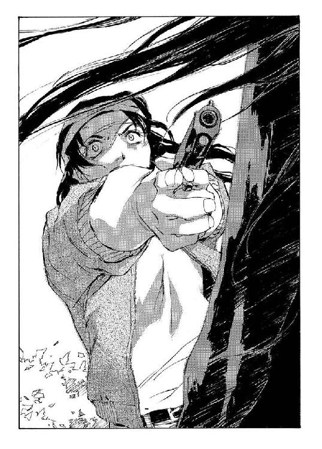
木の陰に回り込んでも、そこに敵はいないのではないか──またもや姿を消しているのではないか。逆にあり得ない不安を胸に、ウィノナは敵が消えた場所に踏み入れた。昨日はみすみすドッペル・イクスを領主のもとへと行かせてしまった。二度続けて失敗などするつもりはない。
靴底を地面に滑らせて彼女は身体を止めた。息を詰める。観察は一瞬でいい。
そこに敵はいた。そして、
「......なんで......!?」
一瞬だけで済まなかった観察に、驚愕の声をあげる。
身体が浮かび上がるかのような感覚。ウィノナは全身でその衝撃を受け止めて、そして意識を失った。永遠に。
第五章 虚像の声
「これは銃創だ」
屋敷のベッドに横たわったウィノナの身体を見下ろして、ダミアンの声は冷静だった。
言われなくとも分かるようなことをわざわざ言うことは馬鹿馬鹿しいが、それでもその診断に意味があることは認めざるを得ないと、オーフェンは顔をしかめた。言われなければ、それをことさらに意識することもなかった。
ダミアンは淡々と続ける。
「腹部に二発。傷は深い。長くは持たないだろう。彼女の体力でも、あと一時間というところか」
「治せるだろう、あんたなら」
オーフェンはつぶやいて、部屋の中を見回した──昨夜、傷ついたあと蘇生して目覚めた部屋である。ウィノナは昨日と同じ寝台に逆戻りして、腹部の傷に包帯を巻いた状態で意識を失っている。
部屋にはほかに、誰の姿もなかった。ロッテーシャはまだ、クリーオウといっしょにいるのか？ 恐らくそうなのだろうと、オーフェンは判断した。ならばマジクもそこにいる。そして領主も。
その視線を追いかけてくるように、ダミアンがこちらを向いていた。特に力を入れずに言ってくる。
「余力はない、と言っただろう......そうそう、つまりは君も、わたしの力をあてにして怪我などして欲しくはないということだ」
「............」
答えずにオーフェンは、ウィノナを見つめた。銃創。銃弾は臓器のいくつかを破裂させて、彼女は緩慢に死につつある。出血は止まっているはずだったが包帯は見るたびに赤黒い滲みを大きくしているようにも見えた。顔色は既に体温を宿した生物の皮膚の色というよりは、湿った土の色へと変じつつある。
疑いなく致命傷だった。自分の魔術が通じる状況でもない──実際、銃声が聞こえたあとに彼女を発見して即座に治療を試したものの効果はなかった。自分の魔術でも傷はふさぐことができる。オーフェンは奥歯を噛みしめた。だが、最も重要な破損臓器の回復や、失った血液や体力を補充できるわけではない。
だが、ダミアン・ルーウならばこの致命傷を癒せるはずだった。昨夜にはもっとひどい状態の彼女を癒してみせたのだから。
横目でにらみやると、オーフェンは告げた。
「急に力を使い惜しみするようになったじゃねえか」
「もともと無尽蔵なものではないのだよ」
と、話題を変えてダミアンが右手を差し出してくる──その手には小型の拳銃があった。グリップではなくバレルのほうを持って、白魔術士が言ってくる。
「彼女の銃だ。弾は残っていなかった」
「銃声は一発じゃなかった。彼女は自分の銃を敵に奪われて撃たれたのか？」
「分からんね。よほどしっかりと現場を調べなければ結論は出せんな。だがわたしの推測を言わせてもらえば、彼女はそんな間抜けではないよ」
本当にそう思っているのか不明だが、ダミアンはそう言い切った。ウィノナの呼吸音は思いのほか静かで、不服がないようにも見える。
オーフェンは白魔術士の差し出した拳銃を受け取り、それを子細に眺めやった。それでなにが分かるわけでもなかった──単によく使い込まれているということだけだ──が、その殺人器具の軽量さが、まるで魂の抜けた形骸を思わせる。さほど的外れな感傷とも言えない。その軽さは、弾倉が空であることを意味していた。
ウィノナの銃の回転式弾倉の装弾数は五発。数えてオーフェンは、想像を巡らせた。ウィノナならば、死の間際に全弾一気に撃ち尽くすことも可能だろう。いや、そうしたに違いない。弾は、彼女自身が撃ち尽くしたのかもしれなかった。
「じゃあ、侵入者も銃を持っているということか？」
聞くと、ダミアンはしばし迷ったようだった。その透明な瞳がなにを考えたのかは分からないが、口調だけは丁寧に分かりやすい。
「......君は銃をどこで手に入れた？」
唐突に質問で返され、オーフェンは白魔術士の顔を視界に収めて瞬きした。腰の銃に触れて、つぶやく。
「ティッシが《塔》から持ってきた。俺がウィノナを撃ったとでも思ってるのか？ 生憎、この銃は撃てないぜ。まだ整備もろくにしてない」
「持ち込んだ銃は一丁だけか？」
「おい。彼女を撃ったあと、どこかに隠したと──」
あくまでこちらを疑っているらしい白魔術士に抗弁しようと、オーフェンは不機嫌に声をあげた。が、ふと途中で思いとどまる。
白魔術士はなにかを考え込んでいるようだった。こちらを注視してもいない。追及してくる様子でもない。先ほどにも感じた奇妙な違和感が上塗りされる。オーフェンは胸中でつぶやいた。
（俺を疑ってるわけじゃない。こいつ、なにを隠してるんだ？）
と、ダミアンが再び顔を上げた時には、それまでの逡巡などきれいさっぱり消え去っていた。明朗に言ってくる。
「《牙の塔》に、たかだか一介の魔術士に持ち出せる銃があるくらいだ。《十三使徒》の別働隊ならば、拳銃で武装する可能性もあるな？」
「騎士軍の装備だぞ。貴族連盟が貸し出すことがあるのか？」
「わたしとしては、侵入者は《十三使徒》の手の者だという説を推す。それが最も自然だろう」
「一番自然なのは、ウィノナを蘇生させることだ」
オーフェンは断言すると、寝台の彼女を指し示した。彼女の体躯も横たえられると小さく縮まって見える。
そちらを見もしない白魔術士を、半眼でにらみやる──オーフェンは声も低くして続けた。
「まるで治したくないようだな」
凄んで詰め寄るが、ダミアンは退かなかった。詰まった距離に、圧迫感を感じているのは自分だけかもしれない。弱気になる自分を罵る。手の中にあるウィノナの拳銃を握り直して、オーフェンは怒声で告げた。
「......ウィノナを回復させれば、すぐに襲撃者の正体も分かるだろう。なにか不都合なことでもあるのか？」
「............」
ダミアンはなにも答えてこない。沈黙を守ったまま、顔を窓の外に向けた。
昼下がりの陽が、窓ガラスを輝かせている。まだ早い時間だというのに秋の太陽はひどく高度を下げていた。
「君には領主様の護衛をお願いしたい。気に入らない役目なのだろうが、断れないはずだ。あの少女らや、君の生徒のことも守らなければならないだろうからな」
「話をそらすなよ、白魔術士」
「一晩だ。明日の朝までにわたしは侵入者を排除する。効果的に〝ゴースト〟を使えば、さほど労力を使わずに可能だろう。君よりは安全にことを運ぶことができる」
「おい──」
「有り体に言おう。ウィノナのごとき使い走りを蘇生させるのに、わたしがどれほどのパワーを使わなければならないと思う？ そしてそれは、君が万一重傷を負っても同じことだ。だが領主様は君が必要だと考えておられる。わたしとしては、自分でやったほうがリスクがないのだよ」
突然多弁になったダミアンに、思わず反駁の言葉を迷っているうち、白魔術士はそのまま続けてきた。会話を打ち切るためだろう。虚空に溶けるように姿を消しながら、
「明日の朝。領主様が必要としていた時間は、明日の朝までだ。それでこの最接近領と聖域との力関係が逆転する。君はその間、黙って領主様の安全を保っていてくれれば良い」
ダミアンの姿は消え、そして声も途切れた。
それを見送って、オーフェンはうめいた。ウィノナはやはり不服もないように──死へと近づく深呼吸を、ただひたすらに繰り返していた。
◆◇◆◇◆
こんな僻地に、新鮮な──少なくとも新鮮そうな──ミルクが置いてあったことは驚きだった。真新しい瓶の封を解いて、中身を手近な鍋に移す。コンロは旧式だったが十分に使えそうだった。マッチを擦って火を点けると、その上に鍋を置く。一息ついてロッテーシャは、後ろを振り向いた。泣きやんだクリーオウが、決まり悪そうにこぢんまりと椅子の上で身を縮めている。
厨房には簡単なテーブルと椅子があるだけで、あとは意外なほどすっきりとしていた。棚を開ければ食器や調理器具が詰まっているが、館の主が使うような華美な食器があるわけではない。つまりは、使用人が食事をするための場所なのだろう。ロッテーシャは腰に手を当てると、ミルクが温まるまでのしばしの時間をどう潰そうかと思案した。クリーオウに話しかけても良い。ただ、ここ数十分の間、一方的に話し続けてもう話題がないというのも事実ではある。
近くの壁に立てかけてある魔剣を意識した。風の中に、おぼろげに聞いた言葉を思い出す。剣を手放してはいけない。彼女は苦笑した。まさかあの馬鹿亭主も、ミルクを火にかける時間まで神経質に警戒しろと言っていたわけではあるまい。なにやら庭で騒ぎがあったようだが、館の中は静かだった。
（......騒ぎがあったくらいのほうがいいのかしら）
ふと、そう思う。ロッテーシャは見るともなしに同じ場所にいる少女の姿を盗み見た。沈黙はひどく気まずいものだったが、それを打開するうまい手も思いつかない。なんにしろ、クリーオウがひどく落ち込んでいるのは見ていてつらかった──初めて見た時の印象から、大きく変化し過ぎてしまったのではないかと思える。
自分が他人の変化に気づいてしまったこと、それが後ろめたい理由なのだろう。そんなことを分析してロッテーシャは、湯気となって芳香を漂わせるホットミルクに鼻孔を広げた。砂糖でも入れて飲ませてあげれば、クリーオウも多少気力を回復させるかもしれない。感情の動きは、しょせん甘味の補給には逆らえない。
「オーフェンさ」
いきなりクリーオウが声をあげるのに、ロッテーシャは無駄に大きく反応しかけた。慌てて振り向いて、目をぱちくりさせる。まさか向こうから話しかけてくるとは思っていなかった。が、言葉の続きを待っても、クリーオウは呆然とこちらを見るだけで口を閉ざしている。
「......どうしたの？」
ロッテーシャが聞くと、クリーオウはまた足下に視線を落とした。テーブルの上にかがみ込んでいるようにも見える。ぼそぼそと聞き取りづらい声音で、彼女は言ってきた。
「オーフェンさ、怒ってたかな」
「怒っていたのではないと思うわ。ええと......まあ少なくとも、あなたに対しては」
実際どう見ても怒り狂っていたあの黒魔術士を思い出し、ロッテーシャは咳払いした
──まったく、調子に乗った男というのは厄介者でしかない！
「ただ、その、昨日はいろいろあったみたいで──わたしも詳しくは知らないんだけど。でも、とにかく大変だったみたいなのよ。それで気が立ってたんだと思うわ。あなたは悪くないわよ」
彼の姉が死んだことや、なんやかやは伝えるべきなのか──迷ったが、ロッテーシャはあえて触れないほうを選んだ。実際のところ詳細に関しては自分は知らないし、これ以上クリーオウの心労のもとを増やすのもどうかと思える。
「そう......」
クリーオウは苦しげにそううめくと、急に頭を上げてきた。それほど元気にというわけでもなく、やはり顔色は陰っていた。
「でも、わたし、レキのほうが心配で」
「いいんじゃない？」
無責任かと自分でも思いながら、ロッテーシャは請け合った。だがあの無遠慮な黒魔術士ならば、いちいち他人が心配などしないでも勝手になんとかするだろう──それよりは確かに、あの小さい黒犬のほうが心配ではある。
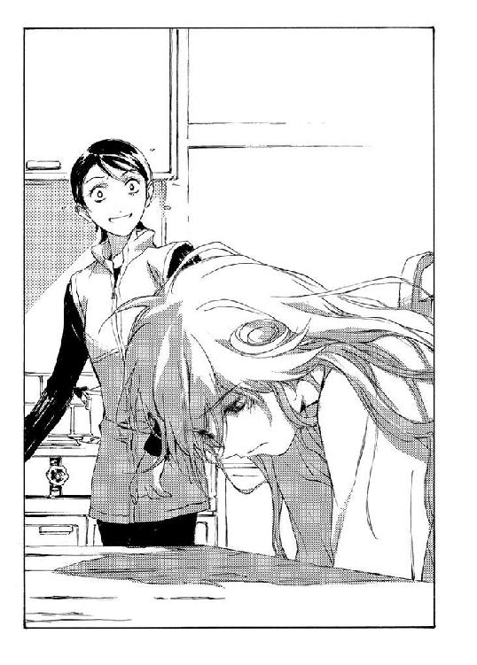
荒野でぽつんと座っていたレキのことを思い出し、彼女は告げた。
「そういえば、レキちゃんを見かけたわよ。昨日。方角はちょっと分からないけど......ここから結構遠くで」
クリーオウはこちらを向いたが、口を開いただけでなにも言ってこなかった。なにかを言いたくはあったのだろう。唇が二、三度、未練を込めて動くのも見えた。声を出すのを躊躇したというよりは、なにを言っていいのか分からなかったのかもしれない。
温まった鍋を火から下ろして、ロッテーシャは持ってきておいたマグを流しの上に並べた。飲み物がこぼれないよう慎重に鍋からマグに注ぎながら、続ける。
「よく分からなかったけど、どこかへ向かってたみたい」
「森に帰ったのよ」
ぽつりと、クリーオウ。
よく聞こえなかったため耳をそちらに向けると、クリーオウも今よりは大きな声で言ってきた。
「もうもどってこないかも」
彼女の声はわずかに震えていた。
根拠は見つからないがとにかく否定しよう──そう思い、ロッテーシャはかぶりを振った。
「大丈夫よ」
と。
唐突に、それこそ邪魔をするにはこれ以上ないタイミングで足音が響いた。木の床を無骨なブーツが叩く耳障りな音。入り口近くまで近寄ってきて、そして扉が開く。
顔を見せたのは、あの黒魔術士だった。
「......オーフェン」
クリーオウが、小さくつぶやく。驚いたというよりは、あっけに取られたような声音だった。黒魔術士が彼女のほうを見やり、うなずく。
「ああ」
「どうかしたんですか？」
聞いたのは、ロッテーシャだった。オーフェンは上の空で、厨房の中を見回している。ひどく焦っている様子だった。
嘆息して、言ってくる。
「ダミアンを探してるんだ」
あの幽霊のような男のことらしい──思い出してロッテーシャは顔をしかめた。白魔術士とか言っていたので魔術士なのだろうが、それ以前に、自然と他人を見下すように接するその態度から名乗らずともそれと知れる。
（まったく......魔術士って人たちはそんなのばっかり？）
クリーオウに声をかけもしないこの黒魔術士をも含めて胸中で罵って、ロッテーシャは聞き返した。
「いないんですか？」
つぶやきながら、クリーオウの様子を見やる。彼女はじっとオーフェンを見つめているが、自分が会話に加わらなくて済みそうなのをほっとしているようでもあった。胸中まではっきりと知れるわけではないが、気持ちは分かる気がする。ロッテーシャは、とりあえず鍋をもどして火を消した。ふたつのマグカップに入りきらなかった牛乳の残りが、少しだけ余っている。
砂糖壺を探しにかかるまで、黒魔術士の返事は返ってこなかった。ためらいがちにゆっくりと、彼は言ってくる。
「ああ。もう一度説得して、ウィノナを蘇生させる......」
「蘇生？」
思わず呆気にとられて、つぶやく。なにか騒ぎがあったことは知っていたが、あの不愉快な女が巻き込まれたことは聞いていなかった。
黒魔術士は、また入り口から退散しかけた足を止め、腕組みする姿勢でうなずいてみせた。
「さっきの襲撃で、ひどい怪我を負った。ダミアンにしか治せない」
がたん──
と、騒々しくクリーオウが立ち上がる。だが、やはり彼女はなにかを言いたげにするだけで口を閉ざしていた。なにを言いたいのかは、今度ははっきりと想像できた。レキならば同じことができると言いたかったのだろう。ナッシュウォータで、あの黒犬が自分を蘇生させてくれたことをロッテーシャは覚えていた。
同じことは、オーフェンにも分かったらしい。気にするなというように手を振ってみせる。だがロッテーシャは、それよりも気になることがあって声をあげた。
「彼女は敵でしょう？」
それを聞いて、黒魔術士が呆れ顔を見せる。彼は、鋭い目に困惑を乗せてつぶやいた。彼にとっては意外なことだったのだろう。
「ンなこと割り切ってどうすんだ。死ななくていいものを死なせることはない。それに、彼女は重要な情報を持っているはずなんだ」
「重要な？」
「分かるだろ。ウィノナに傷を負わせたのが誰か、彼女自身が見てるはずだ」
「そんなことが重要なんですか？」
ロッテーシャが聞くと、彼は肩をすくめた。
「分からねぇよ。どちらかといえば、ダミアンがなぜその情報から逃げるのか、そっちのほうが気になる」
「オーフェン、わたし、やっぱりレキを探してくる」
外へ駆け出そうと勝手口に向かいかけたクリーオウに、オーフェンが叫んだ。
「いや。いい──」
「でも」
「違うんだ。屋敷から出ないでくれ。襲撃者がいる。しかもそいつは、容赦なくウィノナを殺害した」
彼はそう言ってから自分の失言に気づいて顔を伏せた。陰鬱に、あとを続ける。
「ウィノナはもう長く持たない。だからレキを探しても間に合わない。くそっ......ダミアンの説得は続けるつもりだが、とりあえずはできることをしていくしかない」
「オーフェンさん」
ロッテーシャが呼びかけると、彼はそれも手で制した。彼自身、考えながら話しているのだろう。たどたどしく続く。
「まず忘れちゃいけないのは......危険が迫ってるってことだ。既に敵がこの近くに入り込んできていて、その正体が知れない。聖域の刺客、昨日の聖服の男みたいなのも、そのうち必ずもどってくる。ダミアンはごまかしているつもりでいるが、時間の問題だ。その時までに時間の余裕があるのなら、せめて有利な状況を作っておかないと」
「でも、領主様は、ここは安全だって──」
と言いかけたクリーオウを見やる黒魔術士の視線は、はたから見ても複雑なものだった。ロッテーシャが思い出したのは、亡き父の眼差しだった──もっとも、連想にあったのはもっと下世話な状況下での父の表情だった。生活苦から、父は所持していた愛剣を何本か手放さなければならないことがあった。その時に見せた、壊したくないものを壊す、哀悼の顔。
改めて見直せば、黒魔術士の表情がそれほど亡父のものに似ていたわけでもなかった。似ていないこともないが、決定的に違う。なんとはなしにロッテーシャは直感した──どこに違いがあるのか。この黒魔術士はきっと、自分がなにを失いつつあるのか分かっていないのだ。
「はっきり言えることがある。あの領主は信用できない。ダミアン以上にだ」
オーフェンの言葉は、まるで脅迫のように不吉な響きを含んでいた。
「あいつは、自分が戦っているようなことを言いながら、なにも手放してないじゃないか──」
「でも、わたしたちを逃がしてくれたわ！」
クリーオウが声を荒らげる──彼女は胸に手を当てて黒魔術士を咎めた。
「昨日、あの殺し屋だかなんだかが屋敷に入ってきた時......抜け穴からわたしとマジクだけを逃がしてくれたのよ。自分のことは心配ないからって。自分を殺せば、侵入者は帰っていくからって」
「だが実際のところ、領主は死ななかった」
「そんなの......責めるのは可哀想よ！」
なおも抗弁するクリーオウに、黒魔術士の表情が引きつるのが見えた。彼が致命的な一言を発することが予見できたのは、自分が冷静だったせいだろう──ロッテーシャは自覚して、会話を止めようと一歩踏み出した。
が、遅かった。オーフェンがとうとう声を張り上げる。
「イールギットは殺されたんだ！ ティッシも行方が知れない......」
クリーオウの返事を待たずに、黒魔術士はその場から立ち去った。聞こえてきた時と同じ不吉さで足音が遠ざかっていく。黒魔術士は一呼吸も待たなかったが、どのみち少しばかりその場にとどまっていたからといって、クリーオウの返事は聞けなかったろう。彼女は無言のまま、蹴った椅子を引き寄せて再び腰をもどした。うつむいて、長い沈黙を挟んだ後、ほんの小さくつぶやくのが聞こえてくる。
「やっぱり怒ってるじゃない......」
「あれはやつあたりよ」
と、それが非難しているように聞こえてはいけないと思いついて、ロッテーシャは付け加えた。
「そんなに気にすることないわよ。あの人、さっきわたしにも言ってたけど、はっきりした敵を見つけたくて仕方ないみたいだから」
「わたしが領主様の味方をすると、敵になるのかしら」
ぶつぶつとぼやくクリーオウに、ロッテーシャは笑いかけた──無理な笑みだということは承知の上だったが。間が開いたせいで冷めかかったミルクに砂糖を入れて、マグふたつ持ってテーブルへと近寄る。
うつむくクリーオウの前にカップのひとつを差し出しながら、ロッテーシャはようやく考えついた言葉を口に出した。
「あの人、クリーオウのことをすごく心配していたのよ。自分が迂闊だったからってすごく責任感じてたみたい。なのにあなたが無事で拍子抜けしちゃったのよ。少しぎすぎすしてるように感じるかもしれないけど、なにかひとつうまくいくようなことでもあれば、それでころっと直っちゃうわよ。きっと」
「............」
クリーオウはマグカップを両手で包み込むようにすると、その温もりを手の中で転がすようにもてあそんでから言ってきた。
「なんでわたしより、オーフェンのこと詳しそうに言うの？」
それに文句があるというより、単に疑問だったのだろう。不思議そうに首を傾げている。ロッテーシャは目をぱちくりさせてから、嘆息混じりに告げた。
「あの人、エドに似ている感じがあるから」
「全然似てないわ」
これははっきりと文句ありげに、クリーオウが口を尖らせる。
「あのエドって奴がなにをしたか絶対に忘れないわよ。わたしも本当にヤバかったし......道場だって、あいつに潰されちゃったようなもんでしょ」
（別に潰れてはいないけど）
似たようなものではあるが。
ロッテーシャは反論せずに、自分も椅子に座ることで間を保った。
（そうね。わたしも忘れない......）
彼がなにをしたか。自分になにをしたか。絶対に忘れない。
すべてを吸い込むような、迫り来る刃の恐怖。それを思い出して、否応なく肌が粟立つ。ホットミルクはそれを遠ざけるのに役立った。一口飲み込んで、甘さが舌を潤すのを味わってから息をつく。
「たとえば......わたしは、あなたたちがナッシュウォータに来る前のことはよく知らないけど」
ロッテーシャは天井の梁を見上げて、続けた。
「もし、あなたといっしょに旅行していたのがエドで、わたしと暮らしていたのがオーフェンさんだったら、どうなってたのかしらって」
と、言ってからクリーオウの顔を見やると、彼女は怪訝そうな眼差しでこちらを見返してきていた。その目を見て自分がなにを言っていたのか気づき、慌ててロッテーシャは手を振った。勢いよくテーブルに置いたカップが派手な音を立てる。
「あ、いえ、変な意味で言ったんじゃないのよ。ただの、たとえの話......わたしから見るとなんとなく、ふたりはよく似ているってこと。ごめんなさい」
「......別にロッテーシャが謝るようなことじゃないわよ」
それでもやはり疑問が残る曖昧な口調でクリーオウは言ってから、マグに口をつけた。それほど飲んだようには見えない。飲みたくなかったのだが、一応こちらに気を遣って飲むふりをしたのかもしれない。
と、思い出したように彼女は言ってきた。
「ティッシが行方不明って？」
「あの髪の長い女の人のことよね。ここに来る途中で、いなくなってしまったのよ。というよりあのダミアンは、あの人は死んだって言ってたわ」
「............」
クリーオウの持っているカップが、目に見えて震え始める。そのマグの持ち主はといえば顔面を蒼白にして、
「ティッシって、オーフェンのお姉さんよ。わたしもお世話になったの。死んだって......そんなのって」
「オーフェンさんは、信じないって言ってたわ。不自然なところがあるって。だから、そんなことを言うダミアンは信じられないってことなんだと思う」
「わたし、やっぱりオーフェンに謝ってくる。ひどいこと言っちゃったような気がするし......」
そうつぶやくと、クリーオウはマグを置いて厨房から出ていった。黒魔術士のブーツの音と比べれば格段に軽い少女の足音が遠ざかっていく。
ひとり残ったテーブルで、ロッテーシャは長いため息をついた──なにかが噛み合っていない。なにかひとつ進展があるたびに、歯車がひとつずつずれていく。だというのに当事者たちはそれに気づいていない。
（それに気がつくわたしは、当事者じゃないってことなのかしら......）
そうなのかもしれない。
虚しい自覚とともに、独りごちる。
離れた壁に立てかけてある魔剣──父の形見の剣を横目で見やって、
（わたしは......あの人たちのしていることとはまったく無関係のことを目的としているんだものね......）
と。
コツンという小さな音が耳に入った。古い屋敷が軋みを立てたのかとも思ったが、立て続けにもう一度、同じ音が聞こえてくる。
不思議に思って振り向く。音を立てたのは、厨房にただ一枚だけある窓ガラスだった。また、コツンという音。誰かが外から、窓に向かって小石でも投げつけているらしい。中にいる人間に合図するように。
心臓の鼓動が速まるのを感じて、ロッテーシャは立ち上がった。壁まで駆け寄ると剣を掴み、それを抱きかかえる。魔剣の使い方は分かっている──つもりだったが、実際にきちんと使えるのかどうか。それは確かめていない。黒魔術士の言葉が脳裏に蘇った。ここは危険で、すべては時間の問題なのだ......
合理的ではないと分かりつつも、思い浮かんだのは空き巣だった。ノッカーを叩く、なにかしらの合図をする、様々な手段で家に誰もいないことを確かめてから、おもむろに侵入してくる。
（そんなわけないじゃない......こんな場所で）
空き巣ではない。来るとすれば、もっと危険なものだ。
ロッテーシャは剣を構えた。鞘は刀身を包んだままだが、もとよりこの剣は引っぱったところで抜剣できない。だが少なくとも剣は自分を守ってくれる。危険が迫ったならば、彼女の身を守ってくれるはずだった。それを信じてさえいれば魔剣は働く。ビードゥー・クリューブスターの魔剣。
合図は続いていた。同じ周期で窓ガラスに小石が当たり続ける。
ロッテーシャは足音を殺して、勝手口に近づいた。もどって、あの黒魔術士に助けを求めたほうがいい──とは思いつつも、プライドがそれを拒絶する。それに、なにかがおかしいと感じていた。
勝手口の扉に手をかける。ノブを回して押し開けば、外に出られる。窓の位置は近かった。出た瞬間に、小石を投げている相手に出くわすはずである。熱い──だが冷えやすい汗が、うっすらと額に滲む。剣を左手に、ノブに触れた右手に力を入れて、ロッテーシャは外へと飛び出した。
そして。
「............！」
驚愕しながらも、瞬時に身構えることができたのは戦闘訓練の賜物だった。勢いをつけて飛び出した先には、誰の姿もない。
（誰もいない......？ そんなわけが）
一番近くにある、身を隠せる木立から、屋敷の勝手口まで──数メートルほどの距離がある。窓ガラスに狙って石を投げるには、さほど難しいというほどでもないが簡単でもない距離だ。ましてやまったく同じ間隔で正確に当て続けるのは困難だろう。だとすれば、合図をよこした主はもっと近くにいたというのに、姿が見えないということになる。
姿が見えない人間などいない。
（ということは......）
意外と冷静でいられる自分に我ながら感心して、ロッテーシャは視線を這わせた。敵は死角にいる。気配を殺して潜んでいる。
まったくの勘で、彼女は身体を反転させた。鞘に収まったままの切っ先をぐるりと巡らせて威嚇する。
見えたものがあった。虚空になにかを記す絵筆のような、長い黒髪。そして全身の黒装束。だがそれははっきりとした姿などではなく、印象にわずかに残った影に過ぎなかった。そして、もうひとつの別の人影がある──
「......え？」
息を詰めて、ロッテーシャは自分でも間が抜けて聞こえる声をあげた。もうひとつの人影は、動きもせずにそこに立っていた。悠然と、じっとこちらを見つめて。
ダミアン・ルーウだった。
「......敵は逃げたよ」
それだけを、ぼそりと告げてくる。
どうやら彼女と同時にここに現れたらしい──例の窓ガラスへの合図を、彼もどこかから聞いたのだろう。そして、その合図の主は逃げていった。
ダミアンはしばらく、なにか未練がましくあたりを見回していたが、彼自身もすぐに姿を消した。
またもやその場にひとり残されて、ロッテーシャは剣先を下ろした。目を閉じて、まだ網膜に残っているかもしれない黒い人影の姿を探る。
だが、思い出すことはできなかった。失望の吐息を漏らして、彼女はまた勝手口から屋敷の中へと入っていった。
◆◇◆◇◆
銃の本体はむしろ弾丸なのだ。銃本体は鞘に過ぎない。
そう思えば、この銃は既に使い物にならないのではないか。オーフェンは分解してテーブルの上に並べた銃の部品を見下ろして嘆息した。本体の整備にしても、たいしたことができるわけではない。部品の歪みについては気にすることはなく──誰も撃っていないのだから──、埃を落とす程度のことでいい。パーツの不足はなかった。空撃ちしてみても機巧的な問題はない。
ただ弾丸となると、話は違った。見えない部分で錆が浮いているかもしれないし、炸薬の不具合はそれこそ見た目では分からない。《塔》の保管状況がどういったものだったのか、それも不明だった。もともと練習用の試作品である。何年も整備されずにほったらかしになっていたほどだ。
銃の性能の大半は、弾によって決まる。
精度の高い弾丸をどれだけ大量に生産できるか。《塔》の銃匠が気にかけていたのはそのことだった。どれほど習熟度の高い使い手でも、真っ直ぐに飛ばない弾丸で標的を狙うことはできない。不発弾は銃の機能を停止させてしまう。もっとひどければ、たった一回の暴発で生命を失いかねない。
一番いいのは弾丸をすべて新しいものと替えることだ。それは分かり切っていた。だがスペアの弾などあるわけがない。結局は、不発するか暴発するか分からない弾を、無事を祈りながら使うことになる。
銃の組み立ては、急がなくともすぐに終わる。オーフェンはうろ覚えの手順で拳銃を形にすると、最後に弾倉を銃本体に押し込んだ。金属がはまる小気味の良い音は、最も信頼度の低いこのパーツが立てる声なのだと思えばいかにも皮肉だった。弾倉にこめられている弾は八発。ともすれば、外気に触れやすい一発目が一番信頼できないことになる。そしてその一射目が不発ならば、恐らくもうこの銃を撃つ機会などあるまい。
オーフェンは銃をテーブルの上に置いて、そこから目をそらすように天井を仰いだ。瞬きすると乾いた眼球に涙が染みる。昼食を食べたその食堂には、今は自分以外誰もいない──食器もすべて片づけられ、花瓶に活けられた花が先ほどよりは生気を失って置き去りになっていた。
その食堂に、人が入ってくる気配があったことには気づいていた。分かっていて作業に集中していたのだが、こちらの手が休まったことできっかけになったのだろう。背後から声が聞こえてきた。
「お師様......」
マジクだった。
椅子に座ったまま振り返ると、オーフェンは入り口でたたずむその弟子の姿を簡単に観察した。小柄な体格は頼りないといえば頼りない。消沈した面持ちは、もっとはっきりと頼りない。金髪の少年は、こちらの返事を待たずにそのまま言ってきた。
「今、大丈夫ですか？」
「なにがだ？」
「話がしたいんですけど......」
「ああ」
オーフェンはうなずくと、椅子ごと身体の向きを変えた。促すつもりで問いかける。
「どうしたんだ？」
「お師様は、反対なんですか？」
マジクは入り口から一歩近寄ってくると、両手を広げて聞いてきた。
「その......ぼくが、別の人に習うことに」
「いや。望むなら、フォルテでもティッシでも紹介してやるよ。どっちも面倒見のいい連中とは言い難いが、俺よりはマシな教師だろ」
「でも、お師様は《塔》には帰れないんでしょ？」
「俺はな。だが執行部がいちいちお前のことなんて覚えてるかよ」
肩をすくめて告げてから、オーフェンは嘆息した。力尽きたような心地ではあった。
マジクは変わらずじっとこちらの言葉を待っている。たいしたことが言えるわけではなかった。また自分は生徒の期待を裏切ることになるわけだ──オーフェンは独りごちると、自然と肩が落ちるのを自覚した。ひざに手をついて、自分が辞儀をしているような体勢になっていると気づく。
視線だけを上げて、彼はつぶやいた。
「マジク。これは今まで一度も聞いたことなかったかもな。お前、どんな魔術士になりたいんだ？」
「え？」
戸惑ったようなマジクの表情を見つめて、オーフェンはあとを続けた。
「いや......半年近く俺のところにいて、どんな魔術士になれると思っていたんだ？」
「ぼくは、よく分かりません」
マジクの答えは、率直といえば率直だった。眉間に似合わないしわを作って、答えてくる。
「ただ一人前になりたかったんです」
「一人前って、どんな奴を一人前だと思うんだ？」
「役立たずじゃないってことです」
ようやくに躊躇をなくして、マジクはすらすらと──急ぎすぎるくらいに──滑らかにつぶやいてみせた。
「ぼくは、お師様みたいな魔術士になりたかったんです」
「俺は今まで、誰の役にも立ったことなんてねぇよ」
自嘲混じりにつぶやくと、オーフェンは椅子から立ち上がった。腰を伸ばして遠くを見やる。視界に窓がなかったため、見つめたのは壁だった。真っ白の壁。のっぺりとなにもない、冷たい壁。
自然と、嘆息がこぼれた。
「俺も結局、どんな魔術士になりたかったんだろうな......」
「お師様？」
「なあマジク。俺はお前に、魔術の制御に関しては問題なくなったといったな？」
「ええ......」
苦い思い出でも噛みしめるように微かな渋面を浮かべてマジクがうなずく。オーフェンは生徒のほうを向きやると、静かに訊ねた。
「お前はなにを感じたんだ？」
「ぼくの魔術は役に立たなかったんです。いくらお師様に問題ないって言われても、実際にはなんの役にも立たなかったんです」
「お前の才能はたいしたもんだ。それは認める。たった何か月かで、ナチュラルに魔術の制御法を修得しちまうってのは希有なことなんだ。しかも今もってお前は、最初に見せた魔力の強さを失ってない。手加減することなく自身の最大威力を完全に制御するのは、ティッシにもできないようなことなんだ」
「............」
疑うようにこちらを見ているマジクに、オーフェンは笑いかけた。
「今さら特に誉めるつもりはねぇよ。俺が言いたいのは、そんなことはお前の天性に過ぎないってことだ。モノにできるのは当たり前だ──できるべくしてできることなんだからな」
「でも」
「まあ聞けよ。俺のようになりたいと言ったな。お前はいったい俺を、どんな魔術士だと思ってそれを言っているんだ？」
オーフェンは聞きながら、マジクの返事を待たずに続けた。
「俺になにがあると思った？ 魔術の強さでいえば、フォルテにもティッシにも及ばない。精度では、コルゴンに勝てるかどうか自信はないな。生物的な限界をいえば、そうだな、逆立ちしたところでレキに勝てるわけはないな。ダミアン・ルーウは大陸でも最も優れた魔術士のひとりだろう。殴り合いの技術なら、ウィノナだってたいしたもんだ。剣ならロッテーシャに習うか？ さて、俺にはなにがある？」
「でも......」
同じ否定を繰り返して、マジクは口をつぐんだ。迷っているのか。単に困惑しているだけか。
オーフェンはかぶりを振った。自分になにがあるのか。そんなことは分かるわけがない。ここでマジクになにを言われたところでそれも間違っている。
「だけどな......だとしたらティッシにはなにがあるんだ？ フォルテには？ レキには？ ダミアンには？ 彼らには余人にはない特別な運命だかなんだか、そんななにかがあると本気でそう思うか？」
次々と名前を並べて──
最後に、彼は最も小さな声音でつぶやいた。
「最接近領の領主に、たとえば大陸の命運を自分勝手に背負うような権利があるか？」
「じゃあぼくは、誰に習えばいいんですか......」
「分からないか？ 特別なものなんてなにもないってことに関しては、誰もが同じなんだ。誰もがつまらない個人に過ぎない。希有な才能？ 秀でた能力？ そんなものがそれを覆したりはしないんだ。できることだけをすればいい。力を持つことが魔術士の運命なら、それでできることだけをすればいいんだ」
一息ついてから、続ける。
「だがそれはな、本人が思ってるほど大それたことができるわけではないんだよ。それを勘違いした輩が死に急いでいく。俺はもうそんなものを許すつもりはない。アーバンラマでな。決めたんだよ。ようやく思い出した。もう決めていたはずだったんだ。犠牲となって未曾有の崩壊を救う一個人なんてものは、もう二度と許さない......」
思い浮かんだのは、いくつかの光景だった。
アーバンラマを埋め尽くす破壊の樹海。それと対峙するディープ・ドラゴン──いや、ドラゴンの身体を借りた少女。
荒野に突如現れ、無責任なことを言い放って自分だけ戦いを挑み、姿を消した姉。
世界の亀裂から姿をのぞかせる破滅の女神。その前で、傷だらけになって哄笑する死の教師。世界を正すため、自らの死で贖って女神を招き入れようとする。
その逆に、動き出した女神を押しもどすべく結界の穴へと消える者もいる。
ほかにいくつもの光景が連なった。
そして......
幻視で見た光景があった。緑色の髪の女。それと対峙する男の短い会話。男がその女に突き立てようと思っていた銀の短剣は、今はオーフェンが持っていた。鋼鉄の鞘の中で、銘も持たないまま息を潜めている。
我知らず、拳を握っていた。それを開いて身体から力を抜く。
自分の言っていることは、今はまだマジクには意味不明だろう──それを悲しく認めながら、オーフェンは口を開いた。
「たったひとりのありふれた一個人として、誰からも等しく学ぶんだ。師匠が誰かなんて選り好みをすることはない。お前はどこまでも半人前なんだよ──俺と同じく、な。学ぶべき相手を見つけたら学べ。それでいい。だがここの領主は駄目だ。あいつはきっと、お前がほかから学ぶ道を閉ざそうとする」
「............」
マジクからの返事はなかった。きょとんとこちらを見つめてきている。そして、
「オーフェン」
呼びかけられたのは食堂の外からだった。入り口を見やると、壁からひょこりと、マジクによく似た少女が顔を出す。クリーオウは困ったようにあとを続けてきた。
「あのね──」
「聞いてたのか？」
なんの気なしに、オーフェンは聞き返した。立ち聞きを恥じたのだろう。クリーオウが気まずそうにうなずいてみせる。
彼女の気後れを解こうとして、オーフェンは肩をすくめた。告げる。
「なら、聞いたとおりだ。お前も、いろいろ気がかりなことあるんだろうけどな。ひとりで背負い込むのはやめよう。お互いに」
見ると、クリーオウは唇を噛んでいた。
それでもそのまま彼は続けた。
「レキのことも気になるんだが当面は手の打ちようがない。が、なんとかするさ。全部俺に任せろとは言わねぇよ......それじゃ本末転倒だしな。俺の力だけでできることなんてたかが知れてる。お前たちにも協力して欲しいし、俺は俺のできることをする」
「なにをすればいいんですか？」
言ってきたのは、マジクだった。オーフェンは向き直る前にテーブルの上の拳銃を手に取った。ホルスターへとねじ込んで、答える。
「お前たちが正気だったのは、正直ほっとしたよ。もっと面倒なことになるんじゃないかと思っていた。ダミアンを警戒していて欲しい。あいつの動きが気になるんだ。なにかを隠している......か、もしくはなにかを隠そうとしている」
「なにかって？」
「なにかさ。分からないが、ダミアンにとっては致命的なもんであることを願うね。ほかに対抗手段が思いつかない」
視線を左右に這わせたのは、ダミアンの盗聴を気にしたからではなかった──ネットワークが使えないというのは嘘ではないだろうと思える。だがそれでも、白魔術士にとっては姿を見せずに聞き耳を立てる手段はいくらでもあるだろう。警戒するだけ無駄だった。
探したのは時計だった。壁にかけられた、飾り気のない箱形の時計。時刻は昼を下って、早い夕刻かという時刻を指している。
思いついて、オーフェンはつぶやいた。
「この屋敷の中を適当に探って、食べられるものを集めておいてくれるか？ なけりゃ一食か二食分くらいでいいから、俺とロッテーシャの分も含めて」
「え？」
きょとんとした声をあげるクリーオウに、オーフェンは時計を指し示して続けた。
「ダミアンの様子を見てる限りじゃ、また使用人のゴーストだかなんだかを用意する余裕なんてなさそうだったからな。まああのミスター幽霊はともかくとして、俺たちには食事が必要だろ。朝まで動き回らないといけないかもしれないからな」
「朝まで......ですか」
時間を数えているのだろう。上の空のような口調で、マジク。
オーフェンはうなずいた。
「ダミアンの設定したリミットが、明日の朝だ。それでなにか状況が変わるらしい。少なくともそれまでは、この最接近領は無防備に近いんだそうだ。奴を信用しないのなら、その状況の変化とやらにも対応できるように余力は温存したうえで朝まで耐えないとならないわけだ」
「お師様は、信用しないんですね？ ここの......領主の人も」
最後の確認というように──マジクが聞いてくる。並んでクリーオウも、確かめるような眼差しを見せていた。
それは奇妙な最後通牒だった。領主当人に面と向かって問われたわけではない。ここでどう返事しようと、それを覆すことはできる。
だがそれでも、ここでは本当に最後の意志を決めなければならないのだと、なんとはなしにそう思えた。オーフェンは言葉を吐く前にしばし迷い──告げた。
「ああ。奴は俺を駒に仕立てようとした。だが俺は俺だ。俺の役割は......たった今決めたよ。さっき言った通りだ」
「わたしも......でも、オーフェンが言ったからじゃないわよ」
なにかに弁解するようにそわそわと、だがきっぱりとクリーオウが言ってくる。胸に手を当てながら、彼女は眉を立てて意志を強めた。
「ここの領主様がどうかは分からないけど。でもレキに頼んだことは間違ってるって気がする。わたしも間違ってた。わたし、レキを助ける」
鼻息荒く締めくくって、金髪を揺らすほどにかぶりを振ると、気合い入れのつもりか自分のほおを両手ではたいてクリーオウは駆け出していった。食堂を後にして、気配が遠ざかる。厨房へと向かったようだった。
「ぼくには、よく分かりません」
マジクの声は、わずかに震えていた。だがそれも大きな動揺ではなかった。なにかに立ち向かうように足を踏ん張ってから、あとを続ける。
「お師様の言っていること、すごく自分勝手なようにも聞こえます。だってお師様は実際に大きな物事を左右するような力を持った上で、それを言うんですから」
「魔術士が超人だと信じるのか？ 超人の責務を信じるのか？ マジク」
「分かりません。分かりません......でも、力を持つことに意味を求めてはいけないんですか？」
少年の淡い瞳が潤んだのは、涙と感情の色が混ざったからだった。詰め寄ってくるマジクに、オーフェンは手を振って否定の仕草を見せた。
「正しいことと間違ったこと。そんなことを判定する資格は俺にはないよ、マジク。お前が超人の運命を選ぶというのなら、俺は止めない。俺が止めるのは、お前が死に急いだ時......それだけだ」
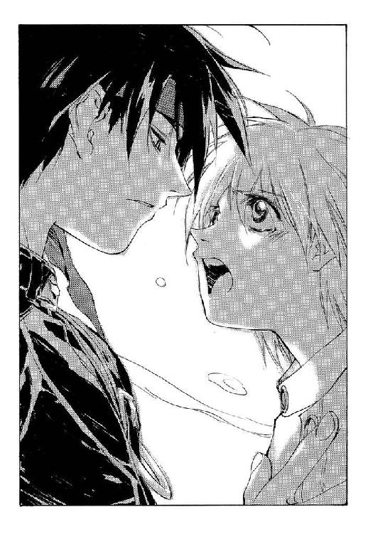
「お師様」
「餞としちゃ、たいしたことは言えないけどな。いいか、お前は行く──だが、いつもどってきてもいい。分かったか？」
「......はい」
その弟子はうなずくと、くるりと背中を見せて、クリーオウほどには騒がしくなく立ち去っていった。それを見送るのにそれほどの時間はかからなかった。だがマジクの姿が見えなくなってからもしばらく、オーフェンはその場に立ち尽くしていた。
（俺はあいつを一人前と認めた......弟子が独り立ちするのは当然のことだ）
独りごちる。
胸がざわついたが、それは悲しみでも怒りでも、喜びでもなかった。
安堵とも違う。来るべき時が来ただけというほどに、あの少年が長く弟子でいたというわけではない。
羞恥だった──意識の底からその言葉をひねり出して、オーフェンは苦笑した。紛れもなく羞恥を感じていた。恐らく自分は、たった今マジクに聞かされたのと同じことを考えて、五年前に《塔》を出たのだ。自分だけが、アザリーを救えるただひとりの超人だと信じて。
五年経ってタフレム市にもどれば、《塔》には自分の帰るべき場所が残っていた。《塔》の仲間が、帰るべき場所を残していてくれた。その場所が残っていなかったら......自分は本当に超人になっていたかもしれない。超人として、なんらかの犠牲になるべく自暴自棄に死んでいたに違いない。
（だから......今度は俺が、場所を守っていてやらないとな。アザリーやティッシ、コルゴン、レキにマジクもだ。恐らくはほかにも大勢。勇み足で飛び出していった超人どもが帰ってくる場所を守るために、俺はこの馬鹿げたゲームを覆す）
そしてあるいは、イールギットも。彼女を死なせてしまった──が、それでも彼女には帰るべき場所を用意してやらねばならない。
銀の短剣が収められた鋼鉄の鞘を軽く叩いて、オーフェンは最後だけ声に出してつぶやいた。
「あんたもな」
（そのために、あんたは俺に力を授けたんだ。そういうことだろう？）
オーフェンは、改めて時計を見やった。話をしている間に時間がどれほど進んだというわけではない。
朝までに、もう一波乱くらいはあるのだろう。覚悟を決めて、彼は吐息した。
◆◇◆◇◆
その静かな部屋の中に、領主は音もなく現れた。
なにかの手品ではない──ただ普通に、扉を開けて入室した。ただしノックはしなかった。部屋の中に誰もいないことは最初から分かっていた。否、少なくとも、返事をするような者は誰も。
その静かな部屋には、寝台がいくつかあった。そのひとつに、大柄な女がひとり横たえられていた。腹部に包帯だけはしっかりと巻いてある。だがそれがあまり意味を為さないことは、患者の顔色を見れば一目瞭然だった。彼女の服は大量の汗を吸った痕跡として皺を作っていたが、今は逆にすっかり乾いている。彼女は目を閉じて深い眠りについている。夢などない深淵の微睡みに。
領主は、やはり音もなくその寝台の横へと近づいた。仮にどれだけ大きな靴音を立てたとしても、彼女が気づいたはずもないが──それでも領主は、彼女が自分に気づくことを疑ってはいなかった。寝ている彼女の枕元へと顔を近づけ、囁く。
「ウィノナ。我が騎士......」
呼びかけられて、彼女のまぶたが震えるのが見えた。唇もまた、同じように震える。なにかを求めて蠢くようにも見えたその唇からは、小さなつぶやきが漏れ出ただけだった。
「領主......様......」
「誰なのだ？」
間髪入れずに、領主は詰問した。
喉になにかが詰まっているのか、ウィノナの声は聞き取りづらい。何度か呼吸を引きつらせてから、彼女はもう一度繰り返した。
「領主様......」
「ウィノナ。聞いているか？」
辛抱強く、領主は告げた。
「お前が魔術士ならば──惰弱な彼らならば、こんな時には泣き言を言うのだろうな。きっとそうに決まっている。だがお前は違う。騎士なのだ。末期に一息だけが許されているのならば、その一息までも、有益な情報を伝えなければならない」
「はい......領主......様」
従順に答えてくる騎士に、領主は満足してうなずいた。もう促す必要もない。彼女は答えてくるだろう。必要とする答えを。
彼女は絶え絶えに、名前を口にした。
「ユイス......が。わたしを、撃った......」
「............」
それにはなにも答えずに、領主は起きあがった。感慨はない。必ずしも予想していたことではなかったが、まったくの予想外というわけでもない。計画に大きな修正を必要とするようなことでもない。
領主は、無言で振り向いた。
彼が顔を向けた先の暗がりに、ダミアン・ルーウが無表情に控えていた。
なにを話すでもなく白魔術士が姿を消す。
アルマゲスト・ベティスリーサは、それを見送っても表情を変えなかった。
第六章 虚像の幻
ウィノナは日暮れまでに死んだ。
その死に顔は安らかだった。なにか、大きな仕事を成し遂げたように満足していた。
白い布が用意してあった。誰かの洒落か──それとも、そういうものなのか。悪趣味ではあっても慣習には逆らえず、オーフェンはその布をウィノナの顔に被せた。
彼女は安らかだった。彼女は満足しているように見えた。布をかけたのは、それを隠したくもあったからだった。
死ねよ、と彼女に告げたのは今朝のことだった。そのために彼女が死んだ、などと呪詛めいたことを信じるわけではなかったが、胸中にあったのは固く重いわだかまりだった。それは自責にも似ていた。似ているのなら、自責といっても同じかもしれない。
彼女は満足して死んだ。それを否定するつもりもない。それでもなお、オーフェンは独りごちた。
（死んで、なにを満足するっていうんだ......）
その場にとどまったのは、ほんの少しの時間だった。
嘆息して、オーフェンは部屋を出ていった。
◆◇◆◇◆
「バターは要るかな」
「かじって食べられるわけでもないし......でも一応取っておく？」
ロッテーシャはそう言うと、クリーオウの差し出してきた丸い包みの塊を受け取った。形がへこんでいるのは、多少使った跡だろう。ネズミがかじったのかもしれないが。それは考えないことにした。
再び棚の奥へと突撃していくクリーオウを見送りながら、彼女はテーブル上の段ボール箱に、そのバターの包みを放り込んだ。厨房にもどってきたクリーオウが、急に食料を集めだしてから小一時間ほどが経っている。箱はそろそろいっぱいになろうとしていた。乾燥肉、薫製から安酒の瓶まで、整理を考えずに押し込んである。
「こっちに缶詰があったよ」
声をあげたのは、クリーオウによく似た金髪の少年──マジクだった。両手に五個か六個、ラベルのない缶を運んでくる。彼はそれをテーブルの上に転がした。
と、振り返ったクリーオウの顔は不機嫌だった。獲物を捕らえたマジクにむしろ敵愾心を燃やすように、
「なんであんたがここにいんのよ」
「いるよ。なんでさ」
驚いたように、マジク。だがクリーオウも退かなかった。
「あんたは、領主様のほうについたんでしょ。敵じゃない」
「クリーオウも、『様』とか言ってるじゃないか」
「いいのよ命助けてくれたんだから。感謝はするのよ」
分かるような分からないようなことを断言して、彼女は胸を張ってみせた。それに比べれば、マジクには威勢が足りていない。缶詰だけを置いて身体を退くと、
「ていうかクリーオウ、全部立ち聞きしてたの？」
「聞いてたわよ」
堂々と即答する彼女に、返す言葉を失ったのかマジクが口をぱくぱくとさせる。
その隙に、クリーオウがまたきつい声を発した。
「なんでこんなとこでいっしょに缶詰あさってるのよ」
「なんでって......いいじゃんか。手伝ったって。それに、別にぼくは敵になろうなんて思ってないし」
「でも、領主様の部下になるんでしょ」
「違うよ！ 別にそういうわけじゃない」
マジクは狼狽して、あとを続けた。
「お師様とは、ちょっと意見が合わなくなっただけだよ。どっちみち、この状況じゃ敵も味方もないじゃないか」
「敵と味方ははっきりしてるわよ。殺し屋が来てるんでしょ」
「領主の人を殺しにね......ほら、敵は誰だか分かんないだろ」
「そういやそうだけど」
ようやく、困ったようにクリーオウが息を止め──揚げ足を取られたことに気づいたのだろう。不機嫌顔のまま缶詰を拾い集めて箱の中に詰め込んだ。
ふたりを眺めながら、ロッテーシャはまったく関係ないことを考えていた。特に気にせずに厨房で食べ物を探しているのだが......
（これって泥棒なんじゃないかしら）
言っても仕方なかろうと思い、口には出さずにつぶやく。
それでも自分にだけは、犯罪をしているという自覚と気後れがあるのだ、これが免罪符になるかどうかはしらないが。ロッテーシャは一杯になった箱を示して、ふたりに告げた。「もうそろそろいいんじゃない？ 日持ちのしないものも混じってるけど、一週間分になりそうな量よ」
「この倍くらい欲しいのよね」
クリーオウはあっさりと言うと、また棚の奥を物色し始めた。誰にともなくマジクが指摘するのが聞こえてくる。
「......お師様は、明日の朝くらいまでの分でいいって言ってたけど」
「別にオーフェンに言われたからやってるわけじゃないのよ」
肩越しに振り向いたクリーオウの顔には強ばった皺が寄っていた。緊張を隠せずに、声も震えている。
「レキを探しに行かなくちゃならないんだから。あのなんにもない広いとこを探すっていうと何日かかるんだか......」
「何十日探しても無理だよ」
当たり前のことをマジクが告げる。
それが不手際であるとでも言いたげに、クリーオウはさらに渋面を作ってみせた。喉からうめき声を絞り出す。
「やってみなきゃ分かんないでしょ」
「ねぇ」
たまらずにロッテーシャは、横から口を出した。クリーオウの注意を引いたことを確かめてから続ける。
「さっき言ってたけど......レキちゃん、領主って人となにか──ええと──取引？ なんかそんなのをしたんでしょう？ どこに行ったのかは、領主が知っているんじゃないかしら」
「そうだと思うけど、これから裏切ろうって相手に話をしにいくのはなんか不義理な感じがするじゃない」
「裏切ろうとしてる時点で不義理だけど......」
また当たり前の指摘をマジクが口にするが、それは幸いクリーオウの耳には入らなかったらしい。
彼女は、もう棚の奥にはめぼしいものはないと見切りをつける気になったのだろう。後ろ手にバタンと音を立てて棚を閉めると、
「それにもちろん最初にレキのことが話に出た時、何度も聞いたわ。レキはどこに行ったのかって。領主様は、そう遠いところじゃないって言ってたけど、詳しいことを教えてくれなかった」
「遠くない？」
「うん。場合によってはわたしたちのほんのすぐ近く、じきに姿を見られるようになるだろうとか......まあなんかそんなようなこと」
「じゃあ、すぐ会えるんじゃない？」
と、またマジク。
クリーオウは聞こえよがしに、長いため息をついてみせた。
「それじゃなんだか間に合わないような気がするから、その前に探しに行きたいって言ってるのよ」
「間に合わないって？」
これを聞いたのはロッテーシャだった。クリーオウは忙しく向き直りながら、
「取引って、なんか嫌な響きでしょ。なにかをもらえるのかもしれないけど......なにかを支払えってことだもの。代金がいくらなのかはっきり言わないなんて、詐欺よ」
言ってから彼女は、新たな物色場所を見つけて目を輝かせた。
「ここ、怪しくない？」
クリーオウが指し示したのは床だった。正しくは、床下にあるなにかの蓋である──くぼみがあって指が引っかけられるようになっている。
「物置の扉かしら」
ロッテーシャがつぶやくと、あまり興味なさそうにマジクも続いてぼやき出した。
「そんなの、食べ物なんて入ってないよ。開かないようになってるじゃないか」
彼が言ったのは、扉の上に食器棚が半分ほど載っかっていることだった。完全ではないが、確かに扉はふさがっている。棚を動かした跡が見られないため、その扉も長いこと開けられてはいないようだった。
「非常食とか貯め込んでるかもしれないじゃない」
と口を尖らせるクリーオウに、マジクはあくまで懐疑的だった。
「いざって時、取り出せないようなところに？」
「いいから、そっち持って。棚を動かすわよ」
中身が入ったままの重い食器棚を動かすには、それなりの時間がかかった。最後にはロッテーシャも手を貸して、なんとか蓋の上から障害物を取り除く。
「開けるわよー」
かなり疲れていたはずなのだがひとりだけ気力を失わず、クリーオウが扉を開ける。湿った土と黴の臭いが漂う。ロッテーシャも横からのぞき込んだが、中は真っ暗でなにも見えなかった。それなりに深い。梯子かなにかあるかと思いきや、それらしいものはないようである。
「んー？」
なにかを見つけたのか、クリーオウが上半身を地下の入り口に突っ込む。
そして──
「きゃあっ！」
悲鳴をひとつ残し、クリーオウの姿が消えた。中に引き込まれたように、一瞬でいなくなる。入れ替わりに穴の中から、けたたましい足音と罵声のようなものが響いた。クリーオウの声も混じっていたようだが。
「............」
しばし、残されたふたりだけで顔を見合わせて。
ロッテーシャは、不意に気づいて叫んだ。
「クリーオウ！」
穴に駆け寄るが、さすがに無防備にのぞき込む気にはならなかった。ずっと抱えていた魔剣を握り直し──飛び降りようとしたが、下にどれほどの深さがあるのかそれも分からない。とりあえず入り口の脇にかがみ込むと、なんとか中を観察しようとした。だが、陽が暮れかかった今では窓からの明かりは期待できない。ガズ灯の準備もなかった。
と、やはり駆け寄ってきていたマジクが声を発する。
「我は生む......小さき精霊！」
魔術なのだろう──よくは分からなかったが。彼が大げさにかざした両手の先に白い鬼火のような光が灯る。光の球は迷うことなく地下の入り口へと下りていった。あまり見やすいとは言えない真っ白の明かりで、内部が照らされる。
下は地下室ではなく、通路になっていた。左右を見るに長い通路のようだったが──既に人影らしいものはない。クリーオウの姿もなかった。
「クリーオウ！」
ロッテーシャは通路に向かって──どちら側に叫べばいいのかは分からなかったが、ともあれ声を張り上げた。通路の中に声が反響し、そして石の壁に吸収され消えていく。通路からは、ひんやりとした冷気が立ち上がってきている。中は濡れているようだった。
「これ......水道？」
ようやくに、気づく。
厨房に扉があることもそれで合点がいった。今は涸れているようだが、かつて水道として使われていたのだろう。こんな荒野に、水を引くべき水源があったのかどうか不明だが......屋敷が建てられた当時にはあったのかもしれない。
返事はなかった。息を潜めて、耳をすます。と、微かに遠くから足音が響いてきていた。ただし、左右に伸びた通路のどちら側から聞こえてくるのかは判別できない。
ロッテーシャは入り口から離れると、手近な椅子を蹴倒した。そのまま踏みつけると、脚を一本ずつへし折っていく。きょとんとしているマジクに顔を向け、彼女は告げた。
「あなたは右。わたしは左に。いい？」
「え？」
呑み込みの悪い少年に、ロッテーシャは苛立って吐息した──折り取った椅子の脚を四本抱えて、今度は窓にかかっているカーテンを引き剥がす。窓際にかけられていただけで、長らく使われていなかったのだろう。大量の埃が舞った。
そのカーテンを、やはり手近にあった包丁で四枚に切り裂いて、椅子の脚に巻き付けていく。あとは油壺を探して、彼女はあたりを見回した。
まだ棒立ちになっているマジクに、怒気を強めて叫ぶ。
「あなたは右！」
「え？......あ、そうか」
ようやく理解して、彼は鬼火とともに地下水道に飛び込んでいった。足音が響いて、彼が駆けていったことが分かる。
置いてあったマッチ箱をひったくるようにして、中を確かめる。運良く、中身は半分以上残っていた。一本を取り、油にひたした椅子の脚──即席の松明をすべて抱えて彼女も地下水道の入り口へと向かう。
鬼火に照らされた少年の後ろ姿が遠ざかるのが見えた。それとは逆の方向を向きながら、暗闇の中でマッチを擦る。松明に火が灯った。
暗闇に向かって、ロッテーシャは駆け出した。火の灯った松明を左手に、残り三本の松明と魔剣とを右手に持って。
石の通路を走りながら、ふと疑問が胸に浮かぶ。
（......わたし、なんで飛び出したのかしら）
迷いもなく、クリーオウを追うべきだと判断して身体が動いた。
（思いやり？ 友達だから？ 違う......そんなのじゃない）
自分はそんな人間ではない。もっと重要なことがあり、それ以外の危険には近づかないのだと誓った。昨夜も、クリーオウたちが危険な状態にあると知りつつ、殺し屋の待つこの庭園には入っていかなかったではないか。
（わたしはそんなにうぶじゃない。なにかあるって......そう思ったから？）
理解できなかった。だが、こうすることが自分の利益になるのだと直感的に悟った。だから動いた。
（どういうこと......？ 虫の知らせ？）
もしそんな便利なものがあるのなら、もっと早くに発揮できても良さそうなものではないか。
皮肉な考えに、ロッテーシャは松明の明かりの中で唇を噛んだ。
そう。たとえば──エドと出会った時に、なにかを悟れていても良さそうなものではないか。
単調な自分の足音が思考を止めた。あとはなにも考えず、彼女は走り続けた。
◆◇◆◇◆
階下に降りてオーフェンは、邸内が不自然に静まり返っていることを悟った。人の気配がない。
「......なんだ...‥？」
独りごちる。不安が胸をよぎった。手近な部屋からのぞき、そして順番に厨房へと踏み入れて足を止める。
中には誰もいなかった。集める途中なのか、集め終わったのか──テーブルの上に大量の食糧が積んである。内部の変化はすぐに分かった。食器棚が不自然な位置まで移動させられ、床下に通路のようなものが開いている。
と──
「どうかしたかね？」
まるっきり前触れもなく、背後の戸口から現れたのはこの館の主だった。
どこにいようと、そこにいるのが当然といった余裕ある態度で、入り口から泰然と部屋の中を眺めている。
「その通路か」
こちらがなにも言わないうちに、領主は床の通路に気づいたようだった。続けて言ってくる。
「かつてフェンリルの森が奥地へと衰退する前......まだ水源が近かった頃は、その水道が使われていた。昔の話だよ」
「それがなんで開いてるんだ」
「誰かが開けたからではないかな？」
領主の涼しげな返答は、こちらの感情を逆撫でした。オーフェンは開けられた蓋を軽くつま先で小突くと、
「誰が開けたんだ」
「鍵がかかっていたわけではない。開けようと思えば、誰にでも。ただ、下から開けたなら相当の力自慢だろうね......その棚は何年も動かしていなかったはずだ」
横にずらされた食器棚を見やって、オーフェンはつぶやいた。意味が分からない。
「じゃあ、クリーオウたちが開けたのか」
「この部屋を片端からひっくり返してくれていたようだからね。その扉が目についてもおかしくない」
「ならどうしてクリーオウたちの姿がない」
訊ねながらオーフェンは、腕組みした。領主に視線をやりながら、警戒して言葉を待つ。こちらを拘束するためにクリーオウらを連れ去る手口は、既に見せられたばかりだった。同じことを二度やらないという保証もない。
領主はやや上を見上げて、考えるふうを装ってみせた──いや、実際に考え込んだのかもしれないが。それにしては空々しい口調で言ってくる。名案を思いついたというように指を立て、子供っぽい仕草で、
「こういうのはどうかね？ この通路は無防備だ。だから侵入者はここから屋敷に入り込もうとしたのだよ。そこをちょうど、たまたま好奇心からここを開けたあの娘たちとはち合わせた......」
「たまたま？ どんな偶然なんだそれは。それに、クリーオウたちが姿を消した理由になってない」
「侵入者に手傷を負わせて、それで追いかけていったとか......？」
「あいつらが誰を傷つけるって？」
いちいち的外れなことを言ってくる領主に苛立って、オーフェンは鼻で笑った。そのまま続ける。
「ウィノナを殺ったような敵を相手にか？ ああ、言っておくがウィノナは死んだぞ。ついさっきだ。ダミアンが蘇生を渋ったことは知ってるんだろうな？ 領主様としては」
険悪に告げるのだが、領主は肩をすくめてみせただけだった。
言ってくる。
「彼女は優秀な部下だった。これでも君は、まだわたしがなにも失っていないと言いたいか？」
と──間を置いて、領主は付け足した。
「それとも、まず盗み聞きを詫びたほうが良いか？」
「あんたの屋敷だからな。聞きたいことを聞いてればいい」
皮肉で返すと、オーフェンは続けた。疑問に浮かんだことをそのまま。
「随分と落ち着いているな。襲撃者が狙ってるのはあんたの命だろう」
「身の危険を感じるから、君のところに来た。君とともにいるのが最も安全だろう」
「俺はあんたを守るつもりなんてない」
きっぱりと告げる。
領主はしかし、確信を揺るがすことなく笑みを浮かべてみせた。同じ部屋に入ってくると、優雅な手つきで己を示し、つぶやく。
「だが見殺しにはすまい？ それに......襲撃者の動きはなんとも奇妙だ」
「そんなことは、さっきからそう言ってる」
「今だけではないよ。昼からずっとだ。わたしを狙う隙はいくらでもあったというのに、襲撃者は何時間も無駄な行動を繰り返している。わたしはね、心当たりがあって言っているのだよ」
見ていると領主は躊躇なく近づいてきた。自然と道を開けることが正しいと思えて──我知らず、オーフェンは場所を開けて相手を通していた。地下通路の横で身を乗り出すようにしてのぞき込み、領主がようやく言葉を継ぐ。
「襲撃者は、ここで機会を待っていたのだ。自分の望む機をね。本当は、頃合いを見て自分から屋敷に入ってくるつもりだったのだろう。襲撃者は忍耐を知っている人物だ......」
「短時間でウィノナを殺害できるような奴でもある」
「ふむ。それもそうだ。さらに襲撃者の狙いは、どうやらわたしの命ではないようだな。では彼の目的とはなんなのか」
「今、彼と言ったか？」
聞き咎めて、オーフェンは聞き返した。領主はまたもや腕組みのポーズで肩を上げ下げして、
「東部の流儀を詫びろと言うのかね？ 男尊女卑だと？」
「いや......」
「指摘は正しいよ。わたしは彼と言った。おおよその見当がついているのでね」
（見当？）
落ち着いた領主の目を見返して、オーフェンはつぶやいた。見当ではない──直感する。領主は襲撃者を知っていて隠している。
「なら、その見当とやらだけを言えばいい。時間の無駄だ」
オーフェンが釘を刺すと、彼はもっともらしくうなずいてみせた。
だが結局それで態度を変えるわけでもないらしい。そのことは予想していた。恐らくは、完全な味方にならない限りは簡単になんでも教えてはくれないということなのだろう。領主は変わらずに、もったいつけて続けてきた。
「彼はなにかを誘導しようとしているのではないか？ 誰かひとりだけを誘き出したいように見受けられる。思うに彼はこの屋敷にいる誰かひとりに用事があるのだが、ほかの誰かには顔を合わせたくないのだ......そこで君に、今こそ取引を申し出たい」
領主はそう言うと、突然に向き直ってきた。礼儀正しく控えめにこちらを見つめて、
「侵入者を撃退してもらいたい。できれば抹殺して欲しい」
「断るつもりだが、一応はその取引の代償とやらを聞いてみようか？」
「君の望む情報すべてだ。君がわたしを助けてくれる限り、わたしとダミアンから無制限に情報を得られる。その中には君の姉の行方も含まれている。天魔の魔女のね」
「つまりは、コルゴンと同じ立場になるってことか」
つぶやいた声は、自分でも意外なほどしわがれていた。それほど意識したつもりもなかったが、顔に出た嫌悪感も隠せはしなかったろう──覚悟を固めてオーフェンは、険しく続けた。
「ドッペル・イクスと敵対しろと？」
「その代わりに君はダミアンの助力の下、ネットワークを扱う力すら得る」
「同時に、監視下に置かれる」
「それは考えすぎだ。ダミアンとて一個人に過ぎない。実際、我々はユイスの行動をすべて把握できていたわけではないのだよ。そして現在も把握できていない」
領主は弁解してみせたが──その言葉に真実の一片が含まれていたとしても、オーフェンは信じる気になれなかった。
一掃するように、手を横に振って拒絶する。
「断る。それで話が終わりならどけ。クリーオウたちが本当にここから出ていったのなら追いかける。時間を無駄にしたくない」
「右に行くべきか左に行くべきか、それすら分からないではないか？ わたしの合力を得たほうが合理的だと思うがね」
「最悪のタイミングに自分の足音を掴ませる隙を敵に与えるってのは、あまり合理的ではないね」
素っ気なく告げてオーフェンは、領主をわきに退かせるべく、相手の胸を軽く突き押した。
さほど抵抗もなく横に移動した領主の前を通り過ぎ、地下通路に向かって飛び降りようと身を屈めてから──不意に、オーフェンはつぶやいた。
「......あんた、話すことがいちいちダミアンに似ているな」
領主はなにも答えてはこなかった。横目で見つめる間、ただすまして笑ってみせるだけでなにもない。
（なにもない男だ......なんてことない。こんなのが、コルゴンやウィノナを従えるような領主なのか......？）
怪訝に思いながら、オーフェンは彼から視線をそらした。飛び降りようとした時、領主が一言だけつぶやくのが耳に入る。
「クリーオウ・エバーラスティンを追うのなら、向かって右方向だ」
「............」
返事はせずにオーフェンは飛び降りた。冷たい石の床に靴底が触れた瞬間、ひざで衝撃を逃がす。それなりの深さがあった。見上げた入り口が小さくなるというほどでもないが。それでも暗がりの中で、苦笑しても気づかれまいと、オーフェンはかぶりを振った。
なにもない男。
（いや......）
結局は自分とて、こうして相手の申し出を拒絶しながら都合良く使われているではないか？
その男の情報を信じる気になったわけではない。だがそれでもオーフェンは呪文を唱えて光球を造り出しながら、右のほうへと走り出していた。
領主を信じたのではない。領主が自分を利用するのなら、ここでは真実を言うに違いないと判断したからだった。
◆◇◆◇◆
通路の空気が乾いてきたのは、出口が近いからではないか。
ロッテーシャは二本目の松明から三本目へと火を移しながら、そう感じていた。かなりの時間を、この目印もなにもない涸れた水道を進むことに費やしている。時間だけではない。体力もだった。よどんだ空気の中をずっと走ってきたため、肺の中に呼吸の泥が溜まったような感覚を覚えている。
べっとりと髪を濡らす汗を手の甲で拭って、ロッテーシャは嘆息した。
（......こっちは外れだったのかしら）
考えてみれば、誰かがクリーオウをさらっていったとして──人をひとり担いで逃げているということになる。これだけ走って追いつけないというのも妙な話ではあった。
（引き返す？）
松明を半分使った。ここで引き返さなければ、暗闇の中に取り残されることになりかねない。
（それとも、このまま進んで地上に出たほうが近い？）
迷って彼女は、来た道と行く手を見比べた。どちらにもそれと分かる兆候などない。ここが水道であれば、水源だった場所に出るはずだった──あるいは排水口へ。ここまで来た以上、それがそう遠いところにあるとも思えない。どうせ帰るのならば、松明の残りを気にしながら来た道をもどるよりも、月明かりのある地上を帰ったほうが安全だろう。
と、はたと気づいた。
（悩んでる......さっきはなにも考えずに即決したのに。やっぱりあれはただの錯覚......なのよね）
その考えは気持ちを落ち着かせた。暗闇のプレッシャーは相変わらず感じるものの、それもまた安堵とともに受け入れる。
（そうね......わたしは変なところなんかない）
走る体力は残っていなかった。息をついて、歩いて進む。
やがて──行く手に、光が見えた。
大きな光明ではない。松明がもう少し明るければ気づかなかっただろう。斜めに射す空の明かりだった。月明かりに向かって、ロッテーシャは足を速めた。
（出た......）
通路はそのまま出口につながっていた。外に出ると、すっかり夜になっている。どうやら水源のほうだったらしい──涸れかかってはいるが小さな泉が、泥だまりとなって残っている。荒野の小さな水源だった。はっきりした位置は分からないが、昨日さんざん歩き回った荒野のどこかだろう。
周囲をもっと観察しようと、彼女は松明を掲げた。刹那。
ぱん、となにかが弾けるような音。同時に左手で高く差し上げた松明に強い衝撃が走り、手の中から吹き飛んでいった。火は消えなかったが、遠くの地面に落ちて光の範囲が縮まる。
「............!?」
なにかが起きたことは確かだった。立て続けに同じ、ぱん、ぱんという破裂音が聞こえてくる。自分に今なにが起こっているのか、分かりそうで分からなかった。ただ激しい焦燥を覚える。どこかに逃げなければならない。
（どこに......？）
背後の地下通路。そこが一番近い。
ロッテーシャは身を翻すと、通路に駆けもどった。松明はもう一本ある。マッチもあるので点けることはできる。が。それに手をつけて光を灯せば、自分の姿もその明かりにさらすこととなる。
彼女は目を凝らして、月明かりに視界の明度を合わせようとした。通路からはそれほど広い範囲が見渡せるわけではない。出口から少し離れた場所にある泥の沼。もともとは泉だったのだろう。そこを中心として、あたりは広い窪地となっている。地形は複雑で、大きな岩場なども複数積み重なっていた。人が隠れられそうな場所ならばいくらでもある。
（今のは、拳銃？ 松明を狙って撃った？）
もう銃声は聞こえてこない。襲撃者はこのあたりのどこかに身を潜めて、自分を撃った。ただの威嚇かもしれない──この距離で拳銃の弾が当たるわけがない。
いや。
アーバンラマで見たものを思い出す。拳銃を構えたエド。何メートルも離れた位置から、正確に彼女の足下に銃弾を撃ち込んでみせた。
「エド!?」
叫ぶ。声は窪地に反響して繰り返された。だが、返事はない。
（松明を撃った......んじゃない。そのあとも撃ってた。わたしを撃って、たまたま松明に当たっただけ......）
歯がみして彼女は、魔剣の柄を握りしめた。
「エド......」
呪うつもりでうめく。剣の金属に触れている指が震える。今自分はひとり──そして恐らく、エドもひとり。魔剣が使える。邪魔も入らない。
（絶好のチャンス。紛れもない好機）
悦びが胸を占めた。それを、焦りと怒りと恐怖と、次々と湧き出す感情が少しすつ押しのけて心を平常にもどしていく。
飛び出せば撃たれるだろう。それは分かっていた。が、剣を構えたままロッテーシャは足を伸ばした。
月明かりを浴びに、躍り出る。
すぐに銃声が響く。ロッテーシャは落ち着いていた。落ち着いた自分を自覚していた。
魔剣に命令を送る必要はない。ただ、自分がこの剣を使用しているという自覚がありさえすればいい。剣は既に働いているのだから──それさえ勘違いしていなければ、剣は作用する。
ざぁっ......と、虫の羽音にも似た響きが広がっていく。剣の刀身が白く輝き、抜き放たれた。耳障りな羽音が周囲を包み込む。それを貫くように、また銃声。そして同時に硬い物が柔らかい物にぶつかって弾ける、独特の衝突音が生じた。
なにもないと思える空間で、その音が弾けた。弾丸が、そこで結界に当たったのだろう。ロッテーシャは即座に、その位置を把握した。それも剣の作用なのか──見当違いの勘なのか。分からなかったが、彼女は目算して自分の場所と弾丸が跳ね返された位置から、敵の潜む場所を推測した。向き直り、吠える。
「エドぉ！」
剣が完全な機能を発揮したことに気を強くして、ロッテーシャは続けた。
「出てきなさい──逃げたって無駄。この剣の射程は」
「約五十メートル。確かに逃げられない」
あっさりと言って、岩場の陰から長身の人影が姿を現す。陰気な黒装束の奥から冷たい眼差しを放ちながら。それは夜そのものをまとっているように凍え、すさみ、枯れた殺人者の姿だった。手には拳銃。弾倉を入れ替えながら、進み出てくる。だがその武器が無効であることを悟ってか、構え直しはしなかった。右腕といっしょに、だらしなく横に垂らしている。
黒いマントの色が髪と溶け合い、それを含めた一個の生物のように息づいて見える。ロッテーシャは膨張した意気が、多少ならずしぼむのを感じていた。暗い視界の中で、白い切っ先はその男の胸を狙っている。尖った先端がぴったりと胸の中心を目指していた。距離は五メートルほどか、もう少し遠い。
自分の持っている武器、そして相手の武器を考えれば、有利な距離だった。
その間合いで対峙して、ロッテーシャはその男にとどかない息を吐きかけた──
「エド......」
「虫の紋章の剣。銘の由来は、その機能から来ている」
淡々と、なにかを読み上げるように彼は言ってきた。
「その刃こそが、その剣の鞘だ──そして鞘が刀身なのさ。剣は常に機能している。鞘は人間の目には捉えられないほど極小の〝虫〟の集合体で、機能状態では分離して使用者の周囲に展開している。刀身は、それを操る中枢の役割を持っている。虫は相互に干渉して特殊な力場を線状に発生する。ふたつの虫が一本の力場を、みっつの虫が三本の力場を。よっつなら六本。いつつなら十本......ちなみに、その鞘が実際に何体の虫に分離しているのかについて知る者はいないようだ」
感情を交えずそんなことを語っている敵をにらみ据えて、ロッテーシャは一歩踏みだそうとした──こちらが近寄れば、エドもそんなのんきな口上を述べてはいられまい。そう信じて、動こうと......
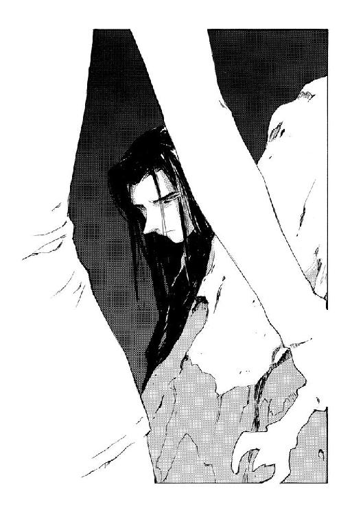
だが、足は動かなかった。見えないなにかが警告を発していた。いま近づけば負ける。
（なんで......圧倒的に有利よ）
だが負ける。予感は揺るがなかった。
呼吸の速度が、汗の噴き出る量が増えた──彼女は視界の中心で微動だにしないエドの姿から目を離すこともできず、ただ相手の言葉を聞くしかなかった。
エドは変わらずに続ける。
「虫たちが互いに近い位置にいるほど、力場も強くなる。中央に位置する使用者は刀身によって守られるので、たとえ魔術を跳ね返すほどに強まった力場の中にいても動くことができる。また、おおざっぱにだが力場を自在に働かすことも可能だ。前述したがその場合の効果範囲は数十メートルから百メートル以下」
と──
そこで区切って、エドはつぶやいてきた。
「その剣は、ただそれだけのものだ」
「あなたはそれに負けるのよ」
嘲笑って、ロッテーシャは告げた。動けなかった手足が、わずかにだが動かせるようになる。震えながらであっても、固まっているよりはましだった。
声を出せば出すほど動けるようになる──そう感じて、彼女は続けた。
「馬鹿げたことをしてたわね。あなたの接近領だかなんだかは、みんな死んで滅茶苦茶になっちゃったわよ。今さら帰ってきて、領主に会おうとしてたのね？ でもわたしに見られたくはなかったんでしょう。昼から、人を誘き出すようなことばかりして」
「勝ち誇った半可通になにを言っても無駄かもしれないが、お前は勘違いしている。事実を把握してもいない」
「把握してるわ。わたしはここであなたに勝つのよ」
もうひざが笑うこともない。彼女は意を決して、間合いを詰めようと踏みだしかけた。今度は、動ける──
エドの、冷たい一言さえなければ。
「俺はお前に会いに来たんだ」
◆◇◆◇◆
「──だからつまり、このマスマ──」
「──んでなのよっ！」
前方から聞こえてきた会話の声に、オーフェンはほおを引きつらせた。まだそれなりに距離があるらしく、また反響が激しいためはっきりとは聞こえない。だが、その声と響きとに聞き覚えがある。
（どう言えばいいのか......）
誰に告げるわけでもない。
自分自身に説明するような心地で、オーフェンは絶望的なつぶやきを発した。
（あれは......どんな時でもハズレだ......ハズレの声だ......）
その時点で、走るのはやめにした。速度を一定に保って歩き出す。頭を抱えて、走るためにかなり先行させていた鬼火を手元にひきもどした。
「だいたいなんでこんなことになるのよ！」
もう一度聞こえてきた声──悲鳴じみた甲高い叫び声。これはクリーオウのものだった。
そして、
「仕方なかろうがというか、俺様にはなにひとつとして落ち度などないぞ！」
こちらの声は、さらに馴染みの深いものだった。ここ最近は聞いていなかったが。
「というわけでマスマテュリアの闘犬、このボルカノ・ボルカンはきっぱり無罪！ 辻強盗くらい無罪！ 墓荒らしと同じくらい無罪！」
「意味分かんないよ兄さん......」
「であるからして超銀河無罪王者である俺様に罪を被せようとした貴様は即刻、親類の結婚式に出るため三日間も走ったあげくもどってきてノコギリ引きの刑！ 承知したならとっととパンダ模様に塗り殺されるがよかろ──」
そこで声が途切れたのは、殴られたのだろう。
「あれ？ なんか光が......ほら」
気がついたように、クリーオウの声がそうつぶやくのが聞こえた。こちらの明かりを見つけたらしい。向こうからも、走り寄る足音が響いてくる。
「オーフェン！」
叫びながら、金髪の少女が明かりの範囲に飛び込んだ。理由は分からないが、背中にマジクをおぶっている。マジクは完全に気絶しているらしく、クリーオウの肩に顔を突っ伏してぐったりと動かなかった。
ついでに──
「おおっ！ 貴様は誰だっ!?」
続いて近づいてきて、叫んだのは剣を持った地人だった。どう答えてよいものか迷っているうちに、その地人──ボルカンは後ろを振り返って、あとからついてきたもうひとりの地人に誇らしげな様子でつぶやいた。
「どうだドーチン。いつかやろうと思っていたのだが兄は今達成した。奴を忘れてやってみたぞ」
「まあ、今まで一方的に忘れられまくってたしね」
「えーと......」
オーフェンはとりあえず、クリーオウに向き直った。聞く。
「なんなんだ？」
「なんだって......オーフェンこそ、なにしに来たの？」
あっさりと聞いてくる彼女に、自分がとんでもなく馬鹿げたことをしでかしたような心持ちでオーフェンは答えた。
「いや、お前らの姿がないから探しに......」
「あ、ホント？ ここにいるけど」
「見れば分かる」
「こっち、行き止まりよ。鉄格子になってるの」
背後を示して──つまり行こうとしていた先を示して、クリーオウが言ってくる。指をさして、背負っているマジクの位置がずれたのだろう。それを直しながら、
「ひどい目にあったわ」
ぶつくさとこぼす。
とりあえずは、もうもどっても良いということだろう──オーフェンはそう判断して、きびすを返した。一応、クリーオウを先に通してやってから彼は訊ねた。
「で、なにがあったんだ？」
「台所でさ、食べ物探してたのよ。で、床に扉があって」
「ああ」
そこまでは見当がついていた。オーフェンはうなずくと、クリーオウが説明を続けるのを待った。彼女はこともなげに続けてくる。
「なにかあるかもって思って開けたのよ。ロッテとマジクも乗り気だったし。で、中が真っ暗だからのぞき込んだんだけど......」
と、ここで初めてクリーオウは怪訝な顔を見せた。
おぼつかない暗唱のように途切れ途切れで、つぶやく。
「そしたら......下からなにかに掴まれて、それで引きずり落とされて......なんだか分からないけど多分殴られたんだと思う。気を失って......それで気がついたら、このふたりがわたしのこと担いで走っていて」
クリーオウがそこで口ごもったせいで、自分に話が振られたと思ったのだろう。ボルカンが声をあげた。
「うむ。全力疾走だった。なにしろ俺様は夜目が利くからな」
「......そうなのか？」
聞き返す。答えてきたのはドーチンだった。
「いいえ。でもなんか『お前たち種族は夜目が利くんだったな？』とか適当なこと言われて兄さんがその気になっちゃって。本当は見えないのに見えるような気がしたってだけでここまで走ってきたんだからすごいと思いませんか？」
「いや、よく分からんが......」
困り果ててオーフェンがうめいていると、クリーオウが言ってきた。
「おかげで、鉄格子にどかーん、て。激突。しばらく気を失ってたみたいなんだけど」
「......マジクもか？」
「あとから追いかけてきて、やっぱり同じ鉄格子にぶつかったみたい。わたし踏んづけられたんだわ、ほらここに足形ついてるし。マジクが気絶しちゃったから、マジクが持ってきた明かりも消えちゃったみたいで」
「そーか」
最後まで聞いても、やはりどうでもいいことだった顛末を聞き終えて、オーフェンはこめかみを押さえた。領主にさんざん脅されたあげくが、こんなことだったらしい。
と──
はたと気づいて、オーフェンは顔を上げた。
「下から引きずり落とされた？」
つぶやきながら、天井を見やる。魔術の明かりが天井すれすれを漂っていた。通路の高さは、あの入り口からずっと変わっていない。
向き直って、地人たちを眺める。どう目測しても足りなかった。
クリーオウも、同じことを思っていたようだった。眉間にしわを寄せて、不思議そうに言ってくる。
「そうよね。わたし、なにに掴まれたんだろ」
地人たちの背では、どうやったところで天井までとどかない。と、ドーチンが簡単に声をあげた。
「あ、それはですね──」
「......ちょっと待て」
もうひとつ疑問が浮かんで、オーフェンは遮った。当たり前すぎて、思いつけなかった疑問点。ますますわけが分からなくなって混乱した声をあげる。
「......お前たち、なんでこんなところにいるんだ!?」
「ですから」
ドーチンは説明を始めた。
すべてを聞いて──オーフェンは罵声をあげると、地下水路を全速力で走り出した。
◆◇◆◇◆
にらみ合いを続けて、どれくらいが経ったのか。
感覚はとうの昔に曖昧なものとなっていた。見つめている相手の影が形を変えていることに気づいて、月の位置が変わったのだと悟る。だがそれも錯覚だったのかもしれない。エドが体勢を変えただけということもあり得た。体勢を変えるということは、次の瞬間には攻撃に移るに違いない......
（落ち着いて）
自分に言い聞かせてロッテーシャは、不安から生じる疑念を振り払おうと努めた。
（そんな時間は経ってない。息を止めていた......息をしていなかった。何分もそうしていられたわけがない。きっとまだ一分も経ってない......）
少なくとも黙したままの対峙は、その程度の経過でしかない。そのはずである。
沈黙を破ったのはエドだった。
「ビードゥー・クリューブスター......は分かるな？」
「父の名よ。分からないわけがないでしょう」
馬鹿にされているのかと思い、辛辣な口調で答える。
が、彼は、しごく真面目にあとを続けた。
「彼の正体については？」
「正体？」
伝説の剣士ビードゥー・クリューブスター。彼女の父。正体もなにも、それがすべてだった。病に倒れ、死んだ......
それを口に出して言ったわけではなかった。だがエドには聞こえたらしい。ゆっくりとかぶりを振ると。
「ビードゥー・クリューブスターの魔剣。彼はそれをどこから持ち出した？ 考えたことはなかったか？ 天人種族の鍛えた魔剣だ。そこいらに転がっているものではない」
と、彼は自分で問いかけて自分で答えた。
「聖域だ。彼は聖域から来た男だった──俺たちは当然、彼がドッペル・イクスだと警戒して接触した。領主が選んだ刺客が俺だった。だが、結論を言えば彼はドッペル・イクスではなかった」
「どういうこと？」
聞き返して、緊張が崩れた。彼の言っていることがさっぱり分からない。
エドはしばし言葉を止めた。そして、言い直してきた。
「ビードゥー・クリューブスターは、ドラゴン種族の聖域で生まれた。そして外界に出てきたんだ」
「............」
嘘だということも考えた。
混乱した頭で、ロッテーシャは眼前にいる男が自分に嘘をついて攪乱しようとする可能性について考えていた。状況は、彼女に有利なはずだ。だからそれを逆転するために、エドが破れかぶれの嘘を言っていたとしてもおかしくはない。
「変よ！」
彼女は声を張り上げた。
「父さんは......わたしには、そんなことまったく──」
だがエドは、まるで聞いていないように先を続けた。
「彼は逃亡者だった。ひとりの子供を連れて聖域から逃げ出してきた。いや......それは正確ではないな。彼は死ぬ前に語ってくれたよ。ビードゥーは、本当はその子供から逃げ出そうとしたんだ」
「え？」
「だが彼はその子供から逃げられなかった。殺そうとしたこともあったらしい。だが殺せなかった。今際の際に彼は断言してくれた。それは愛情ではなく、別の力だと」
むかつきが、生ぬるい体温を圧して広がるのをロッテーシャは感じていた。話を聞けば聞くほど、体温が上がっていく。熱い感情は肌にまで噴出すると、汗となって肌寒さを残した。
熱いのか凍えているのか分からない。
「なにを言って......」
ロッテーシャの問いかけを、やはりエドは黙殺した。先ほど、剣のことを話していたのと同じ冷淡な調子で、続ける。
「その子供は彼を支配して、自分を保護させたんだ。彼は子供に逆らえなかった。数年して彼は発狂し、死んだ。彼はそれを魔剣の呪縛ではないかと──」
「なにを言ってるの！」
「彼が死んで、その子供は次の庇護者を求めたはずだ。だが俺は逃げおおせた。その子供の力がなんなのか、俺は離れて確かめた。単にビードゥーが狂っていただけかもしれない。なんの変哲もない娘を恐れるほどに、目前の死が衝撃的だったのかもしれない」
「............」
彼がなにを言っているのか、もはや聞き返すまでもなかった。話の内容はさっぱり分からないままだったが、ロッテーシャは彼が発する次の単語までも予測できるような心地でそれを聞き続けた。
「ドッペル・イクスであることを疑われたビードゥーが死んで、とりあえず俺の仕事は終わっていた。彼の連れていた娘のことは領主にも報告しなかった。最接近領の連中にも伏せておいた。あとになってビードゥー・クリューブスターに娘がいたと知った連中は大いに憤慨したがね。ましてや、俺がそれと婚姻関係まで結んでいたとなれば。おかげで俺は聖域の内偵だろうと疑われた。まあ、それはいい」
エドは、鷹揚に手を伏せて続けた。
「秘密にしたまま調べ尽くした......その娘の存在は、なんなのか。だがたいしたことは分からなかった。娘自身が無自覚だったのは明白だ。《牙の塔》で、俺はとうとう師に訊ねたよ。彼はこう言った。それは自分の知っている、ある存在に似ているところがあると。俺自身も、それをよく知ってるはずだと」
彼の右目が、暗い輝きを発していた。そこには感情もなく、死の事実を伝える死神の落ち窪んだ眼窩であったとしても違和感はない。
喉の奥ではなく、その虚ろな眼球から──彼の声は聞こえてきた。
「その娘は最接近領の領主だと、彼は言ったんだ」
「あなたこそ狂ったの？」
ロッテーシャは吐き捨てた。
エドが、軽くうなずいてみせる──だが肯定したわけではないようだった。
「狂っていたのは俺の師だ。俺はそう思った──溺愛していた教え子たちが離散して精神がいかれたに違いないとな。とりあえず俺はビードゥーの遺言通り、魔剣を疑うことにした。ドッペル・イクスを狩って情報を得た。その剣は天人種族が護身用に鍛えた品に過ぎないと。だが、あの連中の造った代物がくだらない副作用を起こすというのはよくあることだ。成り行きの中で魔剣を手に入れようとして、俺はその娘を殺した」
と、そこで初めてエドの瞳に人らしい心の動きがのぞいたように見えた。彼は腑に落ちない疑問符をその目に浮かべて、そして続けた。
「実は俺にもこれがよく分からない。殺す必要などどこにもなかった。だが、気がついたら彼女は剣の下に倒れていた......」
「分からないですって!?」
激昂は、簡単にとは言えないもののプレッシャーをはね除けた──ロッテーシャは叫ぶと、眼前の男に斬りかかった。エドが、その一刀を飛び退いてかわす。
二度、三度と太刀筋を変えて空を切断する。だがそれすらも、エドは簡単にかわしてみせた。刀身ではなく、周囲に展開しているはずの剣の結界を使って攻撃すれば良いのだと気づいたのは、その後だった。
だが、それを実行するより先にエドは口を開いた。その言葉が、攻撃を止めさせた。
「それで気がついた。俺もあの時、その娘に支配されていたんだ。ビードゥーと同じように」
彼の言っていることは相変わらず支離滅裂だったが、これはその最たるものだった。冷えかかった頭に、再び血を昇らせてロッテーシャは叫んだ。
「わたしがあなたを思い通りにして、そしてわたしを殺させたっていうの!?」
「そうだ。俺に自分を理解させるために」
あまりの言いがかりに身体が震える。彼女はもつれかかった舌を噛んで止めると、
「......馬鹿げてる......！ あなたは、わたしを殺した理由すらわたしのせいにしようとしている！」
「お前は死んでいない」
彼は即答してきた。
ロッテーシャもまた、すぐさま告げた。叩きつけるように。
「助けてもらったからよ！」
「いや。今ここでまた死んでも、お前は死なないんだ。それが分かった。聖域に行って、すべて分かった。」
つぶやきながら彼は唐突によそを向いた。どういうつもりか分からないが左方の夜空を見上げながら、あとを続ける。
「つまるところ俺の師は正しかったんだ。お前は最接近領の領主と同質の存在だ。ただ領主に比べれば自覚がない分、その力も不正確だが......お前を理解することで、俺は領主の存在も理解した」
こちらを見ていないせいもあったが、それはまるっきり独り言の口調だった。
「わたしを......どうするの」
彼がなにを言ったところでそうするつもりはなかったにせよ──彼女は問いかけた。
エドは視線をもどさないまま、小さく告げてきた。
「聖域に連れもどす。殺してでもだ。どうせ生き返る」
「エ......ドぉぉっ！」
金切り声で、ロッテーシャは叫んだ。
そのまま全力で斬りかかる。プレッシャーも、感情も、なにもない。空白に満たされた頭の中は、ただその手の中にある刃を夫であった男の身体に潜り込ませることしか考えていなかった。刃でなくともいい。爪でも、歯でも、指でも、拳でも。その男に悲鳴でも、苦悶の声でもあげさせることのできる部位であれば、なんでもいい。
エドは避けようともしていなかった。変わらず、虚空を見上げている。こちらのことなど忘れているかのように。だが疑問には思っても、それが突撃を止める理由になどなりはしない。純然たる殺意の釘を真っ直ぐに、ロッテーシャは前進した。
そして──
「何処からも来る。飄々と気配の刻む故郷に......」
奇妙な文句が聞こえてきたかと思うと、横殴りの力に身体を突き飛ばされた。剣の結界ごと持ち上げられ宙を滑る。平衡感覚を失いながら、ロッテーシャはそれでもエドの姿を探していた。彼がもといた場所には彼の姿はない。それを分かった時、地面に叩きつけられた。
落下の衝撃に、肺から空気を絞られ悲鳴をあげる。特別に尖った石の上に落ちなかったのは幸運だった。起きあがると、手の中に魔剣はない。
（落とした......？）
見回すと、自分はかなりの距離を吹き飛ばされたようだった。地下水路の出口から驚くほど離れている。剣が守っていなかったら即死だったろう。
剣がどこにいったのか、闇の中ではすぐに見つけられない。あれがなければならない。あれがなければ、エドを殺せない。彼女はひたすらに罵声を繰り返して、あたりを探った。こうしているうちにも、エドがこちらにとどめを刺すに違いない......
いや。
見つけたエドは、今なおこちらを向いてはいなかった。先ほどより位置を変え──彼女と同じく突き飛ばされたのだろう──、それでもまだ空を見上げている。彼はなにかの到来を予見しているように、拳銃を構えた。見つめている上方にではなく、緩く下方に武器を向けた姿勢で、じっと。そして。
「はははははははははは！」
哄笑が響いた。同時、エドが見つめていたのとはまったく違う空の上から、輝く人影のようなものが落下してくる。哄笑をあげていたのはそれだった。それは銀色の矢のように、一直線にエドを貫こうと──
だがエドも、逆にそちらをこそ警戒していたように素早く向き直った。銃口を上げて先ほどにも聞いた炸裂音を続けざまに引き起こす。エドの持つ武器が小刻みに揺れて、白い煙と火花を散らした。
矢の動きが止まった。見えない壁にでも当たったように。エドの拳銃が放つ射撃音に同調して、音のたびに後ろに弾かれる。やがてエドの武器が音を発しなくなった。途端に人影に勢いがもどる。だがそれが最初の狙い通りにエドのいた地点を貫いた時には、エドは数歩退いて、別の位置にいた。
地面に落ちたのは、紛れもなく人の形をした光の塊だった──それが光を失い。一目では人間と変わらない姿へと変わる。壮年の男が地面からゆっくりと起きあがった。銃で何度も撃たれたはずだが怪我ひとつない。ダミアン・ルーウだった。
エドはその時には既にまた武器の弾倉を入れ替えていたようだった。無言でそれをまたダミアンへと向ける。だがそれが再び動作するより先に、異変が起こった。道化が使う道具のように、いきなりエドの拳銃がばらばらに砕け散る。大きな部品、細かい部品あわせていくつも、無力になって使い手の足下へ散らばる。ダミアンの笑い声が、さらに高まった。
さほど気にした様子もなく、エドは手に残っていた部品をもその場に捨てると、マントの下から剣を引き抜いた。剣は構える間もなく消え失せた。離れているため聞こえなかったが、エドが舌打ちしたらしいのが分かった──表情と仕草で。
「無駄だよ」
ダミアンの哄笑が止まった。
そして笑い声と変わらない響きの声音で、叫び続ける。
「ユイス！ ユイス！ ユイス──紛らわしいことをしてくれた。襲撃者はお前だったのか、ユイス！」
「とりあえず、今はお前に用はない」
エドのつぶやきは小さかったはずだが、ロッテーシャは聞いていた。突然にひとり蚊帳の外に放り出され、痛みにうめいて動くこともできない。
情けない。どうしようもなく自己を押しつぶす感傷に吐き気がする。突然邪魔をしてきたあの化け物も、エドも、こちらのことをもう忘れているように見える。
（なんで......こんな時にまで失敗するのよ！）
叱咤は、動かない身体を起きあがらせる役に立った。めまいに耐えながら魔剣を探す。
その間にも彼らの会話は続いていた。
「迂闊だな！ わたしの領域内で、長々と会話するなど！」
ダミアンが高らかに声をあげた──
「ネットワークは使えなくとも聞いていたぞ。なんの話をしていた!? どういうことだ。なぜお前は裏切った。その娘は何者だ!? 特別なものであるのなら、領主様にさえ感知できないというのはどういうことだ!?」
「答えるつもりはない。どうせお前はここで始末される」
傍目にはなにも起こっていなかったようだが、それも攻防なのか、エドは時折、身をかわす動作を入れながら会話に応じていた。なにか、見えない武器を避けるために間合いを変化させるように。
エドは空手だったが、黒マントの下で両手を構えていた。これが魔術の構えかなにかなのかもしれない──よくは分からなかったが。ロッテーシャは、ふとそんな小競り合いを見つめていた自分に気づいて、かぶりを振った。剣を探さなければ。
再び目を離したあとを追いかけてくるように、エドの声が聞こえてきた。
「忘れてはいないだろうな。俺の装備......テンペストを始めすべての装備はお前が回収していたはずだ。それがどうして今、俺の手にあるのか......」
「そんなものは、わたしには効かない」
「愚鈍は哀れだぞ、ダミアン」
よその話を聞きながら、ロッテーシャは地面を這い回った。やがて見つけた剣は、呆れるほど近くに落ちていた。
それを拾い、立ち上がる。いまだ平衡感覚は怪しかったが、会話が聞き取れるほどなのだ──あのふたりの位置がそう遠いはずはない。十分に剣の効果範囲のはずだった。包むように両手で掴み、刀身を現そうと願う。
会話は雑音だった。煩わしくも、彼女を無視して続いている。
「言っておく。聖域は、領主の暗殺が失敗していることを知っているぞ」
「ほう？」
「いやむしろ、今回のお前の小細工で聖域は確信を強めた。領主の存在について。そしてお前たちが稼いだと思い込んでいた時間は、聖域が逆に利用した。朝まで待っていれば、滅びるのは最接近領のほうだ」
「だから向こうについたというのかユイス？ それは貴様らしくないな」
集中は必要ない──が、平静でなければ勝てるわけがなかった。ロッテーシャはふたりの話を意識の外に追い出しながら呼吸を整えた。数を数える。ひとつ、ふたつ......そして。
「聖域に対抗できるのは領主だけだと思っていた」
エドがつぶやくのが聞こえてきた。
「だがもう違う。同質のものがもうひとつあるのだから」
（また......言うっ！）
痛いほどに目がつり上がるのを自覚する。ロッテーシャが意識の闇に火を点けるのと同時、剣の刀身が現れた。虫の羽音が広がり、魔剣が機能する。
（行け──殺せ）
彼女は渾身の力を込めて、理不尽な男たちの死を願った。父の剣に語りかける。
（どれだけ凄惨でもわたしはそれを見とどける。父さん、父さん......）
剣の作動音にはエドもダミアンも気づいていたようだった。だが、構わずに彼女は続けた。
（彼を殺せば、きっと彼のしたことも言ったことも、全部嘘になるわよね......！）
剣の力場は彼らをともに圧殺するはずだった──
エドの足下の地面が、ひしゃげてめくれ上がる。彼はそれを飛び退いてかわすと、また飛び降りた地面が同じく崩壊する前にもう一度跳んだ。次々とそれを繰り返し、後退していく。彼は最初に隠れていた岩陰まで退くと姿を消した。
追撃するつもりだった。剣の威力を頼みに、すべてに決着をつける。前に踏みだそうとした時、ロッテーシャはもうひとりの男が残っていることに気づいた。
ダミアンは、まったく無傷でそこにいる。特に命じたわけではなかったが、その場にいたなら一瞬で圧壊するほどの力の中で、髪一筋揺らすことなくそこに立っている。ロッテーシャは息を詰めた。いかにも大儀そうに、男がつぶやくのを聞く。
「帰りきたる。痕の多い獣の檻。大にしてうねり、小にしてわめく......」
また、なにかに突き飛ばされた。
今度こそ呼吸ができないほどの威力を横隔膜に受けて、ロッテーシャは無自覚に理解していた──力で押されたのではない。それならば剣が守ってくれたはずだった。もっと別の方法で、そんな力が存在しているかのようにこちらに思い込ませているのだ。実際のダメージはないのに、身体は言うことを聞かなくなっていく。
地面に倒れて、ロッテーシャは顔だけを上げた。またもや剣は手元から離れてしまっている。喉から、笛のような呼気が漏れた。動けない。
（どうして......どうしてわたしのすることは失敗するの......？）
奪われた分を取りもどしたいだけだというのに。喉に詰まった痰にむせて、咳き込む。自分だけが理不尽に拒絶されている。そう感じる。ごく普通に愛してもらうだけでいいというのに。この世界のシステムにはそれが含まれていない。
（なんで......なんでこんな愛のない世界になってしまったの？）
錯乱していると分かっていた。だがそれを押しとどめるだけの自制はもう残っていなかった。体力とともに尽きている。復讐のために培われたすべての理性はもう終わっていた。もうなにも考えることはできない──少なくとも合理的には。
この世界に愛の報いが保証されているのなら......自分の復讐は果たされるべきだ。
それができない理由はなんなのか。まるでこの世界は、人を絶望させるためにあるようだ。希望を与え、失望を覚えさせ、絶望を植え付ける。誰が望んだ？ 誰がそんなことを望んでいる？
彼女は憤怒を轟かせて、土を掴んだ。立てないのならば這いずっていく。なにも考えずに彼女は腕を引き寄せようとした。どちらに進むのか。それすらもどうでもいい。自分の怒りを受け止めてくれる犠牲者がいる場所ならば、どこでもいい。
それでも身体は理性的に剣を求めていた。進む先に剣が落ちている。やがて指がかかる──というところまで近づいて。魔剣は彼女の目の前で別の手によって拾い上げられた。
魔剣を手に取ったダミアンは、それきり彼女のことはどうでもいいというように、身体の向きを変えた。エドが姿を消した岩陰に歩き出しながら、先ほどの話の続きだろう。なにごともなかった態度で続ける。
「我々を裏切り、そして次にまた聖域をも裏切るというのか、ユイス」
エドはもうその場から逃げているのではないか──ロッテーシャは、そんなことを考えていた。苦悶にうめいていた時間がひどく長く感じられたせいで、その隠れ場所にまだエドがとどまっていることが不自然に思えたのだ。
だが、エドはまだそこにいたらしい。ダミアンに答えて、つぶやくのが聞こえてくる。
「事態はもうひとつ単純だ。聖域は既に聖域自身を裏切っている。ドッペル・イクスの名はなんのためにあったと思う」
ダミアンはこちらから遠ざかっていく──後ろ姿だったため表情は分からないが、なんとはなしに笑顔なのではないかとロッテーシャは直感した。敵を嬲る笑みを浮かべているに違いない。彼女は報われないというのに、この化け物は他者を圧倒し、快感を得る権利を持っている。そう思うと、ロッテーシャも自然と笑みが浮かんだ。馬鹿げている。こんな世界に、人が無理をして生きていく価値などあるものか。
（みんななにを勘違いしているの？ 幸せがあると思っているの？）
勘違いを信じるよりも、遥かに楽な方法がある......それは。たったひとつの明解な単語で言い尽くせる。それを思いつきさえすれば、楽になれる。
やがて、エドの潜む岩の前でダミアンが立ち止まった。距離にしてみれば、もうあと三歩もなかっただろう。告げる。
「いやに饒舌だなユイス......追いつめたぞ」
沈黙は、心臓が一拍打つ間のことでしかなかった。だかそれでも確かにその沈黙はあった。エドが、つぶやき返す。
「俺が話し続ければ、夢中になったお前は追ってくる。引き返せないところまで。ネットワークに頼り切りだったお前がネットワークを使えなくなるというのがどういうことか。お前だけが自覚していない」
「調子に乗るな──わたしを滅ぼす方法などここにはないのだ」
相手を引きずり出そうというのか。ダミアンは岩陰に右腕を突き込んだ。
そして、動きを止めた。
ひやりと......冷たい風が肌を撫でるのをロッテーシャは感じていた。なにかが変化したらしい。決定的ななにかが。
「本当に......？」
その岩陰からダミアンに語り返した声は、エドのものではなかった。
ダミアンが、一歩引き下がる。
彼の腕を、なにかが掴んでいる。退がるダミアンにあわせて、その腕は進み出てきた。女の手だった。
「............!?」
言葉にできないうろたえた声音で、ダミアンがなにかを囁いた。祈りの言葉かもしれない。彼について岩陰から出てきたのは、女だった。血にまみれたずたぼろの戦闘服を身につけた長身の女。昨日、この荒野で初めて見た時にはひどく美しく感じられた長い黒髪も、荒れた風に痛めつけられたせいだろう。ぼさぼさになっていた。
死んだと思っていた──死んだと聞かされていた。あの黒魔術士の姉だった。泥に汚れた顔面を壮絶な笑顔に固めて、つぶやくのが聞こえてくる。
「またわたしを恐れたわね？」
ダミアンが悲鳴をあげた。容赦なく、弁解してもごまかせない巨大な悲鳴。恐れを盛大に喉から吐き出して、その化け物がしたのはまず、女の手を振り払うことだった──女はさほど抵抗もしなかった。
自由の身となって、ダミアンはなりふり構わず──放り出すように魔剣をその場に残して上空へと飛び上がった。出てきた時と逆に光の筋となって、夜空に消える。
女は追わなかった──いや無論、空に逃げたものを追えるはずもないのだろうが、ダミアンの行方を視線で追いすらしなかった。ふらふらと頼りない足取りで前に進み出る彼女の姿からは、一瞬前の悪鬼のような表情は跡形もない。そこには疲れた女がいるだけだった。疲れ、傷ついている。
今の自分と同じように。
彼女の名前を、ようやくロッテーシャは思い出した。記憶が回復してくると、先ほどまで感じていたひどく気落ちするようななにかの感情──それが逆に、なんだったのか思い出せない。レティシャ。確かそんな名前だった女を見ながらロッテーシャは泣いていた。わけも分からず泣いていた。
レティシャは数歩前に歩くと、そこで立ち止まった。遅れて同じ岩陰から、エドが姿を見せる。彼の気配を感じてレティシャが振り向いた。会話もなく、しばし見つめ合う。
「............」
「............」
口火を切ったのは、エドだった。
「......俺と戦うか？ レティシャ」
「わたしが勝つわよコルゴン。あなたには負けない」
それは戦うという意味だったに違いない──少なくともレティシャの表情を見つめていたロッテーシャは、そう思った。女が怒り狂っているのはすぐに知れた。なにを怒っているのかまでは分からないが。
（......いえ......）
分かっていた。ロッテーシャは理解して、すがるようにレティシャを見つめた。彼女は自分に同情してくれている。エドの横暴に怒っている。
（助けてくれるかもしれない......助けて......）
だが、それでもレティシャは力無く首を左右に振った。
「いいえ。行けばいい。どうせここはもう終わりよ。協力には感謝するわ」
「俺も装備を手に入れてもらった。取引は公平だ」
ぼそりと、エド。地面に散らばった鉄くず同然のがらくたを見やって、
「テンペストはもう使えないが......ほかの装備にはまだ使い道がある」
「そう」
と、素っ気ないレティシャに、エドは気楽に続けた。
「いきなり背後を取られた時には驚いたが」
なんにしろレティシャはさほど感慨もないふうで、冷たく言い放っただけだった。
「わたしもね、隠し芸のひとつも覚えないとなかなかやっていけないのよ」
無感動なのはエドも同じだった。低く、聞く。
「次は、聖域でか」
「そう遠くないうちにね」
女はそう答えて、道を開けた。
（道を開けた......？）
なぜそんなふうに思ったのか、ロッテーシャは自問した。そして全員の位置関係を悟って、気づく。女は、エドと自分を結ぶ間に立っていた。そこを退いたのだ。
エドがゆっくりと踏みだし、こちらに近づいてくる。途中に落ちていた魔剣を拾い上げながら。
（助けて......？）
地面に寝たまま、すがる思いでロッテーシャはその女を見やった。助けてはくれないのか？ 自分はこの夫に虐待されている。助けが必要なのだ。
思いが相手に伝わらなかったわけではないようだった。女は唇を引き結んでなにやら厳しい面持ちを見せると、嘆息混じりに言ってきた。
「行きなさい......彼についていくのが安全よ。ひとまずはね」
「わたしは、行きたくない。彼とは行きたくない」
か細い声で、ロッテーシャはうめいた。忘れかけていたあの感情──心をすべて呑み尽くすようなあの圧倒的な空虚が押し寄せてくる。エドが、やり取りを聞かずにマイペースで近づいてくる。
彼が横を通り過ぎるのを眺めながら、女がうなずく。
「わたしがあなたでも、そう言うわね。でも今、あなたのために戦ってあげるだけの力はわたしにはないの......」
と、言いながら女は背中を丸めた。月明かりだけでよく分からなかったが、顔面から急速に血の気が引いているように見える。ゆっくりと......本当にゆっくりと、レティシャはつぶやいてきた。
「......致命傷をなかったことにするほどの力は、まだないのよ。進行を止めるくらいはできてもね。まったくいつも中途半端なんだから......急ぎなさいよ......アザリー......急がないと......わたしは死ぬわよ......」
腹の上あたりを押さえて、女はその場にくずおれた。
◆◇◆◇◆
「......遅かったな」
暗闇の中、現れたその男にオーフェンは告げた。椅子の上でひざに頬杖を突き、眼球の向きだけで相手を捉える。
「どこに行けばいいのか分からなかったんでな。とりあえず、ここにいりゃあんたは帰ってくるだろうと思った。コルゴンのところまで駆けもどったところでどうやら間に合いそうもねえし」
「どこまで知った？」
「自分が訊ねる時は単刀直入なんだな。虫が良すぎやしないか？」
オーフェンはつぶやくと、いったん椅子に体重を沈み込ませ──相手を焦らしてから立ち上がった。闇とはいっても、昨夜と同じく月光が窓から部屋を満たしている。最接近領の領主、その執務室を。
なにからなにまでが昨日の夜と同じに見えた。静まり返った屋敷。今入ってきた男と自分以外、誰もいないのだから当たり前だが。乾いた、だがどこか甘さを残した小麦粉のような香り。これは殺気だった。落ち着いた夜気をわざわざ掻き回す野暮の予感だった。執務室は荒らされているわけではない。むしろ片づいている。そこだけは、昨日と違っていた。
床には領主が倒れている。
部屋に入ってきた男──扉も窓も開けることなく入ってきた白魔術士ダミアンは、確認するように聞いてきた。
「殺したのか？」
「まさか。悪いと思ったんだが、まあ、かつがれた仕返しもあるしな。少しばかりのばさせてもらった」
オーフェンは言いながら、白魔術士との間合いをはかった。ダミアンは部屋に入ってきてから動いていない。いつになく憔悴した様子で、見ただけで胸が悪くなるような余裕ぶった態度を取り繕うこともできないらしい。息を荒らげているのではないかとすら見えた──それは馬鹿げた考えだとしても。ダミアンが精神体ならば、呼吸などしているはずがない。
と、ダミアンを見据えたまま、オーフェンは付け加えた。
「......なんで消えないんだ？ こいつは」
「............」
ダミアンは答えてこなかった。そのまま無視するかと思えた。
だが数秒の迷いの末、彼は──あきらめたように、
「通常の現象ならば、ゴースト情報が現実世界に与える影響力というのは物質に劣るものだ。ダメージによって消失する。だがこれは特別製で、死すら無視して存在を続ける......物質以上の存在であり続けるのさ。つまり、理想型だ」
「俺はゴーストなんて言ってないぜ」
揚げ足を取ったわけではない。ダミアンが白状を始めた以上、無意味なことだった。だが技術的な説明に歯止めをかけてから、オーフェンは相手の言葉を待った。
白魔術士は、混濁した眼をこちらに向けた。やはり精神体にとっては意味のない動作だったはずだが。
「ほかの者たちはどうした？」
とダミアンが聞いてきた意味を理解しかねて、オーフェンは顔をしかめた──が、すぐに分かった。クリーオウたちのことだろう。
「さあな。もうそろそろもどってくるんじゃねえか？」
彼女らがどれだけ急いであとを追いかけてきていたとしても、もう少しはかかるはずだった。十分な時間がある。話をするのには十分な。
ダミアンは、捨て鉢な声をあげた。
「そうだ。最接近領の領主は〝ゴースト〟だよ」
身振りまで交えて、解説を始める。眼に浮かんだ自暴自棄は、もう引き返せないところにきているようだった。
「ただし、死者を再現したものではない──もともと存在していない人格を造り上げた。ネットワークから生まれ、ネットワークに根ざし、ネットワークに浸透している人造人間だ。君も先日体験したろうが、ゴースト現象は情報を理想化して再現することができる。それを応用して造り出されたのがこの最接近領の領主様さ。わたしが、ネットワークを使って入手した情報を引き入れ、分析し、答えを算出する。その計算速度は時に現実の時間をも凌駕する。未来を見通すことも可能となる。彼の計画は常に正しいものとなる。まるで、状況こそが進んで彼に付き従っているかのように」
「それが、いかさまのネタか。あんたの力の源でもあったわけだ」
倒れたままの領主をまたいで、オーフェンは前に進んだ。軽く跳んで、飛び降りた靴底が床を叩く。鳴るかと思ったが、靴音は鳴らなかった。
逃げずに、ダミアンはその場に踏みとどまった。はっきりと言ってくる。
「そうだ......わたしの力の集大成だ」
と、胸を示し誇らしげに声を大きくする。白魔術士の声は、肉声でもないくせに鼓膜だけでなく肌でも感じられた。空気を揺らしているのは、彼の声ではなくもっと別の──そんなことがあり得るのなら、怒気なのだろうが。
「なにより素晴らしいのは、領主が存在することによる現実世界への影響力だ......領主様は精神支配を用いずに人を支配できる。わたしが同じことをすれば、どれだけのエネルギーを消耗するか......」
「なるほど」
オーフェンは小さく、声に出して納得した。
呑み込んだ言葉はすぐに体内にある感情を煮沸した──ふつふつと、舌を乾涸らびさせる苦渋がこみ上げてくる。この白魔術士はとんでもなく分かりやすいことを言った。笑い出したいほどに。オーフェンは鼻の頭にしわを寄せ、陰険な笑みを作った。
つまりダミアン・ルーウが気にしていたのは、消費するエネルギー量のことなのだ。それを思いつき、皮肉に胃がねじれる。
「くだらない......くだらない！」
彼は、叫び声をあげた。
「そんなもののために、イールギットやシークは死んだってのか！ ウィノナもだ──」
「......虚構として実在し、理想として存在する。くだらないと思うか？ だが君も、これと似たものと長く接してきただろう」
「なんだと？」
オーフェンは聞き返した。ダミアンは口調に勢いを増し、続けて言ってくる。
「彼のような男が実在するのはおかしい......なんでもできる、万能の、理想の人間がいるのはどこか変だ。そんなことを考えたことがあるだろう。長らくその男に師事しながら、そう思ったことがあるだろう」
白魔術士の言わんとしていることを察して、オーフェンは飛び出しかけていた足を止めた。あと一跳びで敵の首を食いちぎれる距離にあって踏みとどまる。
その効果を分かってだろう。ダミアンは叫び続けた。
「彼は虚構ではなかったかもしれないがね──少なくとも二百年前は生きた人間だった。だが肉体を失って、ネットワークの情報に従って再構成されたという手順に大差はない。いや、肉体そのものを再生された分、チャイルドマン・パウダーフィールドは〝ゴースト〟よりも劣る。そのため、彼は凡人として死亡した。そうではないか？」
そして──
「どうかね？ まだ、領主様を......くだらないと思うか？」
一瞬の隙をついて、ダミアンは虚空に姿を消した。たった一言、叫び声だけを残して。
「くだらないと思うのなら、これを倒してみせてくれ！」
白魔術士が消えたのと同じ空間に、別の人影が現れる。やはり長身の、壮年の男。
いや、壮年というにはまだ少し若いか。それはよく知った顔だった。厳めしい顔つきでこちらを見ている。髪は伸ばしっぱなしで後ろに束ねていた。そのくせ、髭はいつも几帳面に剃っていたようである。奇妙な男だった。その男は実際、《塔》でも奇人として通っていた。
チャイルドマン・パウダーフィールド教師が体育着でそこに立っている。大仰ではない自然体の構え。だがその実、戦闘態勢にある。彼こそが大陸最強の、最高の魔術士だった。負けることのない無敵の術者。
その〝ゴースト〟──
オーフェンは飛び込むと、迎撃の形でこちらに打ちかかってくる師の腕の内側に貼り付いた。拳を相手の脇腹に添えて、裂帛の気合いとともに足で床を踏みつける。突き出した拳は、内蔵を砕く感触を十分以上に伝えてきた。
「......勝てねぇよ」
彼がつぶやくまでには、師のゴーストは消滅していた。
「先生は最初から最後まで不完全なただの人間だったさ。〝ゴースト〟じゃない。彼を理想型に仕立て上げていたのは俺たちだ──だが今の俺は先生の強さの限界を知っている。だから俺が後継者だ。ダミアン・ルーウ。過去を力とするお前は、俺には勝てない」
その部屋の中にはいない──だが聞いていないはずのない敵に向かって、オーフェンは囁いた。
「言い直してやる。くだらないのは先生でも領主でもない。お前だ」
姿は見えずとも、気配は感じていた。ダミアンは屋敷から逃げていない。オーフェンは執務室の入り口に向き直ると、躊躇なく扉を蹴り開けた。
廊下に飛び出し、敵を探す。
（俺では倒せない相手......？ ティッシは間違っている）
オーフェンは鋼鉄製の鞘から、短剣を抜いた。銀色の刀身は暗闇に溶けて輝くことなく濡れた光沢だけを残す。
（あれは、俺にしか倒せない敵だ！）
「わたしを倒す手段はあるまいっ！」
やはり姿は見せないまま、屋敷の中に声だけが響く。
廊下に出たオーフェンを待っていたのは、複数の兵士だった。三人。屋内でも使えるナイフを振りかざし、押し包むように殺到してくる。オーフェンは最も速いひとりを見て取って、かかとを滑らせて身を沈めた。倒れ込むほどに体勢を低くして、短剣の刃を跳ね上げる。
悲鳴があがった。ゴーストが一体消える。その隙間から敵の背後へとオーフェンは脱出し、壁を背にして振り向いた。残ったふたりの敵もこちらを向いている。オーフェンは手早く右手の短剣と、左手で抜いていた投剣とを同時に投げた──剣はそれぞれ標的の喉を射抜いて向こうの壁へと突き立った。ゴーストは闇に薄れて消滅した。
「そうだな。お前を倒すのには手段は要らないんだ」
壁に刺さった短剣を二本回収し、両手に持ってオーフェンは告げた。姿なき闇に。
「お前は俺から逃げられない。お前は俺を退けられない。お前は俺の邪魔をすることもできない。それだけで、お前は磨り減っていくんだろう。精神体のお前は！ 無価値になった瞬間に滅びる！ 生まれたというだけの理由で意味もなく生きていけるのは肉体だけだっ！」
「わたしは......脆弱ではない！」
声が否定を発してくる。
反論は許さず、オーフェンは嘲笑った。
「これから弱っていくのさ。急速にな」
気配を覚えて、身体の向きを変えた。廊下の向こうから派手な足音を立てて、大柄な兵士が突進してくるのが見える。それと同時に、逆の通路から、足音のない兵士が来ているのも分かっている。
通常なら、窮地だったろう──が、オーフェンは落ち着いて両腕を突き出した。叫ぶ。
「我は放つ光の白刃っ！」
魔術の構成を解き放つ。純白の光が一直線に、廊下の闇を引き裂いた。大柄な兵士は、ひょっとすればウィノナのゴーストだったのかもしれない。だがそれを視認するまでもなく、その影は衝撃波の渦に消えた。
破壊された廊下に背を向け、もう一方から来ていた若い男──ひねくれた目をした男へは、投剣の一刀で足りた。
次の敵がまた来るかと警戒するが、訪れたのは静寂だった。オーフェンは残った短剣を構えて告げた。
「攻撃が単調だぞ。ゴーストまでひどく雑だ。対武装盗賊戦闘課の連中ってのは、こうまで容易くあしらうことのできる相手じゃなかったけどな。少なくとも、俺が昔相手にした現実の連中はよ！」
「黙れ。貴様など、駒に過ぎぬ者が──」
「ああ、そうだ。だがお前だけが有利なゲームはもう終わったんだ」
一言ごとに、意識が冴えていくのが分かる。勢いに任せてオーフェンは言葉を続けた。力関係が逆転していくのを肌で感じていた。ダミアンは弱っている。
「俺に勝てる駒を用意できるのか？ ウィノナは死んだ。コルゴンは去った。お前にはなにも残っていない」
「あるぞ......」
その声だけは──ダミアンのその声だけは、怯えを含んでいない。
だからオーフェンは、吐きかけた言葉を呑み込んだ。予想していたことだった。ダミアンが出してくる駒に、それが含まれるであろうことは分かっていた。
小細工もない。奇襲もない。そのゴーストは、廊下の先に不意に現出した。闇の果てにあって、闇よりも黒々とたたずむ者。漆黒の服の男。丸い帽子が頭半分を隠している。帽子の縁から上目遣いにこちらを見つめる眼もまた、不気味なほど丸い。
聖服の男。
（ジャック・フリズビー......？）
領主が言ったその男の名前を、オーフェンは思い浮かべた。
その男のずんぐりとした体躯は重々しく、だが足音も気配もなく、踏み出す一歩をこちらに向けた。
（この距離──）
オーフェンは迷わず構えを取った。魔術の構成を編み上げ、解き放とうとする。十分な間があった。労することなく魔術で制することができる。
そのはずだったが。
「......わたしは直接君に危害を加えられないがね」
背後から、ダミアンのつぶやきが聞こえてきた。なにかが背中に触れたように感じる。実際にはなにも触れていなかったろうが──ダミアンの精神支配の感触が背筋を凍らせた。
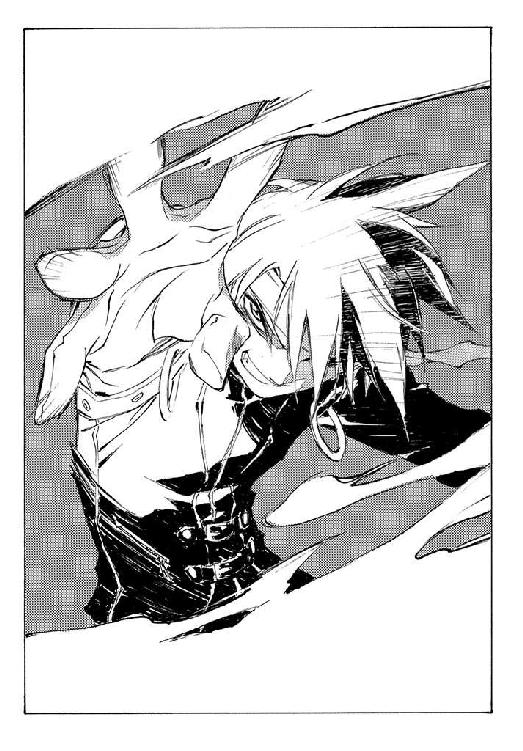
「邪魔をするくらいのことはできるのだよ！」
編みかけた魔術の構成は霧散した。白魔術士の精神支配は、さらに深い領域まで侵食しようと力を加えてきていたが、オーフェンは全力でそれに抗った。敵の意志をはね除け、心の独立を保つ。
それは一瞬のことだったが、聖服の男がこちらへの間合いを詰めるのに十分な時間でもあった。もう魔術のために集中している隙はない。オーフェンは後ろへ跳んだ──聖服の男は既に眼前で攻撃の態勢に入っている。小さな構え。小刻みな一歩とともに打ち出してくる破壊の一撃。確か男が崩しの拳と呼んでいた攻撃だった。
横にかわすには、廊下は狭すぎた。かといって後ろに跳んだところで男の前進する速さから逃れられるわけでもない。だが聖服の男は、追撃を遅らせた。ほんの瞬き一度分の躊躇だった。オーフェンが跳び退く際、虚空に残すように投げつけた短剣が、男の拳をかすめるのが見える。
オーフェンは銃を抜いた。
スライドを引いて撃鉄を起こす。立ち止まる余裕も、両手で構える隙も、照準する時間もない。トリガーを引いてもまともに弾が出るかどうかは分からない。すべてがうまくいったとして、弾が命中する率は高くない。ジャック・フリズビーが与えてくれた勝機は決して大きいものではなかった。
だが。
（こんなもんをまともに使う必要はない──）
声にならない叫びをあげて、オーフェンは拳銃を、再び突進してくる聖服の男の足下へと叩きつけた。ジャックは避けもしなかった──避けようがない。床に投げつけただけなのだから。
拳銃は乾いた木製の床に鈍い音を立てて跳ね上がり、そして当然、暴発した。
暴発した銃の弾がどちらに跳ぶのか。そんなものを予測できる者はいない。都合良く敵に当たってくれることを願っていたわけではなかったが、聖服の男が動きを止めればそれで良かった。
──のだが、幸運は過分に作用して、ジャック・フリズビーのゴーストが消滅した。弾が当たったらしい。
とはいえ、消えたのはしょせんゴーストに過ぎない。
（次が来る......次は、どうやってしのぐ？）
オーフェンは服に隠されたポケットから残ったスローイングダガーを取り出して、警戒の視線を左右に振った。ダミアンはすぐに次のゴースト──恐らく、また同じ聖服の男のゴーストを出してくるはずだった。
しのげばしのぐだけ、相手の攻撃をかわせばかわすだけ、ダミアンは弱っていくはずだった。実際には、そう急速にというわけではないだろうが、それでも精神体であるダミアンは、宿命的に消滅を避けられない。本来、ダミアンが長らく消滅を免れてきたのは、その力の強大さゆえのことだった。それが失われれば、ダミアンは精神の本来の状態──無──へと還ることになる。
（いつまでかかるか分からないが......だが、やれる。敵はすべてゴーストだ。本物じゃない）
銃は落としたままになっている。
暴発した銃は、奇跡的に破損していないようだった。といって拾ってまた撃てるかといえば、そんなことを試すつもりもなかったが。オーフェンはナイフを手のひらに挟んだまま、過ぎる時刻と磨り減っていく殺気とを味わっていた。
やがて──
足音が聞こえて振り向く。聞こえてきたのは悲鳴だった。
「きゃあっ！」
階段を昇って姿を現したのは、クリーオウだった。廊下がひどく破壊されていることと、こちらのナイフに驚いてか、口元に手を当てて目を見開いている。どこかで見つけたのか、燭台に灯を入れて持っていた。揺れる明かりの中で、彼女が聞いてくる。
「ど、どうしたのこれ。なにかあったの？」
（ゴースト......か？）
ダミアンの性格を考えるなら、こういった搦め手はいかにもあり得そうだった。オーフェンは、ナイフをしまうふりをして手の中に隠したまま、構えを崩してみせた。
彼女が駆け寄ってくる。気がつくと屋敷の中に、別の気配も感じていた。どたどたとうるさいのは、地人ふたりの足音だろう。なにやら階下を走り回っているらしい。屋敷が無人と見て、好き勝手になにか漁っているのかもしれない。
クリーオウは目の前まで来ると、灯火を差し出してきた。
「オーフェン......？」
「いや.........」
困惑して、オーフェンはうめいた。このクリーオウはゴーストではない。
（ダミアンは......逃げたのか？）
刹那。
絶叫が響き渡った。
◆◇◆◇◆
（なぜだなぜだなぜだなぜだなぜだ──何故、倒せない!?）
最接近領の屋敷の上空から見下ろして、ダミアン・ルーウはその不可解な結果を受け入れられずにいた。ネットワークは使えなくとも、彼の視覚は光を必要とせず、屋敷の中を把握できる。
仕留めたはずだった。確実に仕留められたはずだった。あの黒魔術士はジャック・フリズビーに勝てない。それ以前に、黒魔術士自身の理想を擬似具現化したチャイルドマン・パウダーフィールドのゴーストに勝てるはずがない。あの黒魔術士が──小賢しい若造が──自身の理想をも上回る意志を持っているのでもない限りは。
（そんなものがあるはずがない......そんな意志があるはずがない。なにも知らない幼子でもなければ。挫折を知り、失敗を知っているはずだ。諦観と己の限界を知っているはずだ。絶望を知っているはずだ......）
知っていれば、その先に希望などはない。
絶望なのだから。その先などない。
生物として生きる彼らに、それを相剋する力などはあり得ない。
彼らは朽ちていく肉の塊だ。生暖かい体液と蠢く腱。その集合だ。限界を持つべくして限界を持つ物質だ。
（それが、あきらめずに前に進むなど──あるはずがないのだ！）
いずれ滅びる種ではないか。
いずれ死すべき個人ではないか。
（世界の運命は、そんなものに託されているのではない。だから肉化した神々は魔王に滅ぼされるのではないか。世界は、生きているもののためにあるのではない。生物は、存在として間違いなのだ！ 肉は、世界の終末を待たずして滅びるべきものだ！ 精神だけを残して──尊い精神だけを残してだ）
あの黒魔術士に対して、ゴーストはもう通用しないかもしれない。
ぞっとしながらダミアンは認めた。かといって直接の精神支配は、あるいはゴーストを利用することよりも難しいかもしれない。物理に作用できないこの身体では打つ手がない。物質として最強である存在に対して、ぶつける武器がない。
月の下。
輝かんばかりにまぶしい月光の中。
ぽっかりと、浮かんでくる思いがあった。
（わたしは......無力......なのか......？）
そして聞こえてくる声があった。
──ひどく弱ったものね──
無論それは、肉声ではあり得なかった。寒風にさらされて、その肌寒さを感じることもなく、だがダミアンは存在の奥底から──逃げ場のない根本から聞こえてくるようなその呼びかけに戦慄していた。精神の王としてあってはならない動揺が、身体を揺らしていた。
──時間がない。ここですべていただくわよ──
違和感があった。はっとして、自分の両手を月にかざす。
それもまた、意味のない行動だった。自分の視覚は光を必要としないはずなのだから。だがそんなことを思い出すゆとりもなく、彼は悲鳴をあげた。両手の形が違っている。右腕に途方もない冷たさを覚えていた。刺すような冷気。その腕からはなにも感じない。ちょうど、あの不愉快な女に掴まれたあたりから感覚を失っていた。その腕は既に自分のものではない。ダミアンはようやく理解した。右腕だけ、女の腕になっていた。
「わたしっのっ......！」
腕に感じた冷たさは、全身に広がりつつあった。
猛烈な喪失感──自分の存在が自分ではなくなっていく。彼は絶叫した。断末魔の声が、最接近領に轟く。
「持っていた力をすべて......奪い取る......というのかっ！ 消し去るのではなく！」
それで終わりだった。
彼女は静かに、その場にたたずんだ。月を見上げて。
「これで......準備は整った......わね」
アザリーは独りごちると、自分の身体を見下ろした。肉体ではない。精神体の身体。特に意識したわけではなかったが、かつてキムラックで結界より外へ出た際に着ていた戦闘服の姿である。もっとも格好など、意味のないことだった。
水平に頭を巡らし──彼女はこれからやらなければならないことを列挙していった。時間は限られているが、決して不十分ではない。まずは、自分の助力を失って無力になっているレティシャを助けなければならない。まだ死んではいないはずだ。
そして。
彼女はそのまま、その方向を見つめた。遥か向こうにフェンリルの森がある。
（キリランシェロ......あなたは来るの？ わたしの伝言を真に受けて、わたしに会いに来るの？）
会いに来るとしたら......それは、いったいなんのためなのだ？
じっとしていれば、その答えを告げに、この上空まで弟が来るのではないか──
そんな益体もない思いをつぶやいてアザリーは、もう用のなくなった最接近領をあとにした。
まだ夜明けまでは遠い。
夜の帳に包まれた屋敷の周囲を、無音で闇を移動する漆黒の巨体と、緑色に輝く無数の眼が取り囲んでいるのも見えていた。それらは時間をかけて包囲の輪を縮めてきたのだ。愚かなダミアンが、自らネットワークを封じているうちに。
彼女はなにもせずに、その上空を通り過ぎた。
それは美しい思い出だった。
そこがどこの風景だったのか、彼女ははっきりと覚えていたわけではない。だが今は違った。自分の記憶がどれだけ確かなものであったか──それを悟って、彼女はうなだれた。自分は、ここに帰ってきたかったのか？ だからこうまではっきりと覚えていたのか？
湖だった。それは確かだ。深い樹海の中、木々に阻まれて風はない。強い陽が射すこともなく、冷ややかな湖面がどこまでも透明に輝いている。
自分は、そこから外に出たのだ。
この清浄の地を離れ、汚れた外界に。
それは馬鹿げた選択だったに違いない。自分が選んだものではないとしても──いや、自分が選んだのか？ 自分をここに連れもどした、悪魔のような男はそう言ったではないか。その男は今、自分を連れて横にいる。だがこの風景の中では、その男はいないも同然だった。そこは彼女の思い出なのだから......その男はいない。
思いの中にあるその風景は静かだった。あまりの静寂に、耳が鳴る音までも聞こえてくる。
とても静かで、汚れた言葉など唇から出ることはない。
胸の中になにも浮かばない。
まっさらな感情だけが、湖面と同じ透明度をたたえて胸を埋め尽くす。
それは美しい思い出だった......が。
そこに、その思い出の風景がそのままあったというわけではない。
むしろ跡形もなく無惨に変わり果てたものが君臨していた。
瑚は砂に埋もれていた。ナッシュウォータでも、時折その黄塵がキムラックから吹いてくることはあった。だがこれほど大量の黄塵が吹き荒れているのを見るのは初めてだった。それを吸い続ければ死ぬと言われている滅びの砂。渦巻いて、思い出までもすべて滅びに塗り固めようとしている。
そして、その黄塵が吹き出す中に女がいた。宙に浮いて、静止している。
空に浮かんだその女は、祈るように両手を胸の前で組んでいた。
細い指を互い違いに、軽く握り合うようにして。
目を閉じている。黒い髪が浮かび上がっているのは、その髪の房が、彼女の頭上に引っぱり上げられているせいだった。虚空の穴に引っかけられるように。
まるで、蜘蛛の巣にかかった蝶──か、あるいは蜘蛛の巣に陣取る蜘蛛そのものか。
女は美しかった。生物ではないように。ひたすらに純白で、滑らかで、冷ややかな。自然に積もった雪像にも似ている。人の手で造られた像ではない。かといって、純然たる自然が造り得るものでもない。
その女を中心として、黄塵が吹き荒れていた。女は虚空に髪を捕らえられていることで動けないでいるのか微動だにしなかった。
ここが聖域。すべての核心。
ロッテーシャはそれを見上げて、涙をこぼした。
それが破滅的なものであると、なぜか知っていた。
ああ。
にょろにょろと。
にょろにょろと生きていきたい。手足もなくそこらの隙間を音もなく這いずって生きていけたらどんなにか素敵だろうか。
というわけで日常的に誰もが思うファンシーな願い事をしながらあとがきです。流れ星なんて見えなくてもきっと叶うさ！ 前向きだなぁ。秋田です。
十八巻ですよ十八巻。ついに十八巻です。きりがいいようなどうでもいいような数字です。
全然関係ないですが、ロト６買ったわけですよ。宝くじなんて買うのは生まれて初めてです。数字を六個マークしますです。一口二百円×五口を一シートで買えるので、千円分買ってみたっすよ旦那。
でたらめに数字を選んでみるですよ。選んでみたのですよ。結果はかすりもしませんでしたけど。で、自分が選んだ数字をよく見てみると......
ランダムに選んだつもりが、８と16と24をやたらと選んでるのですよ。ってここまで書いて気づいたけど、十八巻ホントに関係ないじゃん。まあどうでもいいですよね。八は縁起が良いから別にいいです。なんか今回のあとがき妙にテンション高いですけど、風邪で寝込んでるんでやけくそです。ごめんなさい。
健康というのは大事だなぁと思うわけです。風邪なんて寝て休むよりほかに治す方法もないじゃないですか。迷惑っすよ。なんとかしてくださいよグレゴリーさん。誰ですかグレゴリーさん。知らないっすよそんな人。
......って、最後までこの調子で突き進む自信がなくなってきたので仕切り直し。
十八巻の巻末です。おつきあいいただきました読者の方々にまずは御礼申し上げます。著者校正していて気づいたんですけど、本書の通し番号は40‐35。つまり富士見ファンタジアの四十人目の作家（ということでいいのかな？）の三十五冊目の本なのです。こっそりと三十五冊も書いていたんですね。こっそり？
オーフェンシリーズだけでいうと、ちょうど三十冊なのでした。まあ、記念になにがあるわけでもないんですけど、一応区切りってことで。
シリーズを始めたのはいつ頃でしたっけ......
八年前？ うげ。
前も同じような計算したことありますけど、八年で三十冊と考えると、一年に四冊弱。まあたいした数字ではないですな。別シリーズとかを計算に入れると、四冊強ってとこですね。思ったより書いてない。
しかし八年も経ったわけですよ。このあとがき書いている時点ではまだですが、本が出る頃にはぼくも二十九歳ですよ。
老けるわけだ......
なんかしみじみしてしまいます。
ってこのパターンも前にやったかも。うう。
八年間というとあれですね。八年前に小学生だった子が、もう成人して足にロープつけて櫓から飛び降りたり、素手でライオンを狩りにいったりだとかするわけですね。八年間、いろいろなことがあったでしょう。つらいこと、悲しいことを乗り越え、出会いと別れ、そしてまた出会い。
さらにまた別れ。あまつさえ出会い。もういい加減別れ。しつこく出会い。なんていうか金輪際別れ。なのにまた出会い。このくらい繰り返せばもう立派なストーカーです。教えることなどありません。
なんの話だったか忘れましたけどまあいいですよね。インフルエンザに風邪を併発すると最悪です。普段考えたこともないような専門用語とか浮かんできます。スペキュレティブプリコンピュティションとか。多分もう二度と使うこともないと思いますけど。
思うに八年間というのは（あっ話題もどってる）、過ぎてみればあっと言う間......と言いたいところですけど。今もってぼくにとっても、とんでもなく長い歳月だったような気がします。
どうなんでしょう。世の中は八年経ったからといって、たいして変わってはいないと思いますけど。
個人ひとりひとりは、八年間でどれほど変わったのか。変わっていくのか。
ぼくはなにかが変わったのだろうか。
今からそれを確かめようにも、日記などという都合の良いものをつけているわけでもなく。
ひょっとして八年前の今日もまた、風邪で寝込んでいたりしたのでしょうか。うんうんうなったり悩んだりしながらあとがきを書いては......いなかったでしょうけど。
なんの記憶もありません。
そこで取り出してみるのは八年前に書いた自分の作品。
つまりはこのシリーズの一作目。
怖々とページを開き、のぞいてみる。
そして気づく。
......なんかあまり進歩ねぇかも、俺......
ま、まあいいか。いいよね。八年程度じゃ人は成長しないさ。ふふ。
とまあ、わりと絶望的になったところで自分をいじめるのはもうやめにして、明るいことを考えましょう。
でもなんかあったっけか......
このところ、また仕事仕事と仕事ばかりの生活で、これといったネタがないんですよね。
しかしこんな時に限って、今回担当さんから言い渡されたあとがきの枚数は八ページ。
「余裕ありまくりなんで、書きたきゃ十五ぺージくらい書いてもいいっすよ」
ううう。しくしく。
あ、そうそう。こんなことがありました。
とても不思議な話です。
原稿のデータをね。検索することってあるわけですよ。単語とか。
大抵は、なにをどこに書いたのかというのは概ね把握してるので、検索するまでもないんですけど。だからそうしょっちゅうすることはないのですが。
たまーに、するわけです。
それで、やってみたら。
検索する単語の欄に、前回検索した履歴が残ってるんですよ。
「マイケル」って。
......いや、そんなもん検索した記憶ないんですけど。
ていうかマイケルなんて原稿書いた覚えもないですし。
ナイト財団の呪いに違いないと思うわけですが。どうでしょう。
そんなことはともかくとして、時代はアレですか。本が出る頃にはオリンピックは終わってるでしょうから、Ｗ杯ですか。
ってもサッカーあまりよく知らないんですけどね。嫌いではないのでＷ杯くらいは観ます。でも、開催前に気になることがあるんですけど。
だいぶ前のニュースで『フーリガン対策の訓練やってます』だとかそんなトピックがあったんですよ。日本じゃないっすよ。そのフーリガン対策の訓練。なんか特殊部隊みたいな黒い服着た人たちが大勢ヘリから降りてきて、マシンガン構えて前進してる映像が流れてたんですよ。
............
撃つんですかッ!?
い、いやまあ、どう言っていいのか分かりませんけど......フーリガンってそんなに怖いもんだったのか......
なんかその映像のインパクトが強すぎて、本当にＷ杯を楽しみにして良いものなのやら悩んでます。あえてタイトルをつけるなら『惨劇の日』です。ていうかこの前夢に見ました。悩みすぎですか？ 謎は深まるばかりです。
それともあのニュース映像は、少年の日に見た一瞬の幻影？ 教えてよメーテル。メーテルといえば食玩に入ってたこの白いメーテルはなんじゃらほい？ 控えめに言っても白すぎるんですけど......９９９はＴＶシリーズも映画も全部観たつもりでいたんですけど、白いメーテルなんていましたっけ。でも観たの子供の頃だし、記憶が薄れてるのかも。とにかくこれも謎です。白い恋人ブラックとかを思い出します。いやブラックのほうが好きなんですけどね。
と。こんな具合で血の惨劇と北海道の名産お菓子を同列の話題にしつつ、本書におきましてはこんなところで。ちっとも仕切り直せてないし。
ではでは、また次の巻末でお会いしましょう～。
二〇〇二年二月──
秋 田 禎 信
本書は、富士見ファンタジア文庫（富士見書房）で２００１年８月に刊行された「魔術士オーフェンはぐれ旅 我が庭に響け銃声」と、２００２年３月に刊行された「魔術士オーフェンはぐれ旅 我が館にさまよえ虚像」に収録された作品を、再編集したものです。
この作品はＴＯブックス（株式会社ティー・オーエンタテインメント）「魔術士オーフェンはぐれ旅 新装版９」（２０１２年５月31日第１刷発行）に基づいて制作されました。
魔術士オーフェンはぐれ旅 新装版９
発行日 ２０１２年５月31日初版第１刷
著 者 秋田禎信
発行者 柴田 維
発行所 ＴＯブックス（株式会社ティー・オーエンタテインメント）
〒150-0011
東京都渋谷区東３丁目13番11号 フロンティア恵比寿４Ｆ
TEL：03-6427-9625
URL：http://www.tobooks.jp
©2012 Yoshinobu Akita
本作品の内容を無断で複製・複写・放送・データ配信などすることは、固くお断りいたします。